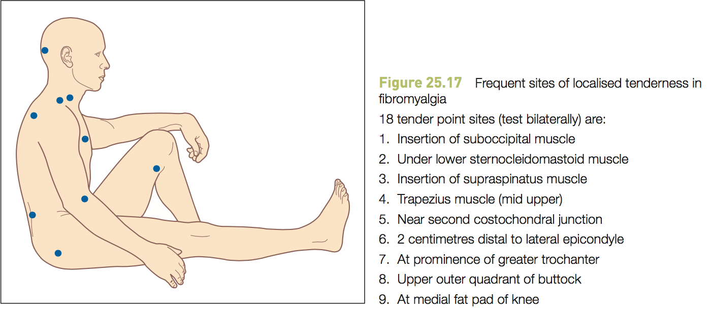

Clinical skills reference file
Table of Contents
- TODO Corrections that need to be made to this website
- 1. Remembering all this stuff
- 2. General information
- 2.1. Histories
- 2.2. Examinations
- 2.3. Systems review
- 2.4. Summarising and presenting
- 2.5. Preparing for a clinical assessment
- 3. Histories
- 3.1. How to memorise
- 3.2. Notes on histories of specific body systems
- 3.2.1. Respiratory
- 3.2.2. CV
- 3.2.3. GIT
- 3.2.4. Genitourinary
- 3.2.5. Endocrine
- 3.2.6. Musculoskeletal/Rheumatological
- 3.2.7. Neurological
- 3.2.8. Paediatrics
- 3.2.9. O&G
- 3.2.10. Skin
- 3.2.11. Lymphatics/haematological
- 3.2.12. EENT
- 3.2.13. Psychiatric
- 3.2.13.1. General considerations
- 3.2.13.2. HPC
- 3.2.13.3. PMHx
- 3.2.13.4. THx
- 3.2.13.5. FHx
- 3.2.13.6. PsHx
- 3.2.13.7. Conclusion
- 3.2.13.8. Screens for specific conditions
- 3.2.13.8.1. Mood/affective disorders
- 3.2.13.8.2. Anxiety disorders
- 3.2.13.8.3. Stress-related disorders
- 3.2.13.8.4. Schizophrenia and delusional disorders
- 3.2.13.8.5. Organic brain disorders
- 3.2.13.8.6. Others
- 3.2.13.8.7. Substance misuse
- 3.2.13.8.8. Personality disorders
- 3.2.13.8.9. Neurasthenia
- 3.2.13.8.10. Puerperal mental disorders
- 3.2.13.8.11. Suicide risk
- 3.2.14. Geriatrics
- 3.2.15. Infectious diseases
- 3.2.16. Breast
- 3.2.17. Special frameworks
- 4. Examinations
- 4.1. How to memorise
- 4.2. Notes on examinations of specific body systems
- 4.2.1. Respiratory
- 4.2.2. CV
- 4.2.3. GIT
- 4.2.4. Genitourinary
- 4.2.5. Endocrine
- 4.2.6. Musculoskeletal/rheumatological
- 4.2.6.1. IPMA approach to joints (or LFMM = look, feel, move, measure (function, ROM))
- 4.2.6.2. Looking for specific conditions
- 4.2.6.2.1. RA
- 4.2.6.2.2. Seronegative spondyloarthritides
- 4.2.6.2.3. Crystal arthropathies
- 4.2.6.2.4. SLE
- 4.2.6.2.5. Scleroderma
- 4.2.6.2.6. Rheumatic fever
- 4.2.6.2.7. Vasculitides
- 4.2.6.2.8. Soft tissue rheumatism
- 4.2.6.2.9. Nerve entrapment syndromes
- 4.2.6.3. Overall/GALS/MSAL
- 4.2.7. Neurological
- 4.2.7.1. Cranial nerves
- 4.2.7.2. Speech and higher centres
- 4.2.7.3. Peripheral (IMRS+gait)
- 4.2.7.4. Cerebellar
- 4.2.7.5. Unconscious patient
- 4.2.7.6. Correlating signs to pathology/ddx
- 4.2.7.7. Summary/full examination
- 4.2.8. EENT
- 4.2.9. O&G
- 4.2.10. Paediatric
- 4.2.11. Lymphatics/haematological
- 4.2.12. TODO Skin/nails/lumps
- 4.2.13. Breasts
- 4.2.14. Mental state/psychiatric
- 4.2.15. Geriatrics
- 4.2.16. Infectious diseases
- 4.2.17. Acute illness/life support
- 4.2.18. TODO Death
- 4.2.19. Neck lump
- 4.2.20. General
- 4.3. Standardised testing utilities and procedures
- 4.3.1. AUDIT (HMB)
- 4.3.2. Urinalysis (HMB)
- 4.3.3. MMSE (AEB)
- 4.3.4. Oxygen masks (SH)
- 4.3.5. PEFR (SH)
- 4.3.6. Thermometers (HMA)
- 4.3.7. Blood pressure (HMA)
- 4.3.8. Aseptic technique (Phase 2)
- 4.3.9. Venepuncture and blood sampling (Phase 2)
- 4.3.10. Cannulation (Phase 2)
- 4.3.11. IV drips (Phase 2)
- 4.3.12. Injections (Phase 2)
- 4.3.13. OT and PPE (Phase 2)
- 4.3.14. Operating theatre procedures (Phase 2)
- 4.3.15. Casting (Phase 2)
- 4.3.16. 12 lead ECG interpretation (Phase 2)
- 4.3.17. Glucometer (Phase 2)
- 4.3.18. Spirometry (Phase 2)
- 4.3.19. Faecal occult blood testing (Phase 2)
- 4.3.20. Life support (Phase 2)
- 4.3.21. Rectal examination (Phase 2)
- 4.3.22. Vaginal exam and pap smear (Phase 2)
- 4.3.23. Child parameters (Phase 2)
- 4.3.24. Paediatric otoscopy (Phase 2)
- 5. Investigations
Use this to store all mnemonics and other information about CS.
Thus expect to find written here the most comprehensive version relevant to our current skill level. However what is written under each section is not always routine, so watch one of the videos for that.
Probably not useful in Phase 2: Dead, Breast, Acutely ill, ID
There are linked videos under each section for your perusal. While they don't correspond exactly to the method outlined here, they're good enough to sort of demonstrate how you'd do it IRL.
Added [ ] where anki is needed. Make sure you add some cards for very common presentations. Also these ddx sections are not anki'd:
- Mental state
- Breast
- Skin
- Infectious diseases
Get more from different sources as well…
TODO Corrections that need to be made to this website
TODO Additions
TODO Major [0/2]
[ ]Tutorial and lecture content relating to clinical assessment[-]Incomplete sections of Talley's[2/4][X]Genitourinary (summary/extension)[X]Haematological (summary/extension)[ ]Neurological (correlations)[ ]Breast
TODO Minor [0/2]
[-]Incomplete sections of Talley's[2/4][ ]Dead[X]Acute illness[X]ID[ ]Every summary/extension/correlations chapter (aside from the boxes)- Especially text of correlations chapters other than the boxes (these have not been included)
[-]Even within chapters that have been covered, not all of them are in Anki yet (e.g. ulcers; disease boxes are better left to a pathology textbook or UFAP)[4/8][X]Cardiac (parts)[X]Respiratory (parts)[ ]GIT (non-ddx sections)[X]GU (parts - currently suspended)[ ]Neuro[X]Rheum[ ]Derm[ ]Any non-ddx segment of this guide
TODO Errors/corrections
TODO Major [0/2]
[ ]Abbreviation system is not completely consistent
TODO Minor [0/2]
[ ]Spelling[ ]Formatting
1 Remembering all this stuff
1.1 General organisation
- General history taking occurs as a locus before seeing an actual patient
- Walking from head to toe:
- Nervous system
- head
- Psychiatric
- head
- EENT
- relevant locations on the head
- CV
- central chest
- Haematological
- central chest
- Breasts
- self-explanatory
- Resp
- outer chest
- Skin/nails/lumps
- hands
- Endocrine
- upper abdomen
- GIT
- central abdomen
- Genitourinary
- groin
- Rheumatological
- knees
- Each individual system will have its own version of PoW to walk through for history
- Then in the usual meeting room we have the examination being performed
- For miscellaneous things e.g. clinico-pathological correlation, remember it as part of the Library
- Memorise the appendices too, albeit separately
1.2 Technique
1.2.1 Mnemonics
1.2.1.1 Histories
- Use the PoW memory palace. Put pieces of information in the associated "places" and add characterisation to them or other things to the loci as information comes along.
- Imagine the HPC as a story, with the courtyard at PoW serving as a portal. Else you can use premade images to encode details of HPC.
- For drug names, try to think of something the word sounds like. So if they say "atorvastatin 10mg bid" think of an onion (Tor) covered in shit (major system - 10) being waded through by a swan (2 looks like a swan's neck)
1.2.1.2 Examinations
- Keep to the body walk. If you feel like you'll have trouble remembering the information later, put an image onto that part of their body. So if you detect an abnormal radial pulse e.g. irregular rate, normal amplitude, imagine the waveform covering his arm.
1.2.1.3 Differentials
- A favourite is the acronym "VINDICATE Me"
- It may be more laborious to memorise all differentials separately for specific signs/symptoms rather than generatively
1.2.2 Non-mnemonic
1.2.2.1 Histories
- Why would you use anything but a mnemonic to remember the structure?
- Other than that flags for what to ask don't necessarily require mnemonics
1.2.2.2 Examinations
- It encodes itself, so it's unnecessary for the most part.
1.2.2.3 Differentials
- If you hate mnemonics, anatomical or physiological frameworks might work.
- As always, start from the most relevant features (clusters/unusual). Use those to deduce what's most likely.
2 General information
2.1 Histories
2.1.1 Elicitation
- The order of a consultation is HEETT (history, exam, explain findings/ddx/mgmt, testing, treatment)
- As always, focus to the case
- For any major complaint/symptom, it's good to ask APPA (yip yip!):
- Anatomy
- where is it?
- Pathology
- what is the nature of it?
- Physiology
- how does it affect the patient?
- Aetiology
- why did the patient get it?
- SOCRATES isn't just for pain, it can be applied to every symptom.
- When asking about S, get them to point to it.
- The O, "onset", should be expanded to include patterns/length of episodes.
- T is more about when it started, has it gotten worse or better, any similar episodes before, etc.
- Don't beat around the bush - just go straight into this when they say what they have
- Saying "drugs" often scares the patient so say "medications" or "tablets" etc.
- Important drugs to ask for
- HTN
- Cholesterol
- Diabetes
- Arthritis
- Anxiety/Depression
- ED
- Contraception
- HRT
- Epilepsy
- Anticoagulants
- Antibiotics
- And with drugs, don't forget to D2IS them
- Dose
- Duration
- Indication
- Side effects
- Conditions people might forget they have
- HTN
- Cholesterol
- Diabetes
- Arthritis
- ED
- HRT 1
- Pain
- Don't force them to describe it
- Give options or clearer questions e.g. "what does your pain feel like?", "people tend to describe pain with different words; how would you describe yours?"
- When asking about intensity, describe what the points actually describe instead of just giving numbers e.g. "on a scale of 0 to 10, with 0 being no pain at all and 10 being the worst pain you could possibly ever imagine, how severe is your pain?"
- MANNER IS VERY IMPORTANT - be more comely! (see Patient centered
approach for more)
- Assertiveness - seriously, people will believe anything you say if you say it confidently (cf. Donald Trump)
- Lighten the mood e.g. when asking an old woman about rec drugs
- FULL BODY FACING i.e. TURN THE CHAIR
- Don't make it seem like you're dismissing the patient even if they're talking about something utterly irrelevant e.g. "that sounds lovely"
- Speak up without shouting
- Don't overdo signposting - it's mainly meant for the overly talkative (see the rest of this section)
2.1.2 Patient-centered approach
Consider completing this module (unfortunately UNSW doesn't have a subscription): https://webcampus.drexelmed.edu/doccom/db/read.aspx
- Skills
- Data gathering (make sure you integrate the two appropriately,
funnel model)
- Open
- Nonfocusing
- Silence
- Nonverbal encouragement
- Neutral utterances
- Focusing
- Echoing
- Open-ended requests
- Paraphrasing
- Nonfocusing
- Closed
- Y/N questions
- Specific questions
- Open
- Relationship building
- Emotion-seeking
- Direct inquiry ("how did it make you feel?" OR if clearly upsetting, "i imagine you felt very strongly about this" OR if really obvious, "you seem X; can you tell me about what it's like for you?")
- Indirect inquiry
- Impact ("how has it affected your life?")
- Beliefs and attitudes (what they think caused the problem)
- Self-disclosure ("i would (certainly?) feel upset if I was in your situation"; be careful to avoid overly strong terms like "angry" or "depressed", "upset" is better in such cases)
- Triggers ("what made you decide to see me?", also "what else is going on in your life?")
- Empathy
- For an emotion, remember to NURS it (name, understand, respect, support e.g. patient's husband has left them, "it makes sense you were angry after your husband left you. i can imagine that was very difficult for you to deal with. can i be of any help to you now?")
- When providing emotional support, BATHE them (background, affect, trouble, handling, empathy; examples of how to ask each point includes "tell me about it", "how does it make you feel", "what troubles you the most", "how are you handling it" and "i can imagine etc.")
- Don't say "you must have felt" or use any imperatives. They know more about their problem than you, so don't try to dictate how they ought to feel.
- Nonverbal communication
- Categories
- Kinesics
- facial expression, gaze, body tension, gestures, fidgeting, touch, body posn
- Proxemics
- space between clinician and patient e.g. height difference, interpersonal distance, angle of facing, physical barriers like crossed arms/legs or physical objects
- Don't sit or stand higher than them: empower, don't overpower
- If the patient is in a bed, reduce disparity by sitting or squatting at bedside
- Paralanguage
- vocal qualities e.g. tonality, rate, rhythm, volume, emphasis
- Speak with a warm and inviting tone
- Autonomic
- ANS features reflective of emotion e.g. flushing, blanching, sweating
- Observing nonverbal communication
- It may help to briefly tune out of the words
- You need to be able to understand:
- Somatic/nonverbal features typifying an emotion
- The meaning of a particular response
- Matching
- Subtly mirroring nonverbal expressions to establish rapport
- Do it slowly so you don't freak them out e.g. slowly
transitioning into head tipping/using hand gestures if the
patient has a habit of doing it (and you can do it yourself
of course)
- Doesn't need to be complex, even the way they cross their legs, fold their arms or rub their chin may work
- Leading
- You can also use nonverbal expression to shift state
- Slowly/subtly introduced leading behaviour will induce a reciprocal act by the other
- Opportunities given
- Follows = nonverbal connectedness
- Lead them away from nonproductive behaviour (e.g. after matching their persistent frown, gradually show a slight smile in the hope they will follow)
- Addressing nonverbal communications
- With less overt nonverbal messages you need to seek emotions
and focus open-ended enquiries
- e.g. "You look a little down, could you tell me what's going on?", "You seem kind of tense"
- Once the emotion is clear, respond empathetically (NURS)
- Pay attention to mixed messages as they indicate conflict
(sometimes with the clinician) and lack of safety in direct
expression e.g. A: "stop smoking" B: "sure" (rolls eyes and
shakes head)
- Indirectly acknowledge the disparity
- e.g. "everything is fine" while shaking head negatively - "I hear your words but I get the feeling that things aren't going too well at work"
- If this prompts appropriate, congruent discussion, success!
- You may also frame it as a paradox
- e.g. "I know some people who say everything is fine at work at the same time they were concerned about their jobs"
- Directly addressing is sometimes best approach
- e.g. "I notice you saying 'all is well' but shaking your head as if to say 'no'. What about that?"
- Be careful about doing this - you need to be comfortable enough with them so it's not taken as mockery
- With this in mind, don't give them yourself
- e.g. "I'd like to hear more about that" (looks disinterestedly at chart/computer)
- Indirectly acknowledge the disparity
- With less overt nonverbal messages you need to seek emotions
and focus open-ended enquiries
- Categories
- Emotion-seeking
- Data gathering (make sure you integrate the two appropriately,
funnel model)
- Smith's five step model (a pyramid model, essentially. consider this
more as "the right way to move into closed questioning")
- Set the stage (30-60s) (not in this exact order obviously)
- Welcome! (handshake)
- Name/age (how should I address you?)
- I am X, a Y
- Ensure their readiness and privacy
- Remove barriers (sit)
- Ensure their comfort, put them at ease
- Elicit chief concern, set agenda (1-2n) (good to do for OSCE/ICE or
in a more realistic situation)
- We have X mins together today
- Forecast what you would like to happen
- Obtain a list of everything they want to discuss
- Summarise and finalise agenda
- Start with nonfocusing skills (30-60s)
- Start with open question/request
- Use non-focusing open skills (attentive listening)
- Additional data from nonverbal sources
- Move on to focusing skills for symptom stories, personal and
emotional context (3-10n)
- Symptom story (use open skills)
- Personal context (personal/psychosocial context, beliefs/attributions, also open skills)
- Emotional context (use emotion seeking skills)
- Respond to feelings/emotions (NURS)
- Expand story
- Transition to the clinician-centered phase (30-60s)
- Brief summary i.e. as you understand the story so far
- Check accuracy ("anything you'd like to add to that?")
- Indicate content and style of inquiry will change if patient ready ("Is it OK if we shift gears and ask some more specific questions about _?")
- Set the stage (30-60s) (not in this exact order obviously)
- Example of applying Smith model for OSCE/ICE (Mr Johnson)
- Hi Mr Johnson, I'm Chris, a 3rd-year medical student at UNSW. Is it alright if I ask you some questions and do a physical examination in the next 15 minutes? (privacy is already ensured by the cubicle) (then address barriers and comfort)
- So what brings you in?
- Nonfocusing skills regarding the PC
- Focusing PC
- So, as I understand it (blah blah blah). Is there anything you'd like to add? (Y/N - keep listening if Y). Now, is it alright if we change tack and delve into the specifics of your condition? For this the questions might be quite different in type.
- Chronological description of HPC
- Obtain and describe data without interpreting (Ph1)
- Describe symptoms already introduced by patient ("then what?"; get the time course)
- Describe symptoms not yet introduced in the already id'd body sys (and general health symptoms)
- Interpreting data while obtaining: testing hypotheses about
possible disease meaning of sx (Ph2+)
- Describe relevant symptoms outside body system involved in HPI (if pertinent to considered dx)
- Inquire re presence or absence of relevant nonsymptom/2° data not yet introduced by patient (meds esp complementary and alts, previous dx's and tx's, clinician visits and hospital stays)
- Understand patient perspective
- Impact/meaning of illness on self/others (how is this affecting your life/work/spouse/coworkers?)
- Health beliefs (prefix with "many patients already have ideas
about what's causing their problems, so I/we ask everyone this
question. it really helps us help them.")
- If they ask "aren't you the doctor" say "I find it helps us find the best way to assist you if we can both share our perspectives" 2)
- Triggers for seeking care ("what made you want to come in to talk about this?" ± "what else is going on in your life?")
- Obtain and describe data without interpreting (Ph1)
- Note that you can pepper open questions with closed ones +vv. The model describes which modality should be dominant at each stage of the interview.
- The environment and non-verbal information will also give a lot of information e.g. physical characteristics (emaciation), accouterments (tattered clothing), environmental (greeting cards or lack of, puffers, cards)
- Always verify nonsymptom information e.g. if the patient says "I think it's gout/arthritis/MI" ask them why, or check the records if they say "I was in hospital and was catheterised"
- How to minimise bias from closed questions
- Listen actively - when they respond, listen to what they say and how they say it. Don't just think about what to say next.
- Proceed from general to specific. Start open, funnel into closed.
- Pursue details e.g. for meds, dosage, how often intended, how often actually, barriers to taking, sfx
- Single questions i.e. "ever had headaches" > "ever had headaches, fainting, loss of vision, blurred vision, poor memory, stroke?"
- Inform patient with transitional statements between sections
- Avoid negatively worded questions like "you're NOT coughing up blood?"
- Don't suggest a response by the way the question is framed e.g. "Do you feel pain in your left arm when you get it in your chest?"
- Give equal weight to alternative answers e.g. "it sounds like there is some pain when you exert yourself, but what about when you're not exerting?"
- Don't interpret data as you collect it e.g. "It must be haemorrhoids. Any nausea/vomiting?"
- Balance attention to all aspects. Advise e.g. "We've talked a lot about your constipation, but not much yet about the chest pain"
- Don't confuse patient with rapid shifts or jargon. Avoid e.g. "did they do an ERCP or another endoscopy?", "any lesions found?", "ever had an MI before?"
- Encourage questions.
- Check patient's understanding.
- Summarise at end of section or interview.
- If they have a psychiatric issue ask them the relevant questions.
- NURS can be adapted to steer a ranting patient back onto the right
path:
- "Mr Jones, I can understand how this is making you feel so distressed. I can imagine it must be very shocking and difficult to deal with the chest pain. And for us to help you best, we need to get the whole picture." etc. (adapted from the criteria)
- How to not cause problems while taking notes
- Avoid
- Excessive breaks in eye contact
- Disruption of information flow
- Disturbing rapport or impeding the relationship in any way
- It's common for clinicians to take notes, but the primary focus
must be on the patient
- Eye contact (at least) 30s'ly
- Non-verbal behaviours e.g. patient-oriented gestures and posture
- In any case, provide a rationale for what you're doing
- e.g. "I'm going to be taking notes from time to time to remind me of what we talked about during our visit"
- e.g. "I'm going to be using the computer from time to time during our visit so I can enter info on the electronic medical record in the most accurate way"
- You can ask the patient for feedback should it interfere
- e.g. "I'll be making an occasional note early on, later I'll be taking more notes and using some of my own to refer to. This helps me get all the information about you and keep it in order. If that becomes disruptive for you, please let me know."
- Avoid
- During difficult or tension-laden examinations/investigations
e.g. pelvic exam
- Calm, confident discussion of what you're doing and why it's appropriate
- Attend to their experience and comfort
- Inquire about sx and problems in areas being examined also defuses tension
- You can also instruct self-examination and other preventive techniques
- A summary of good and bad clinician behaviour
- Do
- Unconditional positive regard
- Empathy
- Acting as the patient's ally
- Acting in the patient's interest
- Respect
- Self-confidence tempered with humility
- Encouraging patient autonomy without forcing it
- Recognizing at least one patient strength or unique attribute
- Awareness of the importance of spirituality to the patient
- Being honest but hopeful
- Informing the patient of the student's role in care and reason for seeing her or him
- Introducing self and all others present
- Arranging a mutually satisfactory time to interact
- Attending to the patient's physical comfort before interviewing
- Anticipating issues that could disturb the patient
- Openly addressing confidentiality
- Providing service beyond the usual
- Meeting specific requests from the patient
- Don't
- Drinking any beverage or eating
- Chewing gum or a toothpick
- Swearing
- Behaving seductively or making sexual remarks or jokes
- Poor personal hygiene
- Uncomfortable joking or teasing
- Expressing personal opinions about others
- Going beyond appropriate self-disclosure to discuss one's own problems
- Making judgments that imply good or bad about the patient or others
- Do
2.1.3 How to practice
- Smith has some very good exercises for practicing this stuff. Make sure you use them. (Chapters for us would be 2,3,5,7,8,9)
- To get feedback from patients or check how you are going:
- In the middle of the interview:
- Inquire directly
- "How are we doing here so far?"
- If good, say "Good, it seemed like things were going well to me, but I wanted to be sure"
- Else, address their issues e.g. tiredness
- "How are we doing here so far?"
- Inquire directly
- At the end:
- "Others have commented on my manner as being XX. How did you find it?
- In the middle of the interview:
- Taping interviews for self-critique
- Make sure you get permission, ensure confidentiality (i.e. you will erase it afterwards, only these people will listen to it)
- e.g. "Before we get started talking, I'd like to ask your help. I'm interested in improving my communication skills and would like to record our interaction. I (and my instructor—or my group) will listen to it afterward to see how I could have communicated better. Nobody else will hear it. Then we'll erase it. It's sure nothing you have to do but would be a big favor to me. If during the interview, you change your mind I will erase the recording immediately."
2.1.4 Special situations
2.1.4.1 Specific challenges
2.1.4.1.1 Reticent patients
- Rely on focusing open and emotion seeking skills
- Also direct empathy (NU?RS)
- Self disclosure may work
- May need to be explicit about what you are asking
- Provide more detailed instructions e.g. "Please tell me all about
your back pain, from the time it started until today, in as much
detail as you can remember. This will help me to help you."
- The key is not to give up on open skills too quickly.
- If you try all of them and still cannot get much of a symptom story, ask about symptoms with closed questions in Step 4.
- Provide more detailed instructions e.g. "Please tell me all about
your back pain, from the time it started until today, in as much
detail as you can remember. This will help me to help you."
- Try to get them onto a point they want to talk about to get things going
2.1.4.1.2 Overly talkative patients
- Get them back on track if they deviate. Use a statement such as "I'm sorry to interrupt/Much as I'd like to hear more about your XX, you understand that we have to move on to how I can help you today."
- Interruption needs to be respectful and tactful; refocus, redirect
(sometimes repeatedly) to the here and now.
- NURS
- Offer reassurances such as "I see you are concerned about XX; could you explain to me how that applies to you personally?", "Those are important details, but how did that affect you emotionally?"
2.1.4.1.3 Self-diagnosing patients
- Patient is obsessed with reciting symptoms and 2° data e.g. test results
- Open ended skills may not be enough here: need to actively direct it with emotion-seeking skills (after summarising the symptoms; make sure you show you are listening to them)
2.1.4.1.4 Necessary personal information is not forthcoming
- You can ask for this later in the middle to late interview
- Enquire sensitively, non-judgementally and respectfully: tell them how important this info is for you to be able to help, reassure confidentiality
- Recommended to be more clinician-centered if not obtained at the start
2.1.4.1.5 Aggressive patients
- Try to defuse the situation e.g. with an adapted NURS
- If they've come to you asking for a specific drug they're full of
shit and are probably abusing it
- "I understand how you feel (N,U) and I really want to help you today (R). To do that, the government requires me to get a lot of information before I can prescribe this particular medication. If you can please bear with me, I will try to get through this as quickly as possible for you"
- You also need to counsel re alternatives, tell them you need to carefully review their history prior to (re)prescription
2.1.4.2 Specific demographics
2.1.4.2.1 Kids
- Why talk to kids when the parents can tell you?
- Rapport
- Child's own views
- Child's feelings about health/life
- Reduce anxiety/fear + improve compliance w/ ass, tx
- Det presence of ass'd emo, psych problems
- Things you should bear in mind
- Children don't have the psychological maturity to participate in
the beginning of the interview - you need to rely more on
clinician-centered interviewing skills
- Age is important for how you modify this aspect i.e. talk more to the parent if younger, child if older
- Even so, you need to elicit their concerns and involve them in
treatment discussions and decisions
- If the child can speak, interview them directly, but be mindful of their limited vocabulary
- Obviously the parents' health are important as well
- Children usually need to be given choices instead of open
questions or requests (this applies to doing exams as well)
- As such systems review is much more important in children
- For adolescents you can take a more closed approach if they're less comfortable with open questioning - but the issues they will discuss might be very personal/mental, so it pays to see them in isolation as well
- Note that the it's mainly for younger children where you need to elicit a birth/obstetric history from the mother
- Children don't have the psychological maturity to participate in
the beginning of the interview - you need to rely more on
clinician-centered interviewing skills
- Thought processes and relevant interlocutory considerations
- Preschoolers (2-5yo)
- How they think
- Close eyes = Mum disappears (their own different perspective on world)
- I am asleep, so everyone else is (centre of the world)
- Objects are alive (objects are alive)
- My toy is crying because other toys won't play with him (involvement in pretend play)
- What we say
- Short, concrete qns w/i immediate exp
- Give choices to avoid y/n answers
- Use toys or puppets while interviewing e.g. to represent different people in their life
- How they think
- School kids (6-11yo)
- How they think
- Start to be able to solve concrete problems (2 invitations, div time for each?)
- Am I going to be chosen for the choir? (develops worries for future)
- Able to see others' PoV and perspectives
- What we say
- Use familiar examples of experience of others to explore their feelings and behaviour
- Get at their hopes and dreams (if you could have 3 wishes…)
- How they think
- Adolescents (12-18yo)
- How they think
- Seeking autonomy and separation
- Concern about social issues
- What we say
- Should be given an opportunity to be seen alone - may have problems and difficulties unknown to parents that they don't want to share
- Upsetting thoughts can be explored in some adolescents using metaphors
- How they think
- Preschoolers (2-5yo)
- Play in hospital and in consultation (for younger children)
- Benefits
- Maintains +/ encourages dev
- Provides +ve experiences
- Promote compliance and coping
- Encourage independence
- Normalise env, dec impact of hospitalisation
- Help prepare for procedures +/ upcoming events
- Familiarises children w/ medical equipment
- Opportunities for debriefing
- They're much more likely to cooperate if it's formulated as some
kind of play (it's also how they learn and it lets them make
choices)
- MRI = donut camera/time machine
- Factor VIII infusions = superman juice
- As well, they're much more likely to be less stressed if they have some kind of safe play space (which is why there's one on every ward, where the doctors CAN'T come in!)
- Kneel down to their level
- Provide REAL choices
- Be careful of what language you use - manage expectations and
don't be unrealistic or lie (you want them to trust you…). And
avoid jargon since it means nothing to the patient (even for adults)
- No ambiguity
- No misunderstanding
- Nothing threatening, encourage re-clarification
- Be mindful of special needs
- Open questions (very! Tell me about etc.)
- Questions for expectation management to answer (who, what, when, where, why)
- Don't talk about them behind their backs (they can hear you!)
- During the procedure
- Explain what's going on (if it looks like they need it) as it happens
- Is the child looking or avoiding?
- Transitions
- Set scene
- Countdown
- End point e.g. we'll finish after looking in your mouth
- Help them give up what they were using (affordable giveaway e.g. sticker, colouring sheet)
- Coping
- Adjuncts
- Comfort positioning
- One Voice
- Recall the primacy, recency and middle effects
- Benefits
2.1.4.2.2 Oldies
- Remember our motto: "old people have everything"
- Not just medical and functional, but also social, psychological and financial issues
- Older = longer medical history; consider getting a pre-visit questionnaire
- Instead of trying to be completely comprehensive, focus on currently active problems and the most relevant parts of PMHx (see the section on Geriatric history for more details)
- It's also important to understand their social situation esp ADLs, support structure, home hazards
- Don't forget about sex/drugs/alcohol/health maintenance
- Give them a chance to discuss advance directives and end-of-life issues
- Consider
- Comfort and pride (dentures, hearing aids, full dress)
- Ease of hearing/seeing
- Showing proper respect
- Don't speak too fast
- They may have difficulty talking spontaneously (as opposed to merely responding) or transitioning topics
- Nonetheless most benefit from pt-centered approach if you greatly persist
- They may be more comfortable with friends and relatives present
- As always ensure privacy and confidentiality
- When showing empathy
- If using haptics, touch sensitively and caringly
- Show interest and patience
- Address older pt's priority concerns
- The reassurances for overly talkative patients especially apply to their "war stories"
2.1.4.3 Functional impairments
2.1.4.3.1 Deaf
- Ask them how to best communicate with them with an attitude of mutual decision making
- Verbal considerations
- Encourage them to use their hearing aid
- Minimise background noise
- Use repetition and rephrasing if they don't get it
- Portable speech amplifiers may help (if you can get them)
- Check in with them from time to time e.g. "am I doing a good job communicating with you? how might I be more effective?"
- Periodic summarisation to be certain you are on the same wavelength
- Non-verbal considerations
- Sit so your face is well lit
- Make sure they are looking at you before you speak
- For those who can lip read:
- Don't cover your mouth
- Don't change the pace, pitch or volume of your speech
- May need to ask them to repeat, rephrase or write
- Sign language = get an interpreter (cultural competence required since this is a whole different cultural group with its own norms and values)
2.1.4.3.2 Blind
- They will rely mainly on auditory cues to understand mood, style, friendliness, etc.
- Helpful to check in with their perceptions e.g. "things are going OK for me, but I wanted to check with you how I'm coming across and how our interaction is going"
- Inquire about any special ways of proceeding e.g. assistance required, particular requests, allow them to take the lead and know you are available and open to his/her needs by not offering unwanted help
2.1.4.3.3 Cognitive impairment
- Usually a collateral history is required
- Emotions are also variable/nonreproducible
- If they're not so bad they may try to mask it with humour etc.
- Mental state examination necessary
2.2 Examinations
- Avoid having the patient roll over, change clothes or whatever too many times. Bad for OSCE, annoys the patient.
- Ask for the patient's vitals before commencing. This makes you look extra fancy (and also reflects that you have been on the wards…)
- Talking as you go through doesn't mean that you won't have to do the summary at the end, but it will make you look smart (which is what counts in an OSCE)
2.3 Systems review
Just a few general questions for each system if you need some more info or suspect something from there. Ask about common systems and 3 or 4 common disorders - don't ask everything, that'd be way impractical.
2.3.1 Shortened summary of all systems
- Any pain or discomfort anywhere? (MI, claudication, heartburn, abdominal pain, dysuria, joint/skeletal stiffness and pain, headaches. Make sure you follow up with SOCRATES)
- Any coughing? (most of respiratory. Make sure you ask about OCATES if they say "yes")
- Do you ever feel short of breath? (OP, PND, other forms of dyspnoea)
- Have you noticed any changes in your heartbeat? (arrhythmias)
- Have you noticed any changes in your senses? (stroke)
- Have you ever felt dizzy? (AS, HOCM, neuro)
- Any nausea or vomiting? (GI, neuro; characterise vomit)
- Have you noticed anything different about your urination/defecation?
- Have you had any difficulty sleeping? (psych, endocrine)
- How has your mood been? (psych)
- Have you ever blacked out, felt faint or had any fits? (syncope, seizures)
- Have you had any swelling or lumps anywhere? (oedema, inflammation, cancers, arthritis, skin lesions)
- Have you ever had any fever, shivering or shaking? (inflammation, endocrine)
- Have you been sweating more or less or otherwise different than usual? (endocrine, night sweats)
2.3.2 CV
- Have you had any pain or pressure in your chest, neck or arm? (Myocardial ischaemia)
- Are you short of breath on exertion? How much exertion is necessary?
- Have you ever woken up at night short of breath? (Cardiac failure)
- Can you lie flat without feeling breathless?
- Have you had swelling of your ankles?
- Have you noticed your heart racing or beating irregularly?
- (!!!) Have you had blackouts without warning? (Stokes-Adams attacks)
- (!!!) Have you felt dizzy or blacked out when exercising? (Severe aortic stenosis or hypertrophic cardiomyopathy)
- Do you have pain in your legs on exercise?
- Do you have cold or blue hands or feet?
- Have you ever had rheumatic fever, a heart attack or high blood pressure?
2.3.3 Resp
- Are you ever short of breath? Has this come on suddenly? (Pulmonary embolism)
- Have you had any cough?
- Is your cough associated with shivers and shakes (rigors) and breathlessness and chest pain? (Pneumonia)
- Do you cough up anything?
- (!!!) Have you coughed up blood? (Bronchial carcinoma)
- What type of work have you done? (Occupational lung disease)
- Do you snore loudly? Do you fall asleep easily during the day? When? Have you fallen asleep while driving? -> Obtain a sleep history.
- Do you ever have wheezing when you are short of breath?
- Have you had fevers?
- Do you have night sweats?
- Have you ever had pneumonia or tuberculosis?
- Have you had a recent chest X-ray?
2.3.4 GI
- Are you troubled by indigestion? What do you mean by indigestion?
- Do you have heartburn?
- (!!!) Have you had any difficulty swallowing? (Oesophageal cancer)
- (!!!) Have you had vomiting, or vomited blood? (Gastrointestinal bleeding)
- Have you had pain or discomfort in your abdomen?
- Have you had any abdominal bloating or distension?
- Has your bowel habit changed recently? (Carcinoma of the colon)
- How many bowel motions a week do you usually pass?
- Have you lost control of your bowels or had accidents (faecal incontinence)?
- (!!!) Have you seen blood in your motions? (Gastrointestinal bleeding)
- (!!!) Have your bowel motions been black? (Gastrointestinal bleeding)
- (!!!) Have you lost weight recently without dieting? (Carcinoma of the colon)
- Have your eyes or skin ever been yellow?
- Have you ever had hepatitis, peptic ulceration, colitis or bowel cancer?
- Tell me (briefly) about your diet recently.
2.3.5 GU
- Do you have difficulty or pain on passing urine?
- Is your urine stream as good as it used to be?
- Is there a delay before you start to pass urine? (Applies mostly to men)
- Is there dribbling at the end?
- Do you have to get up at night to pass urine?
- Are you passing larger or smaller amounts of urine?
- Has the urine colour changed?
- (!!!) Have you seen blood in your urine? (Urinary tract malignancy)
- Have you any problems with your sex life? Difficulty obtaining or maintaining an erection?
- Have you noticed any rashes or lumps on your genitals?
- Have you ever had a sexually transmitted disease?
- Have you ever had a urinary tract infection or kidney stone?
- Are your periods regular?
- Do you have excessive pain or bleeding with your periods?
2.3.6 Haem
- Do you bruise easily?
- Have you had fevers, or shivers and shakes (rigors)?
- (!!!) Do you have difficulty stopping a small cut from bleeding? (Bleeding disorder)
- (!!!) Have you noticed any lumps under your arms, or in your neck or groin? (Haematological malignancy)
- Have you ever had blood clots in your legs or in the lungs?
2.3.7 MSK
- Do you have painful or stiff joints?
- Are any of your joints red, swollen and painful?
- Have you had a skin rash recently?
- Do you have any back or neck pain?
- Have your eyes been dry or red?
- Have you ever had a dry mouth or mouth ulcers?
- Have you been diagnosed as having rheumatoid arthritis or gout?
- Do your fingers ever become painful and become white and blue in the cold?
2.3.8 Endocrine
- Have you noticed any swelling in your neck?
- Do your hands tremble?
- Do you prefer hot or cold weather?
- Have you had a thyroid problem or diabetes?
- Have you noticed increased sweating?
- Have you been troubled by fatigue?
- Have you noticed any change in your appearance, hair, skin or voice?
- Have you been unusually thirsty lately? Or lost weight? (New onset of diabetes)
2.3.9 Reproductive/breast (women)
- How many pregnancies have you had?
- Have you had any miscarriages?
- Have you had high blood pressure or diabetes in pregnancy?
- Were there any other complications during your pregnancies or deliveries?
- Have you had a Caesarean section?
- (!!!) Have you had any bleeding or discharge from your breasts or felt any lumps there? (Carcinoma of the breast)
2.3.10 Neuro/mental
- Do you get headaches?
- (!!!) Is your headache very severe and did it begin very suddenly? (Subarachnoid haemorrhage)
- Have you had fainting episodes, fits or blackouts?
- Do you have trouble seeing or hearing?
- Are you dizzy?
- Have you had weakness, numbness or clumsiness in your arms or legs?
- Have you ever had a stroke or head injury?
- Have you had difficulty sleeping?
- Do you feel sad or depressed, or have problems with your ‘nerves’?
- Have you ever been sexually or physically abused?
2.3.11 Elderly pts
- Have you had problems with falls or loss of balance? (High fracture risk)
- Do you walk with a frame or stick?
- Do you take sleeping tablets or sedatives? (Falls risk)
- Do you take blood pressure tablets? (Postural hypotension and falls risk)
- Have you been tested for osteoporosis?
- Can you manage at home without help?
- Are you affected by arthritis?
- Have you had problems with your memory or with managing things like paying bills? (Cognitive decline)
- How do you manage your various tablets? (Risk of polypharmacy and confusion of doses)
2.4 Summarising and presenting
2.4.1 Clinical assessments
- Similar principle to writing notes. Say what is relevant in short
sentences, keeping to the structure.
- Brief description of patient and PC.
- HPC and pertinent features e.g. main features of chest pain.
- Relevant features of PMHx, PTHx, FHx, PsHx. Don't repeat everything because the examiner also knows what they said.
- Impact on patient, particular concerns/expectations.
- After summarising the history, summarise the examination
- Then for closing
- Briefly summarise the patient's presentation and relevant differentials/investigations
- for each problem in patient.presentation; do report(Problem, DDx, Ix, non-med-Mx, definitive-medsurg-Mx, complications, compliance); done
- Don't use "unremarkable" or "normal" excessively (yes, you will actually be penalised for this)
- Sometimes things may indeed be abnormal. Be on guard for when this happens.
- Should include relevant negatives, but since examinations are usually normal, only mention when asked. Keep it concise, with the premade summaries as a guide.
- Don't just read off the sheet.
- An example
- "I examined [name] a(n) [age] [gender]"
- Say salient abnormalities first
- List significant negatives (because your pdx didn't fit that)
2.4.2 Talley (writing notes)
2.4.2.1 History
- Personal information
- name, sex, DOB, address
- PC
- major symptoms and duration, background (patient's own words ideal)
- HPC
- not every detail. Short paragraphs telling story in chronological order. Relevant past problems, +ves and -ves. Go in introduction if lots of unrelated problems.
- Tx
- current meds, doses, indications if known, sfx, measured therapeutic fx.
- PHx
- chronological order of past medical and surgical problems. include PTHx, allergies esp to drugs, drug intolerance
- PsHx
- whatever elicited, incl occupation, schooling, hobbies, marital status, support network, living, recent travel. sexual encounters and partners if relevant. analgesics, smoking, alcohol, recreational substances. ADL? chronic illness and life?
- FHx
- causes of mortality in 1° relatives, family tree if indicated
- SR
- directly relevant info should be put into HPI, PH
2.4.2.2 Examination
Relevant positives and negatives, briefly stated.
2.4.3 Communicating bad news to the patient
- Provide disclaimers and options to the patient
- KEEP CALM AND CARRY ON
- Don't lie!
2.5 Preparing for a clinical assessment
3 Histories
3.1 How to memorise
3.1.1 POW memory palace
This memory palace may actually be useful for a long time to come.
- Door out of POW
- Walkway
- Zebra crossing
- Stairways
- Junction (also side path)
- Lawn (and surrounds; there are several grass patches herein, and a signpost)
- Proximal grass patch
- Fenced grass patch
- Water fountain
- Sign patch + sign
- Distal patch nr more fencing
- Pizza-shaped patch nr door
- Front door
- Function room
- Lecture hall
- Stairs up
- Toilets
- Library corridor
- Proximal office room
- Conference room
- Distal office room
- Receptionist's desk
- Library entrance
- Yet unexplored, fill this in when it's open again
- Common room corridor
- Proximal conference room
- Proximal office
- Distal conference room
- Distal office
- Common room door
- Common room cabinet
- Common room TV
- Common room whiteboard
- Common room desktop window
- Common room desktop
- Common room far window
- Common room far couch at corner
- Common room far couch facing door
- Common room stacked chairs
- Common room big table
- Common room lockers
- Common room kitchenette
- Common room kitchenette window
- Common room computer row
- Common room upper stairs
- Common room balcony (yet unexplored, mostly more computers)
3.1.2 Choosing loci for history taking skills
Use this palace to outline and place items of the general history.
- Presenting symptoms :: in POW, near the door/art corridor (imagine the symptoms as artworks or otherwise)
- History of present illness :: walkway and lawn ("the present is a struggle, the past is shadowy, but the impacts are clear")
- Details of current illness
- zebra crossing, stairs, lawn patches
- Details of previous similar episodes
- side path, lawn patches
- Extent of functional disability
- door to building, lawn path
- Effect of the illness (incl. ask about concerns)
- corridor outside entrance
- Drug and treatment history + allergies :: function room
- Current treatment
- table near door left
- Drug history (dose, duration, indication, side fx): prescription, otc (over-the-counter), vitamin pills/other supplements and alt therapies
- left wall to projector screen
- Past treatments
- projector screen
- Drug allergies/reactions
- hearth, table adjacent
- Past history :: lecture theatre (Qing Mandarin at entrance)
- Past illnesses and hospital visits
- proximal seat row, lecturer's area (roman army)
- Surgical operations
- middle seat row (surgeon army)
- Menstrual/reproductive history for women
- rear brick wall (portals to the menstrual locus, imagine a portal that looks like the labia. see here for details)
- Immunisations
- distal seat row (spiky dude from slipknot)
- Blood transfusions (and dates)
- noticeboards up the back (blood bags hanging)
- Psychosocial history :: common room corridor
- Living conditions (incl. pets, animal exposures), financial situation, ADL, marital status, social support
- proximal conference room
- Upbringing and education level
- proximal office room
- Attitudes, beliefs (culture/religion) and expectations about health
- distal conference room
- Occupation (WHACS) and hobbies
- distal office room
- Stress factors, coping styles
- common room kitchenette
- Diet and exercise
- common room computer
- Overseas travel (where and when), sun exposure
- common room window
- Smoking (pack-years) and alcohol (CAGE) use
- common room table/chairs
- Analgesic and illicit drug use
- common room lounge
- Mood and sexual history
- common room lockers
- Family history :: hallway lockers (ask this before psychosocial)
- Assign loci freely
- Systems review (step through body systems, when you ask this depends on presentation)
3.2 Notes on histories of specific body systems
NB: Some of the content here is covered again under General Information/Histories.
Content of this section will be based on Talley's, the tutorials and the guide(s).
- Histories: falls under the purview of MODIFYING parts of the general history
- Make use of portal loci
- Herein will be listed specific aspects
- Even for things that aren't pain, think of relevant aspects of SOCRATES (systemic symptoms, weight loss, etc.)
- Most of the time you can brainstorm things that would affect specific systems or what to ask about (if you can't then just read someone's notes and put them in your palace)
- Examination: body walk should be sufficient to do this (written on another sheet)
3.2.1 Respiratory
3.2.1.1 PC
- Cough and sputum
- Important questions
- How long have you had the cough?
- Cough anything up? What? How much?
- Sinus problems?
- (!!!) Sputum - clear/discoloured? blood?
- Temperatures?
- Coughing particularly at night? (acid reflux)
- SoB?
- Previous lung problems?
- Smoking
- Wheezing (asthma, COPD)
- Tablets e.g. ACEI
- When did it start? When did it become an issue? (duration; acute
bronchitis vs asthma)
- Recent = acute bronchitis/pneumonia, esp if ass'd w/ fever/RTI signs
- Chronic (>8w) = asthma, ass'd w/ wheezing
- Character of cough? Changed? (may indicate new, serious underlying
issue)
- Irritating, chronic and dry - oesophageal reflux, acid irritation, ACEIs (similar)
- Postnasal drip/sinus congestion/headaches? (upper airway cough syndrome)
- Note these ones often clear the throat instead of coughing when asked
- Relation to eating/drinking? (incoordinate swallowing, oesophageal reflux, TOF (rarely))
- Do you wake up from sleep coughing? (HF, GORD)
- Other causes? Exacerbating/alleviating?
- Inflammation of the epiglottis = muffled quality
- Barking = viral croup
- Tracheal compression (tumour) = loud and brassy
- Recurrent laryngeal n palsy = hollow, cords can't close completely
- Worse at night = asthma/HF
- Associated symptoms
- High temperature
- Dyspnoea
- Wheezing
- Haemoptysis
- Malaise
- Missed beat (ectopic beat)
- Sputum characteristics
- Colour
- Texture
- Smell
- Frequency
- Taste
- Amount
- Specific types of sputum
- Pink and frothy (not really sputum) = pulmonary oedema
- Dark and rusty = has been in lung awhile e.g. TB
- Large volumes, purulent (yellow/green), chronic cough = bronchiectasis, lobar pneumonia
- Foul smell, dark = anaerobic organisms abscess
- Important questions
- Wheeze
- Different from stridor, which occurs in inspiration, loudest in trachea
- Wheeze from chest, usu maximal during expiration
- When heard?
- Hoarseness
- Haemoptysis
- Distinguish from haematemesis, nasopharyngeal bleeding
- Quantity of blood? Streaks in sputum/more? Potential
cancer/TB/CF/etc.
- Mild = <20mL in 24h, streaks
- Massive = >250mL in 24h (MEDICAL EMERGENCY)
- Carcinoma
- CF
- Bronchiectasis
- TB
- Associated symptoms
- Weight loss
- Night sweats
- Cough
- Chest pain
- Others
- Dyspnoea
- Important questions
- How long have you been short of breath? Has it come on quickly?
- How much exercise can you do before your SoB stops/slows you down? Can you walk up a flight of stairs?
- (!!!) Have you been woken at night by breathlessness/had to sleep sitting up? (PND, OP)
- Previous heart/lung problems
- (!!!) Temperature?
- Smoking
- (!!!) Feeling of tightness in chest when feeling breathless (angina)
- Wheeze/cough
- Difficulty of getting a satisfying breath (anxiety)
- Painful to take a big breath (pleurisy, pericarditis)
- SoB onset - quick/instantaneous? (PE (v quick), penumothorax (instantaneous))
- Often SoB when anxious? Numbness/tingling around lips when breathless? (Hventilation ass'd w/ anxiety)
- Due to resp/cardiac disease/physical unfitness/anxiety (sometimes)
- Onset, severity, pattern/timing?
- Are they normally breathless? Worse than usual? Completely abnormal?
- How much exercise can they do before getting breathless?
- Distance walked or steps climbed
- Associated symptoms
- High temperature
- Wheeze (airways disease e.g. asthma, COPD)
- Painful deep breaths
- Chest pain/tightness
- Progressively worse over a few ww/mm/yy = ILD
- Rapid onset = acute resp inf, pneumonitis
- Varies from d-d or even h-h = asthma
- V rapid onset w/ sharp chest pain = pneumothorax
- Described as unable to take a big enough breath to fill lungs, ass'd w/ sighing = anxiety
- On moderate exertion = combination of obesity and lack of physical fitness
- NYHA Classes (important to determine amount of exertion)
- Only on heavy exertion/disease without SOB
- Moderate
- Minimal
- No exertion
- Important questions
- Others
- Pneumonia
- Bacterial
- Acute
- A few hh prodrome fever, malaise, myalgia -> pleuritic pain, dyspnoea
- Viral
- Longer (dd) prodrome
- Bacterial
- May occasionally present with night-time fever
- TB
- Drenching sweating at night also
- Pneumonia
- Lymphoma
- TB
- Hoarseness/dysphonia
- Laryngitis
- Vocal cord tumour
- Recurrent laryngeal n palsy
- Sleep apnoea
- OSA (airflow stops during sleep for 10s+, st >2m, despite
persistent resp efforts)
- Daytime somnolence
- Chronic fatigue
- Morning headaches
- Personality disturbances
- Snoring very loudly (others will tell you)
- Often obese, HTN
- CSA (central = cessation of inspiratory mm activity)
- Somnolence
- Not snoring excessively
- OSA (airflow stops during sleep for 10s+, st >2m, despite
persistent resp efforts)
- Hyperventilation -> respiratory alkalosis
- Variable dyspnoea (harder in than out)
- Finger/mouth paraesthesiae
- Light-headedness
- Chest pain
- Feeling of impending collapse
- Pneumonia
- Chest pain
- Pleuritic
3.2.1.1.1 Differential diagnoses (Talley)
- Cough
Character
Origin Character Causes Nasopharynx/larynx Throat clearing, chronic Postnasal drip, acid reflux Larynx Barking, painful, acute or persistent Laryngitis, pertussis (whooping cough), croup Trachea Acute, painful Tracheitis Bronchi Intermittent, st productive, worse nocte Asthma Worse in morning COPD Bloody Bronchial malignancy Lung parenchyma Dry then productive Pneumonia Chronic, very productive Bronchiectasis Productive, bloody TB Irritating, dry, persistent Interstitial lung disease Worse on supine, st frothy sputum Pulmonary oedema ACEI Dry, scratchy, persistent (cf. origin) - Duration
- Acute (<3w)
- URTI
- Common cold
- Sinusitis
- LRTI
- Pneumonia
- Bronchitis
- COPD exacerbation
- Irritation (inhalation of irritant e.g. smoke, fumes)
- URTI
- Chronic
- COPD - smoking hx
- Asthma - wheeze, relief w/ bronchodilators
- GORD - when supine, burning central chest pain
- Upper airway cough syndrome - hx rhinitis, postnasal drip, sinus headache, congestion
- Bronchiectasis - chronic, v productive
- ACEI - drug hx
- Lung carcinoma - smoking, haemoptysis
- HF - dyspnoea, PND
- Psychogenic - variable, prolonged sx, usu mild
- Acute (<3w)
- Haemoptysis
- Respiratory
- Bronchitis
- small amts blood w/ sputum
- Bronchial carcinoma
- frank blood, hx smoking, hoarseness
- Bronchiectasis
- large amt sputum, bloody
- Pneumonia
- fever, recent onset sx, dyspnoea
- Pulmonary infarction
- pleuritic chest pain, dyspnoea
- CF
- recurrent infections
- Lung abscess
- fever, purulent sputum
- TB
- previous TB, contact with TB, HIV+
- Foreign body
- hx inhalation, cough, stridor
- Goodpasture's syndrome
- pulmonary haemorrhage, glomerulonephritis, Abs to basement membrane Ags
- Wegener's granulomatosis
- hx sinusitis, saddle-nose deformity
- SLE
- Pulmonary haemorrhage, multisys involvement
- Mucosal blood vessel rupture after vigorous coughing
- hx severe cough pre haemoptysis
- Cardiovascular
- Mitral stenosis
- Acute LVF
- Bleeding diatheses
How do you know it's not haematemesis or nasopharyngeal bleeding?
Haemoptysis Haematemesis Nasopharyngeal bleeding Mixed w/ sputum Post nausea Blood appears in mouth Immediately after coughing Mixed w/ vomitus, post dry retching
- Respiratory
- Dyspnoea
- Causes
- Respiratory
- Airways disease
- COPD
- Asthma
- Bronchiectasis
- CF
- Laryngeal/pharyngeal tumour
- Bilat cord palsy
- Tracheal obstruction/stenosis
- Tracheomalacia
- Cricoarytenoid RA
- Parenchymal disease
- ILD (diffuse parenchymal lung diseases e.g.)
- Idiopathic pulmonary fibrosis
- Sarcoidosis
- CT disease
- In/organic dusts
- Diffuse infections
- ARDS
- Infiltrative and metastatic tumour
- Pneumothorax
- Pneumoconiosis
- ILD (diffuse parenchymal lung diseases e.g.)
- Pulmonary circulation
- PE
- Chronic thromboembolic pulmonary HTN
- Pulmonary AV malformation
- Pulmonary arteritis
- Chest wall and pleura
- Effusion or massive ascites
- Pleural tumour
- Fractured ribs
- Ankylosing spondylitis
- Kyphoscoliosis
- NM diseases
- 2lat diaphragmatic paralysis
- Airways disease
- Cardiac
- LVF
- Mitral valve disease
- Cardiomyopathy
- Pericardial effusion or constrictive pericarditis
- Intra-cardiac shunt
- Anaemia
- Non-cardiorespiratory
- Psychogenic
- Acidosis
- Hypothalamic lesions
- Respiratory
- Onset
- Sudden onset, other features
- Chest pain
- Pleuritic
- Pneumothorax
- Pleurisy/pneumonia
- PE
- Trauma
- None
- Pulmonary oedema
- Metabolic acidosis
- PE
- Central
- MI
- HF
- Large PE
- Pleuritic
- Cough and wheeze
- Asthma
- Bronchial irritant inhalation
- COPD
- Chest pain
- Time course
- ss-mm
- Asthma
- PE
- Pneumothorax
- Pulmonary oedema
- Anaphylaxis
- Foreign body causing airway obstruction
- hh-dd
- Exacerbation of COPD
- HF
- Asthma
- Resp infection
- Pleural effusion
- Metabolic acidosis
- ww+
- Pulmonary fibrosis
- COPD
- ILD
- Pleural effusion
- Anaemia
- ss-mm
- Sudden onset, other features
- Causes
- Epworth sleepiness scale
- Grading: how easily would you fall asleep in the following circumstances?
- never
- slight chance
- moderate chance
- high change
- Questions
- sitting reading
- watching TV
- at meeting/theatre
- passenger in car drive of >1h
- lying down in afternoon to rest
- sitting talking to sb
- sitting quietly after lunch (no EtOH)
- driving, stopped at traffic lights
- Grading: how easily would you fall asleep in the following circumstances?
- Abnormal patterns of breathing
- Sleep apnoea
- cessation of airflow >10s >10x/night in sleep
- Obstructive
- Obesity w/ upper airway narrowing
- Enlarged tonsils
- Pharyngeal soft-tissue ch's in acromegaly/hTHism
- Obstructive
- Cheyne-Stokes breathing
- periods of apnoea (ass'd w/ red'd consciousness) alt'd w/ periods of hyperpnoea (30s on avg, ass'd agitation) <- delay in medullary chemoreceptor resp to blood gas ch's
- LVF
- Brain damage (e.g. trauma, cerebral haemorrhage)
- High altitude
- Kussmaul's breathing (air hunger)
- deep, rapid resp <- stim of resp centre
- Metabolic acidosis
- DM
- CRF (chronic renal failure)
- Metabolic acidosis
- Hyperventilation
- -> alkalosis, tetany, peri-oral paraesthesiae
- Anxiety
- Ataxic breathing
- irregular timing, depth
- Brainstem damage
- Apneustic breathing
- post-inspiratory pause in breathing
- Brain (pontine) damage
- Paradoxical respiration
- abdomen sucks inwards w/ insp
- Diaphragmatic paralysis
- PE risk factors
- Previous PE
- Immobilisation
- Known clotting-factor abnormalities (long plane/car trip esp post-op - risk highest w/ LL ortho ops)
- Known malignancy
3.2.1.2 PMHx
- Previous resp illnesses
- COPD
- Pneumonia
- TB
- Bronchitis
- Asthma
- AIDS - pneumocystis and other chest infections e.g. TB, concerning
- Previous procedures/investigations
- Bronchoscopy
- Lung biopsy
- Spirometry
- Peak flow testing (asthma)
- Video assisted thoracoscopy
3.2.1.3 PTHx
- Drugs of note
- ACEI
- Beta blockers, aspirin
- Steroids
- Puffer
- Bronchodilators, inhaled steroids (COPD, asthma)
- Inc'd use of the former = poor control, review tx
- Oral steroids (chronic resp disease incl. sarcoidosis,
hypersensitivity pneumonias, asthma)
- Predisposition to TB/pneumocystis
- For these conditions pulmonary rehab courses now commonly
prescribed (graded exercises, info about ways to deal)
- If given, has it helped?
- Listen to the patient if they have a chronic condition e.g. CF, bronchiectasis - they are often very knowledgeable about tx, can describe various forms of physio done to keep clear airways
- Home oxygen usage (usu 2+L/min flow rate - quite expensive, requires ABG and non-smoking)
- What they usually won't tell you
- Illegal e.g. coke
- Sporadic usage e.g. hydrochlorothiazide
- OTCs e.g. tryptophan
- Eye drops e.g. timolol for glaucoma
- Relevant to specific conditions
- Cough
- ACEI
- β-blockers
- Wheeze
- β-blockers
- Aspirin
- NSAIDs
- Tamoxifen, dipyridamole
- Morphine sulfate
- Succinylcholine
- ILD (pulmonary fibrosis)
- Amiodarone
- Hydralazine
- Au saults
- Bleomycin
- Nitrofurantoin
- MTX
- PE
- Estrogens
- Tamoxifen
- Raloxifene
- Non-cardiogenic pulmonary oedema
- Hydrochlorothiazide
- Pleural disease/effusion
- Nitrofurantoin
- Phenytoin, hydralazine (induction of SLE)
- MTX
- Methysergide
- Cough
3.2.1.4 FHx
- Asthma/other allergies like eczema, hayfever
- CF, lung cancer, emphysema, TB, pulmonary hypertension
- α1-antitrypsin deficiency for emphysema
3.2.1.5 PsHx
- Occupation (prolonged exposure to substances -> airway damage -> ILD)
- Working with chemicals/dusts (mining, factories)
- Asbestos -> asbestosis, pleural plaques, mesothelioma (up to 30yl!)
- Relatives - when handling their work clothes
- Only very minor exposure required for disease to develop
- At risk:
- Asbestos mining incl. relatives
- Naval dockyard workers and sailors (lagging pipes)
- Builders (in fireboard, released in cutting/drilling)
- Factory workers (manufacturing fibrosheets, brake linings, some textiles)
- Building maintenance workers (asbestos insulation)
- Building demolition workers
- Home reno
- Emergency workers (cleaning up post flood/fire)
- Coal -> coal worker's pneumoconiosis
- Silica -> silicosis
- Fe2O3
- SnO
- Cotton
- Be
- TiO2
- Ag
- NO2
- Anhydrides
- Talc -> talcosis
- Asbestos -> asbestosis, pleural plaques, mesothelioma (up to 30yl!)
- Animals and moulds (farmers)
- Q fever
- Allergic alveolitis (organic dusts)
- Bird feathers/excreta -> bird fancier's lung
- Mouldy hay/straw -> farmer's lung (asp. fumigatus)
- Cotton/hemp dust -> byssinosis
- Mouldy cheese -> cheese worker's lung (asp. clavatus)
- Mouldy malt -> malt worker's lung (same bug as cheese)
- Humidifiers/air con -> humidifier fever (thermophilic Actinomycetes)
- Paints, plastics, soldering fumes etc.
- Sick colleagues?
- Improved symptoms? (esp in occupational asthma)
- Be aware they may not be aware of exposure e.g. factories making
insulating cables and boards often used asbestos up to 25ya
- For this reason, WHACS + protective device usage, length of exposure
- Note that nowadays specific occupational conditions e.g. mesothelioma are rare, asthma most common
- Working with chemicals/dusts (mining, factories)
- Smoking history, work out pack years (i.e. packs/d × years
smoked)
- Note this compounds with occupational exposures e.g. asbestos
- Do not forget about passive smoking!
- Interference with ADLs/work/exercise
- Housing conditions change?
- Compensation for chronic disease and rehab
- Alcohol
- Sometimes large binges -> aspiration pneumonia
- At risk for Klebsiella pneumonia
- IVDU ->[risk] lung abscess, drug-rel'd pulmonary oedema
- Sexual history and IVDU also related to HIV risk -> susceptibility to certain bugs
3.2.2 CV
3.2.2.1 PC
- Chest pain/heaviness
- SOCRATES
- Types
- Angina: related to exertion, subsides with rest, radiant to
jaw/L arm (cf. atypical and typical)
- Beware of heart transplants or diabetics, they won't feel pain in either MI or Angina
- Note that nitrate relief isn't specific: also relieves oesophageal spasm, or a placebo
- Stable exertional <- fixed coronary narrowing
- Patient's description of typical sx more discriminating than RFs, unless it's previous IHD
- MI: similar in character, but usually onset at rest, more severe
and much longer lasting
- >30min = more likely to be ACS than stable angina
- >several d = unlikely to be either MI or angina
- Ass'd: dyspnoea, sweating, anxiety, nausea, faintness
- GORD: similar, possibly related to eating/drinking hot/cold fluid
- Pleuritic: worse on inspiration, not usually exertional,
relieved by sitting up and leaning forwards
- Pleurisy
- Pericarditis
- Chest wall: sharp, localised, shoulder mvt/respiration associated
- C/upper T spine disease: mvt ass'd, radiates from back to front of chest
- Dissecting aortic aneurysm: severe, tearing - worst at onset,
radiant to back
- Proximal = anterior chest
- Descending = interscapular
- Risk factors
- HTN hx
- CT diseases
- Marfan
- Ehlers-Danlos
- Massive PE: very sudden onset, maybe retrosternal, ass'd w/
collapse, dyspnoea, cyanosis
- Often pleuritic, but can be identical to anginal, esp if ass'd w/ RV ischaemia
- Spontaneous pneumothorax: severe dyspnoea, pain - sharp, localised
- Cholecystitis: can cause chest pain, w/ RUQ abdo tenderness
- Acute pneumothorax
- Herpes zoster: severe, usu unilateral, dermatomal vesicular rash
- Angina: related to exertion, subsides with rest, radiant to
jaw/L arm (cf. atypical and typical)
- Dyspnoea
- Excessive work of breathing, shortness of breath
- Cardiac: usu chronic, exertional (see book for mechanism)
- Ischaemia
- Previous infarction
- Hypertrophy (often rel'd to HTN, or CM)
- Orthopnoea → dyspnoea in the supine position as interstitial
oedema returns to circulation.
- Rules out LVF as a cause
- Usu HF
- Uncommonly
- Massive ascites
- Pregnant
- Bilateral diaphragmatic paralysis
- Large pleural effusion
- Severe pneumonia
- PND: severe dyspnoea waking patient from sleep, gasping for breath
- Also consider anxiety
- Ankle swelling
- Poorly correlated with HF on its own - not painful or red
- May have noticed 3kg+ weight gain with recent onset of oedema
- Usu symmetrical, worse in evenings but improves along the night
- BVHF
- RVF 2° to various aetiologies
- Ascends to legs, thighs, genitalia and abdomen with progress - also other signs of heart disease
- Vasodilator usage?
- Affecting face = more likely nephrotic syndrome
- Palpitations
- Key questions
- Sensation of heart beating abnormally or sth else?
- Fast/slow? Do you know how fast? Faster than ever at any other time e.g. exercise?
- Regular/irregular? Stop/start? If irregular, feeling of normal beats interrupted by missed/strong/ectopic, or completely irregular (AF)?
- How long do episodes last?
- Start/stop very suddenly? (SVT)
- Can you terminate them by deep breathing or holding breath? (SVT)
- Sensation of pounding in neck? (SVT, some types)
- (!!!) Ever lost consciousness during an episode? (VA)
- (!!!) Other heart problems e.g. HF/MI previously? (VA)
- Is there heart trouble of this sort or of people dying syddenly in the family? (sudden death syndromes e.g. Brugada, long QT)
- Unexpected awareness of heartbeat.
- What do you notice?
- Slow/fast? Ir/regular? (C) Duration? (T/O)
- Consider asking them to tap out rhythm and rate.
- Missed beat -> very heavy beat
- If fast, find out onset/offset
- Ass'd:
- Pain
- In sb w/ IHD< any rapid rhythm may precipitate angina
- Dyspnoea
- Faintness
- Rapid palpitations -> syncope = VT
- Usually w/ past hx of sig heart disease
- Rapid palpitations -> syncope = VT
- Pain
- Do they know manouevres to restore normal rhythm?
- Valsalva/carotid massage/coughing/swallowing cold water or ice cubes to relieve SVT
- Key questions
- Syncope/presyncope/dizziness
- Transient loss of consciousness from cerebral anoxia.
- Faint
- Symptom of cardiac/neuro disease
- LoC?
- Onset
- Postural
- AntiHTN/Antianginals, etc
- Micturitional
- Tussive
- Vasovagal
- What is the trigger? e.g. unpleasant sight, hot/crowded
- Sighing and yawning
- Nausea, fainting
- How long are the episodes?
- Postural
- Warning signs/associations
- Dizziness
- Palpitations
- Due to arrhythmia
- Sudden LoC regardless of posture
- Chest pain in case of IHD or AS
- Esp quick recovery (cf. slow in neuro)
- Exertional syncope
- LVOO
- AS
- HCM
- LVOO
- Stokes-Adams attacks: sudden, recurrent syncope
- Profound, sudden bradycardia <- complete heart block
- AF Hx
- Periods of tachycardia and bradycardia: sick sinus syndrome
- FHx of sudden death
- Ion channelopathies
- Long and short QT syndromes
- Drugs
- Brugada
- Long and short QT syndromes
- Ion channelopathies
- Neuro syncope is typically slower recovery
- Possible abnormal mvts if epileptic
- Cerebral hypoxia due to arrhythmia can also cause tonic/clonic mvt
- Dizziness even when supine/worsened by movement = neurological
more likely
- Occassionally may be recurrent tachyarrhythmia
- Vertiginous or presyncopal?
- Possible abnormal mvts if epileptic
- Transient loss of consciousness from cerebral anoxia.
- Fatigue
- Common sx of HF
- But also consider
- Sleep deprivation
- Anaemia
- Depression
- Intermittent claudication
- Pain in 1+ calf/thigh/buttock when walking more than a certain distance
- May be shorter up a hill
- Hx of suggests PVD w/ poor blood supply to affecte dmm
- RFs
- Smoking
- DM
- HTN
- Vascular disease hx elsewhere in body e.g. cerebrovascular, IHD
- More severe -> feet/legs cold, numb and finally painful at rest
- Rest pain = sx of severely compromised arterial supply
- 6Ps
- Pain
- Pallor
- Pulselessness
- Paraesthesiae
- Perishingly cold
- Paralysed
- Popliteal artery entrapment
- Young men
- Intermittent claudication on walking, NOT running
- Lumbar spinal stenosis -> neurogenic/pseudoclaudication
- Not relieved by standing still, but instead by sitting (spine flexion), worse on spine extension
- Important questions for PVD
- Problems w/ walking due to leg pain?
- Site
- How far can you walk before it occurs?
- Does it make you stop?
- Does it go away when you stop walking?
- (!!!) Ever occur at rest? (severe ischaemia may threaten limb)
- Changes in colour of skin over feet/ankles?
- Sores/ulcers on feet/legs not healed?
- Previous arterial treatment of legs needed previously?
- DM/HTN/stroke/MI previously?
- Smoking hx?
- Pain in 1+ calf/thigh/buttock when walking more than a certain distance
- Others: pain, oedema, claudication, arrhythmia, diaphoresis, fatigue, decreased exercise tolerance
- Heart murmur (more of an examination finding, but put here for questions)
- Important questions
- Has anyone noticed this before? Any tests done?
- Previous rheumatic fever?
- Been told before that you need abx before dental work, surg ops?
- Breathlessness on exertion?
- Chest tightness during exercise? (AS)
- Dizziness/blackout during heavy exercise? (severe AS)
- Breathlessness on lying flat? (HF complicating valve disease)
- Important questions
3.2.2.1.1 Differential diagnoses (Talley)
Causes of chest pain
Pain Cause Typical features Cardiac MI (ischaemia or infarction) Central, tight, eavy; may radiate to jaw, left arm Vascular Aortic dissection Very sudden onset, radiates to back Pleuropericardial Pericarditis ± myocarditis Pleuritic, worse when prostrate Infective pleurisy Pleuritic Pneumothorax Sudden onset, sharp, ass'd dyspnoea Pneumonia Often pleuritic, ass'd fever and dyspnoea Autoimmune disease Pleuritic Mesothelioma Severe, constant Metastatic tumour Severe, constant, localised Chest wall Persistent cough Worse with movement, tender chest wall Muscular strains Worse with movement, tender chest wall Intercostal myositis Sharp, localised, worse with movement Thoracic zoster Severe, dermatomal, precedes rash Coxsackie B viral infection Pleuritic Thoracic nerve compression/infiltration Dermatomal Rib fracture History of trauma, localised tenderness Rib tumour (1° or met) Constant, severe, localised Tietze's syndrome Tender cc GI GORD Unrelated to exertion, possibly worse on prostration (common) Diffuse oesophageal spasm Relieved by swallowing e.g. of warm water Airway pain Tracheitis Pain in throat, on breathing Central bronchial carcinoma Inhaled foreign body Central pain Panic attacks Often preceded by anxiety, assoc'd breathlessness, hyperventilation symptoms (dizziness, paraesthesias peri-oral) Mediastinal pain Mediastinitis Sarcoid adenopathy, lymphoma Angina vs. Mesothelial vs. GORD
Angina Pericarditis/Pleurisy GORD Tight/heavy Sharp/stabbing Burning Onset predictable with exertion Not exertional Not exertional Relieved by rest Present at rest Present at rest Relieved rapidly by nitrates Unaffected by nitrates Unaffected unless spasm Not positional Worse supine (pericarditis) Onset may be when supine Not affected by respiration Worse with respiration (rub) Unaffected by respiration - Telling two types of chest pain apart
MI/ACS vs Angina
MI Angina Onset Rest Exertion Severity of pain Severe Moderate Sweating Yes No Anxiety Yes Mild/none Nitrate relief None Rapid Associated sx N/V None MI vs Aortic dissection (I'm in "tear"ible pain!)
MI AD Site Central chest Radiant to back Onset Subacute Instantaneous Severity Severe Very severe, "tearing" MI vs Chest wall
MI CW Onset Exertional Positional (worse at rest) Timing Brief episodes Prolonged Site Diffuse Localised CW tenderness None Yes
- Orthopnoea
- Common
- HF
- Uncommon
- Massive ascites
- Pregnancy
- 2lat diaphragmatic paralysis
- Large pleural effusion
- Severe pneumonia
- Common
- Findings in favour of HF as cause of dyspnoea
- Hx MI
- No wheeze
- PND
- OP
- Cough on prostration
- Abnormal apex beat
- S3
- Mitral regurgitation
- Early and mid-inspiratory crackles
- Palpitations
- Suggesting ectopic beats
- Heart misses and thumps
- Worse at rest
- SVT/VT
- Very fast, regular
- Instantaneous onset
- Offset w/ vagal manoeuvres (SVT only)
- AF
- Fast, irregular
- Awareness of sinus rhythm <- anxiety
- Forceful, regular, not fast
- VT only
- Severe dizziness/syncope
- Pre-existing heart failure
- Suggesting ectopic beats
- DDx of syncope/dizziness
- Vasovagal
- Teens/20s onset
- In response to emotional distress e.g. sight of blood
- Ass'd nausea, clammienss
- Injury uncommon
- Brief unconsciousness, no neuro signs on wake
- Orthostatic hTN
- Brief duration
- Injury uncommon
- More common when fasted/dehydrated
- Known low systolic BP
- Use of antiHTN meds
- Situational
- During micturition
- With prolonged coughing
- Due to LVOO (AS/HCM)
- Exertional
- Cardiac arrhythmia
- FHx of sudden death (Brugada/long or short QT)
- Antiarrhythmic meds (long QT)
- Hx cardiac disease (VA)
- Hx rapid palpitations
- No warning (heart block - Stokes-Adams attack)
- Vertigo
- No LoC
- Worse when turning head
- Spinning feeling
- Seizure
- Prodrome - aura
- Tongue bitten
- Jerking mvts during episode
- Sleepy afterwards
- Head turns during episode
- Emotional stress
- Cyanosis
- Subsequent muscle pain
- Metabolic cause of syncope (coma)
- Hypoglycaemic agents, low blood sugar
- Vasovagal
- Drugs and syncope
- Ass'd QT prolongation, ventricular arrhythmia
- Antiarrhythmics: flecainide, quinidine, sotalol, procainamide, amiodarone
- Gastric motility promoter: cisapride, domperidone
- Abx: clarithromycin, erythromycin
- Antipsychotics: chlorpromazine, haloperidol
- Ass'd bradycardia
- β-blockers
- Some Ca2+ channel blockers (verapamil, diltiazem)
- Digoxin
- Ass'd postural hTN
- Most anti hTNives, but esp prazosin, Ca2+ channel blockers
- Anti-Parkinsonians
- Ass'd QT prolongation, ventricular arrhythmia
3.2.2.1.2 More detail on symptomatology (Talley)
Clinical classication of angina (ESC)
Class Criteria Typical Characteristic retrosternal chest discomfort, provoked by exertion/emotion, relieved by rest+/GTN Atypical 2 of the above Non-cardiac 1 or 0 of the above - Classification of functional status (should be in roman numerals)
- Disease present, no angina on ordinary phys activity/cardiac dysfunction, no dyspnoea
- Angina/dyspnoea on ordinary activity
- Angina/dyspnoea on less than ordinary activity
- Angina/dyspnoea at rest
3.2.2.2 PMHx
- Ask about the risk factors for CAD
- What to ask (in rough order of importance)
- Previous IHD
- MI
- Angina
- Rheumatic fever
- Chorea
- STDs
- Thyroid problems
- Drugs
- Also, how was this dx reached? Tests? Requirement for school/military/insurance? Surgery?
- HLipidaem/cholesterol (pre/post treatment)
- The former even more with existing CAD
- Get dietary history if they have high cholesterol
- Saturated fats, not just foods containing cholesterol
- Multiple IHD RFs -> aggresive cholesterol ctrl req'd
- Alcohol and obesity ass'd w/ hypertriglyceridaemia
- Smoking
- HTN
- When first dx'd
- Treated?
- FHx
- DM
- How long for?
- Treated?
- CKD
- RA/CIRD
- ED (men)
- Dental procedures and hygeine (for IE)
- Rheumatic fever
- "Growing pains"
- Chorea, esp in girls
- Previous IHD
- Things you might be able to observe, but should definitely ask if
it's not
- Obesity/lack of exercise
- Old/male
- Multiple RFs = control of each one is more important, aggressive ctrl often ind'd
- What to ask (in rough order of importance)
- Hypertension
- Important questions
- Do you use much salt in your diet, or eat salty prepared/snack foods?
- Put on wt recently?
- Alcohol intake?
- Exercise - what, how much
- BP taken at home? Readings?
- BP tablets? Taken before? Problems?
- Drugs for arthritis, NSAIDs, steroids?
- Kidney problems? Blood in urine? Ankle swelling? SoB?
- Exacerbation/contribution by certain activities/diet
- High salt
- Mod-gt EtOH
- Lack of exercise
- Obese
- Kidney disease
- NSAID usage
- Important questions
- Previous tests
- Angiogram
- Echocardiography
- Previous ops
- CABG
- Angioplasty
- Dental work
- Look for sternotomy or leg scars if they don't tell you
3.2.2.3 PTHx
- Warfarin, aspirin, heparin, beta-blockers, ACEI, diuretics, etc.
- As usual, ddis
- Fluid restrictions
- Also ask about street drugs (MI)
- Coke
- Amphetamines
3.2.2.4 FHx
- Of any cardiovascular conditions, including:
- MI
- CVD
- PVD
- Stroke
- HTN
- DM
- CKD
- Stroke
- Clotting disorders
- VHD
- Marfan
- Cardiomyopathy
3.2.2.5 PsHx
- Has it prevented them from working? (esp for chronic CAD or RHD)
- Home living conditions: stairs, railing, etc.
- Cardiac rehab programmes available at hospitals
- Concerns re confidence, self-esteen
3.2.3 GIT
3.2.3.1 PC
- Abdominal pain
- Frequency and duration (O)
- When it began, how often it occurs → acute vs chronic
- Site (S) and radiation (R)
- Point to area of pain, site of maximum intensity
- Parietal peritonitis = usually localised
- Often radiates to back (pancreas, peptic ulcer); shoulder in diaphragm irritation; neck in reflux
- Point to area of pain, site of maximum intensity
- Character (C) and pattern (T)
- Colicky pain (indicative of bowel or ureter obstruction) - comes
and goes, is related to peristaltic contractions vs steady pain
- Clsasically small intestinal obstruction
- Ask about daily pattern of pain if chronic
- Colicky pain (indicative of bowel or ureter obstruction) - comes
and goes, is related to peristaltic contractions vs steady pain
- Exacerbating and alleviating factors (E)
- May be related to meals, antacids and vomiting, defecating,
flatus, rolling around vigorously, staying still
- Meals/eating (peptic ulcer?, gut ischaemia)
- Antacids/vomiting (GORD, peptic ulcer)
- Defecating/flatus (colonic disease)
- Rolling around vigorously (colicky pain)
- Lying still (peritonitis)
- May be related to meals, antacids and vomiting, defecating,
flatus, rolling around vigorously, staying still
[ ]Pathologies- Peptic ulcer
- Epigastric
- Careful - this isn't always indicative of a peptic ulcer (non-ulcer, functional dyspepsia)
- Episodic, may occur at night, wake pt from sleep
- Classically dull/burning
- Relieved to some extent by food/antacids
- Not always rel'd to meals
- Can't clinically distinguish duodenal from gastric ulcer
- Epigastric
- Pancreatic
- Steady, epigastric
- Partly relieved by sitting up and leaning forwards
- Radiation to back
- Vomiting common association
- Biliary
- Rarely colicky despite often being called "biliary colic"
- Obstruction of cystic duct ->[often] epigastric pain
- Usu severe, constant, lasting hrs
- Hx of previous similar pain episodes
- Not predictable onset
- Sometimes after fatty meals
- Cholecystitis devleops -> pain shifts to RUQ, more severe
- N/V common ass'n
- Renal colic
- Colicky pain superimposed on bg constant renal angle pain
- Often with radiation towards groin
- Can be v severe!
- Bowel obstruction
- Colicky
- Periumbilical -> small bowel
- More frequent colicky pain, 2-3m cycle
- Colonic -> anywhere in abdo
- 10-15m cycles
- Peptic ulcer
- Frequency and duration (O)
- Appetite and weight change
- When did it begin (T)? How much (wt loss) occurred (C)?
- Changes in taste (A)? Weight loss w//o anorexia (malabsorption or
malignancy) (A)?
- Weight loss + hyperorexia = malabsorption/hypermetabolism e.g. thyrotoxicosis
- Liver disease - ass'd disturbance of taste
- May trigger quitting smoking in smokers w/ acute hepatitis and jaundice
- Early satiation/fullness (gastric cancer, peptic ulcer)
- Inappropriate fullness after eating (functional dyspepsia)
- Nausea and vomiting: nausea as in wanting to vomit - may have heaving, retching
- Important questions
- Describe what happens during a typical episode (rule out rumination)
- How long have you been having attacks of vomiting (acute v chronic)
- Does the vomiting occur with nausea preceding it, or without any warning?
- Usu immediately or hours after meal?
- When - early morning or late evening?
- (!!!) What does it look like - blood, bile, feculent? (GI bleeding, bowel obstruction)
- Specific vomiting episodes seq by feeling completely well for long periods pre vomiting ep occurs again? (cyclical vomiting syndrome)
- Abdo pain ass'd w/ vomiting?
- (!!!) Weight loss?
- What meds u taking?
- Worsening headaches? (neuro sx -> central cause)
- Onset: 1h after meal, early morning before meals?
- >1h postprandial = gastric outlet obstruction, gastroparesis
- Early morning preprandial = pregnancy, alcoholism, ICP++
- Is V associated with N? Cyclical?
- Contents: blood, bile?
- Bile = gastroduodenal open conn
- Old food = gastric outlet obstruction
- Blood = ulcer
- Be careful not to confuse vomiting with rumination, always ask the
patient what they mean
- Rumination = effortless regurgitation of food into mouth, often mislabelled as "vomiting" by patients
- In this case food is always spat or re-swallowed (taste apparently not unpleasant)
[ ]To consider- Acute
- Infections
- Small bowel obstruction
- Always rule these out in chronic cases
- Pregnancy
- Drug use
- Peptic ulcers w/ gastric outlet obstruction
- Motor disorders
- Gastroparesis <- DM, surgery
- Acute hepatobiliary disease
- Alcoholism
- Chronic and unexplained
- Psychogenic vomiting
- Eating disorders (e.g. bulimia)
- Raised ICP
- Acute
- Important questions
- Heartburn, acid reflux: retrosternal burning pain/discomfort
- Important questions
- Heartburn? How often? (>1/w = GORD)
- Heartburn after meals/leaning forward/lying flat? (acid reflux)
- (!!!) Pain radiant across chest down L arm/into jaw? (MI)
- Pain relieved by antacids/acid-blocking drugs? (acid reflux)
- Suddenly feeling bitter-tasting fluid in mouth? (acid regurg)
- Experienced sudden appearance of salty/tasteless fluid in mouth? (waterbrash)
- (!!!) Trouble swallowing? (dysphagia)
- Troubled by cough on lying down?
- Don't confuse with waterbrash (tasteless/salty fluid due to excess salivation - uncommonly occurs with peptic ulcers/oesophagitis)
- Onset: related to meals? Stooping? Lying supine, antacids?
- Associated: sour/bitter taste in mouth (acid regurg)? Supine cough (GORD)?
- Radiation: distinguish IHD from reflux (latter goes up throat)
- Alleviation: antacids, at least transiently
- Unless it's alkaline reflux in which case the rest would still be similar
- Exacerbation: alcohol, chocolate, fatty meal, caffeine, theophylline, Ca2+ chan blockers, anticholinergics
- Important questions
- Dysphagia: difficulty swallowing (cf. Odynophagia, painful swallowing)
- Important questions
- Trouble swallowing solids/liquids/both? (both = motor problem e.g. achalasia; solids only = mechanical e.g. cancer/stricture)
- Where does hold-up occur (point)? (lower oesophagus = mechanical obstruction)
- Trouble swallowing intermittent/persistent? (fmr = esosinophilic oesphagitis, lower oesophageal ring, motor problem - EoE also causes acute food impaction)
- Progressive worsening? (cancer/stricture)
- Coughing/choking on starting to swallow? (oropharyngeal dysphagia)
- Painful swallowing (odynophagia - suggests acute oesophagitis)
- Heartburn/acid regurg? (GORD)
- (!!!) Weight loss? (cancer)
- Asthma/hay fever? (further support for EoE)
- Problem with liquids/solids/both?
- Both = motor disorder e.g. achalasia, diffuse spasm
- Painful? (odynophagia <- inflammation)
- Difficulty initiating? Fluid regurgitation into nose/choking (pharyngeal dysphagia)?
- Worsening?
- Progressive = stricture, carcinoma, achalasia
- Always difficult or intermittent?
- Intermittent/first few swallows = lower oesophageal ring, EoE, diffuse oesophageal spasm (rare)
- Does it stick in oesophagus? Where?
- Mechanical obstruction at lower end = most often localised to lower retrosternal area
- Higher can be felt anywhere in retrosternal area
- Also heartburn e.g. suggests GORD w//o stricture formation
- Important questions
- Diarrhoea: >3x/d or loose and watery consistency. Small amts of
formed stools frequently isn't true diarrhoea (so ask frequency, volume)
- Important questions
- How many stools do you pass now normally?
- What do they look like?
- Do you have to race to bathroom to have a movement? (urgency in colonic disease)
- Woken from sleep by diarrhoea? (organic cause more likely)
- (!!!) Bright-red blood in stools, mucus or pus? (colonic disease)
- Large volumes every day? (small bowel disease if not bloody)
- Pale, greasy, smelly, hard to flush? (steatorrhoea)
- Have you seen oil drops in the stool? (chronic pancreatitis)
- Leakage? (faecal incontinence)
- (!!!) Weight loss? (e.g. cancer, malabsorption)
- Recent abx? (consider Clostridium difficile)
- Recent travel? Where? (consider infections e.g. Giardia)
- Hx of IBD/previous GI surgery?
- FHx coeliac/IBD?
- Arthritis? (e.g. IBD, Whipple)
- Recent fever, rigors, chills? (e.g. infection, lymphoma)
- Frequent infections? (Ig deficiency)
[ ]Types- Watery, high volume
- Secretory
- high vol (usu >1L/d), persistent in fasting; no pus/blood, nor excessively fatty (secretion(net) > absorption(net) e.g. infections (E coli, S aureus, cholera), hormones (vasoactive intestinal polypeptide-secreting tumour, Zollinger-Ellison, carcinoid), villous adenoma)
- Osmotic
- large volume rel'd to food ingestion, disappears with fasting <- xs solute drug e.g. lactose intolerance, magnesium antacids, gastric surgery
- Abnormal intestinal motility
- <- thyrotoxicosis, IBD
- Bloody
- Exudative
- small volume, frequent, maybe ass'd blood/mucus <- colonic inflammation (e.g. IBD, colon cancer)
- Fatty
- Malabsorptive
- fatty (>7g in 24h coll'n), pale, extremely smelly, float in bowl, hard to flush
- Watery, high volume
- Acute (infectious) or chronic (various)?
- How much do you normally pass?
- Appearance of stools
- Pain? Vomiting?
- Urgency, volume passed each time, leakage
- Important questions
- Constipation: <3x/w or hard and difficult to evacuate.
- Important quesitons
- How often do you have a mvt?
- Hard/difficult to pass?
- What do they look like (form e.g. small pellets?)
- Strain excessively on passing?
- Blockage around anus when trying to pass?
- Ever press finger in around anus/vagina to help stool pass?
- (!!!) Recent ch in bowel habit?
- Recent ch in meds?
- (!!!) Blood in stool?
- Abdo pain? Better after bowel mvt?
- (!!!) Recent wt loss?
- Diarrhoea?
- (!!!) F/Hx colon polyps/cancer?
- Often due to holding it in -> large dry feces accumulate -> chronic rectal distension -> less aware of need to shit -> chronic constipation
- Meds/PMHx important
- Drugs
- Codeine
- Antidepressants
- Al, Ca
- Metabolic, endocrine disease
- hTHism
- HCa2+'aem
- DM
- Phaeochromocytoma
- Porphyria
- hK+
- Neuro
- Aganglionosis
- Hirchsprung's
- Autonomic neuropathy
- Spinal cord injury
- MS
- Partial colonic obstruction due to cancer -> recent change in bowel habit (ASK!)
- Very severe constipation in abs of structural disease may be found on transit study to have slow colonic transit (common in young women)
- Also common in later pregnancy
- Drugs
- How much do you normally pass?
- Appearance of stools
- Hard/difficult to pass? (note if they strain, feel anal blockage,
need to self-digitate)
- Pelvic floor mm
- Neuro
- Anorectal disease e.g. fissure, stricture
- Blood, pain, diarrhoea, etc.
- Classic signs of IBS: chronic but erratic disturbance in
defecation (alternating constipation, diarrhoea) ass'd w/ abdo
pain w/o structural/biochem abnormality
- More likely to have IBS than organic disease if 2+ of
- Abdo pain relieved by defecating
- Looser/more frequent stools w/ onset of abdo pain
- Passage of mucus per-rectum
- Tenesmus
- Visible abdo distension
- More likely to have IBS than organic disease if 2+ of
- Bed-bound or abdo operations often constipated
- Starvation
- Changes in diet
- Important quesitons
- Mucus
- White slime passing
- Solitary rectal ulcer
- Fistula
- Villous adenoma
- IBS
- Incontinence
- Bloating/visible distension
- Bleeding: haematemesis, melaena or haematochezia
- May present due to +ve occult blood test
- Make sure it's not due to bleeding from tooth socket/nose/coughing
- Appearance of blood: fresh/dark?
- Pain?
- Always ask about blood on the other end
- If bloody stool, any bloody vomit?
- If bloody vomit, any bloody stool?
- Haemorrhoids, fissures (small amts bright-red - on toilet paper, on top of stools, or in bowl)
- Haematemesis = proximal/duodenal site
- Important questions
- (!!!) Fresh blood in vomitus? Or coffee-grain stained?
- (!!!) Passed any black stools/blood in stools?
- Before any blood in vomitus, did you experience intense retching/vomiting? (Mallory-Weiss tear)
- Aspirin, NSAIDs, steroids taken?
- Alcohol use? Liver disease?
- Peptic ulcer?
- (!!!) Wt loss?
- Peptic ulcer (ask other sx - painless bleeding)
- Did blood come up with first vomit?
- Mallory-Weiss usu w/ rpt vomiting
- Report first vomiting clear gastric contents and then blood
- Important questions
- Melena usu= upper GI bleeding, although occasionally R colon,
small bowel
- Massive rectal bleeding can occur from distal colon or rectum, or major bleeding higher up in GIT
- Substaintial lower GI bleeding? Consider
- Angiodysplasia
- Diverticular diseases (R >(often) L, even though L >(frequency of diverticula) R)
- Spontaneous bleeding into skin, or from nose/mouth <- coagulopathy <- liver disease
- Jaundice
- Important questions
- Dark urine? Pale stools? (obstructive jaundice)
- Skin itching? (pruritis)
- (!!!) Fever? (cholangitis)
- (!!!) Ch appetite/wt? (malignancy)
- Abdo pain/ch bowel habit?
- (!!!) Vomiting of blood/passage of dark stools?
- Alcohol hx
- IVDU
- Tattoos
- Blood transfusion
- New meds?
- Recent contact w/ patients w/ jaundice/liver problems?
- Any hx recent hi-risk sexual behaviours?
- Overseas to areas where Hep A endemic?
- Immunised against Hep B?
- IBD hx (1° sclerosing cholangitis)
- Surgical hx (e.g. pancreatic, biliary)
- Occupation (contact w/ hepatotoxins)
- FHx liver disease
- Should ask also about colour of urine and stools
- Pale stools, dark urine = obstructive/cholestatic jaundice
- Abdo pain
- Gallstones -> biliary pain, jaundice
- Important questions
- Dark urine
- Pale stools
- Others: tenesmus, jaundice, bloating, swelling, lethargy, pruritis, bruising, weight loss
3.2.3.1.1 Differential diagnoses
- Dysphagia causes
- Mechanical obstruction
- Intrinsic (w/i oesophagus)
- Reflux oesophagitis w/ stricture formation
- Oesophagial/gastric cardia carcinoma
- Eosinophilic oesophagitis
- Pharyngeal/oesophageal web
- Pharyngeal pouch
- Schatzki (lower oesophageal) ring
- Foreign body
- Extrinsic (ex oesophagus)
- Goitre w/ retrosternal ext'n
- Mediastinal tumours, bronchial carcinoma, vascular compression (rare)
- Intrinsic (w/i oesophagus)
- NM motility disorders (history should show solids and liquids esp
difficult, w/ intermittent sx)
- Achalasia
- Diffuse oesophageal spasm
- Scleroderma
- Pharyngeal dysphagia (suggested by aspiration, fluid regurg into nose)
- Cricopharyngeal dysfn (Zenker's diverticulum)
- Neuro disease: pseudo/bulbar palsy, MG, polymyositis, myotonic dystrophy
- Mechanical obstruction
- Acute GI bleeding
- Upper
- >common
- Chronic peptic ulcer: duodenal, gastric
- Acute peptic ulcer (erosions)
- <common
- Mallory-Weiss syndrome (tear at GOJ)
- Oesophageal +/ gastric varices
- Erosive/ulcerative oesophagitis
- Gastric carcinoma, polyp, other tumours
- Dieulafoy's ulcer (sgl defect involving ectatic submucosal artery)
- Watermelon stomach (antral vascular ectasias)
- Aorto-enteric fistula (usu aorto-duodenal, post-aortic surgery)
- Vascular anomalies
- Angiodysplasia
- AV malformation
- Blue rubber bleb naevus syndrome
- Hereditary haemorrhagic telangiectasia
- CRST syndrome
- Pseudoxanthoma elasticum, Ehlers-Danlos syndrome
- Amyloidosis
- Vasculitis
- Menetrier's disease
- Bleeding diathesis
- Pseudohaematemesis (nasopharyngeal origin)
- >common
- Lower
- >common
- Angiodysplasia
- Diverticular disease
- Colonic carcinoma/polyp
- Haemorrhoids/anal fissure
- <common
- Massive upper GI bleeding
- IBD
- Ischaemic colitis
- Meckel's diverticulum
- Small bowel disease (e.g. tumour, diverticula, intussusception)
- Haemobilia (gallbladder bleeding)
- Solitary colonic ulcer
- >common
- Upper
3.2.3.2 PMHx
- History of abdo pain e.g. perforated peptic ulcer (relapsing and remitting epigastric), Crohn's, ulcerative colitis flare up
- Surgeries, esp. recent
- Anaesthesia-related jaundice (cf. PTHx)
- Liver hypoxaemia (post/op hTN)
- Biliary tree damage
3.2.3.3 PTHx
- NSAIDs (incl aspirin) ->[can] induce bleeding from acute/chronic GIT damage
- Defecation distubances (see PC/Diarrhoea+Constipation)
- Drugs with fx on liver
- Acute hepatitis
- Halothane
- Phenytoin
- Chlorothiazide
- Cholestasis <-
- hypersensitivity
- Chlorpromazine and other phenothiazines
- Sulfonamides
- Sulfonylureas
- Phenylbutazone
- Rifampicin
- Nitrofurantoin
- dose related (these two also cause peliosis)
- Anabolic steroids
- Contraceptive pill
- hypersensitivity
- Necrosis
- Paracetamol
- Acute hepatitis
3.2.3.4 FHx
- Colon cancer, polyps, IBD
- Coeliac
- Jaundice, anaemia (haemolytic), splenectomy, cholecystectomy, congenital/familial Hbilirubinaem (pts w/ haemolytic anaemia)
3.2.3.5 PsHx
- Hepatitis
- Sx of liver disease → travel to hepatitis-endemic countries, contact with anyone jaundiced
- Sexual hx
- Dodgy needles/bodily fluids
- IVDU
- Tattoos
- Transfusions
- Dental treatment
3.2.4 Genitourinary
3.2.4.1 PC
- Important questions for pt w/ RF or suspected renal disease
- How did your kidney problems begin? Had tiredness/nocturia/loss of appetite?
- Kidney trouble thought to be brought on by any meds (e.g. NSAIDs, anti-inflam, ACEI/ARB, radiographic contrast)?
- Told of kidney inflammation (glomerulonephritis) or proteinuria?
- Recent/childhood kidney infections
- Kidney stones/urinary obstruction
- (!!!) Blood in urine (urinary tract malignancy)
- Biopsy? Result?
- DM/HTN
- CVD/PVD
- Kidney surgery, removal or only one functioning?
- FHx enlarged kidneys and HTN? (PKD)
- Rashes/arthritis? (SLE, scleroderma)
- Swelling/SOB? (fluid retention)
- Have you been told how bad your kidney function is and whether you may need dialysis?
- Meds for kidney fn
- Current tablets/meds (incl OTC, herbals, etc)
- Changed appearance of the urine
- Red
- Haematuria
- Changes colour on standing (porphyria)
- Drugs (e.g. rifampicin)
- Foods (e.g. beetroot)
- Haemoglobinuria/myoglobinuria
- Foamy/tea/brown
- Nephrosis/kidney failure
- Red
- Changed urine volume or stream (see ddx section for what these are
indicative of)
- Polyuria
- Large volume
- Nocturia
- Awoken at night to pass urine regularly → common in prostatism
- Anuria
- Decrease in stream size
- Hesitancy
- Delay between initiating urination and actual urinary flow
- Ask about nature of stream/flow
- Dribbling
- Retention
- Strangury (recurrent small volume of bloody urine w/ painful desire to urinate each time <- obstruction)
- Pis-en-deux (double voiding <- obstruction)
- Incontinence
- Involuntary urinary leakage, usu. provoked by inc'd intra-abdo pressure → stress incontinence
- Overactive detrusor: intense urinary urge + leakage in absence of cough/other stressors -> urge incontinence
- Underactive detrusor: (rare) urinary frequency, nocturia and frequent leaking of small amts urine from neuro disease
- Overflow incontinence (urethral obstruction): typically in men w/ prostate disease: dribbling incontinence after incomplete urination
- Vesico/urethral fistula: complication of obstructed labour
- Polyuria
- Renal colic (calculus)
- Calculus = usu severe colicky/constant loin/LQ pain maybe radiating down to symphysis pubis or perineum or testis
- Dysuria
- Stinging/burning sensation occurring with urinary passage. Often accompanies frequency and urgency.
- Site? (suprapubic?)
- Associated: discharge? purulence?
- Frequency/urgency
- Desire to urinate more often than normal; may be accompanied by urgency
- Fever
- Loin pain
- Urethral discharge
- Sx suggestive of CKD (uraemia)
- Menses
- ED
- Loss of libido
- Infertility
- Pregnancies: number/complications
- Urethral/vaginal discharge
- Genital rash/lumps/bumps/blisters (UTIs/STIs)
3.2.4.1.1 Specific conditions
- Sx strongly suspicious of a UTI
- Dysuria
- Frequency
- Haematuria
- Loin (upper UTI)/back pain
- Women who think they have a UTI are usu right
- Examination may reveal (more suggestive of complicated UTI or
pyelonephritis; vaginal discarge or irritation counters this dx)
- Fever
- Rigor
- Lower abdo discomfort
- Loin pain when renal angle ballotted post'ly
- Elderly: confusion w/ few other sx
- UTI in male or frequent/relapsing/recurrent UTI in female suggests anatomical abnormality
- Urinary obstruction
- Common in elderly men, most often due to lower urinary tract sx (some call it "prostatism") or bladder outflow obstruction
- Hesitancy may be noted
- Followed by decreased size of urinary stream
- Terminal dribbling
- Sometimes
- Strangury
- Pis-en-deux
- Complete obstruction may have overflow incontinence
- Ass'd inc'd risk of urinary infection
- Calculi can cause ureteric obstruction
- Obstruction can cause AKI
- Clinical features of CKD
- Failure of excretory fn -> accumulated "uraemic" toxins (hence
"uraemia") ->
- Malaise
- Lethargy
- Anorexia
- Malnutrition
- Hiccups
- Urine concentration ability may be lost early on -> dehydration risk
- Nocturia can be an early sx
- Various factors e.g. failure of Na excretion ->[maybe] HTN
- Renal tubular damage ->[maybe] Na loss, hTN
- K excretion depends in part on urine volume
- Oliguric (<400mL/d) -> HKm usually a problem
- K-sparing duretics or K retention drugs (ACEI, ARB, NSAID) -> ditto
- Failed acid excretion -> metabolic acidosis
- Disordered mineral and bone metabolism ->[maybe] bone, vascular abnormalities or soft-tissue calcification
- Failed EPO secretion -> normochromic normocytic anaemia
- Altered metabolism of renally excreted meds
- Failure of excretory fn -> accumulated "uraemic" toxins (hence
"uraemia") ->
- Presentations of uraemia
- Anuria (<50mL/d)
- Oliguria (<400mL/d)
- Nocturia
- May indicate failure to normally concentrate urine
- Polyuria
- May indicate complete inability to concentrate urine (or large fluid intake)
- More general sx of RF
- Anorexia
- Vomiting
- Fatigue
- Hiccups
- Insomnia
- Potentially present
- Pruritis
- Easy bruising
- Oedema (fluid retention)
- Indicative of complications
- Bone pain
- Fractures (renal bone disease)
- Hypercalcaemia sx (due to 3° or 1° HPTHm)
- Anorexia
- N/V
- Constipation
- Inc'd urination
- Confusion
- May also have features of
- Pericarditis
- HTN
- HF
- IHD
- Neuropathy
- Peptic ulcer
- For these ones you want to find out if they're undergoing dialysis
and what kind (haemo or peritoneal). So important questions for
those on dialysis (i.e. complications, etc):
- What fluid restriction have you been recommended?
- Phosphate-binding drugs? When do you take rel to meals?
- Haemo or peritoneal dialysis? Home use? How many times /w?
- (!!!) Recent abdo pain/fever? (peritoneal dialysis related peritonitis)
- Any problems with haemodialysis e.g. hTN, of the fistula? Any problems with peritonitis?
- Wt gain between each haemodialysis?
- Still pass any urine? If so, how much?
- On renal transplant or previously had?
- Dietary restrictions?
- Other meds?
- Heart or vascular problems?
- Overactive PTH glands or previous PTH surgery?
- Renal transplant a common tx for RF. Pt may know how well graft is
fn'ing, what most recent tests have shown
- Find out if pt knows of rejection episodes
- How were these treated?
- Multiple transplants?
- Problems w/ recurrent infection, urine leaks, sfx?
- Long-term issues with immunosuppression
- Pt should be aware of need to avoid skin exposure to sun, women of need for regular Pap smears
- Find out if pt knows of rejection episodes
3.2.4.1.2 Differential diagnoses
Major renal syndromes
Name Defn e.g. Nephrotic Massive proteinuria Minimal change disease Nephritic Haematuria, RF Post-streptococcal glomerulonephritis Tubulointerstitial nephropathy RF, mild proteinuria Analgesic nephropathy AKI Sudden fall in fn, rise in creatinine Acute tubular necrosis Rapidly progressive RF Fall in renal fn, over weeks Malignant HTN or 'crescentic' glomerulonephritis Asymptomatic urinary abnormality Isolated haematuria or mild proteinuria IgA nephropathy - Haematuria (favouring)
- UTI
- Dysuria
- Fever (prostatitis, pyelonephritis)
- Suprapubic pain (cystitis)
- Moderate flank/back pain (pyelonephritis)
- Renal calculi
- Severe loin pain
- Non-glomerular source
- Clots in urine
- Blood not in urine
- Menstruation
- IgA nephropathy
- Multiple episodes over mm
- Trauma
- Recent indwelling urinary catheter or procedure
- Recent back/abdo injury
- Bleeding disorder
- Use of anticoagulants
- UTI
- UTI RFs
- Female
- Coitus
- Pregnancy
- DM
- Indwelling catheter
- Hx UTI
- Lower UT sx of obstruction
- AKI
- Onset over dd (rapid deterioration in renal fn severe enough to
cause accumulation of waste, esp nitrogenous, in body. Usu flow
rate <20mL/h or 400mL/d, but occasionally normal or inc'd)
- Pre-renal
- Fluid loss
- Blood (haemorrhage)
- Plasma/water/electrolytes (diarrhoea and vomiting, fluid volume depletion)
- hTN
- MI
- Septicaemic shock
- Drugs
- Renovascular disease
- Embolus
- Dissection
- Atheroma
- Increased renal vascular resistance
- Hepatorenal sy
- Fluid loss
- Renal
- Acute-on-chronic kidney failure (precipitated by infection, fluid vol depletion, obstruction or nephrotoxic drugs - see renal syndromes list)
- Acute renal disease e.g. 1° or 2° glomerulonephritis, CT disease
- ATN 2° to:
- Ischaemia (hypovolaemia)
- Toxins and drugs (e.g. aminoglycoside abx, radiocontrast, heavy metals)
- Rhabdomyolysis, haemoglobinuria
- Tubulointerstitial disease e.g. from
- Drugs
- Proton pump inhibitors
- Sulfonamides
- Cyclosporin A
- Urate/calcium deposits
- Phosphate
- Oxalate
- Crystal nephropathy
- Drugs
- Vascular disease e.g. vasculitis, scleroderma
- Myeloma
- Acute pyelonephritis (rare)
- Post-renal (complete urinary tract obstruction)
- Urethral obstruction e.g.
- Calculus
- Clot
- Sloughed papillae
- Trauma
- Para/phimosis
- Bladder neck e.g.
- Calculus
- Clot
- Prostatic hypertrophy
- Cancer
- 2lat
- Intraureteric e.g.
- Clot
- Pyogenic debris
- Calculi
- Extraureteric e.g.
- Retroperitoneal fibrosis (<- radiation, methysergide, idiopathic)
- Retroperitoneal/pelvic tumour/surgery
- Uterine prolapse
- Intraureteric e.g.
- Urethral obstruction e.g.
- Pre-renal
- Rapidly progressive kidney failure (onset over ww-mm)
- Urinary tract obstruction
- Rapidly progressive glomerulonephritis
- 2lat renal a stenosis (may be precipitated by ACEI/ARB use)
- Multiple myeloma
- Scleroderma renal crisis
- Malignant HTN
- Haemolytic uraemic sy
- Onset over dd (rapid deterioration in renal fn severe enough to
cause accumulation of waste, esp nitrogenous, in body. Usu flow
rate <20mL/h or 400mL/d, but occasionally normal or inc'd)
- Changed colour of urine
- Very pale/colourless
- Dilute urine e.g. overhydration, recent xs beer, diabetes insipidus, post-obstructive diuresis
- Yellow-orange
- concentrated urine e.g. dehydration
- bilirubin
- certain substances: tetracycline, anthracene, sulfasalazine, riboflavin, rifampicin
- Brown
- Bilirubin
- Nitrofurantoin, phenothiazines, chloroquine, senna, rhubarb (yellow-brown/red)
- Pink
- Beetroot
- Phenindione, phenolphthalein (laxatives), uric acid crystalluria (massive)
- Red
- haemu, Hbu, myoglobinu (may also be pink, brown, black)
- porphyrins, rifampicin, phenazopyridine, phenytoin, beetroot
- Green
- methylene blue, triamterene, myoglobinuria when mild
- Black
- Severe Hbu
- Methyldopa, metronidazole, unipenem
- Melanoma, ochronosis; porphyrins, alkaptonuria (red to black on standing)
- White/milky
- Chyluria
- Very pale/colourless
- Proteinuria
- Persistent
- Renal disease
- Just about anything. Moderate to large amts w/ glomerular disease
- No renal disease/functional
- Exercise
- Fever
- HTN (severe)
- CCF
- Burns
- Blood transfusion
- Postop
- Acute alcohol abuse
- Renal disease
- Orthostatic (mostly benign in absence of abnormalities of urine sediment, DM, HTN or red'd renal fn)
- Persistent
- Nephrotic sy (PLEA = proteinuria, Hlipidm, edema, Halbm)
- Primary renal pathology
- Membranous glomerulonephritis
- Minimal change glomerulonephritis
- Focal and segmental glomerulosclerosis
- Secondary renal pathology
- Drugs (e.g. penicillamine, Li, heroin, NSAIDs)
- Systemic disease (e.g. SLE, DM, amyloidosis)
- Malignancy (e.g. carcinoma, lymphoma, multiple myeloma)
- Infections (e.g. HepB/C, IE, malaria, HIV)
- Primary renal pathology
- Glycosuria
- DM
- Other reducing substances (false +ve)
- Salicylate metabolites
- Vit C
- Galactose
- Fructose
- Impaired renal tubular ability to absorb glucose (i.e. renal glycosuria) e.g. Fanconi sy (proximal renal tubular disease)
- Ketonuria
- DKA
- Starvation
- Positive blood on dipstick
- haemu
- Renal
- Glomerulonephritis
- PKD
- Pyelonephritis
- RCC
- Analgesic nephropathy
- Malignant HTN
- Renal infarct (e.g. <- IE, vasculitis)
- Bleeding disorders
- Renal tract
- Cystitis
- Calculi
- Bladder/ureteric tumour
- Prostatic disease (e.g. cancer, BPH)
- Urethritis
- Renal
- Hbu
- Intravascular haemolysis e.g. microangiopathic haemolytic anaemia, march Hbu, prosthetic heart valve, paroxysmal nocturnal Hbu, chronic cold agglutinin disease
- myoglobinu (<- rhabdomyolysis)
- muscle infarct (e.g. trauma)
- xs mm contraction (e.g. convulsions, HT, marathon runner)
- Viral myositis (e.g. flu, Legionnaires')
- Drugs/toxins (e.g. EtOH, snake venom, statin)
- Idiopathic
- haemu
3.2.4.2 Menstrual and sexual
- Unless very relevant, best left till later
- Should be done when pt and clinician more used to each other, qns less likely to seem intrusive
- See the section on this under O&G
3.2.4.3 PMHx
- Previous or recurrent UTI or renal calculi? Relevant ops?
- Previous proteinuria or haematuria?
- Biopsies showing glomerulonephritis?
- Dx'd DM, gout, HTN?
- Previous AKI episode
- Cancer treated with chemo/radio
- Severe allergic rxns
- Nephrotoxic substances
- Bedwetting after 3yo (can be ass'd w/ vesicoureteric reflux and subsequent renal scarring)
- vascular diseases incl. MI, CHF, liver failure (inc'd risk for renovascular disease)
- Elderly pts: taking Bex/Vincent's powders (analgesic nephropathy)
3.2.4.4 PTHx
- Make sure you take a detailed drug hx! (how many times do they have to remind us of DDIS?)
- Make sure you let the pt with dec'd renal fn know of the need to
- adjust dose for renally excreted drugs
- restrict protein, phsophate, K, fluid, Na
- UTI pts may have had abx
- HTN treatments?
- Drugs requiring caution
- NSAIDs (can worsen renal fn, cause CKD)
- Just about anything that's nephrotoxic
3.2.4.5 FHx
- PCKD, DM, HTN
- Deafness and renal impairment -> Alport's syndrome (hereditary nephritis)
- Any kind of kidney disease FHx -> RF for CKD
3.2.4.6 PsHx
- Occupation, travel exposure to toxins/infections, tobacco, alcohol
- Important to ask re how patient is coping with chronic illness
e.g. CKD, dialysis usage
- Interference with work, ADL, leisure
- Coping
- Support network
- Contact when problems occur?
3.2.5 Endocrine
3.2.5.1 HPC
- Appetite and wt changes
- Inc'd appetite w/
- wt loss (thyrotoxicosis, uncontrolled DM)
- wt gain (Cushing, hGlycm, hypothalamic disease)
- Dec'd appetite w/
- wt loss (adrenal insufficiency, anorexia nervosa, GI disease esp malignancy)
- wt gain (hTHm)
- Inc'd appetite w/
- Disturbed defecation
- Diarrhoea, more frequent bowel mvt (HTHm, adrenal insufficiency)
- Constipation (hTHm, HCam)
- Sweating
- Inc'd (HTHm, phaeochromocytoma, hGlycm, acromegaly, anxiety, menopause)
- Hair distr
- Hirsutism (see ddx)
- Absence of facial hair in men (hgonadm)
- Temporal recession of scalp hair in women (androgen excess)
- Hair loss in axillary and pubic regions in both sexes (hgonadm, hpitum, adrenal insufficiency)
- Lethargy (hTHm, Addison, DM, anaemia, CT disease, chronic infection, drugs, chronic liver disease, RF, occult malignancy, depression)
- Skin ch
- Coarse, pale and dry (hTHm)
- Dry and scaly (hPTHm)
- Flushed face and neck (carcinoid sy)
- Soft-tissue overgrowth, molluscum fibrinosum in axillae (acroMly)
- Acanthosis nigricans (acroMly, insulin-resistant states e.g. Cushing, PCOS)
- Xanthelasmata (DM, hTHm)
- Onycholysis (Graves)
- Spontaneous ecchymoses, thin skin, purple striae (Cushing)
- Pigmentation
- Inc'd (1° adrenal insufficiency, Cushing, acroMly)
- Dec'd (hpitum)
- Localised depigmentation (vitiligo <- Hashimoto, hTHm, Addison, autoimmunity)
- Stature
- Tallness (constitutional, xs GH, gonadotrophin deficiency, Klinefelter, Marfan, generalised lipodystrophy)
- Short stature (see ddx)
- Loss of libido, ED
- Persistent ED (1° hgonadm, 2° hgonadm <- HPRLm, hpitum; more often <- endothelial dysfn, emotional disorders; also consider autonomic neuropathy, spinal cord disease, testicular atrophy)
- Galactorrhoea (HPRLm)
- Menstruation
- Amenorrhoea
- 1° (ovarian failure, pituitary/hypothalamic disease, xs androgens, systemic disease)
- Apparent 1° (imperforate hymen, other obstruction to flow)
- 2° (pregnancy, menopause, PCOS, HPRLm, virilising sy's, hypothalamic/pituitary disease, contraceptives, psychiatric disease, wt loss esp anorexia nervosa)
- Amenorrhoea
- Polyuria (DM, DI, 1° polydipsia, HCam, tubulointerstitial/cystic renal disease)
- Goitre (HTHm)
3.2.5.1.1 Differential diagnoses
- The most typical syndromes you will see
- Thyrotoxicosis
- Preference for cooler weather
- Weight loss
- Polyphagia
- Palpitatios
- Inc'd sweating
- Nervousness
- Irritability
- Diarrhoea
- Amenorrhoea
- Mm weakness
- Exertional dyspnoea
- hTHm (myxoedema)
- Preference for warmer weather
- Lethargy
- Swelling of eyelids (oedema)
- Hoarse voice
- Constipation
- Coarse skin
- HCarotene'm
- DM
- Polyuria
- Polydipsia
- Thirst
- Blurred vision
- Weakness
- Infections
- Groin itch
- Rash
- Pruritis vulvae
- Balanitis
- Wt loss
- Tiredness
- Lethargy
- Disturbance of conscious state
- hGlycm
- Morning headaches
- Wt gain
- Seizures
- Sweating
- 1° adrenal insufficiency
- Pigmentation
- Tiredness
- Wt loss
- Anorexia
- Nausea
- Diarrhoea
- Nocturia
- Mental changes
- Seizures (hTN, hGlym)
- AcroMly
- Fatigue
- Weakness
- Inc'd seating
- Heat intolerance
- Wt gain
- Enlarging hands/feet
- Enlarged/coarsened facial features
- Headaches
- Dec'd vision
- Voice ch
- Dec'd libido
- ED (impotence)
- Cushing
- Truncal obesity
- Purple striae
- Moonlike facies
- Buffalo hump
- Myopathy
- Bruises
- Thyrotoxicosis
- Classifications of HPTHm
- 1°
- Adenoma (80%)
- Hyperplasia
- Carcinoma (rare)
- 2°
- Hyperplasia seq CRF
- 3° (autonomous)
- Complication of 2°
- 1°
- Hypercalcaemia (important causes, not the less important ones)
- 1° HPTHm
- Carcinoma (from bone mets, humoral mediators)
- Thiazide diuretics
- xs Vit D
- xs Vit D metabolites (e.g. sarcoidosis, certain T cell lymphomas)
- Thyrotoxicosis
- Ass'd RF (e.g. severe 2° HPTHm)
- Multiple myeloma
- Familial hypocalciuric hypercalcaemia
- Prolonged immobilisation/spaceflight
- Hypocalcaemia
- hPTHm (post thyroidectomy, idiopathic)
- Malabsorption
- Vit D deficiency
- CKD
- Acute pancreatitis
- pseudohPTHm
- Mg deficiency
- hCam of malignancy
- Osteoporosis
- General
- Female, menopause, >70yo
- Genetics
- Alcoholism
- Smoking
- Anorexia nervosa
- Endocrine
- hgonadm
- Thyrotoxicosis
- Cushing
- HPTHm
- Inflammatory
- RA
- IBD
- GIT
- Malabsorption
- Chronic liver disease
- Drugs
- Corticosteroids
- Anticonvulsants
- Heparin
- General
- Osteomalacia
- Vit D deficiency
- Lack of exposure to sunlight
- Abnormal metabolism
- hPO4m
- Drug inhibited bone mineralisation
- Vit D deficiency
- Hirsutism
- PCOS (most common)
- Idiopathic
- Adrenal
- Androgen-secreting tumours e.g. Cushing sy, congenital adrenal hyperplasia, virilising tumour (carcinoma >[often] adenoma)
- Ovarian
- Androgen-secreting tumour
- Drugs
- Phenytoin
- Diazoxide
- Streptomycin
- Minoxidil
- Anabolic steroids
- Other
- Acromegaly
- Porphyria cutanea tarda
- Gynaecomastia
- Inc'd E prod'n
- Leydig cell tumour (E)
- Adrenal carcinoma (E)
- Bronchial carcinoma (hCG)
- Liver disease (inc'd androgen->E conv)
- Thyrotoxicosis (inc'd androgen->E conv)
- Starvation
- Dec'd androgen prod'n
- Klinefelter's sy
- 2° testicular failure
- Orchitis
- Castration
- Trauma
- Testicular feminisation sy
- Drugs
- E receptor binders
- E
- Digoxin
- Marijuana
- Anti-androgens
- Spironolactone
- Cimetidine
- E receptor binders
- Inc'd E prod'n
- DM
- 1
- 1A (autoimmune destruction of pancreatic β cells)
- Adult-onset type 1 (islet cell Abs)
- 2 (insulin deficiency and resistance - most common)
- Other
- Mutations -> abnormal β-cell function
- Inherited defects of insulin action (e.g. lipoatrophic diabetes)
- Diseases of exocrine pancreas (e.g. chronic pancreatitis, carcinoma, haemochromatosis)
- Endocrine abnormalities (e.g. acroMly, Cushing, phaeochromocytoma, glucagonoma, somatostatinoma)
- Drug-induced (e.g. steroids, contraceptives, streptozotocin, diazoxide, phenytoin, thiazide diuretics)
- Infections (e.g. CMV, coxsackie, congenital rubella)
- Rare forms of immune-mediated diabetes (e.g. anti-insulin receptor Abs)
- Genetic abnormalities ass'd w/ diabetes (e.g. Down, Klinefelter, Turner)
- Stiff person sy
- GDM
- 1
3.2.5.2 PMHx
(generally gland surgery is a risk for reduced fn)
- Thyroid
- Surgical
- Neck
- Goitre
- Thyroidectomy
- Ass'd hPTHm
- Neck
- Radiotherapy
- 131I
- Carcinoma
- Surgical
- DM
- How dx'd? (large baby in women?)
- Tx: diet, insulin, oral hypoglycaemics
- Adherence
- Pt understanding of cond
- Need for care of feet and eyes
- Ophthal reviews/retinal photography
- Laser treatment for proliferative diabetic retinopathy
- Need for care of feet and eyes
- Blood sugar monitoring and insulin dose adjustment
- Glucometer
- HbA1c
- Renal function, proteinuria
- HTN, occasionally <- endocrine e.g. phaeochromocytoma, Cushing, Conn
- Pituitary
- Adrenals
- Osteoporosis
- If so, how dx'd?
3.2.5.3 PTHx
- Thyroid medications
- Antithyroid
- TH
- Radioiodine
- Glucocorticoids (hPTHm, hAdrm - also mineralocorticoids)
- Dosage schedule
3.2.5.4 FHx
- Thyroid
- DM
- MEN (multiple endocrine neoplasia) sy - rare, AD inheritance
3.2.5.5 PsHx
- Coping
- Home conditions
3.2.6 Musculoskeletal/Rheumatological
3.2.6.1 PC
3.2.6.1.1 Specific symptoms
- Pain and swelling: arthralgia = pain w/o swelling, arthritis = pain
w/ swelling, myalgia = muscle pain
- We are trying to distinguish
- non/Articular
- non/Inflammatory
- Acute/chronic
- Peripheral/axial
- Additive/migratory/palindromic
- Mono/oligo/poly
- Question box
- One or many joints?
- Ask patient to point to pain site exactly.
- Red/swollen (arthritis) or not (arthralgia)?
- Getting better or worse?
- Onset in morning (RA) or after exercise (OA)?
- Previously injured?
- Worse at night (esp back pain: malignancy)?
- Any trauma/injury or precipitating factors of late?
- Sudden onset of back pain? (Crush fracture)
- We are trying to distinguish
- Stiffness
- Onset: when (inactivity = OA; early morning and activity = RA)? Length?
- Joint deformities
- Swelling and crepitus
- Joint swelling - timing? fluctuation (C)? associated pain?
- Crepitus (grating noise/sensation - audible/palpable)
- Muscle stiffness and pain
- E/A factors: muscle contraction/relaxation?
- Weakness
- Site: distribution? related to pain?
- Character: static/progressive?
- Locking or joint instability
- Onset: point/time in movement? Due to weakness or just 'giving way'?
- Could be dislocation (e.g. shoulder/patella) or muscular/ligamentous
- Changes in sensation (nerve entrapment/injury, sometimes ischaemia)
- Numbness? Paraesthesiae?
- Distribution (nerve damage/entrapment vs ischaemia)
- Involvement of small and then larger joints of hands (diabetic
cheiroarthritis; comes with:)
- Pain, restricted movement
- Thick, tight skin
- Involvement of small and then larger joints of hands (diabetic
cheiroarthritis; comes with:)
- Eyes
- Dry eyes and mouth
- Aetiologies
- Sjogren (also affects other organs)
- Common in association with RA, other CT diseases
- Can lead to conjunctivitis, keratitis, corneal ulceration
- Aetiologies
- Red eyes
- Iritis
- Spondyloarthropathies
- Behcet syndrome
- NOT RA!!!
- Dryness/epi/scleritis
- Sjogren
- Iritis
- Dry eyes and mouth
- Systemic
- Raynaud's phenomenon
- Others
- Muscle wasting
- Fasciculations
- Cramps
- Deformities (valgus = out; varus = in; subluxation/dislocation; more likely to be significant if progressive)
- Gait changes
- General signs of systemic inflammation
- Fever
- Fatigue
- Weight loss
- Rash
- Diarrhoea
- Mucosal ulcers
- Generalised stiffness (RA, systemic sclerosis, systemic infection e.g. flu, xs exercise, polymyalgia rheumatica, NMD e.g. extrapyramidal, tetanus, myotonia, dermatomyositis, hTH)
3.2.6.1.2 Differential diagnoses
- Monoarthritis
- Acute (single hot red swollen joint)
- Septic
- Traumatic
- Gout/pseudogout/hydroxyapatite
- Haemarthrosis
- Seronegative spondyloarthritis (occasionally)
- Painful but not inflamed
- Osteoarthritis
- Chronic
- Chronic infection
- Seronegative spondyloarthritis
- Pigmented villonodular synovitis
- Synovial (osteo)chondromatosis
- Acute (single hot red swollen joint)
- Polyarthritis
- Causes
- Acute
- Infection (viral, bacterial)
- Onset of chronic polyarthritis
- Chronic
- RA
- Seronegative spondyloarthritis
- OA
- Gout/pseudogout/hydroxyapatitie
- CT disease (e.g. SLE)
- Infection (e.g. spirochetes - rare)
- Acute
- Patterns
- RA
- Usu symmetrical
- Hands: PIP, MCP, wrist
- Elbows
- Small joints of upper cervical spine
- Knees
- Ankles
- Feet: tarsals, MTP joints
- Cervical spine and TMJ maybe also
- Spondyloarthritis
- Ank spon
- Sacroiliac and spine
- Hips, knees, shoulders
- Psoriatic arthritis
- Asymmetrical oligoarthritis (2-5joints)
- Sausage digits
- Terminal IP joints
- Sacroiliac joints
- Rheumatoid pattern
- Reactive arthritis (Reiter's)
- Sacroiliac joints, spine
- Hips
- Knees
- Ankles, joints of feet
- Ank spon
- OA
- 1°
- Usu symmetrical, can be many
- Fingers: DIP (Heberden), PIP (Bouchard), thumb MCP
- Acromioclavicular joints
- Small joints of spine (lower C, L)
- Knees
- MTPs of big toes
- 2°
- Asymmetrical, affects previously injured/inflamed/infected wt-bearing joints esp hip, knee
- <- Metabolic (e.g. haemochromatosis); generalised findings, sx
- 1°
- RA
- Causes
- Raynaud's phenomenon
- Reflex
- Raynaud's disease (idiopathic)
- Vibrating machinery injury
- Cervical spondylosis
- CT disease
- Systemic sclerosis, diffuse or limited
- Mixed CT disease
- SLE
- RA
- Polyarteritis nodosa
- Polymyositis
- Vasculitis
- Arterial disease
- Buerger's disease
- Thrombosis/embolism
- Trauma
- Haematological
- Polycythaemia
- Leukaemia
- Dysproteinaemia
- Cold agglutinin disease
- Poisons
- Drugs: beta-blockers, ergotamine
- Vinyl chloride
- Reflex
- Clinical features of Sjogren's sy
- Dry eyes
- Dry mouth
- Chest: infection 2° to red'd mucus secretion, interstitial pneumonitis
- Kidneys: RTA or nephrogenic DI
- Genital tract: atrophic vaginitis
- Pseudolymphoma: lymphadenopathy, splenomegaly, may rarely progress to true (usu NHL) lymphoma
3.2.6.1.3 Specific sites of pain
[ ]Back- MSK: well localised, worse on mvt
- Spinal nerve root irritation: dermatomal
- Osteoporosis, infiltrating carcinoma, leukaemia, myeloma: progressive, unremitting, often worse at night
- Potentially sudden onset, usu self-limiting if due to a crush fracture of a vertebral body
- Ankylosing spondylitis: usu over sacroiliac joints, lumbar spine, better with activity, morning stiffness, worse at night
- Referred from abdominal and thoracic conditions
[ ]Limb- Polymyositis: muscle ache, proximal shoudlers/hips + weakness
- Polymyalgia rheumatica: >50, shoudlers and hips, painful and stiff
- Inflammatory: acute/subacute, multiple locations
- Bone diseases like osteomyelitis, osteomalacia, osteoporosis, tumours
- Tenosynovitis: local pain over affected area
- Vascular
- Acute arterial occlusion: severe, sudden, often cool/pale
- Chronic PVD: intermittent claudication
- VT: diffuse leg ache and swelling
- Spinal stenosis: pseudoclaudication, better on leaning forward
- Nerve entrapment, neuropathy: limb pain associated with
paraesthesiae, weakness - usually from synovial thickening or
joint subluxation - esp if w/ rheumatoid
- Vasculitis from inflammatory arthropathies can also cause neuropathy -> diffuse peripheral neuropathy, mononeuritis multiplex
- Chronic RA: cervical spine subluxation at atlanto-axial joint -
erosion of transverse lig around dens
- Shooting paraesthesiae down to arms, occipital headache
- Neck flexion -> indentation of cord by vertebral dens, can cause tetraplegia or sudden death
- Causalgia: peripheral nerve injury causing vasomotor changes and severe limb pain
3.2.6.2 PMHx
- History of trauma/surgery?
- Psoriasis (psoriatic arthropathy), recent infections like hepatitis,
rubella, gonorrhoea, dysentery, TB - can all be relevant to
arthralgia onset or arthritis
- Sometimes IBD also ass'd w/ arthritis
- Tick bites - Lyme (US), Ross river fever, parvovirus (AU)
- Childhood arthritis
3.2.6.3 PTHx
- Meds/therapies: aspirin, NSAIDs, methotrexate, glucosamine, steroids, sulfasalazine, leflunomide, gold, chloroquine, et al
- Any sfx?
- Physiotherapy, joint or tendon surgery?
3.2.6.4 FHx
- RA, gout, 1° osteoarthritis, haemochromatosis, IBD
- For acutely swollen tender joints in a boy, bleeding disorders (haemophilia)
3.2.6.5 PsHx
- Smoking (RA - also adds to existing risk of CVD)
- Important to det domestic setup and occupation
- STIs e.g. non-specific urethritis, gonorrhoea
- Interference with work/ADL
- Personal: toilet, bathing, dressing, eating, etc.
- Instrumental: driving, shopping, cooking, chores, cleaning, pets, etc.
- Treatment supports - home fixtures, support groups, aids
- Classification
- Normal functional ability
- Ability to carry out normal activities despite discomfort/limited mobility of 1+ joints
- Only a few normal tasks doable
- (Almost) completely incapacitated - wheelchair/bed bound
3.2.7 Neurological
3.2.7.1 PC
- Onset and timing should always be asked
- acute suggests vascular or convulsive
- precipitating events e.g. exercise?
- Warning events e.g. aura (e.g. auditory hallucinations, unusual
smell/taste, loss of speech/motor changes)?
- localising (e.g. hallucinations, unusual smell/taste, loss of speech/motor change)
- non-localising (e.g. feeling of apprehension)
- if onset of aura followed by sudden unconsciousness, very suggestive of major or complex partial seizure
- stroke/cva
- symptoms appear over minutes or on waking
- note hemiplegia, dysphagia/dysarthria, previous episodes and TIAs
- rapid onset of focal sx almost always vascular cause
- infarction (incl. embolism)
- haemorrhage
- always ask about onset, risk factors
- unilateral sudden onset of weakness followed by resolution and
severe headache = hemiplegic migraine, but maybe no headache
esp. in elderly (so hard to distinguish from TIA)
- Very gradual onset of muscle weakness suggests muscular e.g. myopathy over vascular event
- subacute (hrs-ds)
- inflammatory disorders
- meningitis
- cerebral abscess
- Guillain-Barre
- inflammatory disorders
- chronic (ww-mm e.g. tumour, mm-yy e.g. degenerative disorders, metabolic/toxic either of these)
- acute suggests vascular or convulsive
- Headache
- SOCRATES, as with any other sort of pain
- Important associateds:
- migraine with aura
- visual hallucinations (e.g. flashing lights, zigzags; migraine)
- photophobia (migraine)
- note that common migraine lacks aura
- drowsiness/n/v (raised ICP)
- vomiting
- fever
- paraesthesiae
- migraine with aura
- specific characterisations
- not neuro
- persistent unilateral pain/tenderness over temple,
diplopia/blurred vision, jaw pain when chewing (temporal arteritis)
- often associated with jaw claudication or pain during eating ->(can) considerable loss of weight
- worse over cheeks, pain and fullness behind eyes (sinusitis)
- occipital, neck stiffness (cervical spondylosis)
- persistent unilateral pain/tenderness over temple,
diplopia/blurred vision, jaw pain when chewing (temporal arteritis)
- neuro
- likely to occur in clusters, associated with lacrimation, rhinorrhoea, forehead flushing, minutes to hours (and tend to occur in bouts lasting several weeks a few times a year - mainly males) (cluster)
- prolonged feeling of tightness over head but nothing else; commonly bilateral, over frontal/occipital/temporal areas, may be described as a sensation of tightness lasting several hrs and recurring often; no associates usually, not waking from sleep (tension)
- POUND: 4-5 LR+=24 (migraines)
- Pulsatile
- 4-72 hOurs duration
- Unilateral (not bilateral)
- N/V
- Disabling headache
- worse in the morning, associated drowsiness/vomiting (raised ICP)
- generalised, photophobia, fever, neck stiffness of more gradual onset (meningitis)
- dramatic, usually instantaneous severe headache, initially localised but becomes generalised, ass'd w/ neck stiffness (subarachnoid haemorrhage)
- morning, worse with coughing esp in obese, may have visual loss (idiopathic intracranial hypertension)
- could be a few things
- alcoholic hangover
- during intercourse, close to orgasm, tends to affect
middle-aged men; sudden onset, lasts in its most severe form
for ~15min; no nausea/neck stiffness, benign (coital headache)
- do not confuse with subarachnoid haemorrhage, which can also happen during coitus
- not neuro
- Facial pain
- Trigeminal neuralgia
- Temporomandibular arthritis
- Glaucoma
- Cluster headache
- Temporal arteritis
- Psychiatric disease
- Internal carotid or PCommA aneurysm
- Superior orbital fissure syndrome
- Neck or back pain
- Fits, faints, funny turns
- General questions for dizziness and syncope
- Loss of consciousness - complete? How long for?
- Able to stand/walk?
- Blackout/dizziness on standing? (postural hTN)
- How often have episodes occurred?
- Spinning sensation? (vertigo)
- Occur during heavy exercise (LV outflow tract obstruction e.g. aortic stenosis) or when passing urine at night (micturitional syncope i.e. vasovagal)
- Have you injured yourself?
- Do you get any warning? (nausea and being in a stuffy room = vasovagal; strange smell or feeling of deja vu = aura of a seizure)
- Passed urine during episode? (seizure)
- Bitten tongue? (seizure)
- Anyone seen an episode and noticed jerking movements? (tonic-clonic movements - more likely to be seizure, but possibly cardiac)
- Wake up feeling normal or drowsy? (normal = cardiac, drowsy = seizure)
- Medications? (antihypertensives, antiarrhythmics, antiepileptics)
- Loss of consciousness - complete? How long for?
- Dizziness
- Vertigo
- Sense of motion, usually of surroundings but also head itself
- When severe, may not be able to stand/walk
- Ass'd w/ n/v, pallor, sweating, headache
- Deafness?
[ ]Causes
Sx Likely dx Persistent vertigo, no hearing loss Vestibular neuronitis Intermittent vertigo, no hearing loss BPPV Persistent vertigo, hearing loss Labyrinthitis Intermittent vertigo and tinnitus, hearing loss Meniere - Benign positional paroxysmal vertigo
- Vestibular neuronitis
- Acute labyrinthitis
- Ass'd w/ hearing loss
- Ototoxic drugs (e.g. aminoglycosides)
- Ass'd w/ deafness, tinnitus
- Meniere's disease (>50)
- Triad of episodic vertigo, tinnitus, progressive deafness
- Acoustic neuroma
- May also have deafness, tinnitus
- Central causes e.g. vertebrobasilar TIAs
- Potentially ass'd w/ diplopia, visual loss, ataxia
- Also MS, cerebellar tumours
- Internal auditory artery occlusion (rare)
- Vertigo
- Seizure
- Generalised tonic-clonic
- Abrupt LoC which may be preceded by an aura
- Often incontinent of urine and faeces, tongue may be bitten
- Witness may be able to describe type of attack that occurred
- Focal lesions/partial seizures (affecting only a specific part
of the body/CNS)
- Tumour
- Abscess
- Idiopathic absence seizures (petit mal; paediatric)
- Frequent, brief episodes of LoC often associated w/ staring
- Major motor movements don't occur with this kind of epilepsy
- Generalised tonic-clonic
- TIA
- "Drop attack" when they fall without LoC
- No premonition, tends to be brief
- Hypoglycaemic LoC
- Sweating, weakness and confusion prodrome
- Usually diabetics on insulin or oral hypoglycaemic
- Hysteria (bizarre attacks of LoC)
- Slump to ground w/o sustaining any injury - may be apparent prolonged fluctuations in LoC
- General questions for dizziness and syncope
- Sensory disturbances
- Visual disturbances
- Diplopia
- Ablyopia
- Photophobia
- Auditory
- Olfactory
- Visual disturbances
- Gait disturbances
- Disturbed sensation/weakness of limbs
- Paraesthesiae
- Nerve entrapment
- Carpal tunnel
- Peripheral neuropathy
- Nerve entrapment
- Limb weakness (tone, reflexes, power not different unless mentioned)
- UMN: spastic
- LMN: flaccid (w/ fasciculations, wasting)
- Muscular disease: particular group flaccid
- NMJ disease: generalised weakness, worse with repetition
- Non-organic weakness e.g. hysteria: non-anatomical pattern of weakness
- Disease of specific muscle group or NMJ
- Paraesthesiae
- Disturbance of sphincter control
- Tremors and involuntary movements
Slow (3-5Hz) or fast (>10Hz)
Condition Rate (Hz) Parkinson's 3-5 Essential/familial 3-7 Physiological 8-13 - Physiological tremor is when holding posture or doing slow movement
- More obvious with fright/fatigue, beta-agonists, caffeine, thyrotoxicosis
- Physiological tremor is when holding posture or doing slow movement
- Resting vs intention
- Worse with fatigue/anxiety
- Chorea - involuntary jerky mvts
- Speech and swallowing disturbances
- Altered cognition
3.2.7.1.1 Specific questions
- Stroke risk factors
- HTN
- smoking
- DM
- Hlipidaemia
- AF, bacterial endocarditis, MI (emboli)
- Haemotological disease
- FHx
- If they might have a stroke/TIA
- What have you noticed has been wrong?
- How quickly did it come on? How long ago?
- improved/gone away now?
- previous stroke? How did that affect you?
- HTN/cholesterol (risk factors)?
- DM (risk factor)?
- smoking (risk factor)?
- fhx strokes?
- Have you had palpitations or been told you have atrial fibrillation?
- Have you been treated with blood-thinning drugs such as aspirin or warfarin?
- If they have a headache
- What is it like (e.g. dull, sharp, throbbing or tight)?
- Where do you feel it—at the front or back, on one side or in the face?
- How severe is it and how long does it last?
- Has it begun very suddenly and severely? (Subarachnoid haemorrhage)
- Do you get any warning that it is about to start (e.g. flashing lights or zigzag lines in your vision)? (Migraine)
- Is it associated with sensitivity to light (photophobia)? (Migraine)
- Do you feel drowsy or nauseated? (Raised intracranial pressure)
- Is the pain on one side over the temple and have you had double vision, pain in the jaw when chewing or any blurred vision? (Temporal arteritis)
- Is the pain worse over your cheek bones? (Sinusitis)
- Are the attacks likely to occur in clusters and associated with watering of one eye? (Cluster headache)
- Is there a prolonged feeling of tightness over the head but no other symptoms? (Tension headache)
- Did you drink large amounts of alcohol last night? (Hangover)
- If they have a potential neuro issue
- Can you tell me what has been happening to you?
- R or LH?
- Headaches?
- Dizziness/balance issues?
- Trouble with speech?
- Problems with vision?
- Weakness?
- Seizures/blackouts?
- Head injury?
- Back problems?
- Any brain/spinal cord scans?
- Meds?
- HTN?
- FHx of neuro/muscle problems?
- Alcohol?
3.2.7.2 PMHx
- Meningitis, encephalitis
- Head/spine injury
- Epilepsy, convulsions
- Previous ops
- STIs
- TIA/Stroke/MIs/AF/PVD/CAD
- Stroke risk factors
3.2.7.3 PTHx
- Anti-HTN
- Therapeutic use
- reduce stroke risk
- Sfx
- postural dizziness, syncope, depression (MeDOPA)
- Statins
- Therapeutic use
- reduce stroke risk
- Sfx
- myopathy
- Anti-platelets
- Therapeutic use
- reduce stroke risk
- Sfx
- cerebral haemorrhage
- Major tranquillisers
- Therapeutic use
- psychoses tx
- Sfx
- ataxia, sedation, Parkinsonian tremor
- Anti-coagulants
- Aspirin
- Anticonvulsants
- Anti-Parkinsonians
- Steroids
- Immunosuppressants
- Biological agents
- Contraceptives
- Drug associated neurological symptoms
- Nitrates, sildenafil: headaches
- Aminoglycosides, aspirin, frusemide: deafness
- Amiodarone, isoniazid, metronidazole: peripheral neuropathy
- Bronchodilators, amphetamines: non-Parkinsonian tremor
- Bisphosphonates: dysphagia
- Major/minor tranquillisers, anticholinergics: confusion, memory loss
- Lignocaine: seizures
3.2.7.4 FHx
Neurological or mental problems e.g. Alzheimer, Parkinson, myasthenia gravis, epilepsy, etc.
Inheritance pattern Examples X-linked Colour blindness, Duchenne, Becker, Leber's optic atrophy AD Huntington chorea, tuberose sclerosis, dystrophia myotonica AR Wilson, Refsum, Freiderich's ataxia, Tay-Sachs Increased incidence in families Alzheimer (AD)
3.2.7.5 PsHx
- Smoking, alcohol
- Occupational and toxin exposure e.g. Pb
- Is it affecting their ability to work/look after themselves?
3.2.7.6 End
- Based on hx and exam, judge distribution and ddx
- Localised/diffuse
- Levels of NS involved (PNS, spinal cord, posterior fossa, hemispheres)
3.2.8 Paediatrics
3.2.8.1 Things to consider:
- Cihld and carer as a unit
- Wellbeing of 1 affects the other
- Need to consider needs of both
- Need to interact w/ both
- Priorities of carer
- Carer as part of care delivery
- Child's
- Dev stage
- Physical needs
- Interests
- Fears
- Comfort
- Privacy and consent
- With or without carers in adolescents?
- Autonomy, respect
- Disclosing info
- Private qns
- Builds into transition process
- With or without carers in adolescents?
- Practice
- Awareness and anticipation
- Approach
- Introduce self, role, explanations
- Sensitivity
- Child and carer's needs/fears, reassurance
- Flexibility
- Be opportunistic, read responses and adapt
3.2.8.2 Things to emphasise:
- Past medical
- Reproductive (i.e. hx of pregnancy/births), esp.
- birth issues
- method
- baby parameters/measurements (incl. prematurity, gestation)
- APGAR score (norm: 7-10)
- antenatal/perinatal hx
- parental immunisations and infections e.g. rubella, tetanus, pertussis, CMV, herpes, HSV, HIV, GBS blood-borne illnesses
- morph u/s
- birth issues
- child parameters (i.e. g&d)
- blue book, milestones
- immunisations
- feeding
- breast/bottle
- solids 4-6mo
- puree 6-8mo
- mash/chop 8-12mo
- family foods >12mo
- allergies (kids have a lot of these)
- atopic triad: asthma, hayfever, eczema
- Reproductive (i.e. hx of pregnancy/births), esp.
- FHx
- Plans for the future
3.2.8.3 History framework
- Introductions
- Det rel of adults to child
- Aside from the obvious rapport and welcoming environment stuff, HAVE TOYS FOR THE KID (observing the child is most important in paeds, so obs them during play and as they come in for gait/appearance/behaviour as appropriate)
- Don't forget to address the child where appropriate (and ASK HOW THEY WANT TO BE ADDRESSED, check their NAME and GENDER)
- Be mindful of occasions where the parents will not want the child there, or child should be alone (avoid embarrassing older kids/teens)
- H/PC
- Incl I/O
- Parent's concerns, reasons for coming
- Note the parent's words about it
- Effects on child/family lifestyle
- Allow parent to tell story w/ min interruptions
- Make sure you know
- What prompted them to refer?
- What they think the problem is
- Make sure you know
- Some prompting may be req'd
- Open v closed
- Careful of terms - check meaning, avoid med jargon (unless parents use - clarify in that case, they often get it wrong)
- Clarify
- Explore sx im more detail
- Sequence, evolution of symptoms
- Mimicking
- Consult child if they can converse
- LISTEN! and follow leads - slow down if req'd
- Summarise understanding, allow for further info to be added
- Developmental/nutritional
- Nutrition and growth
- Feeding
- Milk/solids
- Freq, amt
- Concerns
- Previous growth (charts in blue book)
- Feeding
- Dev
- Previous concerns, checks
- Major milestones achieved
- Comparison to siblings/peers
- Incl. toileting
- Temperatment and behaviour
- Sleeping issues
- Concerns and progress
- Need to know "normal abilities" at different age rngs
- Domains
- Gross motor
- Vision + fine motor
- Hearing/speech incl. receptive and expressive lang
- Personal/social incl. feeding, toileting, play
- Specific behaviours rel to dev stages
- Infants
- Sleep, settling, feeding
- Toddlers
- Development, tantrums, eating, sleeping
- School age
- Interaction, learning, attn
- Teens
- School, friendships, interests, risk taking (HEADSS)
- Home
- Education/Employment
- Activities
- Drugs
- Sexuality
- Suicide/Depression/Mood
- School, friendships, interests, risk taking (HEADSS)
- Infants
- Changes in behaviour/personality
- G&D
- Nutrition and growth
- PMHx
- Antenatal/perinatal/postnatal
- Pregn
- GBS
- Maternal pyrexia
- Birth/delivery/labour (incl. prolonged RoM)
- Perinatal issues
- Special care, jaundice
- Postnatal
- Birthweight
- Gestation
- Complications
- Pregn
- Chronic/complex issues? (DISC)
- Dx
- Inv/intv/imp (investigations, past interventions, impact on family)
- Status
- Current Rx, monitoring
- Compliance/complications of Rx/continuation of care
- Immunisations (blue book, or if still uncertain, immuno rego)
- Y/N? Why?
- UTD?
- Antenatal/perinatal/postnatal
- (P)THx
- Current meds
- Allergies
- FHx
- Conds rel PC in family members
- Other conds
- Parental concerns
- Family tree
- Helps to gain picture of support network, genetic info
- Pedigree charting
- Consanguinity
- PsHx
- Family tree, other family members @home
- Available carers
- Coping?
- Current stressors
- Impact of illness
- Support for family, respite options
- Relationship (parental, siblings)
- Finances, transport, access to services
- Contacts and travel
- Child's
- Happiness (at home and nursery/school)
- Play/leisure activities
- Social worker?
- Future plans
- Transition of care to adult services
- EoL issues
- SR (always required)
- Esp sleep/diet
3.2.9 O&G
Our portal locus here is the back wall in the Blackett Lecture Theatre
3.2.9.1 Obstetric
3.2.9.1.1 General obstetric/pregnancy
See the piece of paper for a visual representation of the "floor plan". Hacker and Moore says obs hx should always be accompanied by menstrual, contraceptive, full med/surg/gen/ps hx
- Estimated duration
- clock room - guarded by an archway with a stone clock as the top feature, with cracked-looking roman columns lining the sides (looks more like Petra than Constantine Arch)
- LMP
- a clock designed to look like a sanitary pad (think of how "clock" and "ending" rhyme in Chinese, as do "towel" and "near" to an extent)
- Based on U/S
- ultrasound probe clock hands
- Finding out about it
- eureka flag room - guarded by a eureka flag draped over the entrance (like the Chinese flag in Japanese restaurants in China)
- How did they find out?
- When did they find out?
- Symptoms
- red cross room - guarded by a simple metal door with the red cross logo, enters into a simple hall (like the 8h hotel)
- Abnormal
- abnormality annex - left room, an empty ballroom
- Per vaginal bleeding
- cocktail fountain, coming out of a statue of the virgin mary's vagina
- Pain/cramps
- panadol being served in a glass bowl
- Dyspareunia
- lube bottles
- Normal
- normality annex - right room, a full nightclub room
- Fatigue
- sleepy guests on the floor
- Mood variations
- guys dancing
- Tenderness and enlargement of the breast
- woman getting groped
- N/V
- guy vomiting into a bucket off the edge of the floor
- Urinary frequency
- several dancers rushing to the toilets
- Fluid retention
- in the toilets, one person is not urinating while standing at a urinal
- Backache
- old man cracking his back and falling over on the slippery bathroom floor
- Weight gain
- a fat guy coming out of the cubicles
- Past
- historical artifacts room - guarded by an Egyptian temple archway
- Number
- Athenian calculi used for voting
- Full term?
- statue of Alexander the Great
- Method of birth
- near the statue, a lar (Lucina) (content can be brainstormed i.e. method of birth and anything they had to give to assist in it)
- V or C
- Episiotomy
- Meds
- Issues
- another lar, but broken
- Not full term
- statue of Julius Caesar (the actual content can be brainstormed)
- Miscarriages
- Abortions/ectopics
- Characterising each one
- there's a subannex where this story is taking place (may as well go for temporal progression rather than mnemonics)
- Gestation
- jester
- Duration
- Delivery/termination
- delivery boy
- Date
- Location
- Type/method
- Anaesthesia, complications (not applicable for termination)
- Baby
- to the boss baby
- Weight
- Gender
- Fetal/neonatal complications
- Antenatal care
- baby capsules room - guarded by a screen door making high pitched noises (in case you couldn't brainstorm this)
- U/S
- Screening tests
- Partner
- marriage counselling room - guarded by a paifang with couplet and words - has a roundtable going on inside
- Do they have one?
- a single woman (or row of)
- Are they the father?
- a single man (or row of)
- Was this a planned pregnancy?
- entering the matchmaker's house
- Stable relationship?
- out of the other end come couples
- Red flag: numerous sexual encounters
- heading towards the red-light district right behind
3.2.9.1.2 Antenatal
- Aims
- Id/mg/prvnt mat/fet problems
- Ed re gen health, lifestyle considerations, nutrition, childbirth, breastfeeding, parenthood, rscs
- Common presentations
- Concern re norm/sev of preg sx
- Red'd fet mvts
- PV bleeding
- Preterm/premature RoM
- Threatened/established premature labour
- Abdo pain
- PET
- Trauma
- Unrel'd med/surg cond
- General notes
- Ask them what they know first
- Don't fucking freak them out, and acknowledge that it can be stressful times
- Can offer info re tests etc, also joint consultation/follow up, perhaps w/ partner and/or parents ot discuss pregnancy, prep'ns
- Also might be worth educating about contraceptions depending on the case
- Lifestyle recommendations
- Regular exercise, healthy diet
- Smoking cessation
- Stop alcohol and drugs
- Reduce caffeine intake
- Supplements
- Folate
- I2
- Vit D (if at risk)
- Review immunity: rubella, varicella
- Ensure PAP smears u.t.d.
- Review reg meds
- Review FHx, need for genetic counselling
- Obs hx
- GxPy?
- Outcomes (see general pregnancy)
- Date
- Gestational age at birth
- Pregn complications
- Mode of delivery ± complications, labour details
- Infant gender, wt
- Breastfeeding (addn'al support usq next birth?)
- APGAR score
- Current health of infant
- Current pregn
- Spontaneous or assisted conception
- IVF
- How many rounds?
- Delay between IVF cycles, embryo transfer
- Short to no gap ?: hormones used to stim will still be circulating -> frozen tx less chance
- Pro-ovulatory meds
- Donor gametes (more complications)
- IVF
- Current gestation, calculated EDoD/C (est'd date of
delivery/confinement)
- LMP + Details of regular menstrual cycle (menstrual hx)
- Confirm with dating u/s
- Pregnancy sx
- Amenorrhoea
- N/V
- Breast tenderness/swelling
- Fatigue
- Indigestion
- Constipation
- Haemorrhoids
- Back/pelvic discomfort
- Spontaneous or assisted conception
- Med hx (in essence, a general history…)
- Age
- GynHx
- Pap smears
- Previous cervical surgery
- Cone biopsy et al -> cervical incompetence
- P suppositories?
- PMHx
- Obesity
- HTN
- Renal
- Autoimmune
- Cardiac
- Anaemia
- DM
- Endocrine
- VTE
- High risk PP
- Contraceptions <- high E
- Other clotting problems
- FHx
- Genetic disorders (incl. carriers)
- PET
- Regular medications
- Psychotropics
- Other teratogens e.g. warfarin, tetracyclines
- PSHx
- Hx of mental health issues
- Risk of postnatal depression
- Edinburgh qn'aire
- Be alert for signs/symptoms of dom'ab, provide opp for disclosure in safe env
- Id women using drugs/alch/cigs -> provide appropriate ref, support
- Id women taking psychomodulatory drugs -> det if referral to hi-risk clinic req'd
- Hx incl. current mental health, fetal mvt pattern, presence vaginal bleeding, fluid loss, urinary sx
- Frequency of visits: routine every
- 4w usq 28/40
- 2w usq 36/40
- 1w usq delivery
- Post-date ass should be considered @40+7 incl CTG, USS incl AFI
- Women should be referred to antenatal ed classes by 28/40
3.2.9.1.3 Postnatal
- Def'd as between 3rd stage of labour and return of prepregn physiology (takes 6-8w+)
- Physiological ch's
- Uterine involution
- 1kg at delivery -> 50-60g @6w
- Gen not palpable by d10-14pp
- Ret's to non-preg state by ~4w
- Endometrium starts regenerating d2-3
- Often ass'd w/ after birth pains
- Lochia
- Rubra ~2w
- Serosa ~3w
- Alba 4-8w pp
- If ongoing beyond 8w, consider ret'd products of conception
- Plasma vol and constituents ret to norm w/i ~2w
- Uterine involution
- Lactogenesis and breastfeeding (if you want to know more about this
see KGib's lecture from BGDB)
- Mammogenic
- E
- P
- Prl
- GH
- Lactogenic
- PRL
- Insulin
- Glucocorticoids
- Lactopoietic
- GH
- Glucocorticoids
- TH
- Insulin
- PTH
- PRL
- Mammogenic
- Lactogenesis stages
- Initiation
- 2nd 1/2 pregn+ -> colostrum
- Secretion
- Onset of copious milk prodn
- Triggered by rapid P decline post afterbirth
- Maintenance of lactation
- Req's reg rm'al of milk and nipple stim e.g. breast feed/hand express/pump
- Stims prolactin (ant.pit) and oxytocin (post.pit)
- In absentia milk rm'al -> inc'd intramammary Pa -> inhibits lactation -> mammary involution
- Initiation
- Lactational amenorrhoea
- -ve feedback on ovarian steroid production (HPA axis)
- Lactogenesis drugs
- Dopamine (PIH) - inhibits prolactin and therefore lactogenesis and lactopoiesis
- To inhibit breast milk supply: cabergoline (DA agonist) <24h, avoid stim
- To increase breast milk supply: motilium (DA antagonist)
- Common breastfeeding problems
- Nipple trauma (usu 2° to incorrect positioning)
- Breast engorgement (milk prodn > storage capacity; reass feeding posn'ing, recommend firm breast support)
- Insufficient milk (1-5%; recommend unrestricted feeding, DA antagonist use)
- Lactation inhibition
- COCP
- Smoking
- DA agonists
- Prevent and control PPH
- Repair trauma in delivery
- Encourage skin to skin contact, breastfeeding
- Void w/i 4-6h delivery
Places: vaginal mucosal tear, perineal muscle tearing, anal sphincter tearing, rectal tearing
- 1
- 1000
- 2
- 1100
- 3
- 1110
- 4
- 1111
- PPH
- Genital tract sepsis
- P/ET
- TE
- Urinary retention
- Urinary incontinence
- Faecal incontinence
- Antenatal hx
- Blood group
- Serology
- Rubella immunity
- Pertussis vax
- GDM
- PND risk
- PSHx
- Labour and delivery
- Prolonged RoM
- Fever in labour
- Mode of delivery
- Blood loss
- Perineal trauma
- Discuss w/ patient and partner re experience of birth - may req debrief or specific answers to q's
- Hx
- Haemorrhage, lochia
- Analgesia
- Rest, coping
- Urinary tract, bowel fn
- Mat nutrition
- Breast-feeding support
- Perineal hygeine
- Debrief
- Phys, emo wellbeing
- Concerns re perineal healing
- Resumption of sexual intercourse - concerns/dyspareunia?
- Hx of urinary/faecal incontinence, discuss PFME
- BP
- Abdo exam (uterine involutions, rectus separation, C-sec scar)
- PAP smear
- Discuss contraception
- Discuss considerations for future pregn/birth
3.2.9.1.4 Elements of PMHx to include under pregnancy
- Menstrual (PMPG "pemphigous")
- Period (LRFCA)
- Length of cycle and menstruation (ask: first day of last period)
- Regularity (ask: length of cycle and period)
- incl. amenorrhoea
- Flow (ask: pads/tampons used, type)
- Dys/amenorrhoea
- Clotting and consistency of blood
- Associated symptoms
- Menarche/menopause as relevant
- Menopausal changes e.g. libido, hot flushes
- Possibility of pregnancy? LMP?
- Gravida (conceptions), para (births at >20w)
- Period (LRFCA)
- Immunisations (esp. MMR)
- STI Hx (esp. PID, UTIs, results of pap smear)
- Other than normal, ask about partner, contraceptives, immunisations
- Other things (BHUD)
- UTI
- DM (worsens GDM)
- HTN
- Blood type (haemolytic disease of newborn?)
- Under "past medical complications"
- STI (esp. PID, UTI, pap smear results), UTI, (in addn to others like DM, HTN)
- Other than normal, ask re partner, contraceptives, immunisations
- Under "past procedures"
- Pregnancies
- Under "menstrual/pregnancy"
- Normal menstrual history procedure
- Under "immunisations"
- Make a point of asking about MMR and whatnot
- Under "transfusions"
- Blood type
- In drug hx generally
- Contraceptives (+ddis, compliance)
- Contraindications to contraceptives
PMPG
- Period (LRFCA)
- Length of cycle and menstruation (ask: first day of last period)
- Regularity (ask: length of cycle and period)
- incl. amenorrhoea
- Flow (ask: pads/tampons used, type)
- Dys/amenorrhoea
- Clotting and consistency of blood
- Associated symptoms
- Menarche/menopause as relevant
- Menopausal changes e.g. libido, hot flushes
- Possibility of pregnancy? LMP?
- Gravida (conceptions), para (births at >20w)
3.2.9.2 Gynaecological
- PC
- Abnormal vag bleeding
- <9 and >52 is cause for concern req'ing inv (general limits of normal menstruation - some may have periods regularly and normally usq 57-58, but make sure it isn't uterine cancer or exogenous E)
- Prolonged menses >8d or intermenstrual bleeding may connote abnormal ovarian fn, uterine myomata, endometriosis
- Abdo pain
- Many gyn problems assoc'd w/ abdo pain
- Common gyn causes of acute lower abdo pain
- Salpingo-oophorotisi + peritoneal inflammation
- Torsion and infarction of an ovarian cyst
- Amenorrhoea
- Other sx
- Abnormal vag bleeding
- Menstrual
- Contraceptive
- Obs
- Sexual
- Past
- SR
3.2.9.3 Sexual
- General advice
- ASSUME THEY WILL BE EMBARRASSED (OFC THEY WILL), and reassure them it is standard practice
- Start neutral (no assumptions about behaviour, partner's gender, sexual practices)
- Compassion and sensitivity
- No judging, no surprise!
- Avoid "why", but use all the other "w/h" words
- Consider your location - privacy, others
- Speak their language! If you don't know what a slang word means, check!
- Characterise all symptoms specifically
- Self treatment?
- Start less threatening, work up (this is a rule in any conversation actually…)
- Not everyone agrees on what "sex" constitutes
- Frame first (explain and get consent)
- the door
- No -> ever?
- Yes -> how long for? last sexual encounter of any kind w/sb?
- clock, the kanji for "saikin"
- Practices
- Type (oral, anal, vaginal, etc.)
- hikki man typing on keyboard
- Role (who does what? insert/receive? ejaculation?)
- gets dice thrown at him
- Partners
- Last one m/f?
- sign with the male and female symbols
- Have you had sex w/ m/f/both?
- they start f***ing
- Regular/casual?
- Reg and Cas
- Type and duration of relationship
- on a clock-keyboard
- How many in the last 1/6/12 mo? m/f/both?
- abacus
- Are you happy with your relationship?
- emoji
- Contraceptions (Protections, Pregnancy)
- Are you using any form of protection or contraception?
- feng sway master
- Condom
- the giant condom in hyde park
- % of times used
- When put on/taken off?
- Contraceptive devs/meds?
- Dev in scrubs
- Last unprotected
- Skeleton
- Concerned about pregnancy of self/partner?
- Pregnant woman
- STIs (Past history of STIs)
- Have you or partners ever had?
- a cowboy "howdy partner"
- When? Dx? Tx? Partner?
- Ever been screened for HIV/other STIs?
- flyscreen
- Wanna be?
- Ever IDU?
- lots of dirty needles on the floor
- Contact with sex workers or had sex with locals when overseas?
- ping-pong shows
- Vaxn's?
- sharps bin
- Any concerns re current sex life?
- Ever been sexually abused or subj to dom'v?
- Women should be asked about the Pap smear
- Note: Men should be asked about ED (def'd as inability to maintain
satisfactory erection in 3mo) (Penile dysfunction)
- Organic
- Neurogenic e.g. DM
- Vascular (rel'd to endothelial dysfn)
- Drug related (e.g. β-blockers, thiazides)
- Gradual onset, often begins w/ loss of morning wood in elderly
- Organic
3.2.9.4 Other
- Seeking contraceptives
- Make sure you include menstrual hx in the normal hx
- previous use of COCP
- compliance
- contraindications (similar to HRT)
- for E+P (i.e. OCP)
- Absolute
- Previous thromboembolic event/stroke
- History of E-dependent tumour
- Active liver disease
- Pregnancy
- Undx'd abnormal uterine bleeding
- Hypertriglyceridaemia
- >35yo heavy smoker
- Relative
- HTN
- Anticonvulsants
- Absolute
- for P only (i.e. POP)
- Active thromboembolic disorders
- Pregnancy
- Severe hepatic disease
- for E+P (i.e. OCP)
- STIs - most important elements of the normal history
- HPC
- Has this happened before?
- PMHx
- Reproductive, under "partner"
- Regular partner?
- Numerous anonymous sexual partners? (RED FLAG)
- Immunisations and screening procedures
- HPV?
- Pap smear?
- Reproductive, under "partner"
- PTHx
- Contraception usage?
- HPC
3.2.10 Skin
3.2.10.1 PC
- For a lesion:
- Site: where? has it popped up anywhere else?
- Associated
- pain/itch (pruritis)
- change in sensation (leprosy, syphilis)
- discharge (blood/pus)
- Timing: when did it start?
- E/A: sunlight/heat/cold
- Questions for rash
- How long have you had the rash?
- Have you ever had it before?
- Is it getting worse?
- What parts of skin aff'd (e.g. sun-exposed areas, areas in contact w/ clothing or chemicals)
- Was the rash flat/raised to begin with or blistered?
- Itchy area?
- Anything seem to make better?
- Recent ch in diet?
- Tx tried so far
- Fever/joint pains
- Problems with allergies
- Tablets/meds used, any new ones?
- Recent ch in soap/shampoo/deo/washing powder
- Work (WHACS)
- Travel hx
- Similar rash in peers
- Other health issues
- Questions for blistering eruption
- blisters on back of hands that break easily and are worse if have been in sun? (porphyria cutanea tarda)
- sores/blisters in mouth that came on before skin blisters? (pemphigus vulgaris)
- (!!!) inside of mouth become ulcerated and painful suddenly? (Stevens-Johnson sy)
- was blister on lip/genitals, and preceded by itching/burning? (HSV)
- (!!!) blisters preceded by some days of severe pain, and burning in areas where blisters have broken out? (HZV)
- notice pink spots on skin that were itchy before blistered appeared? (bullous pemphigoid)
3.2.10.2 PMHx
- Rash/allergy incl. asthma, eczema, hayfever, systemic disease (e.g. DM, CT disease, IBD)
- Similar lesions before
3.2.10.3 PTHx
- Allergies to meds (antibiotics often cause rash - also lesions from oral/parenteral meds)
3.2.10.4 FHx
- FHx of atopic dermatitis, hayfever, skin infestation
- Melanoma or dermatitis
3.2.10.5 PsHx
- Social conditions: overcrowding, close contact
- Precipitators: domestic toxins, chems
- News cosmetics, soaps, deos, toiletries
- Hobbies: gardening, chemical exposures, plants, animals
- Travel, insect bites
- Sun protection and exposure
3.2.11 Lymphatics/haematological
3.2.11.1 Groups of abnormalities
- Red cells e.g. anaemia, polycythaemia, Hbopathies
- Platelets e.g. thrombocytopenia, thrombocytosis, reduced fn (e.g. drugs)
- Clotting factors e.g. haemophilia, increased clotting tendency (e.g. V leiden)
- White cells e.g. neutropenia, leukaemia
- Bone marrow prodn impairment (white, red or both e.g. myelofibrosis, bone marrow infiltration)
- Lymph node cancer (lymphoma)
- Ig prod'n e.g. myeloma, Ig deficiencies
3.2.11.2 HPC
- Red cell abnormalities
- Anaemia
- Important questions
- How was problem dx'd (routine tests, sx)
- Sx (e.g. tiredness, dyspnoea, angina)
- bowel bleeding or vomiting blood
- black bowel motions
- stomach ulcers, bowel inflammation, previous bowel ops
- arthritis or blood thinning tabs
- recent op/procedure (blood loss)
- heavy periods
- diet? alcohol?
- Fe/vitamin supplements
- kidney problems, chronic severe arthritis? (anaemia of chronic disease)
- ever needed transfusion
- generally unwell/problems w/ recurrent infections/ulcers
- fhx anaemia? (hbopathy) cause?
- Weakness
- Tiredness
- Dyspnoea
- Fatigue
- Postural dizziness
- Associated conditions
- Bleeding (menstrual, GI, post-dental extraction)
- Fe deficiency (microcytic)
- B12/folate deficiency, xs alcohol (macrocytic)
- Previous resection of stomach/terminal ileum (B12)
- Nutrient malabsorption
- Bone marrow abnormalities (e.g. infiltration, myelofibrosis, leukaemia)
- Chronic disease (bone marrow suppression of chronic disease, chronic malaria/interstitial parasitic infection, hypoxia in chronic lung disease)
- Hbopathy
- Malaria
- May precipitate angina, HF
- Pruritis, headache in polycythaemia
- Important questions
- Anaemia
- Clotting abnormalities (incl. platelets)
- Easy bruising
- Purpura
- Haemarthrosis (haemophilia)
- Thrombotic tendency
- Associated conditions
- Coagulation (e.g. haemophilia)
- Platelets (e.g. thrombophilias, anti-platelet drugs, thrombocytopenia, ITP)
- Inc'd clotting risk (e.g. past DVT, inherited abnormality)
- Previous traumatic/surgical splenectomy -> thrombocytosis
- White cell abnormalities
- Recurrent infections (e.g. neutropenia, myeloma, bone marrow
suppression, leukaemia, HIV)
- Pneumonia
- Fever (ask about duration and pattern; infections e.g. CMV, infectious mononucleosis, chronic can be <- lymphoma)
- Jaundice
- Mouth ulcers
- LN enlargement
- Recurrent infections (e.g. neutropenia, myeloma, bone marrow
suppression, leukaemia, HIV)
- Lymphoma
- LN enlargement
- Malaise
- Wt loss
- Fever
- Tiredness
- Myeloma
- Recurrent infections (e.g. pneumonia)
- Bone pain
- HCam sx
- Tongue enlargement (2° amyloidosis)
3.2.11.2.1 Ddx
- Suspected lymphadenopathy
- Lipoma - usu large, soft; may not be in LN area
- Abscess - tender, erythematous, may be fluctuant
- Sebaceous cyst - intradermal loc
- Thyroid nodule - part of thyroid gland
- 2° to recent immunisation
- Purpura
- Trauma
- Thrombocytopenia/platelet dysfn
- Coagulation disorders
- Acquired
- Vit K deficiency (affects II, VII, IX, X)
- Liver disease (impaired factor synthesis)
- Anticoagulants (e.g. heparin, warfarin, anticoagulant proteins)
- DIC
- Congenital (rarely cause ecchymoses, usu present w/ haemorrhage)
- Haemophilia A (VIII deficient)
- Haemophilia B (IX deficient - "Christmas" disease)
- Von Willebrand's disease (-> defective platelet adhesion)
- Acquired
- Senile ecchymoses (<- loss of skin elasticity)
- Anaemia
- Microcytic
- Fe deficiency anaemia
- Chronic bleeding (most common, usu <- GI, menstrual)
- Malabsorption (e.g. gastrectomy, coeliac)
- Hookworm (blood loss)
- Pregnancy (inc'd demand)
- Thalassaemia minor
- Sideroblastic anaemia (abnormal Fe incorporation into haem)
- Long-standing anaemia of chronic disease
- Fe deficiency anaemia
- Macrocytic
- Megaloblastic bone marrow (oval macrocytes)
- B12 deficiency
- Pernicious anaemia
- Gastrectomy
- Tropical sprue, bacterial overgrowth
- Ileal disease (e.g. Crohn's, resection>60cm)
- Fish tapeworm esp in Scandinavia
- Poor diet (vegans, rare)
- B9/folate deficiency
- Bad diet (esp alcoholics)
- Malabsorption (esp coeliac)
- Inc'd cell turnover e.g. pregnancy
- Leukaemia
- Chronic haemolysis
- Chronic inflammation
- Antifolate drugs e.g. phenytoin, MTX, sulfasalazine
- B12 deficiency
- Non-megaloblastic bone marrow
- EtOH
- Cirrhosis
- Reticulocytosis (e.g. haemolysis, haemorrhage)
- hTH
- Marrow infiltration
- Myelodysplastic sy
- Myeloproliferative disease
- Megaloblastic bone marrow (oval macrocytes)
- Normocytic
- Bone marrow failure
- Aplastic anaemia (fatty/empty marrow) <- e.g.
- Drugs e.g. chloramphenicol, indomethacin, phenytoin, Au, sulfonamides, antineoplastics
- Radiation
- SLE
- Viral hepatitis
- Pregnancy
- Fanconi sy
- Idiopathic
- Ineffective haematopoiesis (norm/inc marrow cellularity) e.g.
- Myelodysplastic sy
- PNH
- Infiltration e.g.
- Leukaemia
- Lymphoma
- Myeloma
- Granuloma
- Myelofibrosis
- Aplastic anaemia (fatty/empty marrow) <- e.g.
- Anaemia of chronic disease
- Chronic inflammation e.g.
- Infection e.g. abscess, TB
- CT disease
- Malignancy
- Endocrine deficiencies e.g. hTH, hpitum, Addison
- Liver disease
- CKD
- Malnutrition
- Chronic inflammation e.g.
- Haemolytic anaemia
- Intracorpuscular defects e.g.
- Hereditary spherocytosis
- Elliptocytosis
- Hbopathies - sickle cell anaemia, thalassaemia
- PNH
- Extracorpuscular defects e.g.
- Auto/immune - warm or cold Ab
- Incompatible blood transfusion
- Hsplenm
- Trauma (marathoners, prosthetic valve)
- Microangiopathic - DIC
- Toxic - malaria
- Intracorpuscular defects e.g.
- Bone marrow failure
- Microcytic
- Polycythaemia
- Absolute
- Idiopathic (polycythaemia rubra vera)
- Secondary
- Inc'd EPO
- Renal disease
- PKD
- Hydronephrosis
- Tumour
- Post-transplant
- HCC
- Cerebellar haemangioblastoma
- Uterine fibroma
- Virilising sy
- Cushing sy
- Phaeochromocytoma
- Renal disease
- Hypoxic state
- Chronic lung disease
- Sleep apnoea
- High altitude
- Cyanotic CHD
- Abnormal Hb
- CO poisoning
- Inc'd EPO
- Relative
- Dehydration
- Stress polycythaemia: Gaisböck's disease
- Absolute
- Signs of polycythaemia rubra vera
- Plethoric appearance incl. engorged conjunctival and retinal vessels (not specific)
- Scratch marks (generalised pruritis)
- Splenomegaly (80%)
- Bleeding tendency (platelet dysfn)
- Peripheral vascular and IHD (thrombosis, slow circ)
- Gout
- Mild HTN
3.2.11.3 PMHx
- Gastric surgery or malabsorption
- Systemic disease e.g. RA, uraemia
3.2.11.4 PTHx
- Treatment of anaemia w/ supplementation
- Fe
- B12
- Drugs causing bleeding
- Anticoagulants
- Anti-inflammatory
- Regular transfusions (supp tx for anaemia <- myelofibrosis, bone marrow failure)
- Regular venesections (polycythaemia, haemochromatosis)
- Chemo+/radio, bone marrow transplant (leukaemia, myeloma, lymphoma,
any other cancers also for drug-related leukaemia)
- Effect on life
- Splenectomy (thrombocytopenia, lymphoma)
3.2.11.5 FHx
- Thalassaemia
- Sickle cell anaemia
- Haemophilia (XlR)
- von Willebrand disease (AD, incomplete penetrance)
3.2.11.6 PsHx
- Racial origin
- Mediterranean or S Asian (thalassaemia)
- Diet (B12 deficiency in vegetarians/vegans)
- Occupational exposure to toxins e.g. benzene (leukaemia)
- Alcohol use
3.2.12 EENT
3.2.12.1 Eyes
3.2.12.1.1 PC
Elicit mechanism of injury alongside SOCRATES.
- Eye pain/discomfort
- Vision
- Loss/distortion
- Diplopia
- Mostly not due to CN abnormality!
- Red eye (ask if with pain)
- Contact lenses? (corneal ulceration)
- Painful eye movement? (iritis/scleritis)
- Lids stuck together in morning? (conjunctivitis)
- Previous eye injury/work with dust/metal grinders/welding equipment? (injury, foreign body, flash burn) (!!!)
- Previous arthritis/rashes? (vasculitis)
- Deformity
- Dry/watery
- Infections
Visual disturbance
Symptom Common causes Sudden partial/complete monocular loss Transient: retinal ischaemia (amaurosis fugax), retinal migraine, optic neuritis (may occur after exercise or hot bath) Prolonged: retinal detachment, retinal embolus, diabetic retinopathy (sudden or gradual), temporal arteritis, trauma Hemianopia Visual cortical infarct, parieto-occipital infarct Gradual unilateral/bilateral loss Cataract, macular degeneration, glaucoma (painless if chronic), skull base tumour (e.g. meningioma, pituitary adenoma) Blurred vision Refractive error, cataract, macular degeneration (usu central scotoma) Diplopia Monocular: lens dislocation, cataract, astigmatism, hysteria Binocular: abnormal eye movements e.g. ocular motor palsy Halos (distortion around edges of bright lights) Corneal oedema, acute glaucoma Dry eyes (patient may feel something is in the eye) Sjogren, blepharitis, infection Eye pain and headache Cluster headache or migraine Pain on eye movement Optic neuritis (eye white) Red and painful eye Diffuse with central sparing: conjunctivitis No central sparing: iritis, acute glaucoma (cornea cloudy) Pain on eye movement: scleritis (e.g. systemic vasculitis), foreign body, entropion, corneal ulceration (HSV, contacts) Floaters Viterous degeneration (ass'd w/ age, myopia) - Sudden visual loss
- Persistent when closing each eye in turn? (visual field loss)
- Sensation of curtain drawn across vision? Has vision returned? (amaurosis fugax)
- Previous strokes of fibrillation of heart? (retinal embolus, cortical infarct)
- Eye pain? (acute glaucoma, iritis) (!!!)
- Eye/head injury? (trauma to eye/optic nerve)
- Previous preceding visual disturbance e.g. flashing lights? (migraine)
- Previous severe unilateral headache? (temporal arteritis)
- Weakness/tingling in arms/legs, bowel/bladder disturbance? (MS, optic neuritis)
- Diabetic? (diabetic retinopathy with haemorrhage)
- Causes of eye abnormalities
- Cataracts
- Senile
- Endocrine (DM, steroids)
- Hereditary/congenital (e.g. dystrophia myotonica, Refsum's)
- Ocular (e.g. glaucoma)
- Radiation
- Trauma
Papilloedema vs papillitis
Papilloedema Papillitis Optic disc Swollen w/o venous pulsation Swollen Acuity Normal (early) Poor Blind spot Large Large central scotoma Visual fields Peripheral constriction Onset Usu sudden, 1lat Pain On eye mvt Colour vision Normal Worse, esp red desaturation - Papilloedema
- Space-occupying lesion (-> raised ICP), retro-orbital mass
- Hydrocephalus
- Obstructive (block in ventricle, aqueduct or outlet to 4V e.g. tumour)
- Communicating
- Inc'd formation (e.g. choroid plexus papilloma)
- Dec'd absorption (e.g. tumour -> venous compression, subarachnoid obstruction <- meningitis)
- Benign intracranial HTN (pseudotumour cerebri - ventricles
small or normal)
- Idiopathic
- Contraceptive pill related
- Addison's disease
- Drugs (e.g. nitrofurantoin, tetracycline, vit A, steroids)
- Head trauma
- HTN
- Central retinal vein thrombosis
- Optic atrophy
- Chronic papilloedema, optic neuritis
- Optic nerve pressure, division
- Glaucoma
- Ischaemia
- Familial (e.g. retinitis pigmentosa, Leber's, Friedrich's ataxia)
- Optic neuritis
- Multiple sclerosis
- Toxic (e.g. ethambutol, chloroquine, nicotine, EtOH)
- Metabolic (e.g. vit B12 deficiency)
- Ischaemia (e.g. DM, temporal arteritis, atheroma)
- Familial (e.g. Leber's)
- Infective (e.g. infectious mononucleosis)
- Retinitis pigmentosa
- Congenital (ass'd w/ cataract, deaf-mutism)
- Laurence-Moon-Biedl syndrome
- Hereditary trauma
- Familial neuropathy (i.e. Refsum)
- Cataracts
3.2.12.1.2 PMHx
- Ocular history
- Glasses
- Ophthalmologist visits
- Optometrist
- Occlusion Rx/amblyopia
- Arthritis
- Vasculitis
- MS
- Thyroid disease
- (Eye) surgeries, including laser correction
- IOP measurements
3.2.12.1.3 PTHx
- Curent meds/drugs
- Eye drops
- Among others, ask about:
- Corticosteroids (cataracts)
- Anticholinergic (glaucoma - acute angle closure)
- Amiodarone (corneal deposits)
- Chloroquine/chlorpromazine (retinal toxicity)
- Ethambutol/isoniazid (optic neuropathy)
- Prostaglandin analogues
- Alpha-2 agonists
- CAIs
- OTCs
- Recreational
3.2.12.1.4 FHx
3.2.12.1.5 PsHx
- Occupation/exposure
- Welding
- Metal fragments
- Travel
3.2.12.2 Ears
3.2.12.2.1 PC
- Specific symptoms
- Deafness
- Severity
- Onset
- Age
- Rapidity
- Note also how they speak
- Conductive deafness = tends to overestimate speech loudness
- Sensorineural deafness = tends to underestimate speech loudness
- Specific questions
- How long has it been a problem?
- Job/hobbies expose to noise?
- Ototoxic drugs? (salicylates, cisplatin, gentamicin, etc)
- FHx deafness? e.g. otosclerosis
- Recurrent ear infections? (Aboriginals)
- Earwax issues?
- Injury to ears/head, serious infections e.g. meningitis
- Tinnitus e.g. Meniere
- Vertigo
- Otalgia
- Otorrhoea
- Itch
- Deafness
- By part of the ear
- Outer ear
- Itch
- Erythema
- Discharge
- Pinna
- Trauma
- Inherited diseases of cartilage
- Otorrhoea
- Chronic, scanty, but offensive (cholesteatoma?)
- Middle ear
- Infection (common in children)
- Pain
- Purulent discharge
- Chronic? (-> deafness)
- Otosclerosis (-> deafness)
- Middle ear tumours
- Infection (common in children)
- Inner ear
- Deafness
- Balance problems
- Vertigo
- Tinnitus
- Outer ear
3.2.12.2.2 PsHx
- Deafness
- Don't forget to ask about effect of deafness on work/family/social/ADL
- Coping mechanisms and treatments
- Hearing aids
- Sign lang
- Support groups
- Educational difficulties
- Speech problems
3.2.12.3 Nose
3.2.12.3.1 PC
- Nasal discharge (runny nose): allergy (watery), cold (coryza; more viscous; w//o fever, systemic sx), sinusitis, foreign body
- Blocked nose: cold, foreign body, deviated nasal septum
- Questions box
- How long has your nose been blocked? (acute = infection)
- Both sides or just one (septal deviation)
- problems with allergies
- previous nasal polyps
- worse at different times of year (allergic rhinitis)
- sneezing ass'd? (allergic rhinitis)
- nasal injuries? could there be anything in there? (foreign body)
- other sx (loss of smell - polyps; headache + fullness in head - sinusitis; fever)
- Questions box
- Epistaxis: trauma, allergy, cold (ask re anticoags and antiplatelets)
- Anosmia/reduced smell (±taste): mechanical obstruction <- polyps, infection, trauma (if complete)
- Sinusitis: 'sinus trouble again', cough, nasal congestion, sneezing, facial pain, headache worse on bending forwards, purulent discharge
- Big nose: rhinophyma
- Is it sinusitis? (signs more or less in favour)
- >
- Maxillary toothache
- Blocked nose
- Purulent discharge
- Cough/sneezing
- Headache
- Pain worse w/ bending
- Pain above eye (frontal sinusitis)
- Periorbital pain (ethmoid sinusitis)
- <
- Sore throat
- Itchy eyes
- ?
- Malaise
- >
3.2.12.4 TODO Throat
3.2.13 Psychiatric
Recently amended with the lecture
3.2.13.1 General considerations
- Broad perspective: not just sx, also social background, psych
fn'ing, life circumstances (biopsychosocial)
- Pay more attn to dev, personal, social hx
- How did the problem arise from the interaction of these (and somatic illness)?
- The interview should be therapeutic + dx'ic (<snark>hopefully talking to you makes them feel better</snark>)
- Non-directive approach
- Open questions
- Sympathy is essential
- Once they start talking, start formulating hypotheses and focus in
(see General information: Histories)
- Note that med can present as psych +vv, or it can be very nonspecific
- Introductory questions
- Start with non-threatening info
- Ask about basic demographic information
- Make them at ease by discussing something neutral
3.2.13.2 HPC
- Problem
- Nature
- Who/what/when/where/how
- Perception of difficulties
- Corroborative hx may be necessary if they consider there to be no issue
- Review various sx
- e.g. asking about depression? don't forget to ask about mania (+vv)
- Ask specific questions to mitigate recall bias
- 2q depression screen (if yes to either, ask more details) - only
use if you suspect since it has high false +ve rate
- In the past month have you felt down/depressed/hopeless?
- Have you felt little interest/pleasure in doing things?
- Nature
- Precipitators
- Physical illness
- Social
- Drug treatment
- Non-compliance
- Risk of harm (do they need to be treated involuntarily? yes if either)
- To self
- To others
- Hx of past threat/harm
3.2.13.3 PMHx
- Same as usual.
- Stresses contributing to past episodes of illness and later relapse
- Diagnoses, treatments, outcomes
- e.g. Head injuries - duration of LoC, characterise headache and other sx
- Epilepsy
- Drugs and alcohol
- Not really diagnoses but very important
- Suicide and self harm
3.2.13.4 THx
- Drugs (characterise carefully incl if it worked; see General Information)
- ECT
- Psychotherapy
- CBT
- Admission to psychiatric units
3.2.13.5 FHx
- Psych/mental illness/suicide
- Treatment for those
- What sort of family they grew up in
- Family tree
- Intrafamilial relationships and quality (neglect, helicoptering, etc.)
- Child abuse: "sometimes children can have had some unpleasant
experiences - I wonder if you have had any?"
- Did anyone ever harm you?
- Hit you?
- Interfering with you sexually?
- Could you tell me more about that/what happened?
3.2.13.6 PsHx
- Background
- Development
- Birth history (e.g. schizophrenia ass'd w/ perinatal morbidities)
- Childhood and early development
- Head injuries
- Serious illness/infection
- Paediatrician referrals
- Medications taken while at school
- Memories
- Early problems
- Separations e.g. changing schools
- Relationships
- School
- Academic ability
- Adolescence
- Adult
- Quality of intimate relationships
- Social supports
- Living circumstances (same as a medical history)
- Occupation
- Coping
- Premorbid personality
- Describe yourself
- Ass predominant trait (e.g. obsessional, nervy, "highly strung")
- Need to get
- the + and -
- Coping responses
- Interests
- Strengths/weaknesses
3.2.13.7 Conclusion
- This is the part after doing the MSE (see that part first)
- At concl, include general phys exam, provisional dx and formulation
Suggeted to formulate as a grid for psych conds: (predisposing, precipitating, perpetuating) . (biological, psychological, psychosocial) -> helps formulate management for all relevant factors e.g. 53yo man depressed after an MI (see book for case)
Predisposing Precipitating Perpetuating Bio Genetic predisposition Acute MI Neurotransmitter ch's Psych Low self-esteem Not promoted Low self-esteem + insecurity Psychosocial Poor social support; dysfn'al marriage Dysfn'al marriage
3.2.13.8 Screens for specific conditions
3.2.13.8.1 Mood/affective disorders
- Manic-depressive, bipolar
- Mania
- Have you felt especially good about yourself?
- Have you been needing less sleep than usual?
- Do you feel that you are special or that you have special powers?
- Have you been spending more than usual?
- Depression
- How have you been feeling in yourself?
- What has your mood been like?
- Have you been feeling sad/blue/down/depressed?
- Have you lost interestin things you usually enjoy?
- How have you been sleeping?
- Mania
3.2.13.8.2 Anxiety disorders
- Generalised anxiety disorder
- Have you been feeling nervy/tense?
- Do you worry alot about things? Find it hard to relax/switch off?
- Do you worry about things most others would not worry about?
- Panic disorder
- Have you ever had an attack of acute anxiety/panic (suddenly feeling v anxious and frightened, feeling sth terrible could happen)?
- Did this occur in a situation in which most ppl would not feel afraid?
- Can these attacks happen at any time?
- Agoraphobia
- Do you avoid going out?
- Do you avoid going to places/situations becuase you fear you may have an anxiety attack?
- OCD
- Are there any rituals or habits that you have to carry out every day?
- Do they cause you problems/make you anxious?
- Do you find yourself having to do things even though they seem unnecessary,to stop yourself feeling anxious (compulsions)?
- Do you ever have a though going round in your head that you cannot get rid of?
3.2.13.8.3 Stress-related disorders
- Acute stress disorder
- Have you been having any problems following …?
- Have you ben feeling esp anxious/worried/depressed? Finding you cannot get events out of your mind?
- Have you had trouble sleeping?
- Do you have bad memories?
- PTSD
- Since … happened, have you been troubled by bad memories of it?
- Have you been having nightmares?
- Have you had trouble w/ sleep?
- Have you had trouble w/ your memory?
- Do you try to avoid any reminders of the event/situation?
- Are you jumpy?
3.2.13.8.4 Schizophrenia and delusional disorders
- Have you heard people speaking when there is no one around?
- Do you ever hear voices speaking as if someone is there?
- Have you heard your thoughts spoken out loud, as if by someone else?
- Do you have any thoughts/beliefs that others might find unusual/strange?
- Have you felt people may be against you?
- have you felt that the TV/radio sends you messages?
- Do you ever feel as if someone is spying on you or plotting to hurt you?
- Do you have any ideas that you don't like to talk about because you are afraid other people will not believe you or will think there is something wrong with you?
3.2.13.8.5 Organic brain disorders
- Delirium (acute brain sy); 6,7 for the
attendant/collateral. Complete with mental state exam
- What day is it today?
- How long have you been here?
- What is the name of the place we are in?
- Do you remember my name?
- Are you having trouble staying awake?
- Does …'s ability to concentrate vary from moment to moment?
- Did these problems begin suddenly?
- Dementia (chronic brain sy). Complete with mental state exam
- What day is it today?
- How long have you been here?
- What is the name of the place we are in?
- Do you remember my name?
3.2.13.8.6 Others
- Eating disorders
- Do you worry about your weight?
- Do you think that you are fat? / What are your feelings about your weight?
- Do you diet? / What other things have you tried to control your weight?
- Have you ever made yourself sick after a meal?
- Somatoform disorders
- Somatisation disorder
- Do you have any other medical problems?
- Have you had sx that your doctor hasn't been able to find a cause for?
- Are you often sick?
- Hypochondriacal disorder
- Have you been very worried about your health?
- What do you think might be wrong?
- What have your doctors told you?
- Conversion disorder
- What have you noticed has been wrong?
- What tests have you had?
- What have you been told about your illness?
- Somatisation disorder
3.2.13.8.7 Substance misuse
3.2.13.8.8 Personality disorders
- BPD
- Have you ever tried to harm yourself?
- Have you ever had problems with relationships?
3.2.13.8.9 Neurasthenia
3.2.13.8.10 Puerperal mental disorders
- Have you ever been worried that you might want to hurt your baby?
- Have you ever thought of hurting yourself?
3.2.13.8.11 Suicide risk
Ask either of these.
- Have you ever thought that life was not worth living?
- Have you ever felt so bad that you have considered ending it all?
If yes
- Have you thought of killing yourself?
- Have you thought how you might do this?
- Have you made any plans for doing this?
3.2.14 Geriatrics
3.2.14.1 Special considerations for the general history
3.2.14.1.1 General manner
- Slow down!
- Adjust approach if they have hearing/visual impairment issues, dementia
- Maximise interaction: make sure they can see your face when you talk
- Don't patronise
- With permission, involve rel or friend (but not too many) to help w/ interview
- In essence, this is the one place where you need to cover every element of Talley's general history, but you will probably not have the means to actually do so!
- Concerns about old people
- Difficulties learning and retaining new info
- Problems handling complex tasks e.g. driving
- Unable to reason
- Difficulty w/ spatial ability/orientation
- Lang problem
- Challgening behaviour
- Gradual decl vs stepwise deterioration v sudden onset v mood disturbance
3.2.14.1.2 Comprehensive assessment (ABCs)
- ADL
- Balance, frailty testing
- Cognition
- Depression, drugs (polypharm), dentition (incl nutrition, wt ch)
- Environment: home situ, soc supp, financial issues, living will (adv care planning)
- Falls risk (hx of falls, 'get up and go' test, fn'al reach test)
- Gait speed (faster walker = better survival)
- Hearing, vision
- Incontinence, sexual fn
3.2.14.1.3 Specific questions to ask
- What tablets are you taking? Trouble remembering to take? Changed meds? (Do you think) have they caused any problems?
- Can you walk w/o difficulty
- In house
- To shops
- Exercise regularly?
- Fallen over in past year?
- What happened?
- Hurt?
- How many times have you fallen?
- Arthritis/Parkinson's?
- Fractures of
- Spine?
- Wrists?
- Hips?
- Drive?
- Who do you live with?
- Trouble managing cooking, washing, banking?
- Eat well? Trouble with teeth? Taking them out to eat? What sort of meals at night? Who cooks them?
- Vision - cataracts? glasses?
- Hearing - aids? do they work?
- Main problems atm?
- Worry about not coping in future? Thought about how to manage if health worsens?
- Past month - down/depressed/hopeless? bothered by little interest/pleasure in doing things?
- Would you allow me to talk to any of your friends or relatives about your health issues?
3.2.14.1.4 PC
- Only one complaint is unusual!
3.2.14.1.5 PMHx
- Immunisation status
- Pneumococcus
- Flu
- Tetanus
3.2.14.1.6 THx
- Polypharmacy common - get a comprehensive list
- Supervision/mgmt devs req'd (check Blister pack)
- May cause new symptoms
- Compliance
- Changes in meds
- Problems
3.2.14.1.7 PsHx
- Accommodation
- Exercise/diet
- Smoking
- Alcohol
- Social situation
- Supports
- Finances
- Occupation/education
- Abuse/neglect
- Mobility
- Aids
- Transfers
- Gait
- Steps/stairs
- Outside the home
- ADL
- Instrumental
- Telephone
- Shop
- Food
- Housekeeping
- Laundry
- Driving
- Meds
- Physical
- Bathing
- Dressing
- Toileting
- Pecuniary
- Instrumental
- End-of-life and treatment decisions
3.2.14.1.8 SR
- Concentrate esp on:
- Vision
- Hearing
- Chewing/dentition
- Wt ch's
- Faecal and urinary incontinence
- Recurrent falls
- Hx of fractures
- Foot disease
- Falls
- Risk factors
- Hx multiple previous falls (get no, injuries)
- 3+
- in past year fall -> injury
- >80yo
- Hard to get up from chair
- Walking aids
- Arthritis
- Poor vision
- Cognitive impairment/decline, depression
- Mm weakness
- Parkinson's
- Gait/balance problems
- Mechanical problems of house
- Stairs
- Rails
- Drugs (polypharm, esp note sedatives, antidepressants, antiHTN, anticholinergics)
- Postural dizziness
- Foot problems
- Impaired bone mineral density
- Hx multiple previous falls (get no, injuries)
- Depression
- Risk factors
3.2.14.2 Falls framework (GeekyMedics)
3.2.14.2.1 HPC
- Before doing any of these
- Note retrograde amnesia for the event
- Who has seen you fall?
- Ensure adequate collat hx incl address when, where, what, why
- When did you fall?
- Time of day?
- What doing at time?
- Rushing to toilet/looking up (vertebrobasilar insufficiency)
- Getting up from bed (postural hTN)
- Where did you fall?
- In/out of house?
- What happened before/during/after fall?
- Before
- Warning signs/prodrome
- Dizziness, chest pain, palpitations, other cause identifiers
- During
- Incontinence
- Tongue biting (seizure)
- Loss of consciousness
- Pale/flushed (vasovagal)
- Self-injury
- Body part to first hit the floor
- Does the injury described fit their description?
- After
- What happen?
- Can get self up?
- How long it take?
- Resume normal activities after?
- Post-ictal confusion (head injury)
- Weakness/speech difficulty after (stroke/TIA)
- Before
- Why do you think you fell?
- Be sure it's not tripping over a rug or new med
- Clarify exactly what caused it esp if it was a trip/slip
- Be sure it's not tripping over a rug or new med
- How many times have you fallen over last 6mo?
- Severity
3.2.14.2.2 SR
- Do the usual, but emphasis on these
- General
- Fatigue
- Wt loss
- CV
- Chest pain
- Palpitations
- Resp
- SOB
- Cough
- Neuro
- LoC
- Seizure
- Motor/sensory disturbance
- GU
- Incontinence
- Urgency
- Dysuria
- GI
- Abdo pain
- Diarrhoea
- Constipation
- MSK
- Joint pain
- Mm weakness
3.2.14.2.3 PMHx
- Gen
- Visual/hearing impairment
- DM
- Anaemia
- CV
- Angina
- CVD
- Arrhythmia
- Resp
- COPD
- Neuro
- Parkinson's
- Peripheral neuropathy
- Stroke
- Dementia
- GU
- UTI
- Incontinence
- GI
- Diverticulitis
- Chronic diarrhoea
- Alcoholic liver disease
- MSK
- Arthritis
- Chronic pain
- Fractures
3.2.14.2.4 PsHx
- EtOH
- Social supports
- Mobility
3.2.14.2.5 MedsReview
- β-blockers (bradycardia)
- DM meds (hypoglycaemia)
- AntiHTN (hTN)
- Benzos (sedation)
- Abx (intercurrent infections)
- Polypharmacy itself is a falls rf!
3.2.14.3 Gait history (merge into Neurological under LL motor exam)
- Falls (instability)
- Dizziness/vertigo
- LoC
- Incoordination
- Weakness
- Difficulty ascending stairs
- "Giving way"
- Freezing/hesitancy
- Worse with distance? (neurologic claudication)
- Stiffness/scissoring of legs
- LoS in legs
- Arms?
- Bladder/bowels?
- Ass'd back pain?
- Other current/prev neuro features?
- Diplopia
- Swallowing
- Headaches
- Speech
3.2.15 Infectious diseases
3.2.15.1 Pyrexia of unknown origin
Documented fever >3w, no cause found despite basic investigations
3.2.15.1.1 Common causes
- Neoplasms (30%)
- Hodgkin's and non-Hodgkin's lymphoma
- Leukaemia
- Malignant histiocytosis
- Other tumours
- Hepatic
- Renal
- Lung
- Disseminated carcinoma
- Atrial myxoma
- Infections (30%)
- Bacterial e.g.
- TB
- Brucellosis and other bacteraemias
- Abscess formation (esp pelvic/abdo)
- Endocarditis
- Pericarditis
- Osteomyelitis
- Cholangitis
- Pyelonephritis
- PID
- Prostatitis
- Syphilis
- Lyme disease
- Borreliasis
- Cat scratch disease
- Dental abscess
- Viral e.g.
- Infectious mononucleosis
- CMV
- Hep B/C
- HIV
- Ross River virus
- Parasitic, rickettsial and others e.g.
- Malaria
- Q fever
- Toxoplasmosis
- Fungal e.g.
- Histoplasmosis
- Cryptococcosis
- Blastomycosis
- Bacterial e.g.
- CT disease (15%)
- Juvenile RA
- SLE
- Vasculitis (e.g. giant cell arteritis, polyarteritis nodosa)
- Drug fever
- Misc (15%)
- IBD
- ALD
- Granulomatous disease e.g. sarcoid
- Multiple pulmonary emboli
- Thyroiditis
- Adrenal insufficiency
- Phaeochromocytoma
- Familial Mediterranean fever
- Other hereditary periodic fever sy's
- Factitious fever
- Uncertain (10%)
- TB
- Occult abscess (usu intra-abdo)
- Osteomyelitis
- IE
- Lymphoma/leukaemia
- Systemic-onset juvenile RA
- Giant cell arteritis
- Drug fever
3.2.15.1.2 Questions box
- How long have you had high Ts?
- Have you taken your own T? How high has it been?
- (!!!) Have you had shivers/shakes (rigors)? (shaking chills suggests bacteraemia)
- Has anyone u know had a similar illness?
- Meds
- Recent illnesses
- Recent ops/procedures
- Travel hx
- Antimalarial prophylaxis, recommended vaxs for trip
- Pets, have they been ill?
Also consider infected cannulas/injection sites in hospital envs
3.2.15.1.3 SR
More of an example
- GIT
- Diarrhoea
- Abdo pain
- Recent abdo surg (IBD, diverticular disease, cholangitis)
- CVS
- Heart murmurs
- Dental procedures (IE)
- Chest pain (pericarditis)
- Rheum
- Joint sx
- Rashes
- Neuro
- Headache (meningitis, cerebral abscess)
- GU
- Hx renal disease/infection
- Dysuria
- Resp
- TB: old or recent contact
- Chest sx
3.2.15.1.4 THx
- Drugs
3.2.15.1.5 PsHx
- Hobbies
- Pets
- Occupational exposure
- Behavioural risk of HIV infection (sexual, IDU)
3.2.15.2 HIV/AIDS
3.2.15.2.1 Questions box
- Can you remember sx of seroconversion illness?
- Why was dx suspected?
- How do you think you may have become infected?
- Is your sexual partner(s) aware of your illness?
- Are they taking precautions against infection?
- Have you been tested for hepatitis?
- Have you had a problem w/ chest/other infections?
- Have you begun tx?
- What have you been told about your prognosis?
3.2.15.2.2 Statistical predictors
- TB
- Homos
- IDUs
- Sexual tourist
- Partner of sb w/ HIV
- Haemophiliac
- Blood transfusion/product recipient
- Prostitute
- Sexual contact with one of these
3.2.16 Breast
- Essential q's
- Length of time of mass noted
- Pain
- Ch'd size/texture over time
- Rel to menstrual cycle
- Nipple discharge
- Regular self-examinations? Changes?
- Risk factors
- FHx breast/ovarian cancer (BRCA1/2 esp)
- Previosu personal hx
- Onset of menarche (early) and menopause (late)
- Late first pregnancy
- Mantle radiation
- EtOH (heavy use)
- Post-menopausal use of oestrogens
- Personal hx of atypical Hplasia
- What if it's a guy? (>100x less frequent)
- Usu hormone/drug treatment
- Often tender
- 2lat enlargement usu benign, 1lat/asym usu malignant
3.2.17 Special frameworks
3.2.17.1 Smoking, alcohol, drugs
- Always ask:
- Have you ever …?
- What are your thoughts on …?
- Calculate the relevant measure
- Smoking
- pack-years (packs/d × years smoked)
- Alcohol
- standards a week
- Drugs
- no measure, but should still ask how often, how done, etc.
- Alcohol CAGE framework
- Cutting down
- Have you ever felt the need to cut down on drinking?
- Annoyance
- Have people annoyed you by criticising your drinking?
- Guilt
- Have you ever felt guilty or bad about drinking?
- Eye opener
- Have you ever had a drink first thing in the morning to relieve anxiety or a hangover?
3.2.17.2 Employment
- WHACS
- W(hat)
- What do you do?
- H(ow)
- How do you do it?
- A(re)
- Are you concerned by any of your exposures or experiences?
- C(olleagues)
- Colleagues or others exposed?
- S(atisfaction)
- Satisfied with your job?
- Relevant also to ask education/training and other factors of upbringing if you can't infer this
3.2.17.3 Nutrition and exercise
- Could you describe your diet generally?
- How many times a week do you exercise normally?
- Thoughts on habits?
3.2.17.4 Emotions
3.2.17.5 Motivational interview (5A framework)
The word "alcohol" can be replaced with any bad habit, drug or problem
- Ask
- Assess
- Alcohol intake
- Amount
- Frequency
- Alcohol related problems
- Cluster of problems (phys, dom'arr, employment, fins, soc, drunk driving)
- Dependence
- AUDIT (+/ CAGE, DSM-IV, ICD-10 etc)
- Readiness for change (5 stages model)
- Precontemplation (increase perception of risks and problems
ass'd w/ current behaviour)
- Encourage them to think about consequences
- Make appt if they want to discuss drinking
- Raise issue at further consultations
- Contemplation (evoke reasons to change and strengthen
self-efficacy for change)
- Motivational interviewing
- Discuss (personalised) health fx
- Gently nudge patient towards ch
- Invite patient to return for further discussion
- Determination (help det best course of action for change)
- Action (help take steps towards change)
- Give written material
- Goal/firm date for cutting
- Develop action plan
- Relapse prevention
- Follow up
- Maintenance (assist use/id of strategies for preventing relapse)
- Relapse (help renew process of steps 2-4 w/o becoming stuck/demoralised due to relapse)
- Precontemplation (increase perception of risks and problems
ass'd w/ current behaviour)
- Alcohol intake
- Advise
- Advise all risky drinkers to cut down alc consumption
- Link risky consumption to PC
- Negotiate w/ patient to cut down to NHMRC safe levels
- How do u feel about ur drinking?
- Advise all risky drinkers to cut down alc consumption
- Assist
- Motivational interviewing for drinkers unsure about changing
(contemplation)
- What are the good things about your drinking?
- What are the less good things about your drinking?
- Summarise back what they say these are
- Where do you go from here?
- Behavioural strategies to red drinking for those ready to ch
- Set a drinking goal
- Keep a drinking diary over 7d
- Discuss coping skills: slow down pace (sips), alt w/ non-alc, avoid "shout system", sub for low alc%
- Provide written reinforcement (pamphlet)
- Id soc supp from fam/friends
- Motivational interviewing for drinkers unsure about changing
(contemplation)
- Arrange
- Arr follow up
- Progress mon
- Should occur 1-2w after init consult
- Discuss problems arising
- Prevent relapse, discuss lapses as learning xp
- Progress mon
- Arr follow up
3.2.17.6 Breaking bad news
SPIKES framework
- Set-up
- privacy, adequate time, turn off phone/pager, sit close enough to touch off to the side slight in most cases
- Permission/perception
- How much do they want to know? What do they want to take away?
- Invitation
- What would you like to know? Want to know more?
- Knowledge
- Give info, avoid jargon -> ass current understanding. Talk slowly, use diags/pics where appropriate. Check u/s of what you have told them
- Emotion
- see NURSE framework
- Summarise
- What are the three things you are going to take away?
3.2.17.7 Communicating with indigenous/CALD patients
Pretty low yield, but has turned up at least once.
- Key skills
- Check pronunciation of name and how the patient would like to be addressed
- Discover patient's ideas, concerns, expectations of dx/tx
- Non-judgemental acceptance of beliefs/ideas
- Sensitivity to feelings/emotions
- Demonstrate interest, concern, respect
- Ask about appropriateness of ex
- Check if concerns have been addressed
- Specific questions
- What culture are you/do you identify as? ("Where you from?" is usually good enough to start)
- I'm not familiar with the culture from which you come from, please tell me if there is anything important to you when you go into hospital/receive medical treatment etc, so I can tell the doctors and nurses who will be looking after you
- I can understand that it must be frustrating for you that I can't understand you as well as you would like. Would it help if I had an interpreter?
- I'd like to know what type of treatment you were expecting/hoping for. From what I know of your culture, it might be quite different from what we offer here, and I'd like to help
- What do you think caused your problem (use pt's own words)?
- Why do you think it started when it did?
- What do you think your (X) does to you?
- What are the chief problems it has caused for you?
- How severe is your (X)?
- What do you fear most about it?
- What kind of tx/help do you think you should receive?
- Within your own culture, how would your (X) be treated?
- How is your community helping with your (X)?
- What have you been doing so far for your (X)?
- What are the most important results you hope to receive from the treatment?
- Specific to being Aboriginal
- Are you Indigenous?
- Aboriginal descent
- Identifies as Aboriginal
- Be careful of the Stolen Generations because they signed away their Aboriginality despite their descent
- The proof is only required if they want to e.g. join a council or register for some kind of government or other assistance which requires it
- Accepted by the community
- Are you Indigenous?
4 Examinations
4.1 How to memorise
For keeping all of them together just use the body parts as a peg list.
Most of them follow a similar sort of structure (peripheral to central ± head to toe) so extra mnemonics are unnecessary.
For help with visualising a "walk" on the body, imagine yourself as an ant with superpowers (or Ant-Man if you want) that can fly through walls or something like that, crawling on a human's skin and stuff.
Otherwise most of the time, having a linking story associated with a place works well enough (see r30's transformation method).
4.2 Notes on examinations of specific body systems
4.2.1 Respiratory
4.2.1.1 Extra skills
Try to take someone's RR and HR at the same time. Here's an idea:
- Tell them you are taking their pulse. Don't tell them you will observe their RR because this will cause them to change it.
- Over a 15 second period, count the pulses in your head as you observe their respiratory movements (don't make it look too weird though).
Or give yourself 30 seconds, half for each.
4.2.1.2 d/dxs
Chest signs in common respiratory diseases (key: a = affected, b = bronchial, n = normal, s = symmetrical, ub = upper border)
Condition Mediastinal displacement CW mvt Percussion Breath sounds Adventitious sounds Consolidation 0 -a - b Crackles Collapse ipsi -a - 0/- 0 Effusion heart contra, trachea also (if massive) -a - (stony) 0/?b@ub 0/rub sup Pneumothorax trachea contra (if tension) -a + 0/-- 0 Bronchial asthma 0 -s n/- n/- wheeze IPF 0 -s n (unaff'd by cough, posture) n fine/late/pan-insp crackles over a - Stridor in adults
- Sudden onset (mins)
- Anaphylaxis
- Toxic gas inhalation
- Acute epiglottitis
- Inhaled foreign body
- Gradual onset (dd-ww)
- Laryngeal/pharyngeal tumour
- Cricoarytenoid RA
- Bilateral vocal cord palsy
- Tracheal carcinoma
- Paratracheal compression by lymph nodes
- Post-tracheostomy or intubation granulomata
- Sudden onset (mins)
- Tracheal displacement
- Towards lesion
- Upper lobe collapse
- Upper lobe fibrosis
- Pneumonectomy
- Away from lesion (uncommon)
- Massive pleural effusion
- Tension pneumothorax
- Upper mediastinal mass e.g. retrosternal goitre
- Towards lesion
- Bronchial breathing
- Common
- Lung consolidation (lobar pneumonia)
- Uncommon
- Localised pulmonary fibrosis
- Pleural effusion (above fluid)
- Collapsed lung (e.g. adj to effusion)
- Common
- Acute respiratory distress/failure
- Lung disease
- COPD/asthma
- Very large pleural effusion
- Pneumonia
- Non-cardiogenic PO (e.g. from toxic gas inhalation)
- PE
- Chest injury/pneumothorax
- Airways obstruction
- Inhaled foreign body
- Facial/neck injury
- Angio-oedema
- Epiglottis/quinsy
- Unconsciousness and aspiration - loss of airway protecting reflexes
- Non-respiratory
- Anaemia
- Diabetic ketoacidosis
- Anxiety and hyperventilation
- Lung disease
- ILD
- 2° to alveolitis
- Unknown cause
- Idiopathic pulmonary fibrosis
- CT disease (e.g. SLE, RA, ank' spon', systemic sclerosis)
- Pulmonary haemorrhage syndromes (e.g. Goodpasture's)
- GVH
- GI/liver disease (1° biliary cirrhosis, chronic active hepatitis)
- Known cause
- Asbestosis
- Radiation injury
- Aspiration pneumonia
- Drugs e.g. amiodarone
- Exposure to gases/fumes
- Unknown cause
- 2° to granulomatous disease
- Unknown cause
- Sarcoidosis
- Wegener's, Churg-Strauss
- Known cause
- Hypersensitivity pneumonitis <- in/organic dust (SiO2, Be)
- Unknown cause
- 2° to alveolitis
4.2.1.3 Summary/full examination
https://www.youtube.com/watch?v=nLuJ1F5s_A4
You don't have to do fremitus since the information provided is the same as resonance.
- General inspection
- Around the bed
- Oxygen masks
- Puffers (metered dose inhalers)
- Sputum mug and contents (characterise: col, vol, type, blood)
- Type of cough
- Lack of usual explosive beginning ("bovine"; vocal cord paralysis)
- Muffled, wheezy, ineffective (obstructive pulmonary disease)
- Very loose, productive (excess bronchial secretion <- chronic bronchitis, penumonia, bronchiectasis)
- Dry, irritating cough (chest infection, asthma, bronchial carcinoma, LVF, ILD, ACEI usage)
- Barking/croupy cough (upper airway problem; pharynx+larynx, pertussis)
- Respiratory distress, use of accessory mm
- COPD?
- Intercostal and supraclavicular indrawing during inspiration (COPD)
- Respiratory rate and depth, breathing pattern at rest
- Pursed-lips breathing (severe COPD)
- Leaning forwards, arms on knees (severe COPD)
- Stridor and wheezing (laryngeal/tracheal obstruction <- foreign body, tumour, infection, inflammation)
- Hoarseness/dysphonia (lung cancer (recurrent laryngeal n palsy), larynx cancer, laryngitis, inhaled corticosteroids for asthma, hTHism)
- Around the bed
- Hands
- Clubbing
- Hypertrophic pulmonary osteoarthropathy (rarely occurs w/o clubbing; 1° lung carcinoma, pleural fibroma)
- Cyanosis (peripheral)
- "Nicotine" (i.e. tar) stains
- Neuromuscular signs (rel. lung cancer affecting brachial plexus)
- Wasting
- Weakness
- Wrist tenderness (hypertrophic pulmonary osteoarthropathy)
- Pulse (tachycardia, paradoxical pulse)
- Flapping tremor/asterixis (CO2 narcosis)
- Protrude tongue/lift leg and keep foot dorsiflexed (late, unreliable sign - also in liver/renal failure)
- Clubbing
- Face
- Eyes
- Horner's syndrome
- Anaemia
- Puffiness (sleep apnoea/disturbance)
- Mouth
- Central cyanosis
- Red pharynx/tonsillar enlargement, w//o pus coat
- Broken tooth or rotten stump
- Pharyngeal crowding (sleep apnoea)
- Nose
- Polyps (asthma)
- Engorged turbinates (allergy)
- Septal deviation (obstruction)
- Voice
- Hoarseness (rel. palsy of recurrent laryngeal n)
- Face and facial plethora
- Smoking (red, leathery, wrinkled skin)
- SVC obstruction
- OSA (mask marks, receding chin, puffy eyes, short neck, small pharynx)
- Tenderness over sinuses
- Acute suspected? Transilluminate frontal and maxillary sinuses (normal = excludes sinusitis, completely opaque = sinusitis)
- Then look for purulent discharge in pharynx
- Eyes
- Trachea
- Deviation from midline (significant = upper lobe disease)
- Tug (can feel it "tug" inferiorly with finger on it; airflow obstruction)
- Use this opportunity to feel use of neck accessory respiratory mm
- Chest, ippa posterior (don't forget to move away the scapulae!)
- Inspect
- Chest and spine shape
- Barrel chest
- Pectus carinatum
- Pectus excavatum
- Harrison's sulcus
- Kyphoscoliosis
- Scars
- Erythema (radiotherapy)
- Skin changes (radiotherapy)
- Prominent veins (SVC obstruction; det direction of flow)
- Movement of the chest wall
- Chest and spine shape
- Palpate
- Cervical/axillary ln
- Expansion
- Vocal fremitus
- Subcutaneous emphysema (crackling on palpation of chest/neck skin)
- Hoover's sign (COPD; hands on costal margins w/ thumbs close to xiphisternum - they won't separate in COPD)
- Percuss
- Supraclavicular region
- Back
- Axillae
- Tidal percussion (diaphragm paralysis)
- Auscultate
- Breath sounds
- Quality
- "Vesicular" (albeit from large airways in exp, peripheral in insp)
- Bronchial (turbulence in large airways, unfiltered by
alveoli - "hollow and blowing")
- Can be found in normal cases over RU chest (trachea meets RU bronchus)
- Pathologically heard in consolidation
- Intensity
- Normal
- Reduced
- COPD
- Pleural effusion
- Pneumothorax
- Pneumonia
- Neoplasia
- Collapse
- Symmetry
- Quality
- Adventitious sounds
- Wheezes (continuous; airflow obstruction; cf. stridor)
- Pitch
- High (smaller bronchi)
- Low (aka rhonchi; larger bronchi)
- Localisation
- Localised and monophonic, not cleared with coughing = fixed bronchial obstruction
- Pitch
- Crackles (interrupted; loss of stability of peripheral
airways that collapse on expiration; some sources distinguish
pitch)
- Pitch
- High (crepitations)
- Low (rales)
- Timing
- Early inspiratory (COPD; medium coarseness)
- Late or pan-inspiratory (alveolar)
- Timbre
- Fine (ILD)
- Medium (LVF)
- Coarse (pools of retained secretions esp bronchiectasis)
- Pleural friction rub (pleurisy)
- Pitch
- Wheezes (continuous; airflow obstruction; cf. stridor)
- Vocal resonance
- Increased? Aegophony? (consolidation)
- Breath sounds
- Inspect
- Chest, ippa anterior
- Inspect
- Radiotherapy masks
- Others as above
- Palpate
- Supraclavicular nodes
- Others as above except ln
- Apex beat
- Ribs
- Percuss
- Lung fields analogous to above
- Liver dullness
- Cardiac dullness
- Auscultate
- Pemberton's sign (SVC obstruction)
- Lift arms over head
- Wait 1min
- Look for
- Facial plethora
- Cyanosis
- Respiratory distress
- Inspiratory stridor (listen while they take a deep breathin)
- Non-pulsatile JVP elevation
- Pemberton's sign (SVC obstruction)
- Inspect
- CV
- JVP (for SVC obstruction, etc)
- Praecordial exam, esp P2 heart sound (heard at icsl2 - shouldn't be louder than aortic component)
- Cor pulmonale
- Forced expiratory time
- Other
- LL
- Oedema
- Cyanosis
- DVT
- Liver
- Ptosis
- Emphysema
- Enlargement from lung mets
- Breasts
- Temp chart (infection)
- Evidence of malignancy or pleural effusion
- Breasts
- Abdomen
- Rectum
- LN
- Etc
- RR post-exercise
- LL
4.2.2 CV
4.2.2.1 D/dxs
- Clubbing
- Common
- CV
- Cyanotic CHD
- IE
- Resp
- Lung cancer (usually not small cell)
- Chronic pulmonary suppuration
- Bronchiectasis
- Lung abscess
- Empyema
- Idiopathic pulmonary fibrosis
- CV
- Uncommon
- Resp
- CF
- Asbestosis
- Pleural mesothelioma (benign fibrous) or fibroma
- GI
- Cirrhosis (esp biliary)
- IBD
- Coeliac
- Thyrotoxicosis
- Familial (usu prepubertal) or idiopathic
- Resp
- Rare
- Neurogenic diaphragmatic tumours
- Pregnancy
- 2° PTHism
- Unilateral
- Bronchial AV aneurysm
- Axillary a aneurysm
- Common
- Bradycardia
- Regular
- Physiological
- Drugs
- hTHism
- hT (hypothermia)
- Raised ICP (late sign)
- 3° or 2° Type 2 AV block
- MI
- Paroxysmal bradycardia (vasovagal syncope)
- Jaundice (severe - bilirubin deposition in conducting system)
- Irregular
- Irregularly irregular
- AF
- Alcohol, post-thoracotomy, idiopathic
- Mitral valve disease, any cause of left atrial enlargement
- Frequent ectopic beats
- AF
- Regularly irregular
- Sinus arrhythmia (normal slowing on expir)
- 2° Type 1 AV block
- Apparently irregular
- Pulse deficit (AF, ventricular or atrial bigeminy)
- Irregularly irregular
- Regular
- Tachycardia
- Regular
- Hyperdynamic circulation
- Exercise/emotion
- Fever
- Pregnancy
- Thyrotoxicosis
- Anaemia
- AV fistula e.g. Paget's, hepatic failure
- Beriberi (B1 deficiency)
- CCF
- Constrictive pericarditis
- Drugs (e.g. salbutamol, other sympathomimetics, atropine)
- Normal variant
- Denervated heart e.g. DM (106-120BPM)
- Hypovolaemic shock
- Supraventricular tachycardia (usu >150)
- Atrial flutter
- w/ regular 2:1 AV block (usu 150)
- w/ variable block
- Ventricular tachycardia (>150)
- Sinus tachycardia
- Thyrotoxicosis
- PE
- Myocarditis
- Myocardial ischaemia
- Fever, acute hypoxia, hypercapnia (paroxysmal)
- Multifocal atrial tachycardia
- Hyperdynamic circulation
- Irregular
- AF due to
- MI
- Mitral valve disease, or any cause of LA enlargement
- Thyrotoxicosis
- HTNive heart disease
- Sick sinus syndrome
- PE
- Myocaditis
- Fever, acute hypoxia, hypercapnia (paroxysmal)
- Other: alcohol, post-thoracotomy, idiopathic
- Multifocal atrial tachycardia
- Atrial flutter with variable block
- AF due to
- Regular
- Postural hypotension (HANDI)
- Hypovolaemia (e.g. dehydration, bleeding), hypopituitarism
- Addison's disease (adrenal failure)
- Neuropathy - autonomic (e.g. DM, amyloidosis, Shy-Drager)
- Drugs (e.g. vasodilators, other antiHTNs, 3cyc antidepressants, diuretics, antipsychotics)
- Idiopathic orthostatic hTN (rare, usu old men)
- JVP related
- Elevated CVP (by location of problem)
- Heart chambers
- RVF
- Percardial effusion or constrictive pericarditis
- Heart valves
- Tricuspid stenosis/regurgitation
- Vessels
- SVC obstruction
- Circulatory volume
- Fluid overload
- Hyperdynamic circulation
- Heart chambers
- Wave form (wikipedia does it differently)
- a wave
- Dominant
- Tricuspid stenosis (+ slow y descent)
- Pulmonary stenosis
- Pulmonary HTN
- Cannon
- Complete heart block
- Paroxysmal nodal tachycardia w/ retrograde atrial conduction
- Ventricular tachycardia + retrograde atrial conduction or AV dissociation
- Dominant
- Dominant v wave
- Tricuspid regurgitation
- x descent
- Absent: AF
- Exaggerated: acute cardiac tamponade, constrictive pericarditis
- y wave
- Sharp: severe tricuspid regurg, constrictive pericarditis
- Slow: tricuspid stenosis, RA myxoma
- a wave
- Elevated CVP (by location of problem)
- Heart murmurs
- Pansystolic
- Incompetent atrioventricular valve
- Mitral regurgitation
- Tricuspid regurgitation
- VSD
- Aortopulmonary shunts
- Incompetent atrioventricular valve
- Midsystolic
- Stenotic semilunar valve
- Aortic stenosis
- Pulmonary stenosis
- H(O)CM
- Pulmonary flow murmur of ASD
- Stenotic semilunar valve
- Late systolic
- MVP
- Papillary m dysfn (<-[usu] ischaemia, HCM)
- Early diastolic
- Incompetent semilunar valve
- Aortic regurgitation
- Pulmonary regurgitation
- Incompetent semilunar valve
- Mid-diastolic
- Stenotic atrioventricular valve
- Mitral stenosis
- Tricuspid stenosis
- Atrial myxoma
- Austin-Flint murmur of aortic regurgitation
- Carey-Coombs murmur of acute RF
- Stenotic atrioventricular valve
- Presystolic
- Stenotic atrioventricular valve
- Mitral stenosis
- Tricuspid stenosis
- Atrial myxoma
- Stenotic atrioventricular valve
- Continuous
- PDA
- AV fistula (coronary a, pulmonary, systemic)
- Aortopulmonary connection (e.g. congenital, Blalock shunt)
- Venous hum (usu best heard over R supraclavicular fossa and abolished by ipsilateral IJV compression)
- Rupture of sinus of Valsalva into RV/RA "Mammary souffle" (late pregnancy or early postpartum)
- Pansystolic
- Ankle oedema (favouring)
- HF
- HF hx
- Other sx HF
- JVP elevated
- hProtm
- JVP normal
- Pitting oedema, rapid refill 2-3s
- DVT, cellulitis
- 1lat
- Skin erythema
- Calf tenderness
- Drug-induced oedema
- Ca2+ channel blocker taken
- Lymphoedema
- Not worse at EoD
- Not pitting when chronic
- Lipoedema
- Not pitting
- Spares foot
- Obese woman
- HF
- Oedema
- Pitting LL
- Venous abnormalities in legs e.g. varicose vv
- Drugs
- Ca2+ antag
- Joint disease/leg injury
- Cardiac
- CCF
- Constrictive pericarditis
- Hepatic
- Cirrhosis -> hAlbm
- Renal
- Nephrotic sy -> hAlbm
- GIT
- Malabsorption
- Starvation
- Protein-losing enteropathy -> hAlbm
- Wet beriberi
- Cyclical oedema
- Pitting 1lat LL
- DVT
- Large vv compression by tumour/LN
- Non-pitting LL
- hTHm
- Lymphoedema
- Infectious e.g. filariasis
- Malignant (tumour invasion of lymphatics)
- Congenital (lymphatic dev arrest)
- Allergy
- Milroy's disease (unexplained lymphoedema appearing at puberty, more common in females)
- Pitting LL
- Leg ulcers (commonality)
- Venous stasis ulcer
- S: Around malleoli
- C: Irregular margin, granulation tissue in floor. Surrounding tissue inflammation and oedema. Can be clean/sloughed (purulent exudate)
- Ass: pigmentation, stasis eczema
- Ischaemic
- Large-artery disease (atherosclerosis, thromboangiitis obliterans): usu lat side leg (pulses absent)
- Small vessel disease e.g. leucocytoclastic vasculitis, palpable purpura
- Site: over Pa areas, lat mall, dorsum and margins of ft, toes
- Char: smooth, rounded, 'punched out' pale base, non-bleeding
- Malignant e.g. BCC (pearly translucent edge), SCC (hard everted edge), melanoma, lymphoma, Kaposi sarcoma
- Infection e.g. S aureus, syphilitic gumma, TB, atypical mycobacterium, fungal
- Neuropathic (painless penetrating ulcer on sole: peripheral neuropathy e.g. DM, tabes dorsalis (3° syphilis), leprosy)
- Underlying systemic disease
- DM
- Pyoderma gangrenosum
- RA
- Lymphoma
- Haemolytic anaemia e.g. sickle cell
- Venous stasis ulcer
4.2.2.2 Cardiac/summary
https://www.youtube.com/watch?v=FwzzaxYMzc4
- Position and exposure
- Lying in bed
- Enough pillows to support at 45° (for JVP)
- Lying in bed
- General appearance
- Are they ill?
- Dyspnoea
- Cachexia
- Malignancy
- HF (probably anorexia (liver congestion) + impaired absorption (congested intestinal vv) + inc'd inflammatory cytokines)
- Congenital (and other cardiac-affecting) syndromes
- Marfan
- Down
- Turner
- Rheumatological disorders e.g. ank-spon (rel aortic incompetence)
- Hands (start with RH)
- Nails
- Clubbing (to examine properly, look from the sides for loss of
hyponychial angle)
- Schamroth's sign (disappearance of diamond-shaped space when 2 similar fingers held together)
- IP depth ratio (AP at dip / AP at point of skin joining nail >1)
- Splinter haemorrhages
- Trauma
- IE
- Clubbing (to examine properly, look from the sides for loss of
hyponychial angle)
- Osler's nodes (IE)
- Janeway lesions (IE)
- Xanthomata
- Tendon (Hlipidaem2)
- Palmar (Hlipidaem3)
- Tuboeruptive (Hlipidaem3; elbows and knees)
- Radial pulse
- Do this while looking for other signs!
- Look for char and vol in brachial or carotid, not here. Still, what can be found in the radial pulse is listed here
- Rate
- Rhythm
- Ir/regularity
- Irregularly irregular (AF)
- Regulary irregular (sinus arrhythmia i.e. exp/insp)
- Patterns (ectopic beats and foci)
- Geminy (2 or 3 - tends to be a weaker ectopic beat
following n-1 normal beats)
- 2 ectopic beats together = couplet
- Wenckebach phenomenon
- Geminy (2 or 3 - tends to be a weaker ectopic beat
following n-1 normal beats)
- Pulse deficit (count by auscultation > count by palpation)
- Ir/regularity
- Delays
- Radiofemoral
- Coarctation of the aorta
- Radioradial
- Atherosclerosis
- Aneurysm
- 1lat subclavian artery stenosis
- Thoracic aortic dissection
- Radiofemoral
- Character
- Collapsing (aortic regurgitation)
- Pulsus alternans (LVF)
- Volume
- Vessel wall properties (only media, not thickening/tortuosity; little clinical value)
- Nails
- Blood pressure
- Lying down
- Postural (drop more than 15/10 = postural hTN; not routine, do if suspect something)
- Face
- Jaundice
- Eyes
- Xanthelasmata
- Arcus senilis
- Sclerae
- Pallor
- Jaundice
- Argyll-Robertson pupil (rel aortic incompetence)
- Mouth
- High arched palate (Marfan)
- Diseased teeth (IE risk)
- Central cyanosis
- Mucosal petechiae (IE)
- Malar flush
- Neck
- Carotid aa
- Pulse wave form
- Anacrotic (slow rising low volume; AS)
- Plateau (AS)
- Bisferiens (sgl/dbl peak, anacrotic and collapsing; AS, AR)
- Collapsing (rapid up and down stroke; aortic regurg, hyperdynamic circ, PDA, peripheral AV fistula, arteriosclerotic aorta esp elderly)
- Small vol (AS, pericardial effusion)
- Alternans (LVF)
- Jackhammer pulse (just comes up but not down)
- Pulse wave form
- JVP (measured at 45° reclining - obvs both sides)
- How to recognise
- Visible but not palpable, more prominent inward movement
- Complex wave form, usu 2 flickers per cardiac cycle (a and v waves, but only in sinus rhythm - see UFA for more detail)
- Moves on respiration (normally dec's on insp; also moves with positioning)
- At first obliterated (waveform; also obliterated from compression of vein)
- Measure height (to manubriosternal jt)
- Kussmaul's sign (rise on inspiration)
- Abdominojugular reflex (for L/RVF)
- Pressure over mid-abdomen for 10s -> inc'd ven return to RA
- Make sure they are relaxed and breathing through the mouth - no Valsalva
- Transient JVP rise normally follows
- With RVF or LA pressure elevation due to LVF, it may remain elevated (>4cm) for the duration of the compression (+ve hepatojugular reflux - though you don't need to compress the liver to see it)
- Sudden fall as it is released (>4cm) - may be easier to see than the initial rise
- Waveform abnormalities
- How to recognise
- Carotid aa
- Praecordium
- Inspection
- Scars (location may reveal type of operation)
- Median sternotomy (valve replacement, CABG)
- Left/right sided lateral thoracotomy (closed mitral valvotomy)
- Port incisions (CABG, valve replacement)
- Chest shape (see resp)
- Pectus excavatum
- Kyphoscoliosis
- Marfan
- Pacemakers, cardioverter-defibrillators (usu under R/L pectoral m just under clavicle)
- Unusual pulsations
- Apex beat - posn, char
- Scars (location may reveal type of operation)
- Palpation
- Apex beat (ics5l usu - note this is above the actual apex -
should note where it is)
- Not always normally palpable
- Thick chest wall
- Emphysema
- Pericardial effusion
- Shock (death)
- Dextrocardia
- Character (easier to ass lying on L side)
- Pressure loaded: forceful, sustained
- Volume loaded: displaced, diffuse, non-sustained
- Dyskinetic: uncoord'd impulse, over larger area than normal (usu LV dysfn)
- Double impulse: 2 distinct impulses per systole (HCM)
- Tapping: S1 actually palpable (semilunar valve stenosis)
- Not always normally palpable
- Praecordial impulses
- Parasternal heave (heel of hand just left of sternum, fingers slightly off chest): RV enlargement, severe LA enlargement, pulmonary HTN
- Palpable heart sounds
- P2 over pulmonic area: pulmonary valve closure in pulmonary HTN
- Thrills (palpable murmurs; use flat of hand, first over apex
and left sternal edge, then over heart base)
- Usu an organic lesion
- Apical thrills easier felt when rolled on L side
- Classified into diastolic and systolic (correspondence w/ apex beat)
- Apex beat (ics5l usu - note this is above the actual apex -
should note where it is)
- Percussion (not routine)
- ics5, supine
- Percuss from anterior axillary line to sternum
- Dullness = left heart border
- >10.5cm distance between border and mid-sternum = cardiomegaly
- Useless in presence of lung disease
- Auscultation (usu have a good idea of the problem before coming in)
- General tips
- Get the timing right - don't confuse diastolic for systolic
- Concentrate on S1/S2 first - are these normal, or normally split?
- Added sounds?
- Murmurs - characterise (more important - tells cause)
- Timing
- Pitch
- Radiation
- Location of loudest intensity is a poor guide to anatomical defect
- Consistent and coherent analysis - don't self-contradict
- High pitch sounds with diaphragm, low with bell
- High sounds more common (S1/S2, AS, MR, valve clicks, AR, TR)
- There aren't that many low sounds though (S3/S4, MS murmur)
- If you can't tell S1 and S2, palpate a pulse (carotid)
- Listen over
- Mitral (ics5r)
- Bell
- Diaphragm
- Tricuspid (ics5l)
- Left lower sternal edge around the same time?
- Pulmonic (ics2l)
- Aortic (ics2r)
- Mitral (ics5r)
- (Re)positioning (palpate again for thrills after ch)
- LL
- Sit forward (forced expiratory apnoea)
Dynamic maneuvers (for auscultation) (key: L/S loud/soft, l/s long/short)
Manoeuvre HCM MVP AS MR Valsalva strain phase (dec preload) L l S S Squatting/leg raise (inc preload) S s L L Hand grip (inc afterload) S s S L - Respiration
- Inspiration: right-sided murmurs louder; left unchanged or softer
- Expiration: opposite
- Deep expiration (routine - base for aortic regurgitation, pericardial rub)
- Valsalva
- "Pinch your nose with your fingers, close your mouth, breathe out hard and completely so as to pop the eardrums, and hold this for as long as possible"
- Listen over L sternal edge: changes in systolic murmur for HCM
- Apex: MVP
- Stand to squat (squat rapidly from the standing position): most murmurs will louden (greater venous return and systemic arterial resistance), except HCM (due to LV size increase); MVP is delayed
- Squat to stand (stand rapidly from the squatting position): opposite of stand to squat
- Isometric exercise e.g. sustained handgrip, 20-30s situps (raises systemic arterial resistance, BP, heart size): loudens most murmurs except AS (maybe softer), HCM (softer), MVP (delayed due to increased ventricular volume)
- Respiration
- General tips
- Inspection
- Back
- Inspection (scars, deformities)
- Lung bases
- Percuss and auscultate (pleural effusion, LVF)
- Sacral pitting oedema (RHF)
- Abdomen
- Palpation
- Liver
- Enlargement
- Tenderness
- Pulsatile
- Splenomegaly
- Abdominal aorta pulsation
- If palpable and expansile, consider aneurysm
- Liver
- Percussion
- Ascites (RHF)
- Femoral arteries, palpate and auscultate
- Palpation
- Go on to do the PVD exam for the full thing (legs). Here's an
abbreviated summary
- Pulses
- PVD
- Cyanosis
- Cold limbs
- Trophic changes
- Ulceration
- Oedema
- Xanthomata
- Calf tenderness
- Complete with
- Urinalysis (IE)
- Fundi (IE)
- Temperature chart (IE)
4.2.2.3 Peripheral vasculature
4.2.2.3.1 General
Note that Ramon Varcoe does the lower and upper body separately - it's not subdivided by activity like this is.
Note that the JVP is not done here since it has a specific relevance to the heart - SVC obstruction and syndromes would present as facial swelling and would be super-obvious on general inspection (otherwise it has a very specific relevance ot the heart so isn't really "vascular").
- Necessary steps if you don't want to fail
- Introductions
- Hand hygeine
- Are you in pain?
- Position and exposure
- Inspection - ant/lat surfaces, foot sole, tw toes
- Around the bed
- Mobility aids
- Supplemental O2
- Cigs, meds
- Diabetic paraphernalia
- Do not miss
- Dressings
- Pallor
- Gangrene
- Amputation
- Nails (dystrophy)
- Ulcers
- Venous
- irregular margin, pale surrounding neoepithelium (new skin), pink base of granulation tissue. warm skin, often oedematous. usu hx DVT
- Arterial
- regular margin, punched out. cold surrounding skin. absent peripheral pulses
- Diabetic
- painless, reduced sensation in surrounding skin (also autonomic neuropathy -> warm/pink); ass'd dystrophic nails, past amputation
- Oedema
- Varicosities
- Telangiectasis (mostly genetic and cosmetic concern)
- Reticular veins
- Skin changes
- Arterial
- Pallor
- Shininess
- Hair loss
- Ulceration
- Gangrene
- Atrophy
- Atrophie blanche (healed ulcer w/ scarring)
- Inflammation
- Pigmentation
- Venous - again gaiter distribution (due to venous pressure -> pooling -> less VR -> haemosiderin extravasation into sc tissues -> macrophage consumption -> brown discolouration)
- Stasis dermatitis
- Lipodermatosclerosis (chronic manifestation of skin thickening - "fat and skin thickening")
- Erythema
- Scars (venous harvesting, arterial exposure (sup knee, sub groin))
- Discolouration e.g. venous staining, colour changes of feet
- Eczema (esp venous - generally found in the gaiter (tw malleolar head, proximal calf))
- Arterial
- Around the bed
- Palpation
- Temperature
- Run dorsum of hand from hips to foot on each side
- Note
- Peripheral reduction
- L v R
- Capillary refill
- Press big toe and release - blanched nailbed should turn pink w/i 3s
- If not, goto Buerger's test
- Venous filling
- Occlude dorsal venous arch of each foot in turn w/ 2 fingers
- Release distal finger, look for venous refilling
- No refill = poor arterial supply
- Pulses
- Radial (for rate, rhythm, strength)
- Radioradial delay (aortic coarctation)
- Radiofemoral delay
- Brachial (same things - but also volume)
- BP (ask about this, it's rare you'll actually be needed to do it)
- Carotid (for volume/character)
- Femoral
- Popliteal (make sure you ask them to relax knee first)
- Dorsalis pedis
- Posterior tibial (use light touch - harder to feel with hard touch esp over calcaneum)
- Grade (in no. +s):
- absent
- reduced, palpable
- normal
- hyperdynamic/ectatic
- bounding/aneurysmal
- Abdo aortic aneurysm
- Radial (for rate, rhythm, strength)
- Oedema (pitting/not)
- Varicosities (tenderness?)
- Temperature
- Auscultation
- Bruits
- Carotids (do this just after palpation, not as part of this group - and go along the length because the bruits don't necessarily spread - ofc correlate with others)
- Subclavians (over mid-clavicle - easily stenoses)
- Do a praecordial quickly
- Before moving onto the abdominal aorta do the inspection
(scaras, masses, pulsatility, dilated vv) palpation (of the
aorta, if it's expansile pulsation = AAA, or they're just thin)
- To test expansibility put your hands around the sides of the aorta - +ve = definitely an AAA
- If you can get above it it's extending into the thorax
- If you follow it down, you can check if it extends into the iliac fossa
- Most commonly fusiform in type
- Once they rupture ~75% people die, even with treatment
- Abdo (aorta - bruit)
- Renal
- Femoral
- Popliteal
- Bruits
- Arterial system tests (not routine)
- Buerger's test
- Start supine
- Elevate legs to 45° (rapid pallor if poor arterial supply)
- If it goes pale on the way up, note it (called Buerger's angle)
- Hold it here for 2 min (we are trying to demonstrate paleness on elevation - do the next part if this bit is positive)
- Then place dependent at 90° over edge of bed (cyanosis occurs
if impaired arterial supply - pallor followed by reactive
hyperaemia is a positive test)
- Cyanosis is not what's typically described - it's sufficient to say that "part of it was positive"
- Each of these tests is rarely perfect - all you need is to demonstrate that you understand the test and there are diferences in how people react to them
- Normal will show no change in colour!
- Buerger's test
- Venous system tests (see the varicose veins examination, point 4,
not routine either, just about never used too; venous duplex study
is the gold standard)
- Trendelenburg
- Perthes'
- Investigations (also not routine)
- Duplex U/S (waveform gives information about blood flow and vessel health - triphasic = elastic)
- Ankle-brachial index measurement
- SBPankle / SBParm
- Use a Doppler probe on a foot artery and blood pressure cuff/torniquet over calf
- Then inflate it up until loss of signal to get SBP
- Do this on both ant and post tibial, both sides
- Should be 0.9 < ABI < 1.3 (abnormal ass'd w/ arterial disease, risk for elsewhere)
- <0.9
- significant arterial disease
- 0.5-0.9
- claudication ass'd (PAD)
- >1.3
- calcified artery (false elevation)
- <0.5
- critical limb ischaemia: ass'd ulceration, rest pain
- Angiography (ofc be aware of nephrotoxicity of certain contrast
media, contraindications etc)
- CT (contrast dye through cannula - then timed)
- MRI (sometimes gadolinium used)
- DSA (gold standard - selectively used, usually pre-intervention e.g. stent, angioplasty, not diagnostic)
- Other
- LL sensation (usually should be done after the pulses)
- Glycosuria (urinalysis)
- Concluding the exam
- "Thank you for your time"
- Wash your hands
- Do the summary
4.2.2.3.2 Varicose veins
Make sure they stand with legs fully exposed
- Inspection
- Tortuous, dilated brs of long saphenous v
- (rear) Short saphenous v varicosities
- Inflammation
- Swelling
- Pigmentation
- Palpation
- Each of the saphenous vv
- Hard leg veins -> thrombosis
- Tenderness -> thrombophlebitis
- Each of the saphenous vv
- Cough impulse test
- Fingers over l saphenous v opening in groin med to femoral v
- Patient coughs - you should feel a fluid thrill if saphenofemoral valve incompetent
- Additional tests that may be useful (especially in exams)
- Trendelenburg test
- Lie the patient down
- Elevate the leg (to empty veins)
- Place firm pressure on saphenous opening in groin (two fingers)
- Ask the patient to stand
- +ve = veins stay empty until groin Pa released (saphenofemoral valve incompetence)
- Filling despite groin pressure -> incompetent valves are in the thigh/calf -> do Perthes' test
- Perthes' test
- Put a torniquet on upper thigh (just below saphenofemoral jn)
- Repeat Trendelenburg test
- When they stand, allow some blood to be released first then tighten it again
- Then get them to stand up and down on toes a few times (activates the calf muscle pump)
- Veins will become less tense if perforating calf veins patent w/ competent valves
- Unusual pattern -> try to exclude 2° varicose veins (e..g from intrapelvic neoplasm obstructing deep venous returns - then perform rectal and pelvic exams)
- Trendelenburg test
4.2.3 GIT
Note the book also has a bit on urinalysis.
4.2.3.1 DDx
- Skin and gut
Gastrointestinal polyposes
Disease Skin Gut Assns Peutz-Jeghers (AD) Pigmented macules on hands, feet, lip Hamartomatous polyps (rarely adenocarcinoma) in stomach, small bowel, large bowel Gardner's syndrome (AD) Cysts, fibromas, lipomas (multiple) Polyps, adenocarcinoma in large bowel Bone osteomata Cronkhite-Canada syndrome Alopecia, Hpigmentation, glossitis, dystrophic nails Hamartomatous polyps, diarrhoea, exocrine pancreatic insufficiency Hormone-secreting tumours
Disease Skin Gut Assns Carcinoid syndrome Flushing, telangiectasias Watery diarrhoea, hepatomegaly Wheeze, right heart murmurs Systemic mastocytosis (due to mast cell proliferation + H release) Telangiectasis, flushing, pigmented papules, pruritis, dermographism, Darier's sign Peptic ulcer, diarrhoea, malabsorption Asthma, headache, tachycardia Glucagonoma Migratory necrolytic rash (on flexural + friction areas) Glossitis, wt loss, DM Vascular disorders
Disease Skin Gut Assns Hereditary haemorrhagic telangiectasia (AD) Telangiectasias (esp nail beds, palms, feet) GI bleeding Nasopharyngeal bleeding, pulmonary AV fistulas, high output HF Pseudoxanthoma elasticum (AR) Yellow plaques/papules in flexural areas Bowel bleeding, ischaemia Angioid streaks in fundus Blue rubber bleb sundrome Haemangiomas e.g. tongue Bleeding into bowel/liver Degos' disease (malignant atrophic papulosis) Dome-shaped red papules (early), small porcelain white atrophic scars (late) Intestinal perforation, infarction (primarily young men - v rare) Acanthosis nigricans Brown to black skin papillomas (usu axillae) Carcinoma Acromegaly, DM Dermatitis herpetiformis Pruritic vesicles - usu knees, elbows, butt Coeliac disease Zinc deficiency Red, scaly, crusting lesions circ mouth, eyes, genitalia; white patches on tongue Diarrhoea (esp in Crohn's w/ fistulas, cirrhosis, parenteral nutrition, pancreatitis) Porphyria cutanea tarda Vesicles on exposed skin e.g. hands Alcoholic liver disease IBD Pyoderma gangrenosum, erythema nodosum, clubbing, mouth ulcers Ulcerative colitis, Crohn's Haemochromatosis (AR) Skin pigmentation (bronze) Hepatomegaly, signs of chronic liver disease DM, HF (<- cardiomyopathy), arthropathy, testicular atrophy Systemic sclerosis Thick, bound down skin, calcinosis, Raynaud's phenomenon, sclerodactyly, telangiectases GORD, oesophageal dysmotility, small bowel bacterial overgrowth w/ malabsorption
- Parotid enlargement
- 2lat
- Mumps (can be 1lat)
- Sarcoidosis/lymphoma (may be painless)
- Mikulicz sy: 2lat painless enlargement of all 3 glands; probs early stage of Sjogren
- Alcohol-ass'd parotiditis
- Malnutrition
- Severe dehydration: as in RF, termianl carcinomatosis, severe infections
- 1lat
- Mixed parotid tumour (occasionally 2lat)
- Tumour infiltration: usu painless 1lat, may cause CNVII palsy
- Duct blockage e.g. calculus
- 2lat
- Gum hypertrophy
- Phenytoin
- Pregnancy
- Scurvy
- Gingivitis e.g. smoking, calculus, plaque, Vincent's angina
- Leukaemia
- Pigmented lesions in mouth
- Heavy metals: Pb, Bi (blue-black line on gingival margin), Fe (haemochromatosis - blue grey pigmentation of hard palate)
- Drugs: antimalarials, OCP (brown/black areas of pigmentation anywhere in mouth)
- Addison's disease (blotches of dark brown pigment anywhere in mouth)
- Peutz-Jeghers sy (lips, buccal mucosa or palate)
- Malignant melanoma (raised, painless black lesions anywhere in mouth)
- Fetor
- Bad oral hygeine
- Fetor hepaticus
- Ketosis (diabetic ketoacidosis -> excretion of ketones in exhaled air -> sickly sweet smell)
- Uraemia (fish breath: ammoniacal odour)
- Alcohol (distinctive)
- Paraldehyde
- Putrid (due to anaerobic chest infections w/ large amts sputum)
- Cigs
- Mouth ulcers
- Common
- Aphthous
- Trauma
- Drugs (e.g. Au, steroids)
- Uncommon
- GIT disease: Crohn's, ulcerative colitis, coeliac
- Rheumatological disease: Behcet, Reiter
- Erythema multiforme
- Infection
- Viral: HZ, HS
- Bacterial: syphilis (1° chancre, 2° snail track ulcers, mucous patches), TB
- Self-inflicted
- Common
- Liver palpation ddxs
- Hepatomegaly
- Massive
- Mets
- Alcoholic liver disase w/ fatty infiltration
- Myeloproliferative disease
- RHF
- Hepatocellular cancer
- Moderate
- As above
- Haemochromatosis
- Haematological disease e.g. chronic leukaemia, lymphoma
- Fatty liver 2° to e.g. DM, obesity, toxins
- Infiltration e.g. amyloid
- Mild
- As above
- Hepatitis
- Biliary obstruction
- Hydatid disease
- HIV infection
- Massive
- Firm and irregular
- HCC
- Mets
- Cirrhosis
- Hydatid disease, granuloma e.g. sarcoid, amyloid, cysts, lipoidoses
- Tender
- Hepatitis
- Rapid liver enlargement e.g. RHF, Budd-Chiari sy
- HCC
- Hepatic abscess
- Biliary obstruction cholangitis
- Pulsatile
- Tricuspid regurg
- HCC
- Vascular abnormalities
- Hepatomegaly
- Gallbladder enlargement w/ jaundice
- W/ jaundice
- Pancreatic head carcinoma
- Ampulla of Vater carcinoma
- In-situ gallstone formation in bile duct
- Mucocele of gallbladder <- Hartmann's pouch stone, and stone in bile duct (v rare)
- W/o jaundice
- Gallbladder mucocele/empyema
- Gallbladder carcinoma (stone hard, irregular swelling)
- Acute cholecystitis
- W/ jaundice
- Hepatosplenomegaly
- CLD w/ portal HTN
- Haematological disease e.g. myeloproliferative, lymphoma, leukaemia, pernicious anaemia, sickle cell
- Infection e.g. acute viral hepatitis, infectious mononucleosis, CMV
- Infiltration e.g. amyloid, sarcoid
- CT disease e.g. SLE
- Acromegaly
- Thyrotoxicosis
- Abdo masses
- R iliac fossa
- Appendiceal abscess or mucocele
- Caecal carcinoma or distension <- distal obstruction
- Crohn's (usu complicated by abscess)
- Ovarian tumour/cyst
- Hernia
- Kidney transplant
- L iliac fossa
- Faeces (can often be indented)
- Carcinoma of sigmoid/descending colon
- Ovarian tumour/cyst
- Psoas abscess
- Hernia
- Kidney transplant
- U abdo
- Retroperitoneal lymphadenopathy e.g. lymphoma, teratoma
- L liver lobe
- Abdo aorta aneurysm (expansile)
- Stomach carcinoma
- Pancreatic pseudocyst/tumour
- Gastric dilation (e.g. pyloric stneosis, acute dilation in diabetic ketoacidosis or post-surgical)
- Pelvis
- Bladder
- Ovarian tumour/cyst
- Uterus (e.g. pregn, tumour, fibroids)
- Small bowel obstruction
- R iliac fossa
- Anterior abdo wall masses (incomplete)
- Lipoma
- Sebaceous cyst
- Dermal fibroma
- Malignant deposits (e.g. melanoma, carcinoma)
- Epigastric hernia
- Para/umbilical hernia
- Incisional hernia
- Rectus sheath divarication
- Rectus sheath haematoma
- Classification of ascites by serum ascites to albumin concentration gradient
- High (>11g/L)
- Cirrhosis
- Alcoholic hepatitis
- Budd-Chiari sy or veno-occlusive disease
- Fulminant hepatic failure
- Congestive heart failure, constrictive pericarditis (cardiac ascites)
- Low (<11g/L)
- Peritoneal carcinomatosis
- TB
- Pancreatic ascites
- Nephrotic sy
- High (>11g/L)
- Groin lumps
- Sup inguinal lig
- Inguinal hernia
- Undescended testis
- Cyst of canal of Nuck
- Encysted hydrocele or cord lipoma
- Iliac node
- Sub inguinal lig
- Femoral hernia
- LN
- Saphena varix ("jet of water" sensation on palpation - disappears when supine)
- Femoral aneurysm (pulsatile)
- Psoas abscess (ass'd fever, flank pain, flexion deformity)
- Sup inguinal lig
- Palpable rectal mass
- Carcinoma
- Polyp
- Htrophd anal papilla
- Diverticular phlegmon (recent/old)
- Sigmoid colon carcinoma (prolapsing into pouch of Douglas)
- Mets in pelvis (Blumer's shelf)
- Uterine/ovarian malignancy
- Prostatic/cervical malignancy (direct extn)
- Endometriosis
- Pelvic abscess/sarcoma
- Amoebic granuloma
- Foreign body
4.2.3.2 Nutritional assessment
- Subcutaneous fat
- Looseness of skin over SC tissues, loss of fullness
- Most obvious places
- Triceps
- Costal margin in MAL
- Hands
- Muscle wasting
- Deltoids
- Quad fem
- Transudation
- Ascites
- Peripheral oedema
4.2.3.3 Hernias
Not to be missed!
4.2.3.3.1 Groin
- Principal sign is a groin lump (but not all lumps are hernias)
- Groin lump present on standing/during manoeuvres raising IAP e.g. coughing, straining, and disappearing on recumbence -> hernia
- Irreducible hernias (i.e. can't be pushed back into the abdominal
cavity)
- May contain bowel ->
- sx of small bowel obstruction
- (st) strangulated (of blood) -> painful, red, tense, tender
- May contain bowel ->
- Inguinal hernias usu bulge above groin crease
- Med to pubic tubercle, sup inguinal lig
- Indirect
- Bowel follows inguinal canal, bulge through int ring, sometimes out through ext ring
- Direct
- Usu from muscular defect of inguinal canal (Hesselbach's Δ)
- Usu won't reach scrotum
- Diff'ing direct from indirect difficult (only from) clinically
- Femoral hernia
- Bulges through femoral rign into femoral canal
- Bulge into groin crease at medial end
- Lump found lat to pubic tubercle sub ing lig
https://www.youtube.com/watch?v=4pe7ng1hyi4
- Wash hands, glove up
- Position
- Standing if possible
- Full exposure from thigh to upper abdo
- Point sign
- Ask pt to pt to lump (where seen/felt?)
- Inspect
- Scars
- Lumps
- Swellings
- Cough impulse
- Turn head away from you
- Cough
- Look for expansion on coughing
- Do this again while you inspect the opposite side
- Palpation
- Fingers over pubic tubercle
- Once again ask them to cough - look for palpable expansile impulse
- Hernia present -> don't try to reduce it while pt erect, harder/more painful than supine
- Supination
- Ask pt to lie supine on examination couch
- Perform procedure of inspection and palpation in same manner
- Exact posn of any hernia usu easier to define in supination
- Id hernia type
- Lump ?: is this a hernia ?: what kind of hernia
- Id pubic tubercle
- Can't get above a hernia, but can for an inguinal canal hydrocele
- Det if hernia inguinal or femoral based on posn rel to pubic tubercle and inguinal lig
- Femoral hernias more dangerous (smaller, firmer than inguinal -
usu no cough impulse, frequently irreducible)
- Since cough impulse rare, distinguish from a saphena varix thrill
- Testes and scrotum (males)
- Large inguinal hernia may descend through ext ring immediately sup pubic tubercle into scrotum
- Gentle invagination of scrotum w/ tip of gloved finger in ext ring may be done to confirm indirect hernia in men, but can be difficult to interpret w/o experience
- Do not confuse maldescended testis for inguinal hernia; always confirm that there is a testis in each scrotum
- Large inguinal hernia may present as a scrotal lump
- Important to ascertain whether one can get above it!
- If so, it's a primary intrascrotal lump, not a hernia
4.2.3.3.2 Epigastric
- Common in older patients
- Ask them to do a half sit-up from supine and look for an obvious bulge
- Id scars that may explain abdo wall weakness
- Ask pt if lump painful - palpate it
- Feel for cough impulse
- If asx, DON'T DO ANYTHING
4.2.3.3.3 Incisional
- Any abdo scar may be site of a hernia <- abdo wall weakness
- Assesment
- Cough - look for abnormal bulging
- Lift head and shoulders off bed while you rest hand on pt's forehead and resist this movement
- Bulging seen -> use your other hand to palpate for fascial layer defect in mm, test cough impulse
4.2.3.4 Rectal
https://www.youtube.com/watch?v=vxw9fvhlcRU
ALWAYS USE GLOVES - and doing this should be considered in all pts w/ bowel sx admitted to hospital aged 40+ (oh and they should probably have empty bowels first)
- Get consent and ensure privacy
- If indicated, introduce a chaperone to them
- Properly explain what is about to happen
- Positioning
- L lat posn w/ knees drawn up and back to examiner
- Can also be done in standing up and bent-over
- Can give info about prstate, but ass'ing rectal fn harder
- Glove up/hygeine
- Inspection (anus/perianal - separate the buttocks)
- Piles (<1cm, tense bluish swellings on anal margin - due to ext haemorrhoidal plexus venous rupture)
- Skin tags (incidental, haemorrhoids, Crohn's)
- Rectal prolapse (protruding circumferential folds of red mucosa -
may only become apparent on straining)
- If there is, straining may cause dark red mass to appear at
anal verge
- Mucosal prolapse -> radial folds
- Complete prolapse -> concentric folds
- Continuous with perianal skin, usu painless
- In cases of mucosal rectal prolapse, prolapsed mucosa can be felt tw thumb and forefinger
- Gaping anus suggests loss of internal and external sphincter tone - may coexist w/ prolapse
- If there is, straining may cause dark red mass to appear at
anal verge
- Anal fissure (crack in the wall - may be painful enough to
prevent digital examination)
- Usu directly posteriorly and in midline
- May have skin tag present at base (sentinel pile <- chronic fissure)
- May need them to bear down to make fissure visible
- Multiple/broad-based fissures may be present in IBD, malignancy, STDs
- Fistula-in-ano (usu w/i 4cm anus; red pouting apperance <- granulation tissue; <- Crohn's disease, perianal abscess)
- Condylomata acuminata (warts - pedunculated papillomas, white surface, red base, may surround anus)
- Carcinoma (may be visible as fungating mass at anal verge)
- Pruritis ani (varies from weeping red dermatitis to thickened white skin - usu from faecal soiling)
- Ask pt to strain. Look for
- Incontinence
- Leaking
- Faeces
- Mucus
- Abnormal perineal descent (>4cm)
- Patulous anus
- Gaping anus often correl's w/ lower resting Pas on anorectal manometry
- Internal haemorrhoids can prolapse in RA, RP and LL posns
- Anal wink test
- Stroke a cotton pad in all 4 quadrants around anus
- Usu see brisk anal contraction -> intact sacral n pathways
- Sometimes the response is weak in healthy people
- Complete absence of anal wink esp in setting of faecal incontinence -> spinal cord problem, need to perform a more detailed neuro exam and consider further investigations accordingly
- Stroke a cotton pad in all 4 quadrants around anus
- Palpation (put duh fingur up duh asshole now!)
- Lube tip of gloved Rd2, put over their anus
- Ask pt to breathe in and out quietly through mouth as a distraction and to aid relaxation
- If pt feels excruciating pain at start of exam, this strongly
suggests there is an anal fissure, ABORT NOW
- Fissure can often be seen on inspection
- Anal fissure can precipitate constipation but may be 2° to constipation itself
- By liberally lubricating rectum w/ lignocaine jelly, it may still be possible to complete rest of exam, but usu better to do anoscopy under sedation instead
- Other causes of significant anal pain on palpation
- Recently thrombosed ext haemorrhoids
- Ischiorectal abscess
- Active proctitis
- Anal ulceration from another cause
- Else, slowly increase the Pa applied w/ finger pulp until sphincter felt to relax slightly.
- Now slowly advance finger into rectum. On entry, sphincter tone
should be ass'd as normal or reduced
- Reduced tone = (ia) sphincter tear
- High tone = may contribute to difficult evacuation
- Ant wall of rectum
- Prostate gland (firm, rubbery, bilobed, central furrow; firmer
with age)
- Enlarged prostate = obliterated sulcus, often asymmetrical
- Prostate cancer = very hard nodule
- Prostatitis = boggy and tender
- Cervix
- Mass above prostate/cervix may ind met deposit on Blumer's shelf
- Prostate gland (firm, rubbery, bilobed, central furrow; firmer
with age)
- L lat wall (CW rot)
- Post wall (CW rot)
- R lat wall (CW rot)
- Adv finger as high as possible into rectum and slowly withdraw
along rectal wall
- Soft lesion e.g. small rectal carcinoma/polyp, more likely to be felt this way
- Special tests for pelvic floor dysfunction
- Ask pt to strain and try to push out finger (anal sphincter,
puborectalis relax; perineum descs 1-3.5cm)
- mm seem to tighten esp w/ no perineal desc = paradoxical ext anal sphincter and puborectalis contraction blocking normal defecation (pelvic floor dyssynergia/anismus)
- Strain again when finger rot'd ant'ly - rectocele may be palpable
- Press on post rectal wall and ask about pain
- Pain = puborectalis m tenderness (also in pelvic floor dyssynergia)
- Ass anal sphincter and puborectalis contraction when asking them
to contract/squeeze pelvic floor mm
- Puborectalis contraction perceived as a lift - mm lifts examining finger to umbilicus
- Many pts w/ faecal incontinence can't augment anal pressure when asked to squeeze
- Place other hand on ant abdo wall while asking pt to strain again
- Are they excessively contracting abdo wall (e.g. w/ inappropriate Valsalva) and maybe also pelvic floor mm while attempting to defecate -> impeded evacuation?
- Ask pt to strain and try to push out finger (anal sphincter,
puborectalis relax; perineum descs 1-3.5cm)
- Conclusion
- Withdraw finger
- Inspect the glove
- Bright blood/melena
- Mucus
- Pus
- Faecal colour
- Palpable haemorrhoids (thrombosis)
- Persistent anal gaping after withdrawal (ext anal sphincter denervation)
4.2.3.5 Proctosigmoidoscopy
Indicated in: rectal bleeding, chronic diarrhoea, constipation, change in bowel habit. Can be done without anaesthetic unless the anal condition is very painful. Probably not a skill needed for 3rd year…
4.2.3.6 GI contents
4.2.3.6.1 Faeces
- Melaena (poorly formed, black, tarry - characteristic offensive
smell <- digested blood and colonic bacteria)
- Usu ind's upper GI bleeding (oesophagus, stomach, duodenum)
- Most commonly acute/chronic peptic ulcer
- Less often due to R colonic bleeding
- Rarely due to small bowel bleeding
- Other differentials for dark stools (without the offensive smell,
and are usually small, well-formed and non-tarry)
- Fe tablets
- Bi
- Liquorice
- Charcoal
- Haematochezia (bright red blood)
- Usu from lower GI haemorrhage (rectum, L colon)
- Carcinoma
- Polyp
- AV malformation
- IBD
- Diverticular disease
- Can occasionally occur w/ massive upper GI bleeding
- Blood usu mixed in w/ bowel motion if from above anorectum
- Blood on stool surface or only on toilet paper = (not guaranteed) bleeding from a local rectal cause e.g. internal haemorrhoids, fissure
- Dark red jelly like stools may be seen w/ ischaemic bowel
- Do not mistake for beetroot ingestion
- Usu from lower GI haemorrhage (rectum, L colon)
- Steatorrhoea
- Usu very pale, offensive, smelly, bulky
- Float, hard to flush
- Gas and water more common than fat as a cause of floating stools
- Due to fat malabsorption <- pancreatic disease
- In severe cases, oil may be passed through rectum <- lipase deficiency, orlistat usage
- 'Toothpaste'
- Usu due to severe constipation w/ overflow diarrhoea
- Also in IBS, stricture, Hirschsprung's
- 'Rice-water' (cholera)
4.2.3.6.2 Vomitus
- 'Coffee grounds' (old blood clots)
- Do not mistake for any dark vomit
- Fe tablets
- Red wine
- Coffee ingestion
- Do not mistake for any dark vomit
- Bright red blood (haematemesis - fresh clots)
- Fresh bleeding from upper GIT
- Yellow-green
- Bile vomiting, upper small bowel contents, often w/ obstruction
- Faeculent
- Brown offensive material from small bowel vomited up <- small
intestine obstruction
- Recently ingested tea would look similar but not smell
- (!!!) Brown-black fluid in large volumes may be vomited in acute
stomach dilation (aspiration risk - emergency - put in NG tube!)
- Usu w/ succussion splash
- May occur in assn w/ diabetic ketoacidosis or post abdo surg
- Brown offensive material from small bowel vomited up <- small
intestine obstruction
- Projectile (pyloric stenosis, raised ICP)
4.2.3.7 Summary/full examination
https://www.youtube.com/watch?v=MdK5Be6rFtk
Have them lie flat on 1 pillow.
- General inspection
- Jaundice (liver disease)
- Weight and wasting (malabsorption, cachexia from malignancy/cirrhosis)
- Folds of loose skin from abdo/limbs
- NASH <- obesity
- Anabolic steroid use -> increased muscle bulk, liver tumours
- Pigmentation (haemochromatosis, Whipple's, malabsorption)
- Malabsorption -> Addisonian-type pigmentation in nipples, palmar creases, pressure areas, mouth
- Peutz-Jeghers (see mouth/lips)
- Acanthosis nigricans (usu axilla and chest wall; GI carcinoma esp of stomach, lymphoma, acromegaly, DM, endocrinopathies)
- Porphyria (porphyria cutanea tarda <- alcoholism, Hep C)
- Tethering of the skin (systemic sclerosis; GORD, motility disorders)
- Xanthomata (chronic cholestasis)
- Mental state (encephalopathy <- cirrhosis, fulminant hepatitis)
- Hands
- Nails
- Clubbing (pulmonary AV shunting, chronic liver disease, IBD, coeliac)
- Leukonychia (chronic liver or other disease)
- Muehrcke's lines (transverse, white)
- Blue lunulae (Wilson's disease)
- Palms
- Palmar erythema (chronic liver disease, thyrotoxicosis, RA, polycythaemia, chronic febrile disease, chronic leukaemia)
- Palmar crease pallor (anaemia <- GI blood loss, malabsorption, haemolysis, chronic disease)
- Dupuytren's contractures (alcohol, manual work, familial)
- Arthropathy
- Hepatic flap/asterixis (liver failure, but also renal,
respiratory, cardiac, hglycm, hKm, hMgm, barbiturate intoxication)
- Arms out in front, separate fingers, extend wrists for 15s
- Jerky, irregular flexion-extension mvt at wrist and MCPs, often w/ lateral finger = hepatic flap
- May also involve arms, neck, tongue, jaws, eyelids
- Apparent tremor in Wilson's disease
- Fine resting tremor common in alcoholism
- Nails
- Arms
- Spider naevi (cirrhosis, transiently in viral hepatitis,
temporarily in 2-5mo of pregnancy)
- Central arteriole - numerous spider-leg like vessels radiate
- Note cap refill and direction of
- >2 anywhere on body likely to be abnormal
- In cirrhotic pts, no will change depending on condition (as does prominence of palmar erythema)
- Do not confuse for:
- Campbell de Morgan spots
- elevated red circular lesions on abdomen/front of chest, non-blanchable, very common and benign
- Venous stars
- 2-3cm on dorsum of feet/legs/back/lower chest, due to elevated venous pressure, overlying main tributary to a large vein (not obliterated by pressure) - flows from periphery to centre, opposite of a spider naevus
- Hereditary haemorrhagic telangiectasia
- see Face/Lips
- Bruising
- Ecchymoses (large <- clotting abnormalities)
- Petechiae (pinhead size <- chronic alcohol abuse, splenomegaly, DIC from severe liver disease)
- Wasting
- Scratch marks (chronic cholestasis)
- Spider naevi (cirrhosis, transiently in viral hepatitis,
temporarily in 2-5mo of pregnancy)
- Face
- Eyes
- Sclerae
- Jaundice
- Conjunctival pallor (anaemia)
- Bitot spots (severe vitamin A deficiency <- malabsorption/malnutrition)
- Iritis (IBD)
- Cornea
- Kayser-Fleischer rings (Wilson's; may require slit lamp, other neuro signs will be present by the time it appears)
- Periorbital
- Xanthelasmata (Hlipidaem, primary biliary cirrhosis)
- Periorbital purpura (amyloidosis)
- Sclerae
- Salivary glands (not routine)
- Parotids (alcohol, inflammation, tumour, calculus)
- Feel behind masseter and in front of ear (need them to clench teeth so masseter is palpable)
- Submandibular gland (calculus, chronic liver disease)
- Gloved d2 in floor of pt's mouth beside tongue, feeling tw it and fingers behind mandibular body
- Parotids (alcohol, inflammation, tumour, calculus)
- Mouth
- Teeth
- False teeth? (remove these for the exam)
- Breath
- Fetor hepaticus (sweet sort of smell)
- Lips
- Stomatitis
- Leukoplakia
- Ulceration
- Localised pigmentation/freckly spots (Peutz-Jeghers syndrome)
- Check also fingers and toes
- Telangiectasia (hereditary haemorrhagic telangiectasia - also tongue, elsewhere on skin)
- Gums
- Gingivitis
- Bleeding
- Hypertrophy
- Pigmentation
- Monillia (candidiasis <- immunosuppression/deficiency, broad
spectrum antibiotics, faulty oral hygeine, Fe deficiency, DM)
- Chronic mucocutaneous candidiasis: recurrent/persistent oral thrush, fingernail or toenail bed infection, skin involvement <- T cell deficiency (1/2 of these pts have ass'd hPTH/hTH/Addison's)
- Tongue
- Coating (not serious - just epithelial thickening)
- Lingua nigra (Bi compounds, papillae elongating over posterior part; due to keratin accumulation, asymptomatic)
- Geographical tongue (slowly changing red rings and lines on tongue surface - tends to come and go; can indicate B2 deficiency)
- Atrophic glossitis (smooth appearance, maybe also erythematous <- papillar atrophy <- Fe, folate, B group esp B12 deficency, alcohol, carcinoid syndrome (many cases not clear))
- Macroglossia (Down, endocrine diseases e.g. acromegaly, tumour or amyloid infiltration)
- Leukoplakia (sore teeth, smoking, spirits, sepsis, syphilis - often no cause apparent; may also be in larynx, anus, vulva)
- Mouth ulcers (incl. tongue)
- Aphthous (small painful vesicle -> breaks down to shallow, painful - heals w/o scarring, unknown cause; not usu indicative of serious underlying pathology, but can occur in Crohn's, coeliac)
- Angular stomatitis (cracks at corners; B6, B12, folate, Fe deficiency)
- Teeth
- Eyes
- Cervical and axillary nodes
- Chest
- Gynaecomastia (cirrhosis, chronic autoimmune hepatitis, certain drugs)
- Spider naevi
- Body hair/hirsutism
- Abdomen
- Inspect
- Acute abdomen? (lying very still with shallow breathing)
- Scars (diagram in Talley's will tell you what each one suggests)
- Distension (6F = fat (obesity), fluid (ascites), fetus, flatus (due
to bowel obstruction), faeces, "filthy" big tumour
(e.g. ovarian tumour or hydatid cyst), "fantom" pregnancy)
- Shape of umbilicus will give clues as to which cause it is
- Obesity = buried in fat
- Ascites = flanks and wall appear tense, umbilicus shallow/everted and downward
- Pregnant/ovarian cyst = umbilicus pushed up
- Shape of umbilicus will give clues as to which cause it is
- Swellings (pelvic/abdominal organ enlargement, hernia)
- Prominent veins - det dir of flow (caput Medusae in severe
portal HTN; IVC obstruction in tumour/thrombosis/ascites/etc)
- Det flow dir
- use one finger to occlude
- empty blood using a second finger below it
- remove this second finger
- refills = flows towards occluding finger
- Test separately in veins above and below umbilicus
- Venous pulsations
- Expanding central epigastric = abdo aortic aneurysm (but can be seen in normal thin people)
- Det flow dir
- Striae
- Wide and purple = Cushing
- Ascites, pregnancy, wt gain more common causes
- Bruising
- Pigmentation
- Cullen's sign/umbilical "black eye":
- Umbilical discolouration with faintly bluish hue (rare) <- extensive haemoperitoneum, acute pancreatitis
- Grey-Turner's sign (severe acute pancreatitis -> skin discolouration of flanks)
- Cullen's sign/umbilical "black eye":
- Localised masses
- HZ vesicles - radicular pattern
- Also may be responsible for severe abdo pain of mysterious origin before the characteristic rash
- Sister Joseph nodule
- HZ vesicles - radicular pattern
- Visible peristalsis (occasional in thin normal people; usu
suggests intestinal obstruction)
- Pyloric obstruction <- ulcer, tumour may cause slow wave of movement from L to R U abdomen
- Distal small bowel obstruction can cause similar ladder-pattern mvts in abdo centre
- Movement of the abdomen on breathing
- Palpate (nines)
- Superficial palpation - tenderness, rigidity, outline of any mass
- Guarding (voluntary resistance to palpation <- abdo mm
contraction from tenderness/anxiety)
- Make sure you reassure and be gentle
- Rigidity (constnat involuntary reflex contraction of abdo mm always ass'd w/ tenderness -> peritonitis)
- Rebound tenderness (strongly suggests peritonitis)
- compress slowly, release rapidly -> sudden stab of pain -> wincing - this is why you look at their face while doing this
- acute abdomen shouldn't be subjected to repeat testing because of the distress this can cause
- should be elicited slowly
- suspect they are feigning tender abdomen -> test for rebound with steth after telling them to lie still and quiet so you can hear
- Guarding (voluntary resistance to palpation <- abdo mm
contraction from tenderness/anxiety)
- Deep palpation - organomegaly, abnormal masses
- Quadrants (for masses)
- Organs
- Liver
- Note characteristics of edge/surface
- Hard/soft
- Tender/not
- Ir/regular
- Non/pulsatile
- Measure span if it is palpable (<13cm normally, though this underestimates actual size)
- Causes of normal palpability
- Ptosis
- Emphysema
- Asthma
- Subdiaphragmatic collection
- Reidel's lobe
- Ptosis
- Note characteristics of edge/surface
- Gallbladder (sometimes; under R costal margin where crosses
lat rectus border)
- Biliary obstruction or acute cholecystitis suspected, examining hand should be oriented perp to costal margin, feeling from med to lat
- If palpable will feel bulbous, focal, rounded mass descending on insp
- Murphy's sign (cholecystitis)
- On deep breath, catches breath when inflamed gallbladder presses examiner's hand
- Courvoisier's law: enlarged gallbladder + jaundiced patient = unlikely to be gallstones
- Spleen
- Enlarges inferomedially - so start below umbilicus in midline initially and work up towards the pt's left costal margin
- LH posterolaterally over left lower ribs
- As advancing towards L costal margin, compress LH firmly over rib cage to produce a loose fold of skin -> rm tension from abdo wall, slightly enlarged soft spleen to be felt as it moves down to R iliac fossa at end-insp
- Roll onto R side and repeat if you don't get it on first try
- Kidneys (R/L subcostal - use bimanual palpation "ballotting")
- How do I tell it apart from a spleen?
- Spleen has no palpable upper border
- Splenic notch
- Spleen moves inferomedial on insp, kidney inf
- Spleen not usually ballottable unless in gross ascites
- Percussion note dull over spleen, but usu resonant over kidney
- Friction rub may occasionally be heard over spleen but never kidney
- How do I tell it apart from a spleen?
- Others (not routine)
- Stomach and duodenum
- Epigastric tenderness not helpful for peptic ulcers
- Succussion splash (gastric outlet obstruction)
- If suspected: Grasp one iliac crest w/ each hand - place steth close to epigastrium and shake them vigorously side to side (should hear a splash)
- Not useful if they just drunk a lot of fluid for an ulcer (in this case, no fluids for 4h, then try again)
- Pancreas
- Pancreatic pseudocyst seq acute pancreatitis (if large, rounded supraumbilical swelling - tense, not desc'ing w/ insp - fixed)
- Thin pts: pancreatic cancer occasionally palpable
- Aorta
- Epigastric pulsations - problem arises in det'ing aneurysm
- Measure width of pulsation w/ 2 fingers
- Align parallel to aorta
- Place at outermost palpable margins
- Expansile if aneurysm (enlarges with systole)
- >5cm usually merits repair
- Epigastric pulsations - problem arises in det'ing aneurysm
- Bowel
- In severe constipation w/ soft abdo wall, retained
feces, sigmoid colon often palpable
- Usually can be indented by the examiner's finger
- Megarectum and chronic constipation - enlarged rectum w/ impacted stool palpable above symphysis pubis - fills variable part of pelvis in midline
- Bowel cancer rarely, esp in caecum (not mobile on respiration)
- In severe constipation w/ soft abdo wall, retained
feces, sigmoid colon often palpable
- Bladder
- Not palpable if empty, but may be palpable above pubic symphysis with retention
- Impossible to feel lower border
- Should feel regular, smooth, firm, ovoid
- Unwise to ddx unless sure of its emptiness
- Anterior abdominal wall
- Skin and muscles - don't confuse with intra-abdominal lumps
- To check this
- Fold arms across upper chest and sit halfway up
- Intra-abdo mass disappears/decreases in size
- Abdominal wall mass remains unchanged
- Divarication of rectus sheath will be obvious on
sitting up
- Common abdo wall aponeurosis weakness -> central abdo bulge when intra-abdo Pa incs
- Abdo wall pain test (as opposed to IA causes)
(Carnett's test)
- Feel area of localised tenderness reproducing pain while pt supine
- Found ?: ask them to fold arms across upper chest, sit halfway up, palpate again
- Disappears = abdo cavity pain
- Persists = abdo wall origin e.g. mm strain, n entrapment, myositis
- May occasionally be +ve in visceral disease involving parietal peritoneum -> inflamed overlying mm
- Stomach and duodenum
- Liver
- Superficial palpation - tenderness, rigidity, outline of any mass
- Percuss
- Liver
- Liver borders for span
- Edge not palpable, no ascites -> percuss R abdo in MCL usq R costal margin until dullness encountered
- Spleen
- Percuss over L costal margin - more sensitive than palpating for detecting enlargement
- Percuss over lowest ICS in L AAL in both inspiration and expiration w/ supine patinet
- Dull (or on complete inspiration) = suspect splenomegaly, repeat palpation
- Kidneys
- Over a R/L subcostal mass to distinguish hepatic or splenic
from renal mass
- Renal has a resonant area due to overlying bowel - though if v large can displace overlying bowel
- Over a R/L subcostal mass to distinguish hepatic or splenic
from renal mass
- Bladder
- Suprapubic dullness = upper border of enlarged bladder/pelvic mass
- Ascites - shifting dullness
- Also look for flank bulging
- Dull sound in flanks
- Iff flank dullness, test for shifting dullness
- Percussion starting in midline w/ finger pt'ing to feet - percussion note tested out towards each flank
- Fluid thrill (more useful in massive ascites; can also occur
w/ massive ovarian cyst, pregnancy w/ hydramnios)
- Ask assistant/patient to place medial edges of both palms firmly on centre of abdo w/ fingers pt'ing toward eachother
- Flick side of abdo wall
- Pulsation felt by hand placed on other abdo wall
- If they are ascitic, use dipping to palpate masses
- Flat hand on abdo
- Flex fingers at MCPs rapidly to displace fluid
- Liver
- Auscultate
- Bowel sounds (anywhere is fine; describe as "present" or
"absent" only)
- No bowel sounds over 4n = paralytic ileus
- Obstructed -> louder, higher sound, tinkling quality
- Borborygmi = loud, gurgling, often audible w/o steth <- intestinal hurry/rush in diarrhoea
- Bruits
- Arterial systolic bruit over liver uncommon (higher than hum,
not continuous, well localised)
- Usu <-
- HCC
- Can <-
- Acute alcoholic hepatitis
- AV malformation
- Just after liver biopsy
- Usu <-
- Done in either side of midline
- Epigastric bruit may be heard in pts w/ chronic intestinal ischaemia from mesenteric arterial stenosis, but may also occur w/o pathology
- May occasionally be audible over spleen <-
- Pancreatic body tumour
- Splenic AV fistula
- Arterial systolic bruit over liver uncommon (higher than hum,
not continuous, well localised)
- Hums
- Continuous, low-pitch, soft murmur
- Maybe louder w/ inspiration
- Diminish when more pressure applied to steth
- Usu tw xiphisternum and umbilicus in portal HTN, but rare
- May radiate to chest or over to liver
- Due to large vols blood flowing in para/umbilical vv in falciform lig
- May occasionally be heard over large vessels e.g. inf mesenteric vein or after portacaval shunting
- Thrill sometimes detectable over site of maximum intensity
- Cruveilhier-Baumgarten sy: ass'n of umbilical venous hum w/ dilated abdo wall vv (almost alsoways due to cirrhosis)
- Rubs
- Abnormality of parietal/visceral peritoneum <- inflammation, but v rare and nonspecific
- Rough creaking/grating over liver/spleen as pt breathes
- Hepatic causes
- Tumour incl. HCC, mets
- Liver abscess
- Recent biopsy
- Infarct
- Gonococcal/chlamydial perihepatitis due to capsular inflammation (Fitz-Hugh-Curtis sy)
- Splenic rub = infarct
- Hepatic causes
- Scratch test (liver border id in a tender/tense/distended abdo)
- Steth below xiphoid
- Lightly but briskly stroke skin in dir perp to expected liver edge
- Start at RLQ and work slowly up to R costal margin along MCL
- When liver edge reached, sound of scratch tx'd to steth
- Point of init sound tx most helpful in id'ing edge
- Bowel sounds (anywhere is fine; describe as "present" or
"absent" only)
- Inspect
- Groin
- Testes (consider if indicated e.g. CLD, seeing gynaecomastia)
- Inguinal LN
- Hernial orifices
- Legs
- Bruising
- Oedema
- Neurological signs (alcohol, thiamine deficiency)
- Other
- Rectal exam (inspect: fistulae, tags, blood, mucus; palpate: masses)
- Urinalysis (bile)
- CVS (cardiomyopathy, HF, constrictive pericarditis)
- Temp chart (infection)
- All other lymph nodes if any evidence of malignant disease
4.2.4 Genitourinary
4.2.4.1 DDxs
4.2.4.1.1 Renal
- CKD (severe reduction in nephron mass over variable period of time
-> uraemia; not an exhaustive list)
- Glomerulonephritis
- DM
- Systemic vascular disease
- Analgesic nephropathy
- Reflux nephropathy
- HTNive nephrosclerosis
- PKD
- Obstructive nephropathy
- Amyloidosis
- Renovascular disease
- Atheroembolic disease
- HCam, HUricm, HOxaluria
- Autoimmune diseases
- Haematological diseases
- Toxic nephropathies
- Granulomatous diseases
- Chronic tubulointerstitial nephritis
- Features suggesting chronic over acute RF
- Small kidney size (except PKD, diab, amyloidosis, myeloma)
- Renal bone disease
- Anaemia (w/ normal RBC indices)
- Peripheral neuropathy
- Renal masses/palpable kidney
- 1lat
- RCC
- Hydro/pyonephrosis
- Xanthogranulomatous pyelonephrosis
- PKD (w/ asymmetrical enlargement)
- Normal R kidney or solitary kidney
- Acute renal v thrombosis (1lat)
- Acute pyelonephritis
- Renal abscess
- Compensatory hypertrophy of single fn'ing kidney
- 2lat
- PKD
- 2lat hydro/pyonephrosis
- 2lat RCC
- Diabetic nephropathy (early)
- Nephrotic sy
- Infiltrative disease e.g. amyloid, lymphoma
- Acromegaly
- 2lat renal v thrombosis
- 1lat
4.2.4.1.2 Genital
- Genital lesions
- Ulcerative
- HSV (vesicles seq ulcers: tender)
- Syphilis (non-tender)
- Malignancy (SCC: non-tender)
- Chancroid (Haemophilus ducreyi infection: tender)
- Behcet sy
- Non-ulcerative
- Balanitis <- Reiter's, poor hygeine
- Venereal warts
- 1° skin disease
- HIV should always be considered too!
- Ulcerative
Scrotal mass

- Can get above it?
- No upper border palpable
- Must be desc'ing abdo -> inguinal canal = inguinoscrotal hernia
Can get above it (this part you need a transilluminoscope/torch - put the light on side of swelling by invaginating scrotal wall)

- Transilluminable?
- Yes
- Cystic mass
- No
- Solid mass
- Yes
- Separate from testis
- Transilluminant = epididymal cyst
- Non-transilluminant = chronic epididymitis
- Possible to separate the epididymal mass from testis by feeling along testicular-epididymal groove
- Part of testis
- Solid mass = tumour, syphilitic gumma (rare)
- Enlarge and hard = leukaemia
- Cystic (translucent) = hydrocele
- Transilluminable?
- No upper border palpable
- Can get above it?
4.2.4.2 Male genitals
- Hygeine and gloves!!!
- Inspection
- Genital area
- Mucosal ulceration (Reiter, Behcet)
- Glans penis (retract the foreskin to expose)
- Inflammation
- Ulcers
- Urethral discharge
- If hx of, try to express fluid by compressing/milking shaft
- If you get any, send it off to the lab!!!
- Scrotum
- Level of each testis (L usu lower than R)
- Signs of torsion (higher, more transverse than usual)
- Oedema (common in severe HF, may occur in nephrotic sy and ascites)
- Sebaceous cysts
- Tinea cruris
- Scabies
- Level of each testis (L usu lower than R)
- Genital area
Palpation

- Testes
- Do it gently with d1, d2 of RH or cradle testis tw RH d2-3, palpate with ipsilat d1
- Should be normally equal in size, smooth and relatively firm
- Note
- Absence of 1+
- Previous excision
- Failed descent (may be palpable in inguinal canal, usu at/above ext inguinal ring)
- Retractile testis (as in children - marked cremasteric reflex)
- Maldescent (permanently in inguinal canal or higher - high chance of developing malignancy)
- Exquisite tenderness, induration (orchitis <- mumps in postpubertal, occurs ~5d post parotitis)
- Small and firm (endocrine disease -> hypogonadism, testicular atrophy <- alcohol/drugs)
- Absence of 1+
- Epididymis (posteriorly)
- Vas deferens (up)
- Spermatic cord (up)
- Note any varicoceles (feels like bag of worms in scrotum - testis
on side of varicocele often lies horizontally (cause/effect unclear)
- L varicocele st found w/ underlying L renal tumour/L renal v thrombosis
- R varicocele rarer - significance disputed
- Testes
4.2.4.3 PKD
If you find PKD:
- Take BP (75% affected have HTN)
- Look for haematuria (<- haemorrhage into a cyst) and proteinuria (usu <2g/d)
- Look for anaemia (<- CKD) or polycythaemia (<- high EPO). Hb is higher than expected for deg of RF
- Note presence of hepatoMly or splenoMly <- cysts (may cause confusion on abdo exam)
- Tenderness on palpation may -> infected cyst
4.2.4.4 Summary/full
https://www.youtube.com/watch?v=PPhwQgsebKY
This is for CKD specifically. Read the chapter for a more detailed outline. Note that genitourinary examinations are not routinely done, but genitalia/pelvis are.
HOPE THAT THEY DON'T ASK YOU TO LOOK AT GENITALS/CV/Resp IN ICE!
- General inspection
- Mental state
- Terminal renal failure -> drowsy and ultimately comatose (N or toxin retention)
- Hyperventilation (acidosis), hiccups (maybe advanced uraemia)
- Sallow complexion ('uraemic tinge'; urochromes + anaemia, slate grey to bronze colour)
- Hydration
- severe fluid volume depletion can cause AKI, or precipitous decompensation in CKD pts
- volume xs can<- IV fluid infusions in an attempt to correct AKI -> pulmonary oedema
- Weigh regularly to measure this
- SC nodules (Ca3(PO4)2 deposits)
- Twitching <- myoclonic jerks, tetany, seizures <- NM irritability
or low serum Ca2+ in late RF
- Over-vigorous correction of acidosis may also precipitate seizures and coma
- Mental state
- Hands
- Nails
- Leukonychia
- White lines
- Paired transverse (Muehrcke's nails in hAlbm e.g. nephrotic sy)
- Single transverse (Mees' lines; As poisoning, RF)
- Distal brown arc ('half-and-half'; CKD)
- Palmar crease pallor (anaemia <- malnutrition (folate deficiency), blood loss, EPO deficiency, haemolysis, bone marrow depression, anaemia of chronic disease)
- AV fistulae (should have a continuous thrill)
- Asterixis
- Neuropathy
- Nails
- Arms
- Scars
- Bruising (N retention -> impaired prothrombin consumption, PFIII defect and abnormal platelet aggregation in CKD)
- Pigmentation
- Scratch marks/excoriations (uraemic pruritis <- HPO4m)
- Uraemic frost (white powder on skin - high urea conc precipitating out of sweat in terminal CKD - v rare)
- Vasculitis (can cause renal disease)
- Myopathy
- Face
- Eyes
- Anaemia
- Jaundice
- Band keratopathy (Ca deposition under corneal epithelium in line with interpalpebral fissure <- 2° or 3° HPTHm or xs calcium replacement in CKD)
- Mouth
- Dryness
- Ulcers (due to decreased salivation)
- Fetor (uraemic fetor; ammoniacal smell)
- Infections (e.g. thrush <- N retention impairing acute inflammation)
- Gingival hypertrophy (<- immunosuppressant usage)
- Rash (SLE, systemic sclerosis, CT disease, vasculitis, etc)
- Hearing aids (Alport's sy)
- Eyes
- Neck
- JVP
- Carotid bruits
- Scars from previous vascath (vascular access) insertion (i.e. jv puncture)
- Parathyroidectomy scars
- Abdomen (mostly same as in gastro, but special elements are noted here)
- Inspection
- Tenckhoff catheter
- Scars
- Dialysis
- Ops
- Nephrectomy
- Renal transplant
- Distension (ascites, PKD)
- Palpation
- Renal masses and ballotting
- Tenderness over transplanted kidney can mean rejection
- Bladder
- Liver
- LN
- Renal masses and ballotting
- Percussion
- Ascites
- Bladder enlargement
- If they're too fat/ascitic, try auscultatory percussion
- Diaphragm of steth just above border of symphysis pubis
- Perform direct percussion of abdo wall, starting at subcostal margin in midline
- When upper border bladder reached, sudden increase in loudness
- With this method you can even estimate volume of urine in
bladder
- Upper border <2cm from steth = fairly empty
- >8cm higher = 0.75-1L
- Auscultation
- Bruits (esp renal)
- Diastolic component = more likely to be haemodynamically significant
- Presence suggests renal a stenosis <- fibromuscular dysplasia or atherosclerosis
- ~50% w/ renal a stenosis have bruit
- In pt with hard-to-control HTN, presence of abdo bruit strongly correltaed w/ renal artery stenosis
- Soft systolic - at least 1/2 these pts don't have any sig renal a stenosis
- In such cases, aorta/splenic a may be source
- No HTN = dx of renal a stenosis less likely
- Flash pulmonary oedema in renal impairment and HTN makes dx of renal a stenosis more likely
- Diastolic component = more likely to be haemodynamically significant
- Bruits (esp renal)
- Rectal exam (prostatomegaly, frozen pelvis, bleeding)
- Inspection
- Groin
- Scrotal masses
- Genital oedema
- Back
- Nephrectomy scar
- Tenderness
- Bony tenderness of vertebral column: strike gently w/ fist base
- Renal osteodystrophy <- osteomalacia
- 2° HPTHm
- Multiple myeloma
- Back pain in context of RF should always raise possiblity of underlying paraproteinaemia
- Bony tenderness of vertebral column: strike gently w/ fist base
- Murphy's kidney punch to elicit renal tenderness in infection
- Similar information from gently ballotting renal angle in supinated pt
- Oedema
- Sacral (esp in nephrotic sy, CCF)
- Chest
- Heart (for CCF/HTN)
- Heaving apex
- Pericarditis (listen for rub, look for signs of tamponade)
- Failure
- Lungs
- Infection
- Pulmonary oedema (uraemic lung disease)
- Heart (for CCF/HTN)
- Legs
- Oedema
- Nephrotic syndrome
- HF
- Bruising
- Purpura
- Livedo reticularis
- Pigmentation
- Scratch marks/excoriation
- PVD signs
- Myopathy
- Neuropathy
- Gouty tophi/arthropathy
- Vascular access
- Oedema
- Urinalysis
- SG
- pH
- Glu
- DM
- Blood
- Nephritis
- Infection
- Stone
- Protein
- Nephritis etc
- Other
- BP, supine and standing
- Fundoscopy - HTN and DM changes etc
- Rash, livedo reticularis
4.2.5 Endocrine
4.2.5.1 ddx
- Thyroid nodule
- Carcinoma (5% of palpable nodules) - fixed to surrounds, palpable LN, vocal cord paralysis, hard, >4cm (most are smaller)
- Adenoma - mobile, no local ass'd features
- Big nodule in multinodular goitre - palpable multinodular goitre
- Goitre
- Classification
- Euthyroid (80%)
- Hypothyroid and hyperthyroid (10% each)
- Diffuse
- Idiopathic (majority)
- Puberty/pregnancy
- Thyroiditis
- Hashimoto
- Subacute (gland usu tender)
- Simple goitre (I2 deficiency)
- Goitrogens (I2 xs, drugs e.g. Li)
- Inborn errors of TH synthesis e.g. Pendred sy
- Solitary thyroid nodule
- Benign
- Dominant nodule in multinodular goitre
- Degeneration/haemorrhage into colloid cyst/nodule
- Follicular adenoma
- Simple cyst (rare)
- Malignant (rare)
- Carcinoma (1° or 2°)
- Lymphoma
- Benign
- Classification
- Neck swellings
- Midline
- Goitre (moves up on swallowing)
- Thyroglossal cyst (moves on poking out tongue w/ stationary jaw)
- Submental LN
- Lateral
- LN
- Salivary glands (e.g. stone, tumour)
- Submandibular
- Parotid (lower pole)
- Skin
- Sebaceous cyst
- Lipoma
- Lymphatics
- Cystic hygroma (translucent)
- Carotid
- Aneurysm
- Tumour (rare)
- Pharynx
- Pharyngeal pouch
- Branchial arch remnant (cyst)
- PTH gland (very rare)
- Midline
- Exophthalmos
- 2lat
- Graves'
- 1lat
- Orbital tumour (e.g. dermoid, CNII glioma, neurofibroma, granuloma)
- Cavernous sinus thrombosis
- Graves'
- Orbital pseudotumour
- 2lat
- Thyrotoxicosis
- 1°
- Graves'
- Toxic multinodular goitre
- Toxic uninodular goitre (usu toxic adenoma)
- Hashimoto thyroiditis (early in course; later -> hTHm)
- Subacute thyroiditis (transient)
- Postpartum thyroiditis (non-tender)
- I2-induced (Jod-Basedow phenomenon - ind's prev deficient diet)
- 2°
- TSH hypersecretion from pitu (v rare)
- Hydatidiform moles/choriocarcinoma -> hCG secretion (rare)
- Struma ovarii (rare)
- Drugs (e.g. xs TH ingestion, amiodarone)
- 1°
- Hypothyroidism
- 1°
- No goitre
- Idiopathic atrophy
- Treatment of thyrotoxicosis (e.g. 131I, surgery)
- Agenesis/lingual thyroid
- Unresponsiveness to TSH
- Goitre (dec'd TH synth)
- Chronic autoimmune diseases (e.g. Hashimoto)
- Drugs (e.g. Li, amiodarone)
- Inborn errors (enz deficiency)
- Endemic I2 deficiency/I2-induced hTHm
- No goitre
- 2°
- Pituitary lesions
- Tertiary
- hthal lesions
- Transient
- TH tx w/drawn
- Subacute thyroiditis
- Postpartum thyroiditis
- 1°
- Neurological assn's of hTHm
- Common
- Entrapment: carpal tunnel, tarsel tunnel
- Delayed ankle jerks
- Muscle cramps
- Uncommon
- Peripheral neuropathy
- Proximal myopathy
- hKm'ic periodic paralysis
- Cerebellar sy
- Psychosis
- Coma
- Unmasking of MG
- Cerebrovascular disease
- High cerebrovascular fluid protein
- Sensorineural deafness
- Common
- hpitum
- Space-occupying lesion
- Pituitary tumour (non/secretory)
- Other tumours: craniopharyngioma, mets, sarcoma
- Granulomata (e.g. sarcoid, TB)
- Iatrogenic (e.g. surg, irradn)
- Head injury
- Sheehan's sy (postpartum pitu haemorrhage -> gland necrosis)
- Empty sella sy (often incidental MRI finding, not always ass'd w/ pitu insuff)
- Infarct/pituitary apoplexy
- Idiopathic
- Space-occupying lesion
- Cushing
- Exogenous admin of xs steroids/ACTH (most common)
- Adrenal Hplasia
- 2° to pitu ACTH prod'n (Cushing's disease)
- µadenoma
- macroadenoma
- pitu-hthalam dysfn
- 2° to ACTH-producing tumours (e.g. small cell lung cancer)
- 2° to pitu ACTH prod'n (Cushing's disease)
- Adrenal neoplasia
- Adenoma
- Carcinoma (rare)
- Addison
- Chronic
- 1°
- Autoimmune adrenal disease
- Infection (TB, HIV)
- Granuloma
- post-Heparin therapy
- Malignant infiltration
- Haemochromatosis
- Adrenoleukodystrophy
- 2°
- Pitu/hThalam disease
- 1°
- Acute
- Septicaemia: meningococcal
- Adrenalectomy
- Any stress in pt w/ chronic hadrenalm or abrupt cessation of prolonged high-dose steroid therapy
- Chronic
- Classification of conditions found in various combos in autoimmune
polyglandular sy's
- Type I (rare AR)
- Chronic mucocutaneous candidiasis
- hPTHm
- Addison
- Type II (more common, HLA DRB1, DQ[AB]1)
- DM1
- Autoimmune thyroid disease
- Addison
- MG
- Pernicious anaemia
- 1° gonadal failure
- Type I (rare AR)
4.2.5.2 Specific glands
4.2.5.2.1 Thyroid
Don't just do one. Do ALL the signs. Test for proximal myopathy: test shoulder power (chicken wings) or cross arms and stand.
Also need to do Pemberton's sign in severe retrosternal extension of goitre (do after noticing a big goitre). As well as Horner's sign if it's compressed the sympathetic chain.
It's also possible to get ocular m fibrosis in Graves' ophthalmopathy.
- Inspection
- Position
- Normally just below cricoid in thin young person
- Size
- Normally can only see diffuse central swelling - isthmus
- Apparent enlargement (pseudogoitre; ant/lat fat pad, esp if overweight)
- Real enlargement (goitre; esp if neck ext'd)
- Look around the front and sides - localised or general?
- Line between cricoid cartilage and suprasternal notch (should be straight: outward bulge = goitre)
- Swallow a glass of water
- Lump rises same 2cm as trachea (goitre, thyroglossal cyst)
- Thyroglossal cyst will rise with tongue protrusion
- Lump rises <2cm (non-thyroid)
- Doesn't rise at all (infiltrative cancer -> fixed)
- Lump rises same 2cm as trachea (goitre, thyroglossal cyst)
- Skin (neck, chest)
- Scars (thyroidectomy)
- Prominent veins
- Dilated vv over upper chest wall, often w/ EJV filling (retroexternal extension of goitre -> thoracic inlet obstruction)
- Redness over skin of gland (suppurative thyroiditis)
- Position
- Palpation
- Positioning
- Start from behind (warn them first)
- Both hands w/ pulps of fingers over gland
- Neck should be slightly flexed to relax SCM
- Feel systematically both lobes of gland and isthmus
- One side at a time! 1h steadies gland, other palpates
- Size (can only approximate)
- Lower border (absent = retrosternal ext'n)
- Shape
- Uniform/irregular enlargement
- Isthmus
- Nodule (characterise: site, size, consistency, tenderness, mobility)
- Whole gland feels nodular = multinodular goitre
- Consistency
- Soft (but firmer than a fat pad) = normal
- Firm (simple goitre)
- Hashimoto's thyroiditis (rubbery hard)
- Stony, hard node (cancer, calcification in cyst, fibrosis, Reidel's thyroiditis)
- Tenderness (subacute/suppurative thyroiditis, bleed into cyst/cancer)
- Mobility (tethering <- cancer)
- Thrill (unusual metabolic (over)activity e.g. thyrotoxicosis)
- Cervical LN
- Check again from the front
- From here you also need to look at the trachea (displacement <- retrosternal gland)
- Positioning
- Percussion
- Upper part of manubrium from one side to other (change from resonant to dull -> possible retrosternal goitre, but not very reliable)
- Auscultation
- Bruits in each lobe (swishing with systole <- increased blood
supply e.g. HTHm, anti-TH drugs)
- Also consider
- Carotid bruit (louder over carotid)
- Venous hum (obliterated by gentle pressure over neck base)
- Also consider
- If goitre, mildly compress lat lobes and listen again for stridor
- Bruits in each lobe (swishing with systole <- increased blood
supply e.g. HTHm, anti-TH drugs)
- Pemberton's sign (see respiratory)
- Another thing you can do: lift up arms -> pull up thoracic inlet -> goitre/mass occupies more of it
https://www.youtube.com/watch?v=ziaYBkgEZNU
|
Hyperthyroidism/thyrotoxicosis |
Hypothyroidism/myxoedema |
|
|
Questions box |
|
|
|
General inspection |
|
|
|
Hands |
|
|
|
Arms |
|
|
|
Face |
|
|
|
Neck |
|
Goitre (compensatory TSH oversecretion due to TH decrease when viable tissue still exists, in severe I2 deficiency, enzyme deficiency (congenital), late Hashimoto, treated thyrotoxicosis) |
|
||
|
Chest |
|
|
|
Legs |
|
|
4.2.5.2.2 Pituitary
The order in which the hormones are usu lost = GUPTA = GH, prolactin (U looks like tits), gonadotrophins (to the Privates), TSH, ACTH (but isolated/multiple hormone deficiencies may occur in any combo)
- Questions box
- Lethargy/weakness/fatigue/wt loss/poor appetite (adrenocorticoid deficiency)
- Wt gain, cold weather intolerance, constipation (TSH deficiency)
- (男) red'd libido, mm str, erectile dysfn, infertility? (FSH deficiency)
- (女) less bleeding in menstruation (oligomenorrhoea <- FSH deficiency)
- Red'd exercise ability/nrg (GH deficiency in adults)
- Headaches/visual disturbances (pitu enlargement)
- General inspection
- Short (GH failed to be secreted before completed growth)
- Skin pallor (anaemia, ACTH deficiency <- loss of melanocyte-stim activity)
- Fine-wrinkled skin
- Lack of body hair (gonadotrophin deficiency)
- Complete absence of 2° sexual chars (if gonadotrophin failure prepubertal: see Tanner stages)
- Face
- Multiple skin wrinkles (gonadotrophin deficiency)
- Hypophysectomy scars on forehead (transfrontal apparent, not transsphenoidal)
- Eyes
- Visual field assessment esp. bitemporal hemianopia (pitu enlarg)
- Fundi (optic atrophy <- CNII compression from pitu tumour)
- CNIII, IV, VI, V1 (extrapituitary tumour expansion into cavernous sinus)
- Facial hear over bearded area in men (beard growth loss in gonadotrophin deficiency)
- Chest
- Skin pallor
- Dec'd nipple pigmentation
- Dec'd body hair (axillary, chest)
- 2° breast atrophy (女)
- Genitals
- Loss of pubic hair
- Testicular atrophy (男; char small, firm)
- Ankle reflexes (hung-up ankle jerk)
- General inspection
Face and body habitus

- Hands
- Wide spade-like shape (soft tissue and bony enlargement)
- Increased palmar sweating/warmth (inc'd metabolic rate)
- Thickened skin
- OA (skeletal overgrowth)
- Median nerve entrapment (soft tissue overgrowth in carpal tunnel)
- Arms
- Proximal myopathy
- Ulnar nerve thickening (feel behind medial epicondyle)
- Axillae
- Skin tags ("molluscum fibrosum")
- Acanthosis nigricans
- Face
- Large supraorbital ridge -> frontal bossing (may also occur in Paget's, rickets, achondroplasia, hydrocephalus)
- Thickened lips
- Eyes
- Visual field defects (bitemporal hemianopia if large pituitary tumour)
- Fundi
- Optic atrophy (nerve compression)
- Papilloedema (raised ICP with extensive tumour)
- Angioid streaks (degeneration and fibrosis of Bruch's membrane)
- Hypertensive/diabetic changes
- Ocular palsies
- Mouth
- Enlarged tongue that may not fit neatly between the teeth
- Splayed/separated teeth, malocclusion as jaw enlarges
- Square/firm lower jaw
- Prognathism (jaw protrusion)
- Neck
- Diffuse/nodular thyroid enlargement
- Hoarseness of voice
- Chest
- Chest hair
- Gynaecomastia
- CV exam for
- Arrhythmias
- Cardiomegaly
- CCF <- IHD, HTN, cardiomyopathy
- Back
- Kyphosis
- Abdomen
- Enlarged organs
- Liver
- Spleen
- Kidney
- Testicular atrophy (enlarging/mixed pituitary tumour)
- Enlarged organs
- Lower limbs
- OA signs esp in hips, knees
- Pseudogout
- Foot drop (common peroneal n entrapment)
- Urinalysis/BP
- Glycosuria
- HTN
- Decide if the disease is active by checking these off
[ ]Lots of skin tags[ ]Xs sweating[ ]Glycosuria[ ]Inc'ing visual field loss[ ]Enlarging goitre[ ]HTN[ ]Headache (not as suggestive as the other 6)
4.2.5.2.3 Adrenal
https://www.youtube.com/watch?v=0R2T0OSV03E
- Questions box
- Have you gained a lot of wt recently? How much?
- Bruse easily?
- Skin become thin?
- Acne
- (!!!) Agitated/unable to sleep?
- Problems w/ mm weakness/difficulty getting out of a chair (proximal myopathy)
- problems maintaining erection (男), amenorrhoea (女)?
- dx'd w/ DM?
- General inspection/standing
- Undress to underpants
- Look from front, back and sides
- Moonlike facies
- Central obesity
- Thin limbs despite truncal obesity
- Bruising
- Excessive pigmentation on extensor surfaces (MSH activity of ACTH)
- Squat - test proximal myopathy (<- mm mobilisation, xs urinary K+ loss)
- Buffalo hump on back
- Bony tenderness of vertebral bodies (crush fracture <- osteoporosis <- steroid anti-VitD effect + inc'd urinary Ca2+ excretion)
- Hands
- Skinfold thickness (>1.8mm; on dorsum, only reliable in young women)
- Sitting
- Steroid psychosis (may refuse instructions)
- Face/neck
- Plethora (in absence of polycythaemia, but can be with)
- Moon face
- Acne
- Hirsutism (adrenal androgens)
- Telangiectasiae
- Eyes
- Visual fields
- Fundi
- Optic atrophy
- Papilloedema
- HTN, DM chs
- Supraclavicular fat pads
- Abdomen
- Lay pt in bed on one pillow
- Purple striae (collagen weakening, disruption -> vascular sc tissue exposed; wider in Cushing than for other causes of rapid wt gain - may also be in axillae)
- Adrenal masses (rarely large adrenal carcinoma)
- Hepatomegaly (fat deposition, adrenal carcinoma (rarely))
- Legs
- Oedema
- Bruising
- Poor wound healing
- Urinalysis/BP
- Glycosuria
- HTN
- Synthesising signs to suggest a cause
- Adrenal carcinoma
- Palpable abdominal mass
- Virilisation (女), gynaecomastia (男)
- Ectopic ACTH production (if it's from small cell carcinoma, much
more likely to be male and have rapid onset signs/sx)
- Absence of Cushingoid body habitus (unless the implicated tumour has been slow growing and allowed time for them to develop)
- More prominent oedema/HTN
- Marked mm weakness
- Hyperpigmentation -> extra-adrenal tumour, enlarged ACTH-secreting pituitary adenoma post-adrenalectomy (Nelson's sy)
- Adrenal carcinoma
- Cachexia
- Pigmentation
- Palmar creases
- Elbows
- Gums
- Buccal mucosa
- Genital area
- In scars
- BP - postural hTN
4.2.5.3 Specific conditions
4.2.5.3.1 Diabetes
https://www.youtube.com/watch?v=ier9zSmKqt0
- Questions box
- Age at dx
- Insulin needed from start
- What problem led to dx (polyuria, thirst, wt loss, recurrent skin infections, screening ass)
- Previous/current drugs for DM
- Prescribed diet? understanding of this?
- Blood sugar testing, usual results?
- (!!!) problems w/ hGlycm (treatment induced)? eps sweating, confusion, malaise, unconsciousness?
- Know what to do if acute sx (of h/HGlycm) occur? (i.e. should check sugars, take glucose tablet, go to hospital)
- had DKA (v high BSL ass'd w/ acidosis), needed admission to hosp? (polyuria, dehydration, confusion, unconsciousness)
- complications - eyes, nn, bv, kidneys?
- Regular testing for these problems?
- How do you and your family cope w/ chronic cond?
- Been able to work?
- Inspection
- Wt
- Obesity (T2DM usu)
- loss (uncontrolled glycosuria)
- De/hydration (glycosuria -> osmotic diuresis)
- Endocrine facies (e.g. of Cushing, acromegaly)
- Pigmentation (e.g. haemochromatosis -> bronze diabetes)
- Coma (dehydration, acidosis, plasma Hosm)
- Kussmaul breathing in DKA
- Wt
- Legs
- Inspection
- Skin
- Necrobiosis lipoidica diabeticorum (reasonably specific, but rare; found over shins, central yellow scarred area surrounded by red margin when cond active; may ulcerate)
- Hair loss
- Infection (boils, cellulitis, fungi <- high tissue glucose + ischaemia = good growth medium)
- Pigmented scars (late diabetic dermopathy)
- Small rounded plaques w/ raised borders lying in linear fashion over shins (diabetic dermopathy)
- Atrophy
- Ulceration (esp on toes, pressure areas)
- Injection sites (insulin, on thighs)
- Associated fat a/Htrophy (impure insulin)
- Mm wasting (esp of quadriceps <- femoral n mononeuropathy)
- Charcot joint (ankles and knees; grossly deformed, disorganised <- recurrent, unnoticed injury <- lost proprioception/pain; by extension may also notice skin damage)
- Skin
- Palpation
- Injection sites for fat a/Htrophy
- Ft temp (cold, blue <- small/large vessel disease)
- Capillary refill (red'd in PVD)
- Peripheral pulses
- Femoral (auscultate)
- Popliteal
- Post tibial
- Dorsalis pedis
- Neurological assessment
- Dorsal column loss (diabetic pseudotabes)
- Reflexes
- Proximal muscle power
- Inspection
- Arms
- Inspect
- Injection sites
- Skin lesions
- Nails (Candidiasis)
- Pulse
- Inspect
- Eyes
- Visual acuity (retinal disease, lentic shape change)
- Argyll-Robertson pupils (rare complication)
- Fundi
- Cataracts
- Rubeosis
- Retinal disease
- Non-proliferative changes (<- bv ischaemia)
- Dot (inner retinal) and blot (larger, superficial nerve fibre layer) haemorrhages
- Micro-aneurysms (vessel wall damage)
- Hard and soft exudates
- Proliferative changes (<- retinal ischaemia)
- Neovascularisation -> vitreal haemorrhage, scar formation, retinal detachment
- Laser scars
- Non-proliferative changes (<- bv ischaemia)
- CNIII, IV, VI palsy (esp III <- ischaemia) - other CN sometimes due to cerebrovascular accidents (large vessel atheroma)
- Rhinocerebral mucormycosis (rare; in very poorly ctrl'd DM)
- Ears
- Infections
- Malignant otitis externa (pseudomonas aeruginosa) -> granulation tissue in EAM, CNVII palsy (50%)
- Infections
- Mouth
- Monilia
- Infection
- Neck
- Carotids - palpate, auscultate
- Thickened upper back/shoulder skin (scleroderma diabeticorum)
- Acanthosis nigricans
- Chest
- Signs of infection
- Abdo
- Liver (hepatomegaly)
- Fat infiltration
- Haemochromatosis (rarely)
- Neuro ass
- Femoral n mononeuritis
- Peripheral neuropathy
- Liver (hepatomegaly)
- Other
- Urinalysis
- Glycosuria
- Ketones
- Proteinuria
- BP (lying and standing)
- Oedema
- Acetone breath
- Urinalysis
4.2.5.3.2 Paget
Very low yield. Don't bother with this one just yet.
- General inspection
- Short stature
- Obvious deformities of head, LL
- Head/face
- Inspection
- Enlargement of frontal/parietal areas
- Head circumference (>55cm usu abnormal)
- Prominent skull vv
- Palpation
- Inc'd bony warmth (inc'd vascularity of skull vault)
- Very localised warmth and swelling (bony sarcoma; 1%)
- Auscultate over skull for
- systolic bruits (inc'd vascularity of skull vault)
- Bronchial breathing (inc'd bone conduction of air)
- Cranial nerves
- Eyes
- Visual acuity
- Visual fields
- Fundi
- Angioid streaks
- Optic atrophy
- Retinitis pigmentosa (rare)
- Hearing loss (ossicular involvement, bony compression of CNVIII)
- Remaining CN (bony overgrowth of foramina, basilar invagination from platybasia)
- Eyes
- Inspection
- Neck
- Short neck, low hairline (basilar invagination)
- Extend head, neck mvts dec'd
- JVP (high output HF esp w/ coexisting IHD)
- Heart
- Signs of HF
- Back
- Kyphosis
- Vertebral bodies
- Localised tenderness
- Warmth
- Auscultate for systolic bruits
- Legs
- Anterior bowing of tibia
- Lateral bowing of femur
- Bony warmth and tenderness
- Changes of OA in hips/knees - often coexistent with Paget's
- Warm swelling (sarcoma)
- Paraplegia (uncommon; can be due to cord compression by bone/vascular shunting in spinal cord)
- Cerebellar signs (platybasia)
- Urinalysis
- Blood
4.2.5.4 Overall
This is also a generalised examination. There are other more specific ones for specific conditions.
- General inspection
- Any diagnostic facies or body habituses (see book)
- Thoracic kyphosis
- Hands
- Overall size (acromegaly)
- Length of MCs (pseudo-hypo-PTH-ism and pseudo-(the previous))
- Nails (hyper and hypothyroidism, hypoPTHism)
- Tremor
- Palms
- Palmar erythema
- Palmar sweating (hyperthyroidism)
- Pulse
- BP (Cushing HTN, postural hTN in Addison)
- Trousseau sign (tetany)
- Proximal mm weakness (thyroid disease, Cushing)
- Axillae
- Hair loss (hypopituitarism)
- Acanthosis nigricans and skin tags (acromegaly)
- Head
- Eyes (hyperthyroidism)
- Fundi (diabetes, acromegaly)
- Face
- Hirsutism
- Fine-wrinkled hairless skin (panhypopituitarism)
- Greasiness, acne or plethora (Cushing)
- Mouth
- Protruding chin, tongue enlargement (acromegaly)
- Buccal pigmentation (Addison)
- Neck
- Thyroid enlargement
- Webbing (Turner)
- Supraclavicular fat pads (Cushing)
- Chest
- Hirsutism or hair loss
- Breasts
- Breast reduction (panhypopituitarism) in women
- Gynaecomastia in men
- Nipple pigmentation (Addison)
- Occiput-wall distance (osteoporosis, osteomalacia)
- Abdomen
- Hirsutism
- Central fat deposition
- Purple striae (Cushing)
- External genitalia
- Virilisation
- Atrophy
- Legs
- Diabetic changes
- Other
- Weight and height
- Urinalysis
4.2.6 Musculoskeletal/rheumatological
4.2.6.1 IPMA approach to joints (or LFMM = look, feel, move, measure (function, ROM))
4.2.6.1.1 General approach
- General inspection
- Indication of functional disability
- Gait, pain, aids on walking
- Obvious deformities
- Joint involvement
- Indication of functional disability
- Inspect (RSS = rest, shape, surrounds)
- Position at rest
- Swelling, deformities, asymmetry (always compare sides)
- Small, firm and painless over the back
- Usually a synovial cyst/"ganglion"
- Larger, localised, soft, dorsum of wrist
- Tenosynovitis
- Over a joint
- Effusion into joint
- Synovial hypertrophy and inflammation (e.g. RA)
- Osteophytic growth (e.g. OA)
- Involvement of surrounding tissues (e.g. tendinitis, bursitis of RA)
- Lower legs
- Fluid retention (painless, e.g. due to inflammation in leg)
- Painful swelling e.g. from inflalmation of ankle joints/tendons, fascia, inflammatory oedema of skin and sc tissue
- Deformities
- Indicates chronic, usually destructive arthritis
- Ranges from mild ulnar deviation of MCPs in early RA -> gross destruction and disorganisation of denervated joint (Charcot's)
- Subluxation (displaced parts of joint partly in contact)
- Dislocation (displacement without contact)
- Indicates chronic, usually destructive arthritis
- Muscle wasting <- disuse, surrounding inflammation, sometimes nerve entrapment
- Small, firm and painless over the back
- Changes in overlying skin and surrounding structures
- Erythema
- Active, intense arthritis or infection
- Atrophy
- Chronic underlying disease
- Scars
- Operations e.g. tendon repair, joint replacement
- Rash
- Psoriatic polyarthritis
- Vasculitic rash, ranges in appearance from purpura to livedo reticularis to necrosis
- Erythema
- Palpate
- Normal landmarks of bone, soft tissue
- Abnormal swelling, noting consistency
- Warmth (acute inflammation - traditionally you use the back of
your fingers)
- Active synovitis
- Infection (very warm e.g. Staph)
- Crystal arthropathies
- Tenderness (acuteness of inflammation - always do it gently, and
allow them to say when it's too uncomfortable)
- Fibromyalgia (muscles)
- Joint margin inflammation (if elicited there or under passive joint movement)
- Grading
- Pain
- Pain, wincing
- Pain, wincing, withdrawal
- "Don't palpate me!"
- May result from inflam or extra/periarticular lesions/inflammation
- Tendons
- Bursae
- Entheses/attachments
- Synovitis (soft, spongy, "boggy")
- Effusion (tends to affect large joints but can affect any - fluctuant, can be made to shift)
- Bony (hard, immobile - OA osteophytes)
- Move
- ROM: excessive/limited (passive)? Describe in degrees (goniometry)
- "Relax and let me move the joint"
- As always, do it gently
- Pain (due to muscle spasm)
- Pain on motion = joint/periarticular problem
- Tense effusion
- Capsular contraction
- Fixed deformity
- Limited in one movement (fixed flexion or extension)
- Spine has to be moved actively
- Hand is usually tested as function
- Crepitus
- Chronic articular irregularity
- Stability
- Depends on surrounding ligaments (so test by moving the joint gently in abnormal directions to its usual limits)
- ROM: excessive/limited (passive)? Describe in degrees (goniometry)
- Assess
- Functional tests, varies for each joint
- Muscle bulk can also be measured with tape measure
4.2.6.1.2 Specific conditions/ddx
Parts related to specific areas will be listed under that area.
- OA
- Risk factors
- Age
- Obesity
- Genetic factors
- Trauma
- Occupational/recreational usage
- Race (e.g. Caucasians - hip/hand)
- Typical findings
- Osteophytes
- Little/no synovitis
- Deformity with little instability
- Reduced movement (passive AND active)
- Crepitus
- Tenderness over joint
- Wasting, weakness of muscles
- Articular marginal sclerosis
- Subchondral cysts
- Loss of joint space
- Risk factors
- Deforming polyarthropathies
- RA
- Jaccoud's arthritis
- Seronegative spondyloarthritis esp. psoriatic arthritis, ankylosing spondylitis, Reiter's disease
- Chronic tophaceous gout (rarely symmetrical)
- OA
- Primary generalised
- Erosive or inflammatory
- Arthritis with nodules (NB: gouty tophi and xanthomata from
hyperlipidaemia may cause confusion)
- RA
- SLE (rare)
- Rheumatic fever (Jaccoud's arthritis) (very rare)
- Granulomas (e.g. sarcoidosis) (very rare)
- Thickened tethered skin
- Systemic sclerosis (scleroderma), diffuse type; milder changes in limited cutaneous scleroderma
- Mixed CT disease (a distinct disorder with featuers of scleroderma, SLE, RA and myositis)
- Eosinophilic fasciitis - widespread skin thickening due to inflammation of the fascia often following excessive muscle exercise; occurs in association with eosinophilia and hypergammaglobulinaemia
- Localised morphea - heterogenous group of disorders where there are small areas of sclerosis: most common type is morphea, which begins with large plaques of red or purple skin that are often painful and evolve into sclerotic areas which may regress spontaneously over years
- Chemically induced: vinyl chloride, pentazocine, bleomycin
- Pseudoscleroderma: porphyria cutanea tarda, acromegaly, carcinoid syndrome
- Scleredema: thickened skin over shoudlers and upper back in DM
- GVH disease
- Silicosis
- Eosinophilic myalgia syndrome (L-Trp)
- Toxic oil syndrome
- Criteria of rheumatic fever
- Major (JONES)
- (Joints)Migratory polyarthritis
- (O)Pancarditis
- subcutaneous Nodules
- Erythema marginatum
- Sydenham chorea
- Minor
- Fever
- Arthralgia
- Previous rheumatic fever
- Acute phase proteins
- Prolonged PR interval
- Major (JONES)
- Metatarsalgia
- Tight or pointed shoes
- Atrophy of metatarsal fat pad in elderly
- Plantar calluses
- MTP arthritis
- Flat/cavus foot
- Overlapping toes
- Interdigital entrapment
- Hemiplegia
- Peripheral vascular disease
4.2.6.1.3 Hands and wrists
- Pain
- More likely to be vague/diffuse if radiated from shoulder or neck or due to carpal tunnel
- Stiffness
- Swelling
- Deformity
- Locking/snapping ("trigger" finger)
- Typical of tenovaginitis (flexor tendon sheath inflammation)
- Loss of function
- Neurological symptoms
- Nerve compression causing paraesthesiae/numbness/hyperaesthesia/functional impairment
- Carpal tunnel
- Occupation related
- Rheumatoid
- HThyroidism
- Acromegaly
- Pregnant
- Gout
- Obesity
- Amyloidosis
- DM
- Idiopathic
- Carpal bone osteomyelitis
https://www.youtube.com/watch?v=3MZ_fLUrTg4
(if an element of the procedure is repeated assume that you're looking for the same sorts of things)
- General inspection
- Cushingoid
- Weight
- Iritis, scleritis, etc.
- Obvious other joint disease
- Inspection/Look
- Dorsal (palms down!)
- Wrists and forearms
- Skin - scars, redness, atrophy, rash, scleroderma
- Swelling - distribution
- Deformity, ulnar/styloid prominence
- Muscle wasting (intrinsic mm - hollow ridges between MCs, very obvious on dorsum)
- MCPs
- Skin
- Swelling
- Deformity - ulnar deviation, volar subluxation, etc
- Ulnar and volar subluxation are characteristic but not pathognomic of RA (i.e. sufficient but not necessary)
- PIPs and DIPs
- Skin
- Swelling
- Deformity (joint destruction and tendon dysfunction; Hex =
hyperextension, FFx = fixed flexion deformity, slx = subluxation)
- RA
- Swan neck (P Hex/slx, D FFx/shortened tendon)
- Boutonniere (P FFx (protrudes through ruptured extensor tendon), D ex)
- Z (thumb) (IP Hex, FFx MCP)
- OA
- DIP, CMC1
- Heberden, Bouchard
- Psoriatic arthritis
- Dactylitis ("sausage" fingers)
- Arthritis mutilans
- Main en lorgnette
- RA
- Nails
- Psoriatic changes - pitting, ridging, onycholysis, hyperkeratosis, discolouration
- Vasculitic circ nail folds -> active disease
- Splinter haemorrhages in SLE (under nailbeds)
- Periungual telangiectasias (SLE, scleroderma, dermatomyositis)
- Wrists and forearms
- Palmar
- Scars (tendon repair or transfer)
- Erythema
- Creases (pallor? anaemia?)
- Wasting (thenar or hypothenar <- disuse, vasculitis, pn entrapment)
- Dupuytren's contractures
- Telangiectasia (scleroderma)
- Dorsal (palms down!)
- Palpate/Feel and Move
- Wrists (both thumbs on dorsal surface, support underneath with
index fingers)
- Synovitis
- Effusion
- ROM
- Dorsiflexion (upto 75°)
- Palmar flexion (upto 75°)
- Radial and ulnar deviation (upto 20°)
- Crepitus
- Tenderness
- Ulnar styloid (RA)
- Radial styloid (boggy swelling suggests de Quervain's tenosynovitis)
- Anatomical snuffbox (CMC1 arthritis, scaphoid injury)
- Distal to ulnar head (ECU tendinitis)
- MCPs (similarly, with two thumbs - passive mvt - best done in 90°
flexion to open joint margins)
- Synovitis
- Effusion
- ROM
- Crepitus
- Subluxation
- Volar (demonstrate by flexing MCP w/ proximal phalanx between thumb and forefinger, then rocking back and forth)
- PIPs, DIPs
- As above (use thumb and forefinger, examine in two planes)
- Also look for osteophytes
- Palmar tendon crepitus and trigger finger (palmar aspects of fingers on patient's hand while they flex and extend MCPs - if inflamed, can be felt to creak, nodules palpable -> tenosynovitis)
- Carpal tunnel syndrome tests
- Phalen (more reliable): flex both wrists for 30s; paraesthesiae in median nerve distribution ? CTS
- Tinel: tap flexor retinaculum to see if paraesthesiae triggered
- Do active movement after the passive
- Wrist flexion and extension (prayer and inverse)
- With this sign you can also recognise contractures in MCP, PIP and DIPs
- To recognise contactures in MCPs, do table top test (flatten palm against table surface)
- Thumb movements with hand flat, palm up, your hand holding
their fingers. Watch for limitation/discomfort
- Extension: stretch thumb out
- Abduction: point straight up
- Adduction: squeeze my finger with your thumb
- Opposition: touch your little finger with your thumb
- MCPs, IPs
- Screen: form fist then straighten out
- Impairment of active flexion noticed?
- Test superficial and deep flexor tendons (4/5 extensors
most commonly ruptured)
- Hold proximal finger joint extended, ask them to bend it (distal fingertip will flex if flexor profundus intact)
- Hold other fingers extended (to inactivate profundus) with finger to be tested resting above your fingers, ask them to bend it
- Test superficial and deep flexor tendons (4/5 extensors
most commonly ruptured)
- Wrist flexion and extension (prayer and inverse)
- Wrists (both thumbs on dorsal surface, support underneath with
index fingers)
- Hand function
- Grip strength
- Squeeze two of my fingers
- Serial measurements can be made using a partly inflated sphygmomanometer
- Key grip
- Opposition strength
- Practical ability
- Neurological assessment also required
- Grip strength
- Other
- Elbows
- sc nodules (RF+ RA) (.5-3cm firm, shotty, non-tender, usu over olecranon, may be attached to bone)
- psoriatic rash
- Other joints
- Signs of systemic disease
- Elbows
4.2.6.1.4 Elbows
- Pain
- Usually diffuse, may radiate down forearm
- May occur over lateral or medial epicondyle if they have tendinitis (tennis/golf elbow)
- Swelling
- Inflammation
- Over the back suggests olecranon bursitis
- Stiffness
- May interfere with elbow movements (e.g. combing hair is hard)
- Difficulty carrying and holding (if pronation and supination affected)
- Instability
- Abnormal movements of the elbow joint <- RA, trauma
- Numbness and paraesthesiae
- Ulnar nerve trauma
https://www.youtube.com/watch?v=bMJjbIT3zek
- General observation and exposure
- Complete exposure of upper arms required!
- Note:
- difficulty disentangling arms from clothing during undressing
- deformity/difference in normal 5-10° valgus position (carrying angle) as they stand with palms forward
- Inspection
- Joint effusion (swelling on either side of olecranon)
- Discrete swellings over olecranon or proximal subcut border of
ulna:
- RA
- Gouty tophi
- Enlarged olecranon bursa
- Other kinds of nodules (see arthritis with nodules)
- Palpation
- Tenderness over epicondyles
- Lateral: tennis elbow
- Medial: golfer's elbow
- Discrete swellings
- Rheumatoid nodules: hard, maybe tender, attached to underlying structures
- Gouty tophi: firm, yellow under skin, sometimes hard to distinguish from rheumatoid nodules
- Fluid in olecranon bursa: softly fluctuant, tender if inflamed
- Associated with RA/gout, but often occur independently of them
- Small amounts of fluid/elbow synovitis may be detected by
examiner, facing patient, thumb of opposite hand along edge of
ulnar shaft just distal to olecranon where synovium closest to surface
- Full extension of elbow joint will cause palpable bulge in this area if fluid present
- Tenderness over epicondyles
- Movement
- Passively (0 = fully extended, able to be flexed upto 150°)
- Limitation is an early sign of synovitis
- If lateral epicondylitis suspected, ask them to extend wrist
actively against resistance
- Test range of active movements by standing in front and demonstrating
- Deformity or numbness? Do a neuro exam of hand and arm for ulnar nerve entrapment
- Passively (0 = fully extended, able to be flexed upto 150°)
4.2.6.1.5 Shoulders
- Pain
- Usu over front and lateral part of joint
- May radiate to deltoid insertion or further
- Over top of shoulder more likely to come from acromioclavicular joint or neck
- Deformity
- Has to be severe before it's obvious
- Stiffness with pain
- May severely limit shoulder mvt
- Instability
- Alarming feeling of shoulder jumping out of socket, most likely during abduction or external rotation (e.g. serving in tennis)
- Loss of function
- May result in difficulty using arms at above shoulder height or reaching around to back
https://www.youtube.com/watch?v=HlSCKMR_Ahs
- General observation and exposure
- When undressing: note forward, backward and upward movements, limitation or pain involved
- Asymmetry of arms, acromioclavicular joint outline, deltoid wasting
- Deltoid wasting not easy to notice unless bilaterally compared
- Trapezius wasting suggests cervical spine problems
- Inspection
- Anterior swelling
- Not hard to find unless patient thin and effusions large
- Asymmetry
- Scarring
- Anterior swelling
- Palpation
- Stand beside, one hand on patient's shoulder: move arm into different positions
- With movement, feel acromioclavicular joint and move hand along clavicle to sternoclavicular joint
- Move (assess limitation, ± pain, joint crepitus)
- 0°: arm hanging by side of body, palm forwards
- Comprehensive assessment
- Abduction (glenohumeral, upto 90°): for R shoulder stand behind them with LH on their shoulder while RH abducts elbow from shoulder
- Elevation (upto 180° if actively, as includes scapular mvt)
- Adduction (upto 50°): arm carried forwards across front of chest
- External rotation (upto 65°): elbow bent to 90°, arm turned laterally as far as possible
- Internal rotation (upto 90°): tested actively by asking patient
to place hand behind back and scratch at high up as possible with
thumb.
- Rotator cuff problems = this manouevre is painful
- Flexion (upto 180° - glenohumeral joint gives ~90°)
- Extension (upto 65°): arm swung back like marching
- A quick assessment of shoulder movement using the 3-step Apley
scratch test
- stand behind, ask them to scratch an imaginary itch
over opposite scapula, by:
- Reaching over opposite shoulder
- Reaching behind the neck
- Reaching behind the back
- If this is normal, no need for passive shoulder movement tests.
- stand behind, ask them to scratch an imaginary itch
over opposite scapula, by:
- Assess
- Apprehension test (anterior stability)
- Stand behind
- Abduct, extend and externally rotate while pushing head of humerus forward with thumb
- Strongly resisted if dislocation impending; similar response if arm adducted and internally rotated and posterior dislocation imminent
- Clunk test (kinder and more accurate)
- Supine patient, arm fully abducted
- Arm put into full external rotation, head of humerus pushed a little anteriorly
- Don't look for distress - listen and feel for grinding sensation
- Biceps
- Flex elbow against resistance (if ruptured, muscle will roll into a ball)
- Tenderness due to tendinitis
- Over bicipital groove
- Biceps
- Just under anterior surface of acromion
- Supraspinatus (put finger over head of tendon with extended shoulder - will produce painful movement as this pushes tendon forwards against finger)
- Pain disappears when shoulder flexed (tendon moves away)
- Over bicipital groove
- Apprehension test (anterior stability)
- Further examination
- Neck and axillae in shoulder pain
- Intra-articular disease → painful limitation of movement in all directions
- Tendinitis → painful limitation of movement in only one plane
- Tendon rupture or neurological lesion → painless weakness
- Examples
- Limited shoulder abduction in middle range (45-135°) suggests:
- Rotator cuff problems, not arthritis
- Limited shoulder abduction in middle range (45-135°) suggests:
- Do not confuse arthritis affecting acromioclavicular joint with glenohumeral problems
4.2.6.1.6 TMJ
- Clicking and pain on opening mouth
- Jaw locked when open
- RA can affect this joint
- Inspection
- Swelling in front of ear
- Palpation
- Place a finger just in front of ear wihle patient opens and
closes mouth
- Head of mandible palpable - slides forward when jaw opened
- Note clicking/grating - sometimes ass'd w/ tenderness if joint involved in inflammatory arthritis
- Place a finger just in front of ear wihle patient opens and
closes mouth
4.2.6.1.7 Neck
- Pain
- Usually arises from posterior structures
- Cervical spine
- Splenius
- Semispinalis
- Trapezius
- Cervical nerves or their roots
- Anteriorly
- Oesophagus
- Trachea
- Thyroid
- Anterior muscles of neck (e.g. sternomastoid, platysma)
- Referred from heart
- Sudden onset
- Disc prolapse
- Gradual onset
- Disc degeneration
- Temporary
- Postural tendon and muscle strains from overuse (occupation,
recreational activities, esp if repeated/prolonged neck
extension involved)
- Neck stiffness
- Pain
- Muscle spasm
- Postural tendon and muscle strains from overuse (occupation,
recreational activities, esp if repeated/prolonged neck
extension involved)
- Nerve root problems
- Holding a telephone between the shoulder and ear repeatedly
- Usually arises from posterior structures
- Trauma and whiplash
- Therapeutic neck manipulation
- Weakness or altered sensation in arms and legs
- Problems with bladder and bowel function
- Radicular symptoms
- Paraesthesiae in C distribution following hyperextension injury or C spine arthritis
- Paraesthesiae or weakness in arms/hands
- Deformities
- Due to muscle spasm or sometimes following disc prolapse
- Torticollis (chronic, uncontrollable twisting of neck to one side due to muscle dystonia or C nerve root problem)
https://www.youtube.com/watch?v=vomRVWPYXfY
- General observation and exposure
- Undress them to expose neck, shoulders and arms
- Inspect
- Cervical spine while seated - note posture
- Palpate
- Posterior spinous process - easiest when prone, chest supported
by pillow, neck slightly flexed
- Tenderness
- Facet joints: elicitable by feeling a finger's breadth lateral to midline each side
- Uneven spacing of spinous processes
- Tenderness
- Posterior spinous process - easiest when prone, chest supported
by pillow, neck slightly flexed
- Move
- Flexion (upto 45°): ask them to try touch chest with chin
- Extension (upto 45°): look up and back
- Lateral bending (upto 45°): touch shoulder with ear
- Rotation (upto 70°): look over shoulder to right then left
- Relevant neurological examination of upper limbs
- Shoulder abduction
- Serratus anterior
4.2.6.1.8 Thoracolumbar spine and sacroiliac
- Lower back pain
- Usually worst in lumbosacral area
- Onset
- Sudden/gradual?
- Worse in morning = inflammatory spondyloarthritis
- Specific character/pattern
- Sciatica: shoots from buttock and thigh along distribution of
sciatic nerve
- Aggravated by coughing straining or learning forward slightly (e.g. brushing teeth)
- Sciatica: shoots from buttock and thigh along distribution of
sciatic nerve
- Associations
- Lifting/straining
- "Lumbago" often due to referred pain (e.g. from vertebral joints)
- Other neurological symptoms from nerve compression/irritation
- Note distribution (dermatomal? find level of abnormality of nerve root or spinal cord)
- ANS-related
- Urinary incontinence and retention
- Numbness in saddle region
- ED
- Bowel incontinence (cauda equina involvement)
- Back pain (serious causes are rare (<1%) in otherwise well patients)
- Suggesting nonspecific or MSK cause (often said to be due to disc
herniation, but little correlatino between MRI-detected herniation
and pain - found in 30% asx)
- Gradual onset
- No neuro sx
- Recent minor injury
- Ankylosing spondylitis
- Systemic sx
- Pain at rest
- Malignant pain (!!!)
- Worse at rest, keeps them up
- Present >4w
- Weight loss
- Known malignancy
- Abscess (!!!)
- Worse at rest
- Fever
- Immunosuppression
- Cauda equina syndrome (!!!)
- Severe pain
- Urinary retention or incontinence
- Faecal incontinence
- Saddle anaesthesia
- Leg weakness
- Vertebral body fracture
- Sudden onset of severe pain
- Known osteoporosis
- Steroid use
- Trauma
- Tenderness over vertebral body
- Sciatica
- Pain radiates down leg beyond knee
- Spinal canal stenosis
- Pain worse with walking
- Improved by bending
- Referred pain
- Abdominal pain (diverticular abscess, pyelonephritis)
- N/V, dysuria (pyelonephritis)
- Sudden onset tearing pain, hTN, shock (ruptured abdo aorta aneurysm) (!!!)
- Suggesting nonspecific or MSK cause (often said to be due to disc
herniation, but little correlatino between MRI-detected herniation
and pain - found in 30% asx)
https://www.youtube.com/watch?v=y0BhqpjW9OE
- General observation and exposure
- Standing, clothed only in undies
- Inspect
- Deformities
- Back and side
- Loss of normal thoracic kyphosis and lumbar lordosis (= ankylosing spondylitis)
- Scoliosis (C = simple, S = compound)
- Trauma
- Developmental abnormalities
- Vertebral body disease (e.g. rickets, TB)
- Muscle abnormality (e.g. polio)
- Deformities
- Palpate
- Tenderness
- Muscle spasm
- Move (active - L mainly bending, T mainly rotational; RoM tests
observational and Schober's)
- Flexion (very wide normal range): touch toes, straight knees
- Most can only go halfway down shins with straight knees
- Look at the spine as this happens
- Should normally be gentle curve along back from shoulders to pelvis
- Advanced ankylosing spondylitis: flat ankylosed spine, all bending at hips
- Extension: lean backwards
- Less uncomfortable for back pain patients
- Lateral bending: slide RH down RL as far as possible w/o bending
forward, repeat for L
- Restricted early in ankylosing spondylitis
- Rotation: sit patient on stool, ask them to rotate head and shoulders as far as possible to each side (best view from above)
- Flexion (very wide normal range): touch toes, straight knees
- Measure
- Schober's test (lumbar flexion)
- Mark at level of posterior iliac spine on vertebral column (~L5)
- Place one finger 5cm, another 10cm above this
- Ask them to touch toes
- Increase <5cm in distance between fingers: limited lumbar flexion
- Finger-to-floor distance at full flexion can be measured serially to objectively indicate disease progression
- Straight leg raising (Lasegue's test includes passive ankle
dorsiflexion)
- Patient lying down, lift straightened leg if sciatica suspected (normally to 80-90°)
- If lumbar disc prolapse, will be limited by pain (<60°)
- Press directly on ASIS on each side, apply lateral prssure to attempt to separate them (may elicit pain in sacroiliac joints when patients have sacroiliitis)
- Lie in bed on stomach
- Inspect for gluteal wasting
- Sacroiliac joints lie deep to dimples of Venus
- Firmly palpate with both palms overlying eachother to elicit tenderness in sacroiliitis - test each side separately
- Lie on one side
- Firm pressure to upper pelvic rim
- Also elicits pain in sacroiliac joints
- Schober's test (lumbar flexion)
- Completed with neuro assessment of lower limbs
4.2.6.1.9 Hips
- Point to site of pain - true hip joint problems will often have pain felt anteriorly in groin or may radiate to knee
- Groin strain often includes adductor tendinitis or osteitis pubis due to trauma/overuse
- Pain over greater trochanter more often due to:
- Trochanteric bursitis
- Gluteus medius tendinitis or tear
- Exacerbated by crossing legs
- Sport - so find out what they play, usually it'll involve running
- Pain typically present at start of exercise, improves in warm up, recurs later at rest
- Work - take a detailed work hitory
- Overuse syndromes related to work may be worst on Fridays, improve over the weekend
- e.g. Jumping off trucks/platforms, may cause repeated trauma
- Limping
- When associated with pain, compensatory
- When painless, due to unlike limb length or joint instability
- Patients sometimes aware of clicking/snapping from hip region. May
be due to:
- Psoas bursitis
- Slipping of gluteus maximus tendon over edge of greater trochanter
- Functional impairment
- Difficulty walking and climbing stairs
- Progressive, increasing discomfirt in sitting down and standing up
- Points suggestive of:
- Femoral neck fracture
- history of fall, inability to walk or bear weight on leg
- Hip RA
- RA hx, pain at rest
- OA
- gradual evolution, old age, obesity and recurrent trauma
- Septic arthritis
- fever, weight loss, other systemic sx
- Entrapment syndrome (meralgia paraesthetica)
- pain associated with paraesthesiae radiating in distribtion of lat cut n of thigh
- Hip and thigh pain (features of "i" favouring "j" diagnosis)
- Femoral neck fracture
- Osteoporosis
- History of falls
- Severe sudden pain
- Inability to bear weight
- OA
- Advanced age
- Obesity
- Gradual onset
- Pain on walking
- Work involves jumping (off trucks/platforms)
- RA
- Pain at rest
- Pain worse in morning
- Other typical joint involvement
- Walking may be severely limited
- Septic arthritis
- Fever
- Malaise
- Aseptic necrosis of femoral head
- Sudden onset of pain
- Inability to bear weight on leg
- Steroid use
- Known frature
- Diabetes mellitus
- Sickle cell anaemia
- Meralgia paraesthetica
- Anterior thigh pain with paraesthesiae
- Occupation involves long periods of sitting
- Use of a constricting lumbar support belt
- Trochanteric bursitis
- Pain involves lateral thigh
- Worse when climbing stairs
- Femoral neck fracture
https://www.youtube.com/watch?v=zxk6OJhsxCg
- General obs and exposure
- Gait, walking manner (slowness)
- Walking aids
- Limping
- Lie them down, first on back
- Inspect (not the hip joint directly, this is impossible)
- Scars
- Deformities
- Resting position of the joints (one leg rotated? pain?)
- Palpate
- Just distal to midpoint of inguinal ligament - joint tenderness
- Lies over only part of femoral head not in acetabulum
- Positions of greater trochanters
- Thumbs on ASIS on each side while moving fore and middle fingers posteriorly to find tips
- Should be same level: one side higher than other -> higher side more likely to be abnormal
- Just distal to midpoint of inguinal ligament - joint tenderness
- Move (passive - you can imagine what would happen to the joint if
spurred - also test strength of each of these mvts, knowing which
muscle they are for (not ICE))
- Flexion
- Flex knee and move thigh to chest
- Keep pelvis on bed by holding other leg down
- Fixed flexion deformity may be masked by patient arching back,
tilting pelvis forwards, increasing lumbar lordosis unless
Thomas test applied
- Thomas test
- Fully flex legs to straighten pelvis
- Extend one leg
- Fixed flexion deformity (e.g. from OA) will prevent this
- Thomas test
- Rotation (with knee and hip flexed)
- One hand on knee, other on foot
- Move foot medially (external rotation, upto 45°) then laterally (internal rotation, upto 45°)
- Abduction
- Stand on same side of bed as leg to be tested
- RH grasps heel of RL, LH over ASIS to steady pelvis
- Leg moved out as far as possible (upto 50°)
- Adduction
- Leg carried immediately in front of other limb (upto 45°)
- Extension (roll them onto stomach for this)
- Put one hand over sacroiliac joint, other elevates each leg
- Normally possible to ~30°
- Flexion
- Assessment
- Trendelenburg test
- Stand on 1 leg, then on the other
- Non-weight-bearing hip should rise; will sag with proximal myopathy or joint disease
- "Knee drop" pulling IT band squashing bursa during running - bursitis
- i.e. does she have the ability ot hold the pelvis neutrally and symetrically?
- Most w/ OA +ve
- Stand on 1 leg, then on the other
- Do the side-to-side movement here (alternating squat - hold hands
to stop falling in oldies)
- Some w/ lateral bone spurs - move onto one leg and then turn body onto it -> pain
- Measurements
- True leg length
- ASIS to medial malleolus
- Difference indicates hip disease on shorter side
- Apparent leg length
- Umbilicus to same lower point
- Difference indicates pelvic tilt
- True leg length
- Not in Talley - some of these are for athletes only, think about
how you'd modify the test for the sake of their performance
- Log roll test (pain in arthritis)
- FADIR test
- Swimmer kicks (for osteitis pubis)
- Compression tests (for pain/inflammation - R lateral posn)
- "Bridges" (core strength - a bodywt exercise)
- Trendelenburg test
NB: OA restricts internal rotation, abduction and extension
4.2.6.1.10 Knees
- Pain (point to it, where is it most severe?)
- Injury or pain due to mechanical abnormality -> often localised
- Inflammatory diseases more often cause diffuse pain
- Mechanism
- e.g. pivot, deceleration
- Swelling
- Immediate (haemarthrosis)
- Late (effusion)
- Stiffness
- Usually gradual onset, typical of OA
- Tends to be worse following inactivity
- Locking
- Sudden inability to reach full extension (often stuck at ~45° flexion)
- Unlocking may occur just as suddenly, sometimes following some form of manipulation by the patient
- Mechanical cause: loose body or torn meniscus wedged between articular surfaces
- Swelling
- If sudden post-injury, often due to haemarthrosis from fracture or ligamentous tear
- If after a few hours, torn meniscus likely to be the cause
- If chronic, arthritis and synovitis
- Deformity
- In later life, usually due to arthritis
- Instability or giving way (when?)
- Patellar instability
- Ruptured ligaments
- Loss of function
- Reduced ability to walk distances, climb stairs, get in/out of chairs
- Knee pain
Lateral aspect
Area Associated features Lateral menisceal tear Trauma hx, locking/clicking, swelling delayed after injury LCL tear Knee gives way Biceps femoris strain Overuse/injury Medial aspect
Area Associated features Medial menisceal tear Trauma hx, locking/clicking, swelling delayed after injury MCL tear/strain Knee gives way Hamstring strain Overuse/injury Patellofemoral syndrome Overuse, chronic sx Back of knee
Area Associated features Baker's cyst Sudden pain Bursitis (e.g. popliteal, semimembranosus) Localised swelling, tenderness Hamstring strain Overuse pattern DVT Chronic pain, overuse/injury Front of knee
Area Associated features Patellar fracture Injury, sudden pain and tenderness, swelling, separation of fractured segs (visible or palpable) Patellar tendinitis Overuse OA Chronic pain, worse with walking, hx of old injuries Prepatellar bursitis ("housemaid's knee") Occupation Infrapatellar bursitis ("clergyman's knee") Occupation
- OA
- Older age
- Previous injury
- Stiffness <0.5h
- Tibial apophysitis (Osgood Schlatter's disease, a kind of traction
apophysitis)
- Physically active adolescent
- Pain and swelling below knee at point of attachment to patellar tendon to tibial tuberosity
- Always ask about:
- Previous knee surgery/arthroscopy
- Occupation and sport
https://www.youtube.com/watch?v=NpSu6m9_mpA (not full, still dl'ing it)
- General observation and exposure
- Supine patient, knees and thighs fully exposed
- Examine the more normal or uninjured knee first - helps with interpretation of changes in other knee, gives patient more confidence that there won't be pain
- Inspect (don't forget to compare sides)
- Affected knee will often be flexed (most comfortable position)
- Quadriceps wasting
- Begins quite soon after knee abnormalities -> muscular disuse
- Skin changes, scars
- Swelling, deformity
- Synovial swelling or knee effusion usually seen medial to patella and in the joint's suprapatellar extension
- Loss of peripatellar grooves may be an early sign of an effusion
- Fixed flexion deformity
- Squat down and look at each knee from the side: space under knee will be visible if there is permanent flexion deformity arthritis
- Varus and valgus deformity (OA, RA respectively)
- Easier to see if standing
- Localised swellings may move about as the knee flexes and extends
- Often cartilaginous loose bodies
- Fixed lumps in line of joint: meniscal cysts
- Watch them flex and straighten each knee in turn
- As knee extends, patella glides upwards, remains centred over femoral condyles
- Patellar subluxation will cause lateral slipping during knee flexion, return to midline during knee extension
- Palpate
- Quadriceps wasting
- Warmth and synovial swelling over knees
- Joint effusion
- Patellar tap test
- Rest one hand over the lower part of the quadriceps and compress the suprapatellar extension of the joint space
- With the other hand, push the patella downwards
- Positive if patella felt to sink then comes to rest with a tap as it touches the underlying femur
- Bulge sign (for small effusions)
- LH: compress suprapatellar pouch while running RH fingers along groove beside the patella on one side and then the other
- Bulging along groove due to a fluid wave, on the side not being compressed is a sign of a small effusion
- Patellar tap test
- Patellofemoral lesions
- Slide the patella sideways across the underlying femoral condyles
- Move (passively)
- Flexion (upto 135°), extension (upto 5°)
- Rest one hand on knee cap, other moves leg up and down
- Note ROM, crepitus
- While it's flexed, hold it there: feel for and attempt to localise tenderness
- Feel gently for tenderness along joint line at patellar ligament and at signs of attachment of collateral ligaments
- Flexion (upto 135°), extension (upto 5°)
- Assess
- Ligaments
- Collaterals
- Knee slightly flexed while holding leg, forearm resting along tibial length
- Test lateral and medial movements of leg on knee joint
- Cruciates
- Steady patient's foot with elbow or sitting on it
- Flex to 90°
- Grasp tibia and attempt ant/post mvts of leg on knee joint
- Place your thumbs at joint margins - will detect better if it's there
- >5-10° = abnormal
- More anterior movement = AXL laxity, posterior = PXL laxity
- Lachman test may be more accurate at detecting XL damage
- Flex knee 20-30° with supine patient
- Grasp femur (hand above knee) to steady it
- Grab lower leg below knee, give it a quick forward tug
- Exaggerated ant tibial mvt or knee fails to stop with a thud = abnormal
- Collaterals
- Patellar apprehension test (if recurrent dislocation or
subluxation of patella suspected)
- Push patella firmly in lateral direction while slowly flexing
- Study patient's face for anxious look suggesting impending dislocation (STOP NOW SO YOU DON'T ACTUALLY DISLOCATE IT)
- Roll over into prone position now, look for Baker's cysts in
popliteal fossa
- Pressure diverticulum of synovial membrane occurring through hiatus in knee capsule - best seen in extension, not obvious when lying down
- Look again when standing and with knee hyperextended
- If ruptured
- Rupture into calf muscle = signs may mimic DVT
- "Crescent sign" - ecchymoses below ankle malleoli
- Make sure to distinguish from popliteal artery aneurysm (pulsatile) or bony tumour (very hard)
- Menisceal tests
- Apley's grinding test (menisceal damage)
- Flex leg to 90°
- Stabilise thigh by kneeling lightly on it
- While pressing on foot, rotate leg back and forward
- Positive test if pain or clicking
- Distraction test
- Pull up the patient's leg to take strain off menisci and stretch ligaments
- Pain indicates possible ligamentous abnormality
- McMurray's test (menisceal tear)
- Patient supine on back
- Stand on side to be tested, hold their ankle
- Put the other side on medial side of knee, push to apply valgus force
- Extend patient's leg from flexion while internally and then externally rotating it
- Popping sensation if positive (may be followed by inability to extend knee)
- Apley's grinding test (menisceal damage)
- Now get them to stand up and look again for varus/valgus
- Test gait
- Walk to and fro
- Sideways wobble of knees
- Other Phase 1 signs (Trendelenburg, asymmetry)
- Ligaments
4.2.6.1.11 Ankles and feet
- Pain
- Only when wearing shoes = shoes are probably the issue
- Specific area of pain? POINT!
- Injury
- Intensive/unusual exercise
- Injuries common in certain sports where foot twisted on leg
- Achilles tendon rupture (squash, tennis, >50yo; follows forced dorsiflexion of foot)
- Heel pain (both plantar and retrocalcaneal) often due to plantar
fasciitis, Achilles tendinitis, retrocalcaneal bursitis
- Posterior calcaneal tubercle - most common site of pathology
- RA hx (foot, ankle)
- Pain and deformity
- Ankle subtalar, midtarsal, MTPs
- Very severe, MTP1 usually gout
- Right over an MTP after unusually vigorous exercise = possible stress fracture
- Deformity (ankles/toes)
- Difficult to put on shoes
- Swelling
- Painful?
- Bilateral?
- More likely due to inflammation
- Over medial aspect of MT1 head (bunion)
- Common with age, but could be associated with RA
- Paraesthesiae
- Distribution
- Peripheral nerve injury or neuropathy
- Distribution
- Coldness
- Very common
- Cyanosis
- Ulceration
- If chronic, check for diabetes
- Ankle pain
- Chronic or persistent
- OA (worse with walking)
- Inflammatory arthritis (often painful at rest)
- Behind ankle
- Achilles tendinitis (tender lump behind foot, ass'd w/ RA)
- Achilles tendon rupture (sudden, severe pain)
- Over lateral aspect of ankle
- Lateral ligament injury - sprain (hx of forced ankle inversion)
- Lateral malleolus fracture (severe pain, hx of trauma)
- Over medial aspect of ankle
- Deltoid lig injury - sprain (hx of forced ankle eversion)
- Posterior tibial tendinitis
- Tarsal tunnel syndrome (posterior tibial nerve entrapment)
- Fracture of medial malleolus (severe pain, hx of trauma)
- Chronic or persistent
- Foot pain
- Hindfoot or midfoot
- OA
- RA
- Plantar fibromas
- Planta fasciitis
- Forefoot
- Metatarsalgia
- Metatarsal fracture
- Interdigital neuroma (interdigital nerve entrapment neuropathy)
- Gout (severe pain and swelling, usu of MTP1)
- Toe problems
- Bunions
- Ingrown toenail
- Claw toes
- Hammer toes
- Hindfoot or midfoot
https://www.youtube.com/watch?v=P-I7xwUr_tA
- General observation and exposure
- Inspection
- Swelling
- Scars
- Deformities
- Forefoot
- Hallux valgus
- Clawing
- Crowding (RA)
- Sausage deformities of toes
- Psoriatic arthropathy
- Reiter's disease
- Excessive pronation
- Forefoot
- Muscle wasting
- Toenails
- Signs of psoriasis
- Arches (transverse and longitudinal)
- Flattening (arthritic conditions)
- note that with hip movement it'll flatten/raise naturally
- Calluses over MT heads on plantar surface (subluxation)
- Palpation/Movement
- Ankle
- Swelling around lateral and medial malleoli
- Don't confuse with pitting oedema
- Tenderness over posterior medial malleolus (reliable sign of ankle fracture - check this if they have a history of injury)
- Swelling around lateral and medial malleoli
- Talar joint
- Grasp midfoot with one hand
- Dorsiflexion (upto 20°)
- Plantarflexion (upto 50°)
- Subtalar joint (pain on movement more important than range
here!)
- Inversion
- Eversion
- Midtarsal joint (midfoot - more mvt in subtalar pronation?)
- Rotate forefoot with hindfoot fixed
- Steady ankle with one hand - twist/rotate forefood
- Note any pain on motion (not loss of ROM)
- Rotate forefoot with hindfoot fixed
- Squeeze MTPs
- Compress MT1,5 between thumb and morefinger
- Tenderness suggests inflammation, common in early RA
- Compress MT1,5 between thumb and morefinger
- Press upwards from sole of foot just proximal to MTP3,4
- Pain here suggests Morton's neuroma (entrapment and swelling of digital nerve between toes)
- Associated with pain and numbness of the sides
- Individual IP joints
- Feel and move individually
- Typically affected in seronegative spondyloarthropathies
- Extremely tender involvement of MTP1 characteristic of acute gout (joint also looks red and swollen in this case)
- Feel and move individually
- Achilles tendon
- Rheumatoid nodules
- Tenderness (Achilles tendinitis)
- Old Achilles tendon rupture (Simmonds' test)
- Squeeze the calf
- Normally plantarflexes unless tendon previously ruptures
- Inferior aspect of heel
- Palpate for tenderness
- May indicate plantar fasciitis which occurs in seronegative spondyloarthritis and sometimes for no apparent reason
- Palpate for tenderness
- Ankle
- Assessment
- Jack's test
- Continued dorsiflexion of the hallux raises the arch
- Squat/heel raise on one foot (tibialis posterior tendinitis)
- Gluteal stability should mean that they won't lose stability
- Mulder's click (morton's neuroma)
- Click can be felt when pressing d1 and d2 together
- Jack's test
4.2.6.2 Looking for specific conditions
4.2.6.2.1 RA
- General inspection
- Cushingoid appearance
- Due to steroid treatment (or otherwise)
- Weight
- Signs of weight loss (indicates active disease)
- Cushingoid appearance
- Hands (place on pillow)
- Symmetrical small joint synovitis (DIPs usually spared)
- Ulnar deviation
- Volar subluxation of MCPs
- Z deformity of thumb with swan neck adn boutonniere deformity of fingers
- Fingernails and periungual areas
- Splinter like vasculitic changes
- Small muscle wasting
- Palmar erythema
- Palmar tendon crepitus
- Feel palms as they extend/flex fingers
- Signs of ulnar (entrapment at elbow) or median (carpal tunnel) nerve palsy
- Wrists
- Synovial thickening
- Phalen's test
- Elbows
- Rheumatoid nodules (suggests seropositive disease)
- Flexion contractures
- Complete elbow examination
- Arms
- Entrapment neuropathy (e.g. carpal tunnel)
- Elbow
- SC nodules (seropositive disease)
- Flexion contractures
- Shoulder
- Tenderness
- Limited movement
- Axillary nodes
- Enlargement may indicate active joint disease in drainage
- Face
- Eyes
- Dry eyes, redness (Sjogren)
- Scleritis (NB: no iritis)
- Nodular scleritis is pathologically a rheumatoid nodule, usu surrounded by intense redness of injected sclera (white or purple-red elevation)
- Especially in superior parts, often bilateral, but affect only 1%
- Episcleritis
- Conjunctival pallor (iron deficiency anaemia)
- Blood loss from NSAID use
- Folate deficiency from poor diet
- Hypersplenism
- Chronic inflammation
- Scleromalacia perforans
- Anaemia
- Cataracts
- Steroids
- Chloroquine
- Fundi
- Face
- Parotid gland enlargement (Sjogren)
- Mouth
- Dryness
- Dental caries
- Ulcers related to drug treatment (e.g. MTX)
- TMJ (crepitus)
- Eyes
- Neck
- Cervical spine
- Tenderness
- Muscle spasm
- Reduced rotational movement
- Cervical nodes
- Cervical spine
- Chest
- Heart
- Pericarditis
- Pericardial rub
- Valve lesions
- Nodular involvement of heart valves esp aortic
- Pericarditis
- Lungs
- Effusions
- Fibrosis
- Infarction
- Infection
- Nodules (and Caplan's syndrome - rheumatoid lung nodules + pneumoconiosis)
- Heart
- Abdomen
- Splenomegaly (e.g. Felty's syndrome)
- Hepatomegaly
- Inguinal nodes
- Hips
- Knees (more often affected than hips)
- Quadriceps wasting
- Synovial effusions
- Flexion contractures
- Valgus deformity (lateral arthritic changes)
- Ligamentous instability
- Baker's cysts
- Lower limbs
- Ulceration (vasculitic complication of Felty's syndrome)
- Calf swelling (ruptured synovial cyst)
- Peripheral neuropathy
- Stocking distribution
- Mononeuritis multiplex
- Spinal cord compression
- Anterior C1 dislocation
- Vertical subluxation of odontoid
- Ankles and feet
- Foot drop
- Limited ankle movement
- MTP swelling/subluxation
- Toes (IP rarely involved)
- Lateral deviation
- Clawing
- Achilles tendon nodules (seropositive disease)
- Other
- Urine: protein, blood (drugs, vasculitis, amyloidosis)
- Rectal exam (blood)
4.2.6.2.2 Seronegative spondyloarthritides
- Back and sacroiliac joints
- Loss of lumbar lordosis and thoracic kyphosis
- Severe flexion deformity of lumbar spine (rare)
- Tenderness of lumbar vertebrae
- Reduced mvt of lumbar spine in all directions
- Tenderness of sacroiliac joints
- Occiput to wall distance
- Serial measurements showing increasing distance indicate worsening deformity
- Schober's test
- Test lateral movement of the spine by asking patient to run a hand straight down the side of each leg in turn (often severely restricted)
- Legs
- Achilles tendinitis
- Plantar fasciitis
- Signs of cauda equina compression (rare)
- LL weakness
- Loss of sphincter control
- Saddle sensory loss
- Lungs
- Decreased chest expansion (<5cm)
- Signs of apical fibrosis
- Heart
- Signs of aortic regurgitation
- Eyes
- Acute iritis (tends to recur)
- Painful red eye (10-15%)
- Acute iritis (tends to recur)
- Rectal and stool examination
- IBD signs (ulcerative colitis or Crohn's)
- Signs of secondary amyloidosis (very rare)
- Hepatosplenomegaly
- Renal enlargement
- Proteinuria
- Classically follows urethritis or diarrhoea, with conjunctivitis and (usually symmetrical) arthritis of large weight-bearing joints
- Genitals
- Urethral discharge
- Circinate balanitis
- Prostate
- Prostatitis
- Eyes
- Conjunctivitis
- Iritis (rare)
- Mouth
- Painless smooth mucosal lesions esp of tongue
- Back
- Sacroiliac joints (may be unilaterally involved)
- LL (more commonly affected)
- Knees
- Ankles
- MTPs
- Toes ("sausage" toes)
- Plantar fasciitis
- Achilles tendinitis
- Keratoderma blennorrhagica on sole (non-tender reddish-brown
macules, which become scaling papules)
- Indistinguishable from pustular psoriasis; naisl thickened, opaque, brittle
- Hands (less commonly involved)
- Wrists
- MCPs
- PIPs
- DIPs
- Keratoderma blennorrhagica on palms
- Nail changes
- CVS
- Aortic regurgitation (rare)
- Some 10% of patients with psoriasis have arthritis
- Distinct groups (often overlap)
- Monoarticular and asymmetrical oligoarticular arthritis of hands and feet and other joints
- Symmetrical polyarthritis similar to RA (but seronegative)
- DIP involvement with psoriatic nail changes
- Arthritis mutilans (destructive polyarthritis)
- Sacroiliitis w//o peripheral joint involvement
- As for RA, but including spine and sacroiliac joints
- Two patterns of involvement of joints with ulcerative colitis and Crohn's
- Peripheral joint disease
- Asymmetrical oligoarthritis, usu affecting LL esp knees, ankles
- Rarely causes deformities
- Sacroiliitis
- Indistinguishable clinically from ankylosing spondylitis
- Peripheral joint disease
4.2.6.2.3 Crystal arthropathies
- Feet (start here - acute gout affected MTP1 in 75% cases)
- Ankles and knees next (tend to be involved after recurrent attacks)
- Fingers, wrists and elbows affected late
- In all cases:
- Inspect and palpate for gouty tophi (urate deposits surrounded by
inflammatory cells)
- Joint synovia
- Olecranon bursa
- Forearm extensor surface
- Ear helix
- Infrapatellar and Achilles tendons
- Signs of secondary gout
- Increased purine turnover (myeloproliferative disease)
- Lymphoma and leukaemia
- Decreased renal urate excretion (renal disease, hypothyroidism)
- HTN, DM, IHD
- Inspect and palpate for gouty tophi (urate deposits surrounded by
inflammatory cells)
- May be similar to true gout, but usually involves large joints (esp knees) and wrists
- Minority have signs of
- HyperPTHism
- Haemochromatosis
- True gout
- Large-joint arthritis
- More common in the elderly
4.2.6.2.4 SLE
- General inspection
- Cushingoid appearance (steroids)
- Weight loss (chronic inflammation)
- Mental state (psychosis from SLE or steroids)
- Hands
- Vasculitis
- Vasculitic lesions around nail bed
- Telangiectasia and erythema of nail base skin
- Rash
- Photosensitivity
- Tends to occur over phalanges (cf. dermatomyositis - knucles)
- Raynaud's phenomenon may occur in cold weather
- Arthropathy (not erosive, but if severe, may lead to reducible
deformities due to damage to supporting structures)
- Synovitis of proximal and MCP joints
- Vasculitis
- Arms
- Livedo reticularis (vasculitis, antiphospholipid syndrome, atheroembolism)
- Purpura (vasculitis, autoimmune thrombocytopaenia)
- Proximal myopathy (active disease, steroids)
- Subcutaneous nodules (very rarely)
- Axillary node enlargement (not tender, however)
- Head
- Alopecia, w//o scarring, lupus hairs (short, broken, above forehead)
- Coarse, dry quality of hair possible (as in hTHism)
- Eyes
- Epi/scleritis (more common in RA than SLE)
- Red, dry eyes (Sjogren)
- Conjunctival pallor (anaemia of chronic disease)
- Jaundice (autoimmune haemolytic anaemia)
- Cytoid lesions
- Fundoscopy
- Cytoid bodies (hard white spots - exudation from aggregates of swollen nerve fibres, 2° to vasculitis)
- Mouth
- Ulcers (maybe, soft or hard palate; may be dry (Sjogren))
- Infection
- Rash (may be diagnostic)
- Butterfly (over cheeks and nose bridge; cf. rosacea)
- Rash of discoid lupus
- Most commonly affects scalp, external ear and face
- In some patients may be all over arms and chest
- May be found in same or different parts of body
- Extensive annular or psoriasiform lesions may indicate presence of subacute cutaneous lupus
- Start as spreading red plaques with central hyperkeratosis and follicular plugging
- Active lesion has oedematous edge
- Appearance may suggest psoriasis
- If healed, may have marginal hyperpigmentation with central atrophy and depigmentation
- Most commonly affects scalp, external ear and face
- CN lesions
- Cervical lymphadenopathy (usually not tender)
- Alopecia, w//o scarring, lupus hairs (short, broken, above forehead)
- Chest (signs probably most often 2° to interstitial pneumonitis
rather than lung vasculitis)
- CVS
- Pericarditis (pericardial rub)
- Respiratory
- Pleural effusion
- Pleurisy
- Pulmonary fibrosis, collapse, infection
- CVS
- Abdomen
- Hepatosplenomegaly
- Mild splenomegaly in 10% cases
- Mild hepatomegaly may occur in uncomplicated cases
- Chronic liver disease <- chronic hepatitis ("lupoid hepatitis"): separate autoimmune disease, not SLE variant
- Tenderness
- Hepatosplenomegaly
- Hips
- Aseptic necrosis (ischaemia of femoral head - SLE itself, steroid use)
- Pain on mvt
- Extension preserved, not other movements
- Aseptic necrosis (ischaemia of femoral head - SLE itself, steroid use)
- Legs
- Inspection
- Rash
- Ulcers over malleoli (e.g. anti-phospholipid syndrome, vasculitis)
- Gangrenous toes
- Ankle oedema (nephrotic syndrome)
- Fluid retention (steroids)
- Livedo reticularis
- Feet
- Red soles
- Small joint synovitis
- Proximal myopathy
- Peripheral neuropathy (mainly sensory)
- Mononeuritis multiplex
- Rare signs
- Chorea
- Cerebellar ataxia
- Hemiplegia
- Inspection
- Other
- Urine anaylsis (proteinuria)
- BP (HTN)
- Temperature chart
4.2.6.2.5 Scleroderma
NB: diffuse = more prominent skin sclerosis, may have pulmonary fibrosis. limited (CREST) = these signs don't occur, but patients at risk of pulmonary HTN
- General observation
- Bird-like facies
- Weight loss (malabsorption)
- Cachexia <- dysphagia (oEsophageal motility disturbance)
- Skin
- Early oedema with non-tender pitting oedema of the hands (tightly swollen appearance)
- Progressive disease = oedema replaced with induration (thickened, hard and tight - usually starts in fingers)
- Hands
- CREST
- Calcinosis
- Raynaud's
- Associated ischaemic atrophy of distal tissue pulp
- Sclerodactyly
- Telangiectasia
- Loss of finger pulp
- Necrosis
- Contraction deformity of the fingers
- Dilated capillary loops (nail folds)
- Tendon friction rubs
- Small-joint arthritis, tendon crepitus
- Fixed flexion deformity
- Hand function
- CREST
- Arms
- Oedema (early), or tightened/thickened skin
- Extent of tethering/thickening important
- Above wrists to arms/legs/trunk = diffuse scleroderma (not CREST)
- Only to elbows/face = limited scleroderma
- Extent of tethering/thickening important
- Pigmentation
- Vitiligo
- Hair loss
- Proximal myopathy
- Oedema (early), or tightened/thickened skin
- Head
- Skin changes in progressive diseases
- Loss of normal wrinkles and skin folds
- Alopecia
- Eyes
- loss of eyebrows
- conjunctival pallor (anaemia - chronic disease, bleeding from oesophagitis, watermelon stomach, microangiopathic haemolytic anaemia)
- difficulty closing
- dryness (Sjogren)
- Mouth (ask them to open it fully)
- puckered, narrowed ("purse string")
- reduced opening (<3cm of clearance between incisors = abnormal restriction)
- Pigmentation
- "Salt-and-pepper"
- Telangiectasia
- Malar
- Neck muscles - wasting, weakness
- Skin changes in progressive diseases
- Dysphagia
- Chest
- Tight skin ("Roman breastplate")
- Heart
- Pulmonary HTN, cor pulmonale
- Pericarditis
- HF
- Lungs
- Fibrosis
- Reflux pneumonitis
- Chest infections
- Rarer
- Pleural effusion
- Alveolar cell carcinoma
- Legs
- Skin lesions
- Ulceration
- Vasculitis
- Rarer
- Peripheral neuropathy
- Other
- BP (HTN w/ renal involvement)
- Urinalysis (proteinuria)
- T chart (infection)
- Stool exam (steatorrhoea)
4.2.6.2.6 Rheumatic fever
(remember the JONES and other minor criteria)
- Large joints of the limbs (need to be 2+ involved)
- Effusions
- Synovitis
- SC nodules over bony prominences
- Rash
- Erythema marginatum (slightly raised pink/red blanchable rash)
- Red rings have a clear centre and round margins, occur on trunk and proximal limbs
- Not on the face
- Erythema marginatum (slightly raised pink/red blanchable rash)
- Choreiform movement
- Onset usually delayed until ~3mo after throat infection
- CVS
- Pericardial rub (pericarditis)
- CCF (myocarditis)
- Mitral or aortic regurgitation (acute endocarditis)
- Temperature
4.2.6.2.7 Vasculitides
Small vessel vasculitis
Name Vessels Characteristics Wegener's granulomatosis (granulomatosis with polyangiitis) S-M capillaries, venules, arterioles, small arteries Granulomatous inflammation affecting respiratory tract, often with necrotising glomerulonephritis; Saddle-nose deformity Churg-Strauss syndrome S Asthma, eosinophilia, skin nodules, mononeuritis multiplex, pulmonary infiltrates Henoch-Schönlein purpura (IgA driven vasculitis) S Children; purpura over buttocks, abdo pain, knee+ankle arthritis, nephritis (40%) Microscopic polyangiitis S Glomerulonephritis, alveolar haemorrhage, neuropathy, pleural effusions Mixed essential cryoglobulinaemia S Arthritis, palpable purpura of extremities, Raynaud's disease, neuropathy; Hep C common - Cutaneous small-vessel vasculitis is a supertype of some of these
Medium sized vessel vasculitis
Name Vessels Characteristics Polyarteritis nodosa M-S Myalgia, arthralgia, fever, palpable purpura, skin ulceration/infarction, weight loss, testicular tenderness, neuropathy (vasa nervorum involvement), HTN, renal infarction (ass'd w/ HepB) Kawasaki's disease M (coronary involvement) Children; desquamating rash over extremities, strawberry tongue Large vessel vasculitis
Name Vessels Characteristics Giant cell arteritis (temporal arteritis) M-L (temporal and ophthalmic aa, brs) Localised headache, sys sx, tenderness over temporal a, jaw pain, visual loss (post ciliary a in ≥50yos) Takayasu's disease L (aorta, brachial, carotid, ulnar, axillary aa) Sys sx, claudication, loss of pulses (typically Asian ≤40yo)
4.2.6.2.8 Soft tissue rheumatism
Characteristic multiple hyperalgesic tender points

- May be tender to finger pressure in normals, but in affected
patients, marked tenderness with definite withdrawal response
- Should be elicited in ≥11/18 in U/LL bilaterally
- May be tender to finger pressure in normals, but in affected
patients, marked tenderness with definite withdrawal response
- Hyperalgesia at control sites e.g. forehead, distal forearm
- Dx based on presence of typical sx, multiple hyperalgesic tender
sites, control sites -ve
- Exclude inflammatory and endocrine disease
Most commonly as supraspinatus tendinitis (40-50yos)
- Normal shoulder exam
- Note pain on abduction of arm - painful arc 60-120°
- Involvement of other rotator cuff tendons causes similar pain
- Concomitant with biceps tendinitis in most cases
- Yergason's sign
- Flex elbow to 90°, pronate the wrist
- Hold their wrist, try to prevent their attempts to supinate forearm
- If bicipital head inflamed, shoulder pain
- Yergason's sign
Note: may follow immobilisation after stroke. Onset typically sudden, worse at night, radiation to base of neck and down the arm. Worsened by shoulder movement, may be bilateral. Pain and stiffness usually subside over months, may not regain full movement.
- Shoulder examination
- Global restriction of both active and passive movement
Note: lateral = tennis, medial = golfer's
- Elbow examination
- Localised tenderness over lateral or medial epicondyle
- Ask them to extend fingers against resistance - will worsen pain of lateral epicondylitis
- Ask them to flex fingers against resistance - will worsen pain of medial epicondylitis
Usually due to unaccustomed repetitive movement.
- Tenderness and swelling on radial styloid
- Pain on active/passive thumb movement
- Finkelstein's test to confirm diagnosis
- Hold patient's hand with thumb tucked into palm (or just grip the thumb, this apparently produces fewer false +ves)
- Quickly turn the wrist into full ulnar deviation
- +ve test = sharp pain in tendon sheath
- Other sites of tendon involvement to examine
- Flexor tendons of fingers
- Achilles tendon
Associations: gout, RA, sepsis, unusual mechanical pressure
- Prepatellar
- Olecranon
- Greater trochanter
4.2.6.2.9 Nerve entrapment syndromes
- Tests
- Phalen
- Tinel
- Flick sign
- Patient shows flicking movement with wrist like "shaking an analogue thermometer"
- Only in advanced cases
- Wasting in median nerve distribution
- Loss of motor and sensory function
Associations: obesity, tight/heavy belts, long periods of sitting, diabetes, pregnancy, trauma
Associations: diabetes, RA synovitis, bony deformity, flexor tenosynovitis, abductor hallucis hypertrophy in "intemperate runners"
- Tenderness over nerve posterior to medial malleolus
- Tinel's test over tarsal tunnel
- Motor findings
- Weakened toe flexion
- Weakened intrinsic muscles of the foot
Compression of 1+ interdigital plantar nerves by transverse metatarsal ligament (misleading name) -> metatarsalgia. Usually entrapment of MT3,4 nn -> burning pain from web to toes.
- Tenderness between involved metatarsal heads
- Painful nodule may be palpable
4.2.6.3 Overall/GALS/MSAL
https://www.youtube.com/watch?v=g8-dMuzWal4
Questions first:
- Pain/stiffness in back/muscles/joints? Where?
- How affected? Stairs? Chair? ADL (dress/wash)?
Then the procedure:
- Gait (walk to the end of the room and come back)
- Stride length
- Smoothness of walk and turn
- Stance
- Heel strike
- Arm swing
- Pain on walking
- Neurological signs
- Hemiplegia
- Parkinsonian
- Foot drop
- Particular gaits
- ALS
- Behind
- Scoliosis
- Muscle bulk
- Shoulders
- Paraspinal
- Gluteal
- Calves
- Symmetry
- Iliac crests
- Side
- Curvature deformities (normal lumbar lordosis, thoracic kyphosis)
- Normal separation of lumbar spinal processes/vertebral expansion
- Front
- Asymmetry or wasting of any major muscle groups (shoulders, arms, quads)
- Deformities (knees, ankles, feet)
- If arthritis likely to be important, test movement. Note restricted/asymmetrical/painful mvts
- Behind
- Spine
- Rotation (turn shoulders as far as you can right then left)
- Lateral flexion (slide hand down side of leg on R then L)
- Cervical lateral flexion (bend R ear down towards shoulder, now on other side)
- Flexion and extension (look up and back as far as you can, now chin on chest)
- Shoulders
- RH (then LH) on back, reach up as fara s you can as if to scratch
- Hands behind head, elbows as far back as you can
- Elbow extension (elbows straight, put arms down beside you)
- Hands and wrists
- Straight out in front
- Fixed flexion deformities of fingers
- Hands and wrists
- Wasting esp of small mm of hands
- Palms up
- Swelling
- Wasting
- Smooth and complete supination
- External rotation of shoulder to compensate for limited supination
- Tests
- Grip
- Thumb to digit opposition (all)
- Straight out in front
- Legs and hips (supine)
- Leg length (measure true and apparent if suspicious)
- Knee flexion, feeling for crepitus, and hip internal rotation (for OA; done the same way as guide; note pain/limited movement)
- Feet
- Arthritic changes
- MTPs
- Bunions
- Swelling
- Calluses
- Arthritic changes
4.2.7 Neurological
4.2.7.1 Cranial nerves
https://www.youtube.com/watch?v=q1pmFs8qBpY
Note some terminology for visual disturbance: negative = loss, positive = added (e.g. flashing lights)
- General signs and obs
- Consciousness and response to particular stimuli (GCS)
- Neck stiffness
- Classic triad of meningitis (not very sensitive, but good
specificity)
- Fever
- Headache
- Neck stiffness
- Testing process
- Supine patient in bed
- Put hand under occiput, gently flex neck passively
- Bring chin up to approach ches wall
- Note resistance to neck flexion <- painful spasm of neck
extensors
- Without head rotation resistance
- Equal head rotation resistance
- Cervical spondylosis
- Post-cervical fusion
- Parkinson's
- Raised ICP esp. w/ impending tonsillar herniation
- Brudzinski sign (spontaneous hip flexion during (passive) neck flexion)
- Kernig sign
- Flex each hip in turn, then attempt to straighten the knee with the hip flexed
- Greatly limited with hamstring spasm -> pain (meningism <- inflammatory exudate around L spinal roots)
- Classic triad of meningitis (not very sensitive, but good
specificity)
- Handedness
- When doing the handshake, ask what hand they are
- Orientation
- What's your name?
- Where are we?
- What time/day/month is it?
- If they get this wrong and they've been in hospital a long time, it's okay
- MMSE?
- Position and exposure
- Sitting over edge of bed
- Head, face, neck
- Acromegaly
- Paget's disease
- Basilar invagination
- Eyes
- Ptosis
- Proptosis
- Pupillary inequality
- Skew deviation
- Asymmetry
- Scalp
- Craniotomy scars
- Skin
- Neurofibroma
- Lesions
- Sturge-Weber syndrome: capillary/cavernous haemangioma in V distribution (ass'd w/ intracranial venous haemangioma of leptomeninges, seizures)
- Shingles (dermatomal)
- Olfactory (not routinely done: only if anosmia or signs of
frontal/temporal lobe lesion)
- External nose
- Rash
- Deformity
- Nasal vestibule
- Elevate the nose-tip (in adults use a nose-speculum to get a good view)
- Test each nostril separately with a series of essential smells
(not pungent ones - alternatively in an exam use an alch wipe
since you will not have smell bottles)
- Note that some really pungent smells are sensed by CNV
- If anosmic, check the nasal passages for polyps, mucosal thickenings
[ ]Causes of anosmia- URTI
- Smoking, increasing age
- Ethmoid tumour
- Basal skull or frontal fracture or post-pituitary surgery
- Congenital e.g. Kallmann
- Olfactory groove meningioma
- Post-meningitis
- External nose
- Optic
[ ]Visual disturbance, field involvement- Negative
- Rapid, bilateral
- Bilateral occipital lobe infarct/trauma
- Bilateral optic nerve damage (methanol poisoning)
- Hysteria
- Sudden, unilateral
- Retinal vascular occlusion (incl. amaurosis fugax)
- Sudden unilateral, curtain-drawing = retinal embolus
- Temporal arteritis
- Non-arteritic ischaemic optic neuropathy
- Optic neuritis
- Migraine
- Retinal vascular occlusion (incl. amaurosis fugax)
- Bilateral, gradual
- Cataracts
- Acute glaucoma
- Macular degeneration
- Diabetic retinopathy (vitreous haemorrhages)
- Bilateral optic nerve or chiasmal compression
- Bilateral optic nerve damage (e.g. tobacco amblyopia)
- Rapid, bilateral
- Positive
- Aura of a migraine
- Hallucinations
- Aura of an epileptic seizure
- Negative
- Acuity (with visual aids i.e. "do you wear glasses? you can use
them now")
- Hand-held eye chart or Snellen, each eye in turn (formally 6m,
but not done unless you actually have 6 optical metres)
- Reported as "patient sees at 6m"/"normal person would see at this distance"
- Read the line the second time backwards (>2 wrong? go up a line)
- Smallest line first
- Pinhole improves acuity -> probably refractive
- Chart fails -> count fingers in front of each eye in turn
- Fingers fails -> hand mvt perception
- Hand mvt fails -> light perception
- Hand-held eye chart or Snellen, each eye in turn (formally 6m,
but not done unless you actually have 6 optical metres)
- Fields (without visual aids)
- Head level with patient's
- Patient must look at your eye - explain that they are seeing it come in
- Each eye in turn (cover non-tested eye - say "cover this eye", not "your left/right")
- If their visual acuity sucks just do the screen (wiggle a finger in each field)
- Pin/finger at arm's length, coloured bit up, 1/2way tw you, patient
- Bring in from periphery to centre until they can see it
- Quadrants might also work (use fingers 1/2/5)
- Map the blind spot (only gross enlargement may be detectable -
not required for ICE)
- Move it slowly across field of vision
- Large central scotoma = apparent temporary disappearance and then reappearance
- Optic nerve pathologies
- Difference in colour between isolated eyes?
[X]Patterns of field loss- Concentric diminution (tunnel vision)
- Glaucoma
- Retinal
- Chorioretinitis
- Retinitis pigmentosa
- Papilloedema
- Acute ischaemia
- Hysteria (if tubular)
- Central scotomata/macular loss
- MS (2sym)
- Methanol toxicity (2sym)
- Tobacco/alcoholic amblyopia (sym, central/centrocaecal)
- Vascular lesions (1)
- Optic nerve glioma (1)
- Total unilateral
- Optic nerve lesion
- Unilateral eye disease
- Bitemporal hemianopia
- Pituitary tumour
- Craniopharyngioma
- Suprasellar meningioma
- Binasal hemianopia (VERY rare)
- Bilateral lesions of uncrossed optic fibres e.g. carotid siphon atheroma
- Homonymous hemianopia
- With macular sparing
- Ischaemia (not tumour, haemorrhage)
- Without macular sparing
- Optic tract
- With macular sparing
- Homonymous quadrantanopia
- Lesions of brain lobes containing the optic radiations due to vascular/neoplastic causes
- Concentric diminution (tunnel vision)
- Fundi
- Visualise cornea with ophthalmoscope (look at their R with your
R, +vv - don't touch their nose or try to kiss them)
- Start on +20 with patient gazing into distance (prevent
pupillary contraction)
- Cornea
- Ulceration?
- Iris
- Iridodonesis (undulation of rim due to previous lens/capsule extraction)
- Cornea
- Turn down towards 0 to see the fundus
- Lentic opacification
- Retina
- Optic disc (follow the retinal vein)
- Margins
- Loss of normal depressions (papilloedema)
- If so, check the retinal veins for spontaneous pulsations (excludes raised ICP)
- Associated demyelination in anterior optic nerve = papillitis (which causes visual loss; papilloedema alone doesn't)
- Loss of normal depressions (papilloedema)
- Colour
- Normally rich yellow
- Pigmentation
- May be associated with pigmented skin, some diseases
- Pale insipid white
- Optic atrophy
- Margins
- Quadrants
- DM
- HTN
- Haemorrhages, exudates
- Optic disc (follow the retinal vein)
- Start on +20 with patient gazing into distance (prevent
pupillary contraction)
- Visualise cornea with ophthalmoscope (look at their R with your
R, +vv - don't touch their nose or try to kiss them)
- Oculomotor (III), trochlear (IV), abducens (VI)
- Pupils
- Inspection (look to an intermediate distance)
- Size (upto 20% difference normal)
- Shape
- Equality
- Regularity
- Eyelids
- Ptosis
- Ectropion
- Light reflex
- Direct
- Consensual
- Afferent pupillary defect (Marcus Gunn sign, yes we have to
do this)
- Move in an arc from pupil to pupil
- If one eye has optic atrophy or severely reduced acuity, that will paradoxically dilate after a short time when moved there from the normal eye
- Less acuity = reduced afferent impulses = markedly reduced light reflex (so reflex pupillary constriction in the abnormal eye so reduced that relaxation after consensual dominates)
- Move in an arc from pupil to pupil
- What if it's not there?
- Intact accommodation
- Midbrain lesion e.g. Argyll Robertson pupil (syphilis)
- Ciliary ganglion lesion (e.g. Adie's)
- Parinaud's syndrome
- Intact accommodation
- Accommodation
- In the distance
- Close (finger/hatpin ~30cm)
- No accommodation?
- Midbrain lesion
- Cortical blindness
- Inspection (look to an intermediate distance)
- Ocular movements
- Non-parallel movement (strabismus/squint)
- Changing angle of alignment with direction (incomitant)
- Constant malalignment for any direction (concomitant)
- Common in children, occasionally caused by IC mass
- Diplopia
- Strabismic amblyopia (in children)
- H pattern - make them say when there's diplopia
- Problem: diplopia when looking up with ad/abducted eyes can be normal. Vertical gaze may be better tested looking straight ahead
- Testing for CNIII/VI palsy
- Cross pattern
- Testing for CNIV palsy
- Down-right then down-left - down and in side abnormal
- Non-parallel movement (strabismus/squint)
- Describing diplopia
- False image usu paler/less distinct, always more peripheral
- Ask in which direction the image separates the most (greatest
where weak muscle has purest action)
- Side by side
- Only lateral or medial recti
- On top of each other
- Obliques or superior/inferior recti
- Side by side
- at point of max separation, cover one eye and ask which
disappears (loss of lateral image = covered eye responsible)
[ ]Monocular diplopia- Astigmatism
- Myopia
- Dislocated lens
- Cataract
- Hysteria
- Failed movement
- Ocular muscle involvement
- Then test each eye separately
- Nystagmus
- Definition
- Disturbance of opposing ocular muscle tone
- Repeated drift followed by correction
- Direction defined by that of correctional (saccadic) motion despite the slow drift being abnormal (muscle tone)
- Tends to be accentuated by gaze away from midline
- At extremes, fine physiological nystagmus
- So test to 30°
- You'll tend to see it when the eye is fully abducted (e.g. during the H movement phase)
[ ]Characters- Jerky horizontal
- Vestibular (acute = away from lesion side, chronic = toward)
- Cerebellar (unilateral diseases cause ipsilateral nystagmus)
- Toxic
- Phenytoin
- Alcohol (less commonly may also cause vertical)
- Internuclear ophthalmoplegia (nystagmus in abducting eye, other side fails to adduct = MLF lesion <- MS (young), vascular (old))
- Jerky vertical (vertical oscillations)
- May be due to brainstem lesion
- Phenytoin, alcohol
- Upbeat
- Midbrain or floor of 4th ventricle
- Downbeat
- Foramen magnum lesion
- Pendular (phases equal in direction)
- Retinal
- Decreased macular vision e.g. albinism
- Congenital
- Develops in childhood, occurs as patient performs searching
movements to fixate/improve visual impulses
- Thought to be due to poor vision or increased light sensitivity
- Retinal
- Jerky horizontal
- Definition
[ ]Specific nerves- III
- Complete ptosis
- Divergent strabismus
- Dilated pupil unreactive to light or accommodation
- To exclude IV:
- Tilt patient's head to same side as lesion
- Affected eye intorts if IV intact
- Tilt patient's head to same side as lesion
- Aetiologies
- Central
- Vascular brainstem lesions
- Tumours
- Demyelination (rare)
- Peripheral
- Compression
- Aneurysm esp. PCommA
- Tumour
- Basal meningitis
- Nasopharyngeal carcinoma
- Orbital lesions e.g. Tolosa-Hunt
- Ischaemia
- Arteritis
- DM
- Migraine
- Compression
- Central
- IV
- Turn eye in and try to look down - lesion -> paralysis, down (and in) mvt weak
- May walk around with head tilted away from lesion i.e. to opposite shoulder (to maintain binocular vision)
- Rare in isolation - usu idiopathic or traumatic
- May occur with lesions of cerebral peduncle
- VI
- Failed lateral movement
- Convergent strabismus
- Diplopia
- Maximal on looking to affected side: horizontal and parallel
double-images
- Outermost image from affected eye disappears on covering (this img usually also more blurred)
- Aetiologies
- 2lat
- Wernicke's encephalopathy
- Mononeuritis multiplex
- Raised ICP
- 1lat
- Idiopathic
- Traumatic
- Central (e.g. vascular, tumour)
- Peripheral (e.g. raised ICP, DM)
- 2lat
- III
- Abnormalities of conjugate gaze
- Deviation to one side
- Destructive lesion involving pathway between ipsilateral frontal lobes and oculomotor nuclei
- Destructive contralateral brainstem lesion
- Irritative lesion of contralateral frontal lobe e.g. epileptic focus
- Supranuclear palsy
- Both eyes
- May be fixed, unequal pupils
- No diplopia
- Reflex eye movements intact e.g. on flexing and extending neck
- Progressive SNP
- Loss of vertical and later horizontal
- Ass'd w/
- Extrapyramidal signs
- Neck rigidity
- Dementia
- Reflex eye mvts on neck flexion and extension preserved til late
- Parinaud
- Loss of vertical gaze often ass'd w/ nystagmus on attempted convergence
- Pseudo Argyll-Robertson pupil
- Causes (incomplete)
- Pinealoma
- MS
- Vascular lesions
- Involuntary upward deviation (oculogyric crisis)
- Post-encephalitic Parkinson's
- May be seen in patients sensitive to phenothiazine or on levodopa
- 1.5 syndrome (rare but important)
- Horizontal gaze palsy when looking to one side (1) and impaired adduction when looking to the other (0.5)
- Paralytic pontine exotropia (affects eye opposite side of lesion)
- Causes
- Stroke
- MS plaque
- Dorsal pontine tumour
- Deviation to one side
- Pupils
- Trigeminal
- History
- Trigeminal neuralgia (tic douloureux)
- Tends to be in elderly
- If young woman, most likely MS
- Causes
- Pontine lesion
- Vascular compression
- Can be confused with
- Sinusitis
- Dental abscess
- Malignant disease of sinuses
- Herpes zoster
- Muscular weakness
- Difficulty eating/talking
- Trigeminal neuralgia (tic douloureux)
- Corneal reflex (V/VII - offer)
- Touch the cornea with a cottonwool wisp (BOTH should blink)
- If only one side blinks, check for VII palsy
- Ask if they feel the touch
- If not, might have an ulcer
- Touch the cornea with a cottonwool wisp (BOTH should blink)
- Facial sensation
- Neurological pain pin (sharp then dull, asking "sharp or dull")
- If they have dull sensation with the sharp, map it by testing pinprick sensation progressively from dull to sharp
- Above the forehead, progressively back over the top of head
- If V1 affected, check all the way back to C2
- If syringobulbia is suspected (and they have no pain sensation), test temperature as well
- Light touch (say "yes")
- Neurological pain pin (sharp then dull, asking "sharp or dull")
- Proprioception not done on the face! (also very hard to do…)
- Motor
- Muscles of mastication
- Temporal and masseter
- Clench teeth
- Palpate for contraction of masseter over mandible
- Strength test: bite a wooden tongue depressor with the
molars (relative strength = depth of marks)
- You can also try to withdraw the tongue depressor - normal strength will stop it
- Pterygoids
- Hold open the mouth while you try to force it shut
- Note deviation (unilateral motor V lesion = deviation to weaker side)
- Jaw jerk
- Jaw resting open, finger on jaw tip
- Tap with tendon hammer
- Severely exaggerated = pseudobulbar palsy
- None = LMN
- Temporal and masseter
- Muscles of mastication
[ ]Causes of palsy- Central (pons, medulla, upper C spine)
- Vascular
- Tumour
- Syringobulbia
- Peripheral (middle fossa)
- Aneurysm
- Tumour
- Chronic meningitis
- V ganglion (petrous temporal bone)
- Trigeminal neuroma
- Meningioma
- Middle cranial fossa fracture
- Cavernous sinus (only involves V1, usually also affects III/IV/VI)
- Aneurysm
- Tumour
- Thrombosis
- How do you tell?
- Total loss of sensation in all divisions
- ganglion or sensory root
- Total loss only in one division
- postganglionic
- Dissociated sensory loss (e.g. touch without pain)
- brainstem/upper cord (e.g. syringobulbia, foramen magnum tumour, PICA infarct)
- Pain without touch
- pontine nuclei (e.g. vascular, tumour)
- Central (pons, medulla, upper C spine)
- History
- Facial
- History
- Difficulty with speaking
- Difficulty holding liquids in mouth
- Facial asymmetry
- Dry eyes (decreased lacrimation)
- Dry mouth (decreased salivation)
- Hyperacusis (loss of attenuation reflex)
- Inspection
- Facial asymmetry (unilateral lesion)
- Muscle power/expressions
- Look up/wrinkle forehead
- Strength: push down on corrugation on each side
- Relatively preserved on UMN lesion side (the rest aren't, except occasionally orbicularis oculi; in LMN everything goes)
- Puff out cheeks
- Asymmetry?
- Try to push against their cheeks
- Shut eyes tightly
- Compare how deeply the eyelashes are buried on each side
- Try to force each one open
- Bell's phenomenon (not in everyone)
- When attempting to shut one eye on LMN side, eyeball moves up and eyelid closes incompletely
- Smile/grin
- Compare nasolabial groove (smooth on weak side)
- If they have LMN lesion:
- Herpes zoster of geniculate ganglion (Ramsay-Hunt): check ear and palatal vesicles
- If they have UMN lesion:
- Emotional movements (e.g. cry, smile) may be spared if cortical
- Voluntary without cortical can be due to various brain lesions incl. frontal lobes
- Look up/wrinkle forehead
- Not necessary to test tongue taste usually
- If it is, protrude it to one side and put on each side one at a time:
- Sugar
- Vinegar
- Salt
- Quinine
- Ask them to point to a card with the tastes listed when you do
- Then rinse it out with water between each sample
- If it is, protrude it to one side and put on each side one at a time:
[ ]Causes of palsy- UMN/supranuclear palsy
- Vascular lesions
- Tumours
- NB: frontal lobe lesions may spare voluntary (but not emotional) movements
- LMN
- Pontine (V, VI lesion often ass'd)
- Vascular
- Tumours
- Syringobulbia
- MS
- Posterior fossa
- Acoustic neuroma
- Meningioma
- Chronic meningitis
- Petrous temporal bone
- Bell's palsy
- Fracture
- Ramsay-Hunt
- OM
- Affecting parotid gland may also be: tumour, sarcoidosis
- Pontine (V, VI lesion often ass'd)
- Aberrant reconnection (recovery from Bell's palsy)
- Salivation-lacrimation swapping (destined for salivary gland goes to lacrimal glands -> "crocodile tears")
- Bilateral facial weakness
- Guillain-Barre
- Sarcoidosis
- Bilateral parotid disease
- Lyme disease
- Mononeuritis multiplex
- Can cause bilateral facial weakness, but not due to VII involvement
- Myopathy
- Myasthenia gravis
- Unilateral loss of taste without other abnormalities (very rare)
- Middle ear lesions affecting chorda tympani or lingual nerve
- UMN/supranuclear palsy
- Irritative changes
- Tonic/clonic movements of facial mm in seiures
- Abnormal movements of facial muscles in basal ganglia or
extrapyramidal abnormalities
- Athetoid
- Dystonic
- Sialorrhoea (excess salivation)
- Brainstem lesions
- Parkinson's disease
- Accompanying nausea attacks
- History
- Vestibulocochlear
- Hearing loss
- Sides?
- Onset
- FHx
- Occupational/recreational noise exposure without hearing protection
- Ear infections
- Inspection
- Hearing aids (remove before doing exam)
- Abnormalities of external ear
- External ear
- Tug pinna gently
- Note tenderness in external ear/TMJ disease
- Nodes (pre and post auricular: disease of EAM)
- Tug pinna gently
- EAM
- Adult canal angulates: pull up and back before putting in otoscope
- Wax, obstructions
- Tympanic membrane
- Inflammation
- Perforation
- Cone of light, ossicles, insufflation (see EENT)
- Hearing tests
- Cover opposite auditory meatus with a finger - move it about as a distraction (or just do the rustling)
- Whisper a number in the other ear (should be standardised by
use of set numbers for different tones)
- e.g. 68 (high), 100 (low)
- Whispering should be done towards end of expiration to
standardise volume
- Larynx shouldn't vibraet if soft enough
- Distance ~60cm from patient's ear
- Or just do the finger rubbing like we did in phase 1
- If partial deafness suspected, perform the fork tests (256 or
512 is fine for both - also you're meant to pinch the fork ends
not hit it)
- Rinne
- Fork base on mastoid process behind ear
- Sensorineural deafness = audible at external meatus but not here (Rinne+)
- Once bone sound no longer heard, placed in line with
external meatus
- Conduction deafness = audible here but not at mastoid (Rinne-)
- Fork base on mastoid process behind ear
- Weber (done first)
- Put the fork base on centre of forehead
- Should appear to come from centre
- If not, then it'll sound better in the unaffected ear
- Nerve deafness = sound better in normal ear
- Conduction deafness = sound better in abnormal ear (conductive deafness masks ambient noise)
- Put the fork base on centre of forehead
- Rinne
[ ]Causes of deafness- Sensorineural
- 1lat
- Tumours e.g. acoustic neuroma
- Trauma e.g. petrous temporal bone fracture
- Vascular disease of internal auditory artery (rare)
- 2lat
- Environmental noise exposure
- Degeneration e.g. presbyacusis
- Toxicity e.g. aspirin, gentamicin, alcohol
- Infection e.g. congenital rubella, syphilis
- Meniere
- Brainstem disease (rare)
- 1lat
- Conduction
- Wax
- OM
- Otosclerosis
- Paget's disease of bone
- Sensorineural
- Vestibular tests
- Hallpike manoeuvre (if vertigo complained of)
- Sit them up and warn them of what's going to happen
- Grasp head between hands
- Get them to lie back quickly so head is 45° under horizontal with patient's head to one side
- Ask them to keep eyes open
- +ve:
- After a short latent period, vertigo and rotatory nystagmus towards lowermost (affected) ear occur for several seconds, then abate and aren't reproducible for 10-15min (= BPPV)
- No latent period, fatiguability, or persistent/variable nystagmus = brainstem (e.g. MS) or cerebellar lesion (e.g. cancer met)
- Hallpike manoeuvre (if vertigo complained of)
[ ]Causes of vestibular abnormalities- Labyrinthine
- Acute labyrinthitis
- Motion sickness
- Streptomycin toxicity
- Meniere
- Vestibular
- Vestibular neuronitis
- cf. causes of nerve deafness (essentially the same)
- Brainstem
- Vascular lesions
- Cerebellar/4V tumours
- Demyelination
- Vasospasm e.g. migraine
- Temporal lobe dysfunction
- Labyrinthine
- Hearing loss
- Glossopharyngeal (IX) and vagus (X)
- History
- No definite symptoms, but may have difficulty swallowing dry foods
- Glossopharyngeal neuralgia (tic douloureux of IX)
- Sudden shooting pains radiating from one side of throat to ear
- May be trigger areas in throat, can be brought on by chewing/swallowing
- Sudden shooting pains radiating from one side of throat to ear
- Unilateral vagal paralysis: difficulty initiating swallowing of solids/liquids, hoarseness
- Inspection
- Open the mouth
- Inspect the palate with a torch
- Look for uvular displacement
- AAAAHHHHH
- Velum should rise symmetrically
- Uvula drawn to one side = unilateral X palsy (drawn towards normal side)
- "Gag" reflex test without making them gag
- Touch the back of the pharynx on each side with a spatula
- Ask them if they feel it
- Should be a reflex contraction of the soft palate
- Absent = X palsy
- Reduction most commonly due to old age
- More concerning = exaggerated but still normal (then they'll vomit on the examiner!)
- Touch the back of the pharynx on each side with a spatula
- Laryngeal branches of the vagus
- Make them speak
- Note any hoarseness
- Then make them cough
- Bovine cough of recurrent laryngeal nerve lesions
- We don't do posterior tongue taste
- Make them speak
- Make them swallow a small amount of water (watch for regurgitation into nose or coughing)
[ ]Causes of lesions- Central
- Vascular
- Tumours
- Syringobulbia
- MND
- Peripheral (posterior fossa)
- Skull base aneurysms
- Tumours
- Chronic meningitis
- Guillain-Barre
- Central
- History
- Accessory
- Trapezius
- Shrug shoulders - feel bulk
- Power: try to push down
- Sternocleidomastoid (turns head contralaterally)
- Turn head to side against resistance (your hand)
- Feel muscle bulk
- Pathologies
- Torticollis
- Overactivity of multiple neck muscles
- Head appears turned to one side either permanently or spasmodically
- Turn head to face forwards - usually possible at least briefly, but observe for hand use to straighten head
- Weakness (less common)
- 2lat: muscular dystrophy (esp dystrophia myotonica)
[ ]Palsies- 1lat
- Trauma to neck/skull base
- Poliomyelitis
- Basilar invagination (platybasia)
- Syringomyelia
- Tumours near jugular foramen
- 2lat
- MND
- Poliomyelitis
- Guillain-Barre
- 1lat
- Torticollis
- Trapezius
- Hypoglossal
- History
- Difficulty swallowing, choking if tongue slips back into throat
- No sensory changes, rarely symptomatic
- Inspection
- Tongue at rest on floor
- Normally may move a little, esp if protruded
- Wasting
- Fasciculations
- Protrude tongue
- May deviate towards weaker side if unilateral LMN lesion
- Fasciculation, wasting and weakness
- Dysarthria (2lat)
- Very obvious if bilateral UMN: small and immobile
- Pseudobulbar palsy? (affects IX-XII)
- Bilateral UMN innervation: unilateral UMN lesion usually not deviated
- May deviate towards weaker side if unilateral LMN lesion
- Movement disorders affecting tongue
- Parkinson's
- Coarse tremor of tongue
- Worsened by speech, protrusion
- Dyskinesias
- Athetoid
- Choreiform
- Tardive
- Parkinson's
[ ]Causes of palsy- UMN
- 2lat
- Vascular lesions
- MND
- Tumours (e.g. skull base mets)
- 1lat
- Central
- Vascular e.g. vertebral artery thrombosis
- MND
- Syringobulbia
- Peripheral
- Posterior fossa
- Aneurysm
- Tumour
- Chronic meningitis
- Trauma
- Arnold-Chiari malformation
- Posterior fossa
- Central
- 2lat
- LMN
- MND
- Guillain-Barre
- Poliomyelitis
- Arnold-Chiari malformation
- UMN
- History
[ ]Lesions affecting multiple cranial nerves together- By most likely site
- III-VI
- cavernous sinus
- V, VII, VIII
- cerebellopontine angle
- IX-XI
- jugular foramen
- X-XII, bilaterally
- bulbar palsy (if LMN), pseudobulbar palsy (if UMN)
- Eye and facial muscle weakness, worse with repeated contraction
- myasthenia
- Eye muscle weakness not conforming to CN distribution
- orbital myopathy
Distinguishing pseudobulbar from bulbar (IX,X,XII)
Feature Pseudobulbar Bulbar Gag reflex 0/+ - Tongue Spastic Wasted, fasciculations Jaw jerk + 0/- Speech Spastic dysarthria Nasal Signs Bilateral limb UMN (long tract) signs Of underlying cause (e.g. limb fasciculations) Emotions Labile Normal Other causes 2lat cerebrovascular disease MND, Guillain-Barre MS Polio MND Brainstem infarct - Generalised cause list
- Nasopharyngeal carcinoma
- Chronic meningitis (e.g. cancers, TB, sarcoidosis)
- Guillain-Barre (sensory sparing)
- Brainstem lesions (usu vascular causing crossed sensory/motor paralysis - 1 side CN, other long tracts; can also be a tumour e.g. in cerebellopontine angle)
- Arnold-Chiari malformation
- Trauma
- Paget's disease
- Mononeuritis multiplex (rare e.g. DM)
- By most likely site
- Head and neck
- Inspection/palpation
- Scars/lumps (meningioma, sarcoma)
- Auscultation (diaphragm)
- Frontal bone
- Lateral occipital bones
- Bell over each eye (opposite eye open)
- Note any bruits over skull
- AV malformation
- Advanced Paget's disease
- Vascular meningioma
- Conduction from the carotids
- Carotid bruits
- Do not confuse with conducted murmurs
- Aortic stenosis (louder over praecordium)
- Venous hums (diastolic component, abolished with gentle pressure on neck above steth)
- Do not confuse with conducted murmurs
- Inspection/palpation
4.2.7.2 Speech and higher centres
4.2.7.2.1 Approach to examining speech
- Note that before you even start you should allow them to talk freely if it's not clear what they have e.g. describe the room, their clothes, job, activities
- Comprehension
- First give an instruction e.g. touch your chin, then your nose and then your ear
- Then elicit language e.g. do you put your shoes on before your socks?
- Repetition
- "No ifs, ands or buts"
- Name two objects you point at
- Say a phrase
- Don't examine further if nothing's wrong
- Name objects: nominal, conductive or receptive aphasia will do this poorly
- Repetition: conductive and receptive aphasia can't do "no if's, ands or buts"
- Comprehension: only receptive aphasic patient's can't follow commands (verbal or written): touch your nose, then your chin and then your ear
- Reading: conductive and receptive aphasic patients may struggle (dyslexia)
- Writing: conductive aphasic patients have impaired writing (dysgraphia), whereas receptive aphasic patients have abnormal content of writing. Dominant frontal lobe lesion may also have dysgraphia
- Name objects: poor but may be better than spontaneous speech
- Repetition: may be possible with great effort; poor phrase repetition
- Comprehension: often midly impaired, but follow written and verbal commands
- Reading: dyslexia?
- Writing: dysgraphia?
- Hemiparesis: arm more affected than leg
- Frustration, depression (awareness of deficit)
- Dysphasia
- Receptive (Wernicke)
- Expressive (Broca)
- May preserve:
- Automatic speech (e.g. memorised sequences like numbers, alphabet)
- Emotional speech (e.g. swearwords)
- Songs
- Don't confuse with psychotic
- May preserve:
- Nominal (dominant posterior temporoparietal area = can't name, but
everything else is fine)
- Doubtful localising value: could be recovery from any dysphasia, raised ICP or encephalopathy
- Conductive (arcuate fasciculus/tract lesion = bad at repeating/naming)
- Dysarthria
- Causes
- UMN CN lesions
- Extrapyramidal e.g. Parkinson
- Cerebellar
- Test them by saying a tongue twister
- Pseudobulbar palsy (from bilateral internal capsule infarct) will
cause:
- spastic dysarthria (sounds like they're trying to squeeze words from tight lips)
- and the rest, you know (facial mm paralysis, difficulty chewing and swallowing, exaggerated jaw jerk, exaggerated emotions in contrast to lack of voluntary control)
- Bilateral IX/X lesions
- Risk of aspiration: check if it's safe for them to eat/drink
- Consciousness
- Gag reflex
- Pharyngeal sensation
- Swallowing water (sip 5-10mL repeatedly)
- +ve if coughing, choking or desaturation
- Risk of aspiration: check if it's safe for them to eat/drink
- Bulbar palsies
- Nasal speech
- Facial mm weakness
- Slurring
- Extrapyramidal disease
- Monotonous speech
- Bradykinesia
- Muscle rigidity
- Alcohol intoxication and cerebellar disease
- Loss of coordination
- Slow, slurred, often explosive speech
- Scanning speech
- Causes
- Dysphonia
- Altered sound of voice e.g. husky, softer
- Laryngeal disease e.g. following viral infection, vocal cord tumour, recurrent laryngeal nerve palsy
4.2.7.2.2 Approach to the hemispheres
- Parietal lobe
- Dysphasia (dominant)
- Gerstmann's syndrome (a/dyscalculia, a/dysgraphia, l-r disorientation,
digit agnosia): only dx'd if higher centres intact, can't be done
if demented
- Simple math
- Write
- Show me right, and then left, hands
- If correctly done, touch left ear with right hand +vv
- Name your fingers (and maybe the examiner's too)
- Cortical sensation (non-dominant, non-localising, higher-level
processing of simple sensation)
- Graphaesthesia
- recognising numbers or letters drawn on skin (use a pointy object or pencil - only really done if you can't find any other explanation of sensory loss)
- Tactile extinction
- can feel when applied to each side separately, but not on one side when both stimulated (touch with their eyes shut, first on one hand, then on other, then both together - what side did I touch?)
- General signs of dysfunction
- Sensory inattention
- fine with one at a time, but appreciated only on normal (contralateral) side when done together
- Visual fields
- lower quadrantic hemianopia
- Astereognosis
- can't recognise an object in the hand when ordinary senses intact (contralateral)
- Agraphaesthesia
- can't feel a number drawn on hand (contralateral)
- 2-point discrimination
- minimal separation is ~3cm on hand/foot, 0.6cm on fingertips
- Dressing and constructional apraxia
- dressing = take pyjama top/cardigan, turn it inside out, ask them to put it back on (may be impossible for those with non-dominant parietal lobe lesion); constructional = copy a drawn shape e.g. tree, house
- Spatial neglect
- fill in the numbers on an empty clock face (less common in non-dominant sided lesions)
- Seizures
- Temporal lobe
- Memory/loss
- Short-term memory
- Name
- Address
- 3 objects
- Long-term memory
- Something they would have learned a while ago e.g. when was the end of WWII?
- Confabulation (Korsakoff psychosis)
- Have we met? (be prepared for a very long and completely false story)
- Short-term memory
- Upper quadrantic hemianopia
- Dysphasia (receptive if dominant)
- Seizures
- Memory/loss
- Frontal lobe
- Changes in
- Emotion
- Memory
- Judgement
- Personality
- Carelessness re habits
- Disinhibition
- Persistent/alternating irritability/euphoria
- Primitive reflexes (controversial significance - isolated may not
be abnormal, multiple usu ass'd w/ diffuse cerebral disease of
frontal lobe and frontal ass'n areas more than other parts of
brain; dementia, encephalopathy, neoplasia)
- Grasp
- run fingers across palm of their hand - grasp fingers involuntarily on contralateral side (to lesion)
- Palmomental
- stroke thenar eminence firmly with key/thumbnail - lower lip lifts and protrudes (also elicited by pain in other parts of body - 2lat in 50% cases, doesn't necessarily correspond to side of brain lesion if 1lat)
- Pout and snout
- stroke/tap with tendon hammer over/above upper lip -> pouting
- Proverb interpretation (give them one)
- Anosmia
- Gait apraxia (marked unsteadiness in walking)
- Fundoscopy
- Optic nerve compression (ipsilateral to space-occupying lesion)
- Papilloedema (Foster-Kennedy)
- Leg weakness (parasagittal)
- Loss of micturition control
- Dysphasia (expressive)
- Dysgraphia
- Seizures
- Changes in
- Occipital lobe
- Homonymous hemianopia
- Alexia
- Seizures (flashing light aura)
4.2.7.3 Peripheral (IMRS+gait)
4.2.7.3.1 Questions for muscle weakness
- Weakness on both sides? (spinal cord disease, myopathy, myasthenia gravis (transverse myelitis))
- Unilateral on body/face? (TIA/stroke)
- Just an arm/leg/part of limb? (peripheral neuropathy, radiculopathy, stroke, MS)
- Trouble getting up from chair, brushing hair, lifting head? (proximal weakness - MG, diabetic amyotrophy (LL), polymyositis)
- Trouble swallowing/speaking? (MG, polymyositis)
- Diplopia? (MG, CN mononeueritis multiplex)
- Meds? (steroid-induced proximal myopathy)
- Neck/back/severe arthritis issues? (steroid-induced proximal myopathy)
- Ever been dx'd w/ cancer? (paraneoplastic, Lambert-Eaton)
- FHx? (familial myopathy, Charcot-Marie-Tooth)
- HIV? (neurological lesions, drug rxns)
- MS dx?
- Diabetes? (mononeuritis multiplex, amyotrophy)
4.2.7.3.2 Schemes
Power (upto 5)
0 Complete paralysis 1 Flicker of contraction possible 2 Movement possible when gravity excluded 3 Movement possible against gravity (but no further resistance) 4- Slight movement against resistance 4 Moderate movement against resistance 5 Normal power Reflex grading (upto 5)
0 Absent + Present but reduced ++ Normal +Increased, possibly normal ++Greatly increased, often associated with clonus
4.2.7.3.3 Ddx
- Fasciculations
- MND
- Motor root compression
- Peripheral neuropathy (e.g. diabetic)
- Primary myopathy
- Thyrotoxicosis
- True claw hand (all fingers clawed)
- Ulnar and median nerve lesion (ulnar nerve palsy alone = claw-like)
- Brachial plexus lesion (C8-T1)
- Other neuro disease e.g. syringomyelia, polio
- Ischaemic contracture (late, severe)
- RA (advanced, untreated)
- Hand small mm wasting
- Spinal cord lesions
- Syringomyelia
- Cervical spondylosis w/ C8 compression
- Tumour
- Trauma
- Anterior horn cell disease
- MND, polio
- Spinal muscular atrophies e.g. Kugelberg-Welander
- Root lesion
- C8 compression
- Lower trunk brachial plexus lesion
- Thoracic outlet syndromes
- Trauma
- Radiation
- Infiltration
- Inflammation
- Peripheral nerve lesions
- Median and ulnar nn lesions
- Peripheral motor neuropathy
- Myopathy
- Dystrophia myotonica (forearms > hands)
- Distal myopathy
- Trophic disorders
- Arthropathies (disuse)
- Ischaemia incl. vasculitis
- Shoulder hand syndrome
- Spinal cord lesions
4.2.7.3.4 Generalised approach
Be aware that the peripheral nerve distributions are much more stereotyped/fixed than the dermatomes, which tend to shift. Also note "suspended" sensory loss.
- General inspection
- Posture
- Muscle bulk
- Wasting
- Asymmetry
- Abnormal mvts
- Tremors
- Skin
- Neurofibromatosis
- Cutaneous angiomata in segmental distribution
- Herpes zoster
- Scars
- Catheters
- Motor
- Fasciculations
- Tone
- Power
- Reflexes
- Coordination
- Sensory
- Pain and temperature
- Vibration and proprioception
- Light touch
4.2.7.3.5 UL
- General
- Handshake/introduction
- Notice how they grip
- Can't relax = myotonia (most commonly from dystrophia myotonica)
- Notice how they grip
- The rest (see general approach)
- Drift test
- Sit them over bed edge if possible
- Hold out both hands, palms up, arms extended, eyes closed
- Watch for arm drifting
- Causes of drift:
- UMN weakness (down - starts distally, spreads proximally; may have slow wrist pronation and elbow flexion)
- Cerebellar disease (usu up; incl slow elbow/wrist pronation)
- Proprioception loss (pseudoathetosis; searching movement, usually only affects fingers)
- Handshake/introduction
- Fasciculations
- Relax arms, rest on lap
- Inspect large mm groups for fasciculations
- Concomitant weakness and wasting = LMN lesion (otherwise benign)
- Tone
- Wrists and elbows (rotate with pronation and supination at elbows)
- Hypo/hypertonia
- Raise and drop arm - sudden fall if reduced tone
- paratonia/gegenhalte (increased tone in all irections of
movement, increasing with speed of movement and encouragement to
relax - since old people have a hard time relaxing)
- Severe cases could be frontal lobe or diffuse cerebrovascular disease
- Unpredictable joint mvt and at different rates or distracted patient = may be reduced
- Can't diagnose hypotonia in the young since they can relax muscle completely
- Cogwheel rigidity (Parkinson)
- Move other arm up and down as you and forearm, test tone at wrist and elbow
- Myotonia
- Normal at rest, but after sudden movement, greatly increases and can't relax
- Worse after active movement
- Tap over a myotonic muscle -> dimple of contraction which
disappears slowly (percussion myotonia)
- Tap thenar eminence
- Make a tight fist and open the hand quickly (will be slow if myotonic)
- Power
- Shoulder
- Abduction (C5, C6: deltoid, supraspinatus)
- Adduction (C6-8: pec major, lat dorsi)
- Elbow
- Flexion (C5-6: biceps, brachialis)
- Extension (C7-8: triceps)
- Wrist
- Flexion (C6-7: FCU, FCR)
- Extension (C7-8: extensor carpi group)
- Fingers
- Extension (C7-8: ext digit communis, minimi, ext indicis): straighten fingers, don't allow me to push down
- Flexion (C7-8: FDP, sublimis): squeeze two of my fingers
- Abduction (C8-T1: dorsal interossei): spread out fingers, don't let me push together
- Adduction (C8-T1: volar interossei): hold fingers together, stop me from separating them (or use the card)
- Shoulder
- Reflexes (if apparently absent, always try with a reinforcement
manoeuvre e.g. clenching teeth)
- Biceps (C5,6)
- Triceps (C7)
- Brachioradialis (C5,6)
- Look out for inverted brachioradialis jerk (elbow extension and
finger flexion only on tap - also triceps inverted, biceps
absent. causes of C5-6 LMN lesion relevant:)
- Compression (e.g. prolapsed disc)
- Trauma
- Syringomyelia
- Look out for inverted brachioradialis jerk (elbow extension and
finger flexion only on tap - also triceps inverted, biceps
absent. causes of C5-6 LMN lesion relevant:)
- Finger (C8)
- Hand over patient's, strike your fingers
- Theirs should all flex slightly
- Coordination
- Finger-nose test (touch your nose, touch my finger (get faster);
pushing on their forearm may unmask less severe abnormality)
- Intention tremor (as target approached)
- Past-pointing (overshooting target towards side of abnormality)
- Dysdiadochokinesis (hand switching test)
- Neocerebellar lesion
- Extrapyramidal e.g. Parkinson
- Pyramidal e.g. internal capsule infarct
- Rebound (lift arms rapidly from sides then stop)
- Delay in stopping (hypotonia <- cerebellar disease)
- Other method: flex arm at elbow against resistance (they may get violent flexion of arm if you suddenly let go, thus punching themselves in the face)
- Clumsiness
- Finger-nose test (touch your nose, touch my finger (get faster);
pushing on their forearm may unmask less severe abnormality)
- Spinothalamic pathway (pain, temperature)
- Pain
- Sharp end of the pin (sharp or dull? start with a reference point)
- Temperature (not routine; only special circumstances e.g. syringomyelia)
- Use test tubes of water or temperatured objects
- Can't feel heat usu= can't feel cold
- Pain
- Dorsal columns (vibration, proprioception)
- Vibration (128Hz fork)
- Place on DIPs then deaden (is it vibrating? has it stopped?)
- If absent here move up (ulnar head at wrist, olecranon, shoulders)
- Note that it's just as good over soft tissues as bony prominences
- Proprioception
- Use the DIP of the little finger - up or down?
- Light touch (technically both; hence least discriminating value)
- Use cottonwool wisp - DON'T stroke
- Vibration (128Hz fork)
- Radial
- Wrist drop (should be obvious mostly)
- Get them to flex elbow, pronate forearm and extend wrist andfingers
- Triceps also affected if lesion above upper 1/3 of upper arm - in which case also test elbow extension
- Get them to flex elbow, pronate forearm and extend wrist andfingers
- Sensation: pin over anatomical snuff box
- Wrist drop (should be obvious mostly)
- Median (remember: forearm flexors (except FCU, ulnar 1/2 FCP and
2LOAF = lat 2 lumbricals, opponens pollicis, abductor pollicis
brevis, flexor pollicis brevis)
- Motor lesion
- Wrist
- Pen-touching test
- Lay hand flat, palm up on table - attempt to abduct thumb vertically to touch pen held above it (may be impossible with median nerve palsy at wrist or above)
- However, most with carpal tunnel syndrome have normal power, may have symptoms without signs
- Pen-touching test
- Cubital fossa (or higher)
- Ochsner's clasping test (loss of FDS (flexor digitorum
sublimis))
- Clasp hands firmly together - index on affected side fails to flex
- Ochsner's clasping test (loss of FDS (flexor digitorum
sublimis))
- Wrist
- Sensory
- Pin-prick sensation over hand
- Motor lesion
- Ulnar
- Wasting of small muscles of the hand, partial clawing of d4,5
(claw-like hand i.e. MCP hyperextension, IP flexion)
- More pronounced when at wrist
- "Ulnar nerve paradox": above elbow also kills off FDP = less IP flexion
- Froment's sign
- Grasp piece of paper between thumb and lateral aspect of forefinger with each hand
- Affected thumb will flex due to loss of thumb adductor
- Sensory
- Pin-prick over palmar and dorsal aspects of d5, medial 1/2 d4 (where the nerve distributes)
- Wasting of small muscles of the hand, partial clawing of d4,5
(claw-like hand i.e. MCP hyperextension, IP flexion)
- Brachial plexus
- Complaints
- Pain/weakness in shoulders/arms
- Promiment pain esp w/ nerve root avulsion
- Mostly supraclavicular esp if post-traumatic, usu less severe if infraclavicular
- Pain/weakness in shoulders/arms
[ ]Causes (Upper or Lower more commonly?)- Inflammation/autoimmune (U)
- Radiotherapy (U)
- Cancer (L - due to local invasion, painful and rapidly progressive, with weakness and sensory loss)
- Trauma
- Direct
- Motor vehicle crash
- Surgery incl. sternotomy
- Lacerations
- Gunshots
- Traction
- Birth injuries
- Motor vehicle crashes
- Sporting injuries e.g. tackles (U)
- Chronic compression
- Thoracic outlet
- Backpack palsy
- Fractures with bone displacement
- Direct
- Specific lesions
- Complete (rare - often painful)
- LMN signs affecting whole arm
- Sensory loss (whole limb)
- Horner's syndrome (important clue)
- Upper (Erb-Duchenne) (C5,6)
- Loss of shoulder mvt, elbow flexion - hand held in waiter's tip posn
- Sensory loss over lat aspect arm, forearm
- Lower (Klumpke) (C8-T1)
- True claw hand, all intrinsic mm paralysed
- Sensory loss along ulnar side of hand, forearm
- Horner's syndrome
- Cervical rib syndrome
- Weakness, wasting of small mm of hand (claw hand)
- C8-T1 sensory loss
- Unequal radial pulses, blood pressure
- Subclavian bruits on arm manouvering (may be present in healthy people)
- Palpable cervical rib in neck (uncommon)
- Complete (rare - often painful)
Distinguishing brachial plexus lesions from nerve root compression
Feature Plexus Root Previous trauma Some types Occasionally Insidious onset Some types Usu Neck pain N Y Unilateral interscapular pain N Y Weakness Often severe Mild-moderate Pattern of weakness Usu shoulder and biceps/hand Most commonly triceps (C7 lesions, most commonly affected rt) - Suggestive of specific causes
- Neurological
- dull, poorly localised pain unrelated to limb movement, worse at night, no associated tenderness
- Orthopaedic/traumatic
- worse with movement, signs of inflammation/joint deformity/local tenderness
- Examination
- Arms and shoulder girdle
- Dorsal scapular n (to rhomboids) <- C5 root, proximal to upper
trunk
- Rhomboid usu spared in upper trunk lesions
- Shoulder girdle
- Trapezius (C3,4)
- elevate shoulders against resistance, look for upper scapular winging
- Serratus anterior (C5-7)
- push hands against wall, look for lower scapular winging
- Rhomboids (C4,5)
- pull both shoulderblades together with hands on hips
- Supraspinatus (C5,6)
- abduct arms from sides against resistance
- Infraspinatus (C5,6)
- rotate upper arms externally against resistance, elbows flexed at sides
- Teres major (C5-7)
- rotate upper arms internally against resistance
- Lat dorsi (C7,8)
- pull elbows into sides against resistance
- Pec major, clavicular heat (C5-8)
- lift upper arms above horizontal, push them forwards against resistance
- Pec major, sternocostal part (C6-T1) and pec minor (C7)
- adduct upper arms against resistance
- Deltoid (C5,6, axillary n)
- abduct arms against resistance
- Dorsal scapular n (to rhomboids) <- C5 root, proximal to upper
trunk
- Arms and shoulder girdle
- Complaints
4.2.7.3.6 LL
- Gait (should be done first if possible - do these in order of
turns i.e. walk to the wall, come back then change test, etc.)
- Walk normally
- Heel-to-toe (midline cerebellum)
- On toes (S1)
- On heels (L4/5)
- Squat and stand (proximal myopathy)
- Station/Romberg's test
- Compare steadiness with eyes open and eyes closed for upto 1min
- Positive if marked unsteadiness to the point where they look like they might fall
- Unsteady with eyes open = cerebellar/vestibular dysfn
- Disorders
- Hemiplegia
- plantarflexed foot, leg swung in lateral arc
- Spastic paraparesis
- scissors gait
- Parkinson's
- hesitation in starting, shuffling, freezing, festination, propulsion, retropulsion
- Cerebellar
- "drunken" wide-based/reeling on narrow base; staggers towards affected side if 1lat
- Posterior column lesion
- clumsy slapping down of feet on a broad base
- Footdrop
- high-stepping gait
- Proximal myopathy
- waddling gait
- Prefrontal lobe/praxic
- feet appear glued to ground when erect, move easier when supine
- Hysterical
- bizarre, inconsistent
- Inspection
- Supine in bed: legs and thighs entirely exposed (towel over groin)
- Urinary catheterisation? (spinal cord compression/other disease e.g. MS)
- Fasciculations
- mm wasting (quads, calves bulk)
- Run hand along each shin, feel for wasting of anterior tibial mm
- Foot drop?
- Causes
- Nerve palsies
- Common peroneal n
- Sciatic n
- Lumbocsacral plexus lesion
- L4/5 root lesion
- Peripheral motor neuropathy
- Distal myopathy
- MND
- Stroke: ACA/lacunar syndrome (ataxic hemiparesis)
- Nerve palsies
- Causes
- Tone
- Knees
- One hand under
- Abruptly pull up, causing flexion
- Shouldn't be resistance when relaxed
- Then supporting thigh, flex and extend knee at increasing velocity, feeling for resistance to mm stretch
- Ankles
- Alternatively, sitting over the bed
- Raised one leg to horizontal, then suddenly let go
- Will oscillate up to 6 times in a healthy person completely relaxed
- Hypotonic = wider, more prolonged oscillations
- Hypertonia/spasticity = irregular, jerky movements
- Raised one leg to horizontal, then suddenly let go
- Clonus (UMN/hypertonia - increased reflex excitability)
- Ankle clonus: sharply dorsiflex foot with knee bent, thigh ext
rotated
- Ankle clonus present = recurrent ankle plantarflexion
- May persist for as long as dorsiflexion sustained
- Patellar clonus: rest a hand on lower quads w/ knee extended
and moving patella down sharply
- Sus'd rhythmical contraction of quads occurs as long as downward stretch maintained
- Ankle clonus: sharply dorsiflex foot with knee bent, thigh ext
rotated
- Knees
- Power
- Hip
- Flexion (psoas, iliacus: L2-3)
- Extension (gluteus max: L5-S2)
- Abduction (gluteus med, min, sartorius, TFL: L4-S1)
- Adduction (adductors long, brev, magn: L2-4)
- Knee
- Flexion (hamstrings: L5-S1)
- Extension (quad fem: L3-4)
- Ankle (note that the standing tests are an alternative)
- Plantarflexion (gastroc, plantaris, soleus: S1-2)
- Dorsiflexion (tibialis ant, ext dig lng, ext hal lng: L4-5)
- Tarsal joint
- Eversion (peroneus lng, peroneus brv, ext dig lng: L5-S1)
- Inversion (tibialis post, gastroc, hal lng: L5-S1)
- Foot
- GT
- Dorsiflexion
- Plantarflexion
- Toes
- Dorsiflexion
- Plantarflexion
- GT
- Hoover's test for non-organic or hysterical 1lat limb weakness
- Normally when they try to resist mvt, contralat limb works to support effort e.g. extending leg against resistance, other leg pushes down into bed
- Absence of this = +ve Hoover sign
- Rapid test if you have no time
- Stand up on your toes (S1)
- Stand on your heels (L4-5)
- Squat and stand (L3-4)
- Hip
- Reflexes
- Knee jerk (L3-4)
- If at first you don't elicit, try Jendrassik's manouevre: interlock fingers and pull hard (at the moment before hammer strikes tendon)
- Ankle jerk (S1-2)
- Tapping the sole also works
- Plantar/Babinski reflex (L5-S2)
- Upgoing toes = UMN, but not very reliable
- Can also be found post-generalised seizure or coma
- Upgoing toes = UMN, but not very reliable
- If indicated (see "Cutaneous reflexes")
- Abdominal
- Cremasteric
- Bulbocavernosus
- Perianal
- Knee jerk (L3-4)
- Coordination
- Heel-shin test
- Run heel of one foot up and down opposite shin at moderate pace, as accurately as possible
- Wobbles everywhere with cerebellar disease
- Worse when eyes shut = posterior columns lost
- Toe-finger test (intention tremor)
- Touch finger with big toe
- Foot-tapping test (dysdiadochokinesia)
- Tap sole quickly on your hand or tap heel on opposite shin
- Heel-shin test
- Pain
- Vibration
- Ankles (do the rest if failed)
- Knees
- ASIS
- Proprioception
- Big toes (do the rest if failed)
- Knees
- Hips
- Light touch
- If there is peripheral sensory loss in LL, attempt to map out upper
level w/ pin, moving up at 5cm intervals initially from leg to abdo
until reported "sharp"
- May involve testing over abdo/chest dermatomes
- Hyperaesthesia often occurs above sensory level - upper lvl of this
should be det'd
- Usu ind's highest affected spinal seg
- Lvl of vertebral body only corresp's to spinal cord lvl in upper C cord <- spinal cord shorter than spinal canal
- i.e. in response to light touch or scratching of skin/mucous membranes
- Generally slower, less constantly present, more easily fatigued
- Abdominal reflexes
- Locations
- Epigastric (T6-9)
- Mid-abdo (T9-11)
- Lower abdo (T11-L1)
- Instructions
- Lightly stroke abdo wall diagonally towards umbilicus in each of 4 quadrants
- Reflex contractions absent in UMN lesions above segmental level and in patients w/ surg ops interrupting nn
- Disappear in coma, deep sleep, anaesthesia
- Hard to elicit in obese and 20% of healthy
- Absence in presence of inc'd tendon reflexes suggestive of corticospinal tract abnormality
- Locations
- Cremasteric reflexes (L1-2)
- Stroke inner part of thigh in downward direction
- Normally contraction of cremasteric muscle pulls up scrotum and
testis on side stroked
- May be absent in
- Elderly
- Hydrocele
- Varicocele
- Post-orchitis
- May be absent in
- Saddle sensation and anal reflexes (if cauda equina lesion suspected)
- May only be sensory loss on/around buttocks/anus (S3-5)
- Anal reflex
- Normal contraction of ext sphincter in resp to pin-prick of perianal skin abolished in patients w/ lesion of sacral segs of cauda equina
- Lowest segs spared but higher involved = intrinsic cord lesion
- Spine
- Examination
- Straight-leg raising test
You should remember the distributions…
- Lat cut n of thigh
- Sensory loss
- Causes of lesion
- Entrapment tw inguinal lig, ASIS
- Common in
- Overweight
- Spend lots of time sitting
- Characteristics of lesion
- Sensory loss over lateral aspect of thigh
- No motor loss
- Disorder, if painful, called meralgia paraesthetica
- Femoral (L2-4)
- Weakness of knee extension
- Slight hip flexion weakness
- Preserved adductor strength
- Knee jerk absent
- Sensory loss
- Sciatic (L4-S2)
- Loss of power below knee
- Footdrop
- Weakness of knee flexion
- Reflexes
- Intact knee jerk
- Ankle jerk and plantar response absent
- Sensation of posterior thigh, lateral and post calf, foot
- Loss of power below knee
- Common peroneal (L4-S1)
- Footdrop
- Weakness of dorsiflexion, eversion
- All reflexes intact
- Sensory loss (minimal: over lat aspect of foot dorsum)
- Do not confuse with L5 root lesion
- This would have weakness of knee flexion and loss of foot inversion + L5 sensory loss
4.2.7.3.7 Gait (merge into LL motor)
- Ataxic
- Waddling (Trendelenburg -> proximal weakness)
- Antalgic/orthopaedic (limb len, flexion deformity)
- Parkinsonian (flexed, "festinating")
- Spastic (scissoring) -> bilat UMN signs
- Hemiplegic (circumduction) -> 1lat UMN
- Steppage -> foot drop
- Dystonic
- Rombergism: sensory disturbance
- Higher level gait disorders (difficulty forming a motor command for
walking)
- Apraxia - better when weight supported, start hesitation
- Subcortical - often mixed rigidity and ataxia
- Psychogenic (i.e. when distracted, tends to go away - are they faking it?)
4.2.7.4 Cerebellar
- Gait (will stagger to aff'd side if 1lat hemisphere lesion)
- Normal
- Heel-toe
- If obviously 1lat cerebellar problem:
- test CN for cerebellopontine angle tumour (V, VII, VIII) or lat medullary sy
- Auscultate over cerebellum
- Face/head
- Nystagmus, square-wave jerks (i.e. do the H)
- Speech (scanning speech; say "British Constitution" or "West Register Street" - tends to sound jerky, explosive and loud, with irregular syllable sep)
- UL (always demonstrate mvts for pt)
- Ext arms
- Upward drift <- agonist m hypotonia
- Tone (hypotonia <- loss of facilitatory influence on spinal motor neurons)
- Finger-nose test (note intention tremor, past pointing - varying depth is important here, not side-to-side)
- Rapidly alternating movements (dysdiadochokinesis)
- Rebound (lift arms quickly from sides then stop - if they can't do it <- incoordination of ant/agonist action; alternatively tap down their arm during extension and watch for bouncing)
- Ext arms
- LL
- Tone
- Heel-shin test
- Big toe to finger test
- Tap heel on other shin
- Truncal ataxia (fold arms and sit up)
- Knee jerk reflex (pendular in cerebellar injury <- hypotonia)
- Other
- Fundi (papilloedema)
- Skull base (scars of previous neurosurgery)
- PVD and signs of malignancy
- Formulating a diagnosis
- Midline lesion e.g. truncal ataxia, abnormal heel-toe walking, abnormal speech -> PNP sy, midline tumour
- 2lat disease -> MS, Friedreich's ataxia, hTH
- Spares arms -> alcoholic cerebellar degen
- UMN signs in addition -> spastic and ataxic paraparesis
4.2.7.5 Unconscious patient
cf. acutely ill
Causes to bear in mind (COMA):
- CO2 narcosis (resp failure; uncommon)
- Overdose (e.g. tranquillisers, EtOH, salicylates, CO, antidepressants)
- Metabolic (e.g. hGlycm, DKA, uraemia, hTH, hepatic coma, HCam, adrenal failure)
- Apoplexy (e.g. head injury, CVA [infarct, haemorrhage], sub/extradural haematoma, meningitis, encephalitis, epilepsy)
Coma occurs when reticular formation damaged by lesion/metabolic abnormality or cortex diffusely damaged
- General inspection (ABC)
- Airway/Breathing
- Are they breathing?
- If not -> get attn
- Clear the airway
- Provide ventilation
- Pattern of breathing
- Cheyne-Stokes
- Ataxic
- Kussmaul
- Circulation (take pulse/BP and look for)
- Shock
- Dehydration
- Cyanosis
- CO poisoning (cherry-red colour)
- Posture
- Trauma
- Neck Hextn
- Specific postures
- Decerebrate/extensor (may be held spontaneously or in response to stimuli <- midbrain disease. arms held ext'd, int'ly rot'd, legs ext'd)
- Decorticate/flexor (lesion above brainstem; 1/2lat - arms flexed, int'ly rot'd, leg ext'd)
- Involuntary mvts
- Recurrent/continuous convulsions (focal/generalised; status epilepticus)
- Myoclonic jerks (<- hypoxic injury, metabolic encephalopathy)
- Airway/Breathing
- LoC
- Tickle nose with cottonwool - watch for facial mvts (less harmful than pushing your knuckles into their sternum)
- GCS
- Coma = unconscious w/ red'd response to ext stimuli
- Light = responds semi-purposefully
- Deep = no responses or reflexes at all (usu <- brainstem/pontine lesion, drug overdose e.g. barbs)
- Stupor = arousable unconsciousness (can give purposeful mvt in response to pain)
- Drowsiness = resembles normal sleepiness (rousable, but falls asleep if left alone again)
- Coma = unconscious w/ red'd response to ext stimuli
- Neck
- No neck trauma? Ass for stiffness, Kernig's sign
- Head/face
- Head injuries
- Bruising behind ear <- skull base fracture (Battle's sign)
- Facial paralysis (sucks in/out with resp)
- Grimacing on pain (press supraorbital notch - also makes facial asymmetry more obvious)
- Jaundice
- Signs of myxoedema
- Eyes
- Pupils
- V small (pontine lesions, narcotic overdoses, Horner if 1lat)
- Two midpoint non-reactive pupils (midbrain disease, anoxia, drugs (anticholinergics))
- One dilated (subdural haematoma, raised ICP, subarachnoid haemorrhage from PCommA aneurysm)
- Wide dilation (inc'd ICP + coning -> 2° brainstem haemorrhage; anticholinergics)
- Conjunctival haemorrhage (skull fracture)
- Fundi
- Papilloedema
- Diabetic/HTNive retinopathy
- Subhyaloid haemorrhage
- Locked-in syndrome
- Position (CN palsies, cerebral hemisphere lesion, brainstem problem, trapped globe/extraocular mm)
- Doll's eye testing (lift eyelids, roll head side-to-side)
- Intact vestibular reflexes = maintained fixation as if looking at object in distance, but ch's posn rel to head
- Not intact = brainstem lesions, drugs
- Pupils
- Ears/nostrils
- Bleeding
- CSF drainage
- Tongue/mouth
- Trauma (previous seizure)
- Corrosion (ingestion of corrosives)
- Gum hyperplasia (phenytoin)
- Breath (EtOH, DKA, hepatic coma, uraemia)
- Gag reflex (brainstem disease, deep coma; not specific)
- Bite marks (epileptic seizure)
- Head injuries
- UL/LL
- Injection marks (drug addiction, DM)
- Tone (compare sides in case of hemiplegia)
- Normal test
- Pick up and let fall
- Pain sensation
- Body
- Trauma
- Other
- Urinary incontinence
- Urinalysis
- Blood glucose (DM, wernicke's encephalopathy)
- Temperature (hT, fever)
- Stomach contents (use an NGT to wash out)
4.2.7.6 Correlating signs to pathology/ddx
- More under peripheral neuro exam
- Fasciculations
Eyesight abnormalities

- UMN level (+ = and super)
- Leg: L1+
- Arm: C3+
- Face: pons+
- Diplopia: midbrain+
Circle of Willis for you guv'na

Strokes by artery
Artery Functional importance ACA Leg primarily involved ACommA Conn's L, R ICA Penetrating, subcortical br's of MCA Subcortical lacunes, no cortical deficit ICA, MCA Dysphasia or non-dominant hemisphere dysfn PCommA May be large w/ post circ getting significant supp from ICA PCA Field cut (supp occipital lobe), no hemiplegia SCA Infrequently involved alone Basilar Occlusion -> quadriplegia, death (unless good ant collats) Penetrating br's of basilar to brainstem Small brainstem infarcts, often classic lacunes AICA Infrequently involved alone PICA Lat medullary sy, usu 2° to occlusion of vertebral a - Clinical features of thromboembolic strokes
- MCA
- Main br: middle 1/3 hemisphere infarct ->
- UMN face, arm > leg
- homonymous hemianopia
- dysphasia or non-dominant hemispheric signs (depends on side)
- cortical sensory loss
- Peforating a: internal capsule infarct ->
- UMN face, arm > leg
- Main br: middle 1/3 hemisphere infarct ->
- PCA
- Main br: thal, occipital cortex infarct ->
- hemianaesthesia
- homonymous hemianopia
- colour blindness
- Main br: thal, occipital cortex infarct ->
- ACA
- UMN leg > arm
- cortical sensory loss leg only
- urinary incontinence (if corpus callosum affected)
- Vertebrobasilar
- "x'd" motor/sensory (e.g. L face, R arm)
- 2lat extremity motor/sensory
- Horner sy
- Cerebellar signs
- Lower CN signs
- MCA
- Wallenberg/Lat medullary sy (read a textbook - seriously, just do it)
- Ipsilaterally
- Cerebellar signs
- Horner sy
- CNIX, X: palate/vocal cord weakness
- Facial sensory loss of pain
- Contralaterally
- Arm and leg sensory loss of pain
- Ipsilaterally
- UMN vs LMN (read a textbook)
- Peripheral neuropathy
- General
- Drugs
- Alcohol abuse
- Metabolic
- Guillain-Barre sy
- Malignancy
- Vit deficiency/xs
- CT disease/vasculitis
- Hereditary
- Other
- Idiopathic
- Predominant
- Guillain-Barre sy, chronic inflammatory polyradiculoneuropathy
- Hereditary motor and sensory neuropathy
- DM
- Other (e.g. acute intermittent porphyria, Pb poisoning, diphtheria, multifocal conduction block neuropathy)
- Painful
- DM
- Alcohol
- B1/B12 deficiency
- Carcinoma
- Porphyria
- As/Tl poisoning
- General
- Clinical manifestations suggesting MS
- Intranuclear ophthalmoplegia (see Fig 32.18) (affected eye - weak adduction; other eye - horizontal nystagmus on abduction)
- Optic neuritis (central visual loss, eye pain, pale optic disc)
- Marcus Gunn pupil
- UMN weakness
- Cerebellar signs
- Posterior columns sensory loss
- Faecal/urinary incontinence
- Mononeuritis multiplex
- Acute
- Polyarteritis nodosa
- DM
- CT disease e.g. RA, SLE
- Chronic
- Multiple compressive neuropathies
- Sarcoidosis
- Acromegaly
- HIV infection
- Leprosy
- Lyme disease
- Others (e.g. carcinoma - rare)
- Acute
- Peripheral nerve thickening
- Acromegaly
- Amyloidosis
- Chronic inflammatory demyelinating polyradiculoneuropathy
- Leprosy
- Hereditary motor and sensory neuropathy (AD)
- Other e.g. sarcoidosis, DM, neurofibromatosis
- Important motor and reflex changes of spinal cord compression (see
the history section to know what to expect)
- Upper cervical
- UL/LL LMN signs
- C5
- LMN weakness/wasting of rhomboids, deltoids, biceps, brachioradialis
- UMN signs rest of UL/LL; lost biceps jerk, inverted BR jerk
- C8
- LMN weakness/wasting of hand intrinsic mm
- UMN LL signs
- Midthoracic
- Intercostal paralysis
- UMN LL signs
- Loss of upper abdominal reflexes T7/8
- T10-11
- Loss of lower abdo reflexes, upward displacement of umbilicus
- UMN LL signs
- L1
- Lost cremasteric reflex (normal abdo reflexes)
- UMN LL signs
- L4
- Quads LMN weakness, wasting
- Knee jerks lost
- Ankle jerks may be Hreflexc w/ ext plantar response (toes up), but more often whole conus involved -> LMN
- L5-S1
- LMN weakness of knee flexion, hip ext (S1) and abduction (L5) + calf, foot mm
- Knee jerks present
- No ankle jerks/plantar responses
- Anal reflex present
- S3-S4
- No anal reflex
- Saddle sensory loss
- Normal LL
- Upper cervical
- Causes of spinal cord compression
- Vertebral
- Spondylosis
- Trauma
- Disc prolapse
- Tumour
- Infection
- Extradural
- Lymphoma, mets
- Infection (e.g. abscess)
- Within dura but extramedullary
- Tumour (e.g. meningioma, neurofibroma)
- Intramedullary
- Tumour e.g. glioma, ependymoma
- Syringomyelia
- Haematomyelia
- Vertebral
Anatomy and vascular supply of the spinal cord

Spinal cord syndromes (cf. important patterns of abnormal sensation)

Important patterns of abnormal sensation
Sign Location of lesion Total 1lat Thalamus/upper brainstem (extensive) Pain/temperature, one side face, opp side body Medulla involving spinal trigeminal nucleus and asc spinothalamic tract (lat medulla) Total 2lat below definite level Spinal cord lesion (anterior cord if only pain/temp) 1lat pain/temp loss below definite level Partial 1lat spinal cord lesion on opp side (Brown-Sequard sy) Pain/temp loss over several segs but norm above/below Intrinsic cord lesion nr centre ant'ly (involves x'ing fibres) e.g. syringomyelia, intrinsic cord tumour (more posterior cause proprioceptive loss) Loss of sensation over many segs w/ sacral sparing Intrinsic cord compression more likely Saddle sensory loss (lowest S segs) Cauda equina lesion (touch preserved in conus medullaris lesions) Loss of position/vibration only Posterior column lesion Glove and stocking loss (hands/feet) Peripheral neuropathy Loss of all forms of sensation over well-defined body part only Post root lesion (purely sensory) or peripheral n (often motor abnormality ass'd) Intra- vs extra-medullary cord lesions
Intra Extra Root pains Rare Common Corticospinal sign onset Late Early Distr LMN signs Ext's several segs Localised Sensory loss Dissociated (pain/temp) may be present Brown-Sequard if lat cord comp CSF Normal/min altered Early, marked Sacral sparing Maybe ? - Proximal weakness
- Myopathy
- NMJ disease (e.g. MG)
- Neurogenic (e.g. MND, polyradiculopathy, Kugelberg-Welander disease)
- Proximal myopathy
- Hereditary muscular dystrophy
- Congenital myopathies (rare)
- Acquired myopathy (remember as PACE, PODS)
- Polymyositis/dermatomyositis
- Alcohol/AIDS
- Carcinoma
- Endocrine (e.g. H/hTH, Cushing, acroMly, hpitum)
- Periodic paralysis (H/h/NKm)
- Osteomalacia
- Drugs (e.g. clofibrate, chloroquine, steroids, zidovudine)
- Sarcoidosis
- Proximal myopathy + peripheral neuropathy
- PNP sy
- Alcohol
- hTH
- CT diseases
- Muscular dystrophies
- Duchenne
- Male-only (XLR)
- Calves/deltoids: hypertrophied early, weak later
- Proximal weakness: early
- DCM
- Becker
- Male only (XLR)
- Similar to Duchenne, except less heart disease, later onset, less rapid progression
- Limb girdle
- AR, onset in 30s
- Shoulder/pelvic girdle affected
- Face/heart usu spared
- Facioscapulohumeral
- AD
- Facial and pectoral weakness w/ deltoid Htrophy
- Dystrophia myotonica (AD)
- Duchenne
- Features of Charcot-Marie-Tooth disease (hereditary motor and
sensory neuropathy)
- Pes cavus
- Distal muscle atrophy <- peripheral n degen (not usu ext above elbows or middle 1/3 of thighs; peroneal m atrophy gives legs shape of inverted champagne bottle)
- Absent reflexes
- Slight/no limb sensory loss
- Thickened nn
- Optic atrophy, Argyll-Robertson pupils (rare)
- Cerebellar disease
- Rostral vermis lesion (LL only)
- Usu <- alcohol
- 1lat
- Space-occupying lesion (tumour, abscess, granuloma)
- Ischaemia (vertebrobasilar disease)
- MS
- Trauma
- 2lat
- Drugs e.g. phenytoin
- Alcohol (both acutely and chronically, possibly <- B1 deficiency)
- Friedreich's ataxia
- hTH
- PNP sy
- MS
- Trauma ('punch drunk')
- Arnold-Chiari malformation
- Large space-occupying lesion, cerebrovascular disease
- Midline
- PNP sy
- Midline tumour
- Rostral vermis lesion (LL only)
- Spastic and ataxic paraparesis (UMN+cerebellar)
- Adolescents
- Spinocerebellar degen (e.g. Marie's spastic ataxia)
- Young adults
- MS
- Spinocerebellar degen
- Syphilitic meningomyelitis
- Arnold-Chiari malformation or other lesion at craniospinal jn
- Later life
- MS
- Syringomyelia
- Infarct (in upper pons, or 1lat internal capsule - "ataxic hemiparesis")
- Lesion at craniospinal jn (e.g. meningioma)
- Adolescents
- Clinical features of Friedreich's ataxia (usu a young person w/)
- 2lat cerebellar signs incl. nystagmus
- Pes cavus, cocking of the toes, kyphoscoliosis
- UMN limb signs (w/ absent reflexes)
- Peripheral neuropathy
- Posterior column loss in limbs
- Cardiomyopathy (ECG abnormalities in >50% cases)
- DM (common)
- Optic atrophy (common)
- Normal mentation
- Parkinson's
- Idiopathic
- Parkinson's disease
- Drugs e.g. phenothiazines, methyldopa
- Post-encephalitis (now v rare)
- Other
- Toxins (CO, Mn)
- Wilson's disease
- Progressive supranuclear palsy
- Steele-Richardson sy
- Shy-Drager sy
- Syphilis
- Tumour (e.g. giant frontal meningioma)
- Atherosclerosis (controversial)
- Idiopathic
- Chorea
- Drugs e.g. xs levodopa, phenothiazines, contraceptives, phenytoin
- Huntington's disease (AD)
- Sydenham's chorea (RF) and other post-infectious states (both rare)
- Senility
- Wilson's disease
- Kernicterus (rare)
- Vasculitis/CT disease (e.g. SLE - v rare)
- Thyrotoxicosis (v rare)
- Polycythaemia or other hyperviscosity sy's (v rare)
- Viral encephalitis (v rare)
4.2.7.7 Summary/full examination
- Higher centres
- General inspection
- Obv CN or limb lesions
- Handedness and level of education
- Handshake
- Orientation (to time, place, person)
- Speech
- Name objects (nominal dysphasia)
- Parietal lobe
- Dominant
- Acalculia
- Agraphia
- LR disorientation
- Finger agnosia
- Non-dominant
- Dressing apraxia
- Both
- Sensory inattention
- Visual inattention
- Cortical sensory loss (of graphaesthesia, 2pt discrimination, proprioception, stereognosis)
- Constructional apraxia
- Dominant
- Temporal lobe
- Short and long term memory
- Frontal lobe
- Reflexes - grasp, pout, palmar mental
- Proverb interpretation
- Smell
- Fundi
- Gait
- Other
- Visual fields
- Bruits
- BP etc
- General inspection
- Neck stiffness and Kernig's sign
- Cranial nerves
- 2
- 3/4/6
- 5
- 7
- 8
- 9/10
- 11
- 12
- UL PNS
- General inspection (seated)
- Scars
- Skin (e.g. neurofibromata, cafe-au-lait)
- Abnormal mvts
- Handshake
- Motor
- Inspect (arms, shoudler girdle - extend both)
- Wasting
- Fasciculation
- Tremor
- Drift
- Palpate
- Muscle bulk
- Muscle tenderness
- Tone
- Wrist
- Elbow
- Power
- Shoulder
- Elbow
- Wrist
- Fingers
- Ulnar, median nn fn
- Reflexes
- Biceps
- Triceps
- Supinator
- Finger
- Coordination
- Finger-nose test (intention tremor, past-pointing)
- Dysdiadochokinesis
- Rebound
- Inspect (arms, shoudler girdle - extend both)
- Sensory
- Pain (pinprick)
- Vibration (128Hz fork)
- Proprioception (both DIP)
- Light touch (cottonwool)
- Other
- Thickened nerves (wrist, elbow)
- Axillae
- Neck
- LL
- CN
- Urinalysis etc
- General inspection (seated)
- LL PNS (supine)
- General inspection
- Scars, skin
- Urinary catheter
- Gait
- Motor
- Inspect
- Palpate
- Tone (include clonus for each)
- Knee
- Ankle
- Power
- Hip
- Knee
- Ankle
- Foot
- Reflexes
- Knee
- Ankle
- Plantar
- Coordination
- Heel-shin test
- Toe-finger test
- Foot tapping test
- Sensory
- Pain
- Vibration
- Proprioception
- Light touch
- Saddle region sensation
- Anal reflex
- Back
- Deformity
- Scars
- Tenderness
- Bruits
- General inspection
4.2.8 EENT
4.2.8.1 TODO Eyes
- Observation
- Exophthalmos
- If present: look for signs of
- thyroid disease
- Lid lag
- Chemosis
- Corneal ulceration
- Ophthalmoplegia
- corneal abnormalities
- band keratopathy
- arcus senilis
- thyroid disease
- If present: look for signs of
- Proptosis (best detected by looking at eyes from above forehead)
- Exophthalmos
- Inspection (+light and magnification)
- Ptosis
- Scleral colour
- Yellow (deposits of bilirubin in jaundice)
- Blue (osteogenesis imperfecta; ochronosis (also affects ear concha, joints, heart valves))
- Red (iritis/scleritis; conjunctivitis; subconjunctival haemorrhage)
- Pallor (anaemia)
- Corneal ulcers (may be obvious if severe)
- Can be easily made visible with sterile fluorescein
- Gross/macro
- Ant eye: slit lamp (magnified)
- Post eye: ophthalmoscopy, slit lamp + lenses
- Stains, evert lid
- Eyelids
- Stye of the eyelid (hordeolum) - S aureus infection (tender)
- Chalazion - slowly enlarging non-tender eyelid nodule
- Dacrocystitis - infection of lacrimal gland/duct
- Orbital cellulitis - may spread to involve eyelid
- Ectropion
- Entropion
- Approach to iritis
- Presentation
- Photophobia
- Pain
- 1lat redness
- Ciliary flush with dilated vessels around iris
- Hypopyon?
- Irregular pupil
- Neoangiogenesis over iris
- Consider
- Inflammatory arthropathies linked to HLA-B27 +ve
- Ankylosing spondylitis
- IBD
- Reiter
- Behcet
- If chronic
- Juvenile RA
- Sarcoidosis
- Syphilis
- Keratitis
- Ulceration (HSV)
- Injury (e.g. arc welder sparks)
- Bad contact lens hygeine
- Mechanical
- Proptosis
- Facial n palsy
- Scleritis
- Similar presentation but 2lat red painful eyes
- Inflammatory arthropathies linked to HLA-B27 +ve
- Presentation
- Approach to shingles affecting the eyes
- Herpes zoster involving V1 may result in uveitis, keratitis, threaten vision
- Appearance of vesicles on tip of nose (Hutchinson's vesicles) in HZ patient -> inc'd risk of ophthalmic complication
- Cranial nerve examination
- II
- Visual acuity
- If not poor, test colour perception
- Visual fields
- Refractive error (not strictly cranial nerve)
- Visual acuity
- III
- Pupillary reflexes
- Horner's syndrome
- Anisocoria (in 20% healthy people)
- III, IV, VI
- Ocular motility
- Fixation
- Saccades
- Pursuit
- Ocular movements
- Ocular fatiguability
- Look up at a hatpin/finger for ~30s (muscles will tire and eyelids start drooping in MG)
- Ocular motility
- V, VII
- Corneal reflex
- Approach to diplopia
- Monocular (disappears through pinhole too)
- Astigmatism
- Dislocated lens
- Uneven contact lens surface
- Thick specs
- Cataracts
- Hysteria (rarely)
- Binocular
- CN palsy (III, IV, VI - look for associated changes)
- Eye mm disease (MG) - worse later in day, after prolonged up gaze, also bilateral ptosis
- Thyroid ophthalmopathy (proptosis, lid lag, chemosis)
- Monocular (disappears through pinhole too)
- Approach to Horner's (partial ptosis, miosis, anhydrosis - though
absence of doesn't exclude this dx)
- Lateral medullary syndrome
- Pancoast tumour
- Vocal hoarseness
- Clubbing
- Weakness of finger abduction
- Lymphadenopathy
- Thyroid carcinoma
- Carotid aneurysm (bruits)
- Syringomyelia (rare - may cause bilateral)
- II
- Fundoscopy (make sure ambient lighting reduced - ask to stare at a
point on opposite wall or on ceiling, ignore ophthalmoscope light)
- Cornea
- Examine patient's R with your R +vv
- Turn lens to +20, examine cornea from ~20cm away from patient
- Look esp for corneal ulceration
- Gradually turn lens down to 0 while moving closer
- Lens, humour and retina will come into focus
- Retinas
- Focus on a retinal artery, follow into optic disc
- Normally round, paler than surrounding retina
- Disc margin usually sharply outlined but will appear blurred if papilloedema or papillitis, or pale if optic atrophy
- Look at rest of retina, esp for haemorrhages, changes of DM, HTN
- Types of haemorrhages (first 2: HTN/DM, also ICP+, venous
engorgement, bleeding disorder; 3 in DM, 4 in subarachnoid
haemorrhage)
- Streaky (near vessels)
- Ecchymoses (obliterates vessels)
- Petechiae (may be confused with microaneurysms)
- Subhyaloid (large effusions of blood with crescentic shape, well-marked borders; a fluid level may be seen)
- Diabetic changes
- Non-proliferative
- Haemorrhage
- Dot (inner retinal layers)
- Blot (larger, more superficial; nerve fibre layer)
- Microaneurysms (vessel wall damage)
- Exudates
- Hard (straight edges; due to protein leakage)
- Soft ("cottonwool spots"; fluffy, microinfarcts)
- Haemorrhage
- Proliferative
- Neoangiogenesis (can lead to retinal detachment, vitreous haemorrhage)
- Non-proliferative
- Hypertensive changes (don't just grade, describe)
- Silver wiring, only arterial
- 1 + AV nipping/nicking
- 2 + haemorrhages
- 3 + papilloedema
- Central retinal artery occlusion
- Central retinal vein thrombosis
- Retinitis pigmentosa
- Retinal detachment (patient describes "shade coming down", flashes of light, showers of black dots - if diagnosed, refer immediately)
- White spots of choroiditis (fluffy edge when active)
- Focus on a retinal artery, follow into optic disc
- Macula (now get them to look at the light directly)
- Macular degeneration
- Drusen
- Macular degeneration
- Cornea
- Palpation (orbits)
- Tenderness
- Pre-auricular node
- Auscultation (use the bell on a shut eye, the other should be open,
breath held)
- Bruits (AV malformation, vascular tumour)
- Measure
- Special tests
- Angiography
- Electrophysiology
- U/S
- Other
- Glass eye?
4.2.8.2 Ears
- Inspection
- Pinna
- Size
- Shape
- Scars/swelling/external deformity
- Accessory auricle (separate cartilage from pinna)
- Cauliflower ears (haematoma from recurrent trauma)
- Bat ears (protrusion from side of head)
- External inflammation
- Discharge
- Auditory meatus and outer ear
- Otitis externa
- Acute
- Localised
- Outer 1/3 of canal (where skin over cartilage, hair follicles present)
- A form of furunculosis, usu from S aureus)
- Diffuse
- Swimmer's ear, but not solely in swimmers
- Excess moisture/heat/humidity, loss of protective cerumen, inc'd pH -> maceration, irritation
- Pseudomonas infection
- Init present: itch -> pain, worsened by pinnal mvt
- Appearance:
- Mild to severe erythema ± swelling
- Possibly little white clumpy discharge
- Localised
- Chronic
- Usu from repeated local irritation
- May be due to
- persistent drainage of chronic middle ear infection
- foreign body insertion into the ear e.g. swabs, picks
- Itch more prominent than pain
- Appears like scaly erythemateous dermatitis
- Distinguish from other forms of dermatitis
- Psoriasis
- Atopic
- Seborrhoeic
- Distinguish from other forms of dermatitis
- Malignant/invasive
- Elderly diabetics, immunocompromised
- Begins in EAC, spreads slowly inwards
- Untreated can ->
- Skull base osteomyelitis
- Reach meninges and brain
- Most commonly due to pseudomonas, but others can be responsible
- Predominant sx: deep otalgia
- Appears at first like severe chronic OE
- Discharge, swollen and erythematous canal
- Acute
- Gouty tophi
- Pinna
- Palpation
- Pinna
- Swelling
- Nodules
- Pull gently (often painful with infection)
- Pinna
- Otoscopy
- Use an earpiece fitting comfortably in ear canal (essential for any presentation of URTI, ear-rel'd, dizziness, facial weakness, head injury - always do both!)
- Ask patient to turn head slightly to side
- Pull pinna up, out and back to straighten canal for optimal
vision (only back in children)
- Note any pain
- Stretch fingers of hand holding otoscope to touch cheek to steady instrument and prevent sudden mvt of patient's head
- When examining, hold in downward posn w/ ipsi hand, use contra
hand to pull pinna
- Alt: hold scope up but risk sudden injury if they move
- External canal
- Inflammation
- Tenderness?
- Discharge
- Ear wax
- Usu white/yellow, translucent/shiny
- Moist/hard/impacted
- Blood
- CSF
- HZ vesicles on post wall (around EAM)
- Inflammation
- Tympanic membrane
- Introduce speculum further into canal in forward-down dirn
- Should normally be pearly-grey, ovoid, semitransparent (revise
yo anatomy)
- Light reflex
- Colour
- Transparency
- Blood vessels
- Bulging
- Fluid
- Pus
- Retraction
- Pressure redn (tubal blockage)
- Perforation
- Pneumatic auriscopy (if middle ear infection suspected)
- Use a large enough speculum to occlude ext canal snugly
- Attach rubber squeeze bulb to otoscope
- Squeeze gently - tympanic membrane should move on insufflation
- No or less = fluid in middle ear
- Hearing tests
- Gross
- Whisper numbers/words into one ear while the other is distracted (by finger mvt in canal, or canal occluded by pressure on tragus)
- Stand behind patient to prevent lip-reading
- Repeat for other ear
- If they say they are deaf, or whisper test +ve, formal testing indicated
- Rinne and Weber not very useful for deafness
- Gross
4.2.8.3 TODO Nose
- General inspection
- Skin
- Rhinophyma
- Septal deviation
- Periorbital swelling (sinusitis)
- Nares
- Skin
- Palpation
- Nasal bones
- Facial swelling/signs of inflammation
- Block each nostril in turn and inhale
- Anosmia
- Saddle-nose deformity (Wegener's granulomatosis, relapsing polychondritis)
4.2.8.4 TODO Throat
- Look at it normally first.
- Then do the "aaah" stuff.
4.2.9 O&G
4.2.9.1 Obstetric
4.2.9.1.1 General
- General examination
- Pelvic exam in early prenatal
- Inspect ext genitalia, vag, cervix
- Collect cytological specimens from ectocervix, superficial endocervical canal
- Palpate cervix, uterus, adnexa
- Initial estimate of gest age by uterine size less accurate as pregn progresses
- Clnical pelvimetry
- Diagnosing pregnancy
- Based on signs and exam alone may be difficult during early weeks
after missed menses
- Most common in early mo
- Missed menses (considered pregn until proven otherwise)
- Urinary freq (big uterus limits bladder capacity)
- Breast engorgement
- Nausea
- Tiredness
- Liable to fatigue
- Signs
- Presumptive
- Skin and mucosal changes
- Discolouration and cyanosis of vulva, vagina, cervix
- Nonspecific - rel'd to generalised engorgement of pelvic organs
- Chadwick sign: dark discolouration of vulva and vaginal walls
- Pigmentation of skin and abdo striae are nonspecific, unreliable
- Most common sites for pigmentation are
- midline of lower abdomen (linea nigra)
- over nose bridge
- under eyes (chloasma/mask of pregn)
- Also an occasional sfx of hormonal contraceptives
- Discolouration and cyanosis of vulva, vagina, cervix
- Skin and mucosal changes
- Probable
- Mainly rel'd to detectable physical ch's in uterus
- Size, shape and consistency (early), esp in AP diam -> globular shape, soft consistency
- Piskacek sign - one cornu may enlarge slightly (asymmetric implantation)
- Hegar sign - palpability/compressibility of conn tw cervix, fundus
- Cervical softening
- Mainly rel'd to detectable physical ch's in uterus
- Positive
- FHR detection (endovaginal u/s from as early as 6w, doppler
9w and always by 12w)
- Heart tones detectible with steth 16-20w
- Fetal mvt (as above, 7-8w)
- Multipar generally recognises fetal mvt between 15-17w
- Primigravida not until 18-20w
- FHR detection (endovaginal u/s from as early as 6w, doppler
9w and always by 12w)
- Presumptive
- Most common in early mo
- Urine tests are reliable a few days after first missed period
- U/S increasingly routine
- Lab tests
- Pregn (if sensitive enough, can suspect pregn pre missed MP)
- Urinary hCG
- Serum hCG (usually only if there's a problem with urinary)
- Diagnostic u/s
- RTUS can id gest sac at 5 menstrual wks (21st post-ov day) -> fetal image by 5-6w. Beating heart noted at 7w or even sooner w/ latest equipment
- Pregn (if sensitive enough, can suspect pregn pre missed MP)
- Based on signs and exam alone may be difficult during early weeks
after missed menses
4.2.9.1.2 Antenatal
- Get BMI params (wt, ht)
- CV exam
- BP
- Heart auscultation (murmurs?)
- Abdo exam
- <20w below umbilicus shouldn't be tender
- Urinalysis
- Proteinuria (PET)
- Glucose (GDM)
- Routine MSU (asymptomatic bacteruria in preggos inc's risk of preterm birth)
- NOT routinely recommended: breast and pelvic
- Investigations to order
- FBC
- Anaemia
- Thrombocytopenia (cf. ITP, gestational)
- Blood group, red cell alloABs
- Haemoglobinopathy screening (sel)
- Thalassaemia
- Sickle cell
- Thyroid disorders, sub/clinical (sel)
- MSU
- Chlamydia, if at risk
- Rubella, varicella AB status
- Serology
- Hep B (IgM antiHBc, HBsAg, antiHBc, antiHBs)
- 0000
- susceptible
- 0001
- immune <- vax
- 0011
- natural infection
- 0110
- chronic infection
- 1110
- acute infection
- Hep C
- HIV
- Syphilis
- Hep B (IgM antiHBc, HBsAg, antiHBc, antiHBs)
- NOT routinely recommended: CMV, toxo screening
- 3χ21
- Counsel prior to referral
- Current aneuploidy screen @11-13w gestation
- NT U/S
- Blood test
- PaPP-A (placental protein A)
- Free hCG
- NIPT
- FBC
- BP, HR
- Fundal ht
- Fetal lie, presentation, engagement, posn
- FHR
- ± urinalysis
- Each visit is an opportunity for patient ed
- Investigations
- Obs u/s inc fetal morphology 18-20w
- GDM
- Mat Group B strep
- Rpt blood group AB testing 28w
- Rpt FBC 28w
- For Rh- women, also recommend Anti-D prophylaxis @28, 34w, any time of vag bleeding ± trauma
4.2.9.1.3 Postnatal
- Obs/vitals (temp 6hrly)
- Breast exam
- Signs of transition to secretion phase, mastitis, lumps/mass
- Abdo exam
- Uterus firm and well contracted below umbilicus
- ± C-sec wound healing, signs of wound infection
- Perineal exam
- Intact
- Hygeine
- Infection
- Haematoma
- PV exam
- DVT
- Calves for SNT
- Care/investigations
- Rh-
- Cord blood + Kleihauer
- Rh+ child?
- Give IM anti-D 625u
- check Kleihauser ± more anti-D
- Rubella status
- MMR shot if not immune
- Pertussis vax
- Give PN if not given AN
- Encourage family members to get vax (booster 10yrly)
- GDM
- BSL mon'ing for 2d, w/ ret to norm diet ± cessation of metformin/insulin
- Follow up GTT 6w for high risk, 1y for low risk
- Detect and prevent sepsis (incl. mastitis)
- Establish breastfeeding
- Prevent DVT/PE
- Rest
- Psych support - mon for PP depression
- Physio - PFME, abdo support
- Perineal hygeine
- Bowel care
- Contraception
- Natural
- Barriers
- Condoms
- Diaphragm
- Oral
- POP/mini
- Implants
- Depomedroxyprogestrone acetate
- Subcut P implants (implanon)
- IUDs
- Mirena (releases LNG)
- Copper
- Sterilisation
- M (vasectomy)
- F (tubal ligation/occlusion)
- Lactational amenorrhoea
- Unreliable; len of this varies greatly btwn women
- Rh-
4.2.9.2 Gynaecological
Need to merge the pelvic exam from Talley's into here.
- General physical exam
- Vitals
- General appearance (build, posture, nutrition, demeanour, state of well-being)
- Head and neck (supraclavicular lymphadenopathy, oral lesions, neck webbing, goiter)
- Breasts
- Heart and lungs
- Abdomen
- Countour
- Flat
- Scaphoid
- Protuberant
- May suggest ascites
- Presence and distribution of hair esp. around escutcheon
- Striae/scars
- Tenderness
- Remember the two-hand palpation technique over the divisions
- Rebound tenderness
- Muscle guarding
- Abdo rigidity
- "Doughy" abdo
- Guarding increases with pressure of palpation
- Haemoperitoneum
- Guarding increases with pressure of palpation
- Masses
- Note size, character, consistency, fixation, smoothness
- Large tumours are generally dull on top with loops of bowel displaced to flanks
- Associated ascites?
- Shifting dullness
- Note size, character, consistency, fixation, smoothness
- Distension?
- Areas of tympany (gaseous distension)
- Dullness
- Countour
- Back
- Vertebral curvature abnormalities
- Osteoporosis
- Costovertebral angle tenderness
- Pyelonephritis
- Psoas muscle spasm associated with hip flexion
- Gynaecologic infections
- Malignant infiltration
- Acute appendicitis
- Vertebral curvature abnormalities
- Extremities
- Varicosities
- Oedema (pitting?)
- Pedal pulsations
- Cutaneous lesions
- Pelvic exam
- Before you even start, know the rules
- Explain the need for an intimate examination
- Explain what it will involve
- Get consent
- Offer a chaperone or invite them to bring a relative or friend (esp if you're male)
- Allow them to undress in privacy (and ensure privacy!)
- Keep discussion relevant, avoid unnecessary personal comments
- Explain findings and encourage questions and discussion
- Hygeine
- GLOVES!
- Preparation
- Make sure the patient has emptied bladder
- Positioning/exposure
- Back, legs apart, ankles together, knees bent (frog-legged posn)
- Lithotomy position not possible or need to see ant vag wall (e.g. suspected urinary fistula)? Use L lat posn!
- External genitalia generally
- Rash (e.g. sclerotic white areas of leukoplakia; redness, swelling and excoriation from thrush/trichomoniasis)
- Ulcers
- Warts
- Scars
- Sinus openings
- Vaginal atrophy
- etc.
- Discharge from vaginal outlet or urethral orifice
- Bloody (menstruation, miscarriage, cancer, cervical polyp, erosion)
- Purulent (vaginitis, cervicitis, endometriosis e.g. gonorrhoea, retained tampon)
- Frothy, watery, pale and yellow-white = Trichomonas vaginalis
- Thick, cheesy, ass'd excoriations and pruritis = Candida
- (almost) Colourless = physiological
- Vulva
- Character/distro of hair
- Degree of labial atrophy/dev
- Hymen
- Characteristics (imperforate/cribriform)
- Introitus (virginal, nulliparous, multiparous)
- Clitoromegaly (note size and shape)
- Bartholin glands (cyst/abscess palpated tw d1-2 in post labia
majora - normally impalpable)
- Cysts
- Abscesses
- Tumours
- Inflammation
- Urethra and Skene glands
- Purulent exudates
- Labia
- Inflammation
- Dystrophy
- Neoplasia
- Perineum (these can cause dyspareunia, anal sphincter tone defects)
- Relaxation
- Scarring
- Ask patient to bear down (cf speculum)
- Cystocele
- Rectocele
- Uterine prolapse
- Cough!
- Stress incontinence?
- Before you even start, know the rules
- Speculum
- Make sure you use the appropriate size/type and operate it accordingly
- Vacate bladder before inspection
- Warm and lubricate with warm water only - don't interfere with
cytology or exudate
- Others say you can use KY jelly
- Stay away from the clitoris and urethra unless you like lawsuits!
- Disclaimers e.g. "this is how i do it, others prefer others" (along with the whole normal informed consent shebang)
- Spread labia, insert with handle down (expose introitus)
- Blades enter introitus transversely, directed posteriorly in
vaginal axis with pressure against relatively insensitive perineum
to avoid contacting sensitive urethra
- Move slowly - speculum should slide in easily, turn with the vagina
- it'll turn horizontally ~halfway, rotate to accommodate
- While inspecting vaginal epithelium, rotate speculum through 90°, so lesions of A/P walls ordinarily covered by blades not missed
- Vaginal wall relaxation can be evaluated using either Sims speculum or posterior blade of bivalve
- Patient asked to bear down (Valsalva maneuver) or cough to
demonstrate stress incontinence
- Urinary stress or urgency in PC -> do this before rather than after vacating bladder
- Inspection of the cervix
- Size
- Shape
- Colour
- Os: nulliparous vs multiparous (w/ nabothian follicles)
- Nulliparous
- Conical, unscarred
- Circular, central os
- Multiparous
- Bulbous, central
- Transverse os
- Nulliparous
- Menstrual blood
- Purulent discharge
- Scarring
- Position of squamocolumnar jn
- Pap smear before withdrawal
- Cervix has to be central
- First the cyto, then the wire (don't push it too far into the cervix unless you want RoM in a preggo)
- Brush cyto-brush onto plate, roll the wire-brush along the plate length
- Fix with alcohol, label
- Taking out the speculum
- Thumb on the beak facing down - no painful snapping
- Bimanual
- BLADDER MUST BE EMPTY BEFORE STARTING, else it'll be hard to feel for the internal genitalia, procedure more likely to be uncomfortable for patient
- Separate labia
- Use a lubricated gloved index finger to enter vagina
- Exert pressure posteriorly against perineum, puborectalis ->
gaping of introitus, so middle finger can also go in
- Having two fingers can be facilitated by having the patient bear down slightly
- If inserting 2 fingers causes undue patient discomfort, examination with the index finger alone can give more information
- Palpate the cervix
- Consistency
- Contour
- Size
- Tenderness to motion
- Absent fornices?
- Can't appreciate size of cervix this way - need rectal/rectovaginal exam
- Palpate the uterus
- Abdominal hand flat on abdo, fingers pressing gently against symphysis pubis
- Vaginal fingers in a/p fornix, press uterine body gently against hand
- Note (ballotment with vaginal fingers in fornices if abdo mm
not compliant, retroverted uterus - but can't discern uterine
size accurately):
- Size
- Configuration
- Consistency
- Mobility
- Fundal height
- Palpating adnexa
- Shift abdo hand to either side of midline
- Gently elevate lateral fornix to abdo hand - can get right adnexal mass
- For left sided mass, LH fingers best in vagina
- Positioning: sideways, facing patient's left, left hip maintains pressure against left elbow - better tactile sensation since forearm and examining hand relaxed
- Pouch of Douglas also checked (endometriosis, PID, mets)
- Nodularity
- Tenderness
- Can't normally feel the tubes
- Ovaries
- Normal ovary has size and consistency of a shelled oyster
- May be felt with vaginal fingers as passed across undersurface of abdo hand
- Very tender to compression - the patient will be uncomfortably aware of this, or mvt in exam
- May be impossible to diff ovarian/tubal mass or even a lateral
uterine mass
- Generally, left adnexal masses harder than right <- posn of sigmoid colon on left side
- U/S exam should be helpful for delineating these features
- Rectal exam
- Inspect the anus
- Lesions
- Haemorrhoids
- Inflammation
- Rectal sphincter tone
- Mucosal lesions
- Guaiac test (occult blood)
- Rectovaginal exam
- Masses in
- cul-de-sac
- Rectovaginal septum
- Adnexa
- Essential to evaluate parametrium in patients with cervical cancer
- May also be useful in diff'ing rectocele and enterocele
- Masses in
- Inspect the anus
4.2.9.3 Leopold's maneuvers
- Superior surface of fundus: consistency, shape and mobility
- One or both hands on top (fundal grip)
- Head should feel hard and round, moving independently of the trunk
- Buttocks softer, symmetric
- Shoulders and limbs with small bony processes
- Sides of the uterus: determine direction of fetal back
- Hands on either side *umbilical grip)
- Part of the fetus at inlet, mobility
- Thumb and d2 just above the symphysis (feel with both fingers, in between bit)
- Fetal attitude and degree of fetal extension into the pelvis
- Hands facing towards pubis, either side
- The point is to locate the fetal brow
4.2.10 Paediatric
4.2.10.1 General sequence of action
- General appearance
- Know the dances
- Vital signs
- Growth and trends
- Chart plotting
- Blue book (go and memorise the dev milestones)
- Specific regions to examine (seq depends on age, opportunity - uncomfortable things last!)
4.2.10.2 A framework
- Get the child's cooperation
- Make friends w/ them
- Be confident but gentle
- Avoid dominating
- Short mock exams to allay fears e.g. auscultate a teddy
- Start at a non threatening area e.g. hand/knee
- Explain what you are about to do and what you want them to do (in a way they can understand)
- Smiling and talking is less threatening (don't overdo it and compromise your relationship with the parents)
- Leave unpleasant procedures til last
- Adapt to the child's age
- Babies in first few mo
- on an exam couch, parents adj
- Toddler
- initially examined on mother's lap, or occasionally over a parent's shoulder
- Preschoolers
- may initially be examined during play
- Older children and teens
- respect their privacy. Teen girls should normally be examined in mother's, nurse's or other chaperone's presence (cultural sensitivity!!!)
- Having the parents around at any time
- tend to be reassuring for child and facilitating exam if guided
- Undress the child (where appropriate, and appropriately)
- Best done in stages: re-dress when each stage completed
- Warm, clean hands
- Developmental skill overview
- Simple toys
4.2.10.3 Examination
4.2.10.3.1 Baby check
Key: `o = opportunistic
- General observation
- Perfusion
- Work of breathing
- Shape and proportions
- Skin tags and other obvious abnormalities
- Bruising/lacerations
- Birthmarks
- Vernix (normal)
- Dysmorphia
- Colour (pallor, cyanosis, erythema, jaundice)
- Cry
- Posture (limb flexion)
- Auscultate through the wraps (septal defects; don't make it harder)
- Head
- Inspection
- Lumps/bumps
- Erythema toxicum
- Appearance/dysmorphia
- Symmetry
- Trauma
- Shape and size
- Circumference (3x)
- Fontanelles (tense, bulging = hydrocephalus; sinking = dehydration)
- Overlapping/separated sutures
- Mouth (can you see it as they cry?)
- Cleft lip/palate
- Tongue-tie
- Reflexes
- Rooting
- Sucking
- Inspection
- Eyes
- Erythema, discharge
- Jaundice
- Fundoscopy (`o)
- Cataracts
- Pupils
- Red reflex
- Subconjunctival haemorrhage
- Ears
- Pinna
- Asymmetry
- Prominence
- Accessory auricles
- Skin tags
- Pinna
- Nose
- Milia
- Patency
- Neck/clavicles
- Length
- Webbing
- Lumps/bumps
- Fractures e.g. shoulder dystocia
- Limbs
- Posture
- Properly flexed
- Brachial plexus lesions (Erb's or Klumpke's palsies)
- Hemiparesis
- Symmetry
- Brachial pulses
- Posture
- Hands
- Single creases (Down's) and other palmar signs
- Reflexes
- Palmar
- Grasping
- Moro
- Fingers
- Chest
- Deformities e.g. pectus excavatum
- Expansion e.g. pneumonia
- Respiratory distress e.g. intercostal recession
- Lung auscultation
- Heart auscultation (120-150bpm normally, listen for murmurs e.g. 4'logy of Fallot)
- Abdomen
- Soft/no masses or organomegaly
- Periumbilical
- Prominent veins
- Jaundice
- Swelling
- Redness
- Discharge
- Hernia
- Smell
- Hormonal rashes
- Genitalia
- Ambiguity e.g. CAH
- Males
- Prepuce (hypospadia)
- Urinary stream
- Hydroceles
- Undescended testes/cryptorchidism
- Females
- Labia (not fused)
- Clitoris (normal size)
- Vaginal discharge (white is normal; due to maternal estrogens)
- Legs
- Symmetry
- Tone
- Movement
- Femoral pulses
- Oedema
- SpO2 in feet
- Knees (hyperextensile/dislocatable)
- Ankle/foot deformities e.g. talipes, not enough toes
- Reflexes
- Plantar
- Stepping
- Hip dislocatability/clickiness
- Barlow's test
- Ortolani's test
- Back
- Scoliosis
- Hair tufts
- Naevus
- Abnormal skin patches
- Birthmarks
- Sacral pits
- Dimples (where can't see back/pit)
- Anus
- Patency
4.2.10.3.2 General
- Initial observations
- Severity of illness
- Sick/well?
- DRSABCD
- Vitals
- Growth and nutrition
- Charts and centiles (this includes BP)
- Behaviour and social responsiveness
- Level of hygeine and care
- Severity of illness
- General appearance (dysmorphia)
- Face
- Neck
- Hands
- Signs of dysmorphia/χ abnormality
- Fontanelle and suture palpation in infants
4.2.10.3.3 Specific systems (very similar to normal adult exam)
- Observations
- Cyanosis
- Clubbing
Tachypnoea
Age Normal Tachypnoea Neonate 30-50 >60 Infants 20-30 >50 Young children 20-30 >40 Older children 15-20 >30 - Dyspnoea
- Signs of increased work of breathing
- Nasal flaring
- Expiratory grunting (inc PEEP)
- Use of accessory mm
- Retraction of chest wall (suprasternal, intercostal, subcostal)
- Difficulty speaking/feedig
- Signs of increased work of breathing
- Chest shape
- Hyperexpansion/barrel shape
- Excavatum/carinatum
- Harrison's sulcus
- Asymmetry of chest movements
Signs of common paeds chest disorders
Chest mvt Percussion Auscultation Bronchiolitis Laboured breathing, hyperinflation, recession Hyperresonant Fine crackles all zones, w//o wheeze Pneumonia Less on affected side; rapid, shallow breathing Dull Bronchial breathing, crackles Asthma Reduced but hyperinflated, accessory mm use, chest wall retraction Hyperresonant Wheeze - Pneumoniac infants mightn't have any abnorm signs on auscultation
- Sputum rarely produced by kids - they swallow it (exception: suppurative lung disease <- CF)
- Palpation
- Expansion
- Trachea
- Apex beat (mediastinal shift)
- Percussion (seldom informative in infants, needs to be done gently)
- Localised dullness: collapse, consolidation, fluid
- Auscultation
- Quality and symmetry of breath sounds, adventitious sounds
- Harsh breath sounds from upper airways readily tx'd to upper chest in infants
- Hoarseness of voice
- Stridor
- Wheezing
- Crackles
- Signs of specific conditions
- Infant heart failure
- Poor feeding/FTT
- Sweating
- Tachypnoea
- Tachycardia
- Gallop rhythm
- Cardiomegaly
- Hepatomegaly
- Significant murmur
- Conducted all over precordium
- Loud
- Thrill (grade 4-6)
- Any diastolic murmur
- Other abnormal cardiac signs accompanying
- Heart disease more common in children with other congenital abnormalities or syndromes
- Infant heart failure
- Observation
- Cyanosis (tongue for central)
- Clubbing (fingers, toes)
- Pulse
Rate
Age Normal HR <1 110-160 2-5 95-140 5-12 80-120 >12 60-100 - Rhythm
- Volume
- Inspection
- Resp distress
- Praecordial bulge <- cardiac enlargement
- Ventricular impulse (thin hyperdynamic circ, LVH)
- Operative scars (sternotomy, left lat thoracotomy)
- Palpation
- Apex beat (not palpable in some normals, plump or dextrocardiacs)
- Heaves (LVH)
- RV heave at lower-left sternal edge <- RVH
- Percussion not done
- Rarely helpful in kids
- Auscultation
- Heart sounds
- Split S2 normal
- Fixed split of S2 in ASDs
- Mitral S3 normal in young kids
- Murmurs (need to be drawn)
- Timing
- Systolic
- Diastolic
- Continuous
- Duration
- Mid-systolic (ejection)
- Pansystolic
- Loudness
- 1-2
- soft, hard to hear
- 3
- easily audible w/o thrill
- 4-6
- loud and thrill
- Max intensity site
- Radiation
- Neck (AS)
- Back (aortic coarctation, pulm stenosis)
- Timing
- Heart sounds
- Hepatomegaly
- Sign of HF in infants (normally palpable 1-2cm below costal margin)
- Femoral pulse (for coarctation)
- Dec'd volume, maybe impalpable in infants
- Brachiofemoral delay in older kids
- BP
- When to do it?
- Routine part
- "Acute abdomen"
- Recurrent abdo pain/distension/constipation/mass
- Serious signs
- Silent or immobile abdomen
- Associated signs
- Eyes (jaundice, anaemia)
- Tongue (coating, central cyanosis)
- Fingers (clubbing)
- Inspection
- Should be protuberant in normal toddlers and young children
- Generalised distension
- (5F)
- Fat
- Fluid <- ascites (most often from nephrotic syndrome, uncommon otherwise)
- Faeces (constipation)
- Flatus (malabsorption, intestinal obstruction)
- Fetus (don't forget this after puberty - also sexual abuse)
- Occasionally, grossly enlarged liver +/ spleen/mm hypotonia to blame
- (5F)
- Localised distension
- Upper abdomen
- gastric dilation <- pyloric stenosis
- hepato/splenomegaly
- Lower abdomen
- distended bladder
- masses
- Upper abdomen
- Other signs
- Dilated veins in liver disease, abdominal striae
- Operative scars (need to be drawn)
- Peristalsis <- pyloric stenosis, intestinal obstruction
- Buttocks rounded/wasted?
- Coeliac disease
- Malnutrition
- Palpation
- Relax abdo mm for palpation
- Warm yo hands, ask if it hurts anywhere
- Systematic palpation
- Tenderness (watch for grimacing in palpation - for a child,
they'll cooperate better if you palpate first with their hand or
put your hand over theirs)
- Location
- Localised in
- Appendicitis
- Hepatitis
- Pyelonephritis
- Generalised in
- Mesenteric adenitis
- Peritonitis
- Localised in
- Guarding (more subtle can be elicited by incorporating play - a
child can't jump on the spot if they have localised guarding)
- Often unimpressive on direct palpation in children
- Peritoneal irritation
- Pain on coughing
- Pain on movement/walking/bumps in car journey
- Psoas inflammation in appendicitis
- Back bent on walking
- Location
- Organs
- Liver
- From R iliac fossa
- Locate edge w/ finger side/tips
- Soft or firm edge
- Can't get above it
- Moves with resp
- Measure (cm) ext below costal margin in MCL
- Percuss downward from R lung to exclude hyperinflation -> pseudohepatomegaly
- Tenderness likely to be due to inflammation from hepatitis
- Causes of hepatomegaly
- Infection
- Congenital
- Infectious mononucleosis
- Hepatitis
- Malaria
- Parasitic infection
- Haematological
- Sickle cell anaemia
- Thalassaemia
- Liver disease
- Chronic active hepatitis
- Portal HTN
- Polycystic disease
- Malignancy
- Leukaemia
- Lymphoma
- Neuroblastoma
- Wilms'
- Hepatoblastoma
- Metabolic
- Glycogen and lipid storage disorders
- Mucopolysaccharidoses
- CV
- HF
- Apparent
- Chest hyperextension <- bronchiolitis, asthma
- Infection
- Spleen (should be 2x+ normal size to be palpable)
- From R iliac fossa
- Edge usu soft
- Can't get above it
- Notch occasionally palpable if markedly enlarged
- Moves on resp (ask child to take a deep breath)
- Measure size below costal margin (cm) in MCL
- Not sure if you can palpate it?
- Use bimanual approach
- Turn them onto R side
- Causes of splenomegaly
- Infection
- Viral
- Bacterial
- Protozoal
- Malaria
- Leishmaniasis
- Parasites
- IE
- Haematologic
- Haemolytic anaemia
- Malignancy
- Leukaemia
- Lymphoma
- Other
- Portal HTN
- Systemic juvenile idiopathic arthritis (Still's disease)
- Infection
- Kidneys
- Not usu palpable beyond neonatal period unless enlarged or abdo mm hypotonic
- On exam:
- Palpate by bimanual ballotment
- Move on respiration
- One can get above them
- Tenderness implies inflammation
- Liver
- Abnormal masses
- Wilms' tumour (renal, sometimes visible, doesn't cross midline)
- Neuroblastoma (irregular, firm, may cross midline, usu very unwell)
- Faecal masses (mobile, non-tender, indentable)
- Intussusception (acutely unwell, mass may be palpable, most often in RUQ)
- Percussion
- Liver (dullness delineates U, L borders)
- Spleen (dullness delineates L border)
- Ascites (shifting dullness)
- Auscultation (not useful in routine, but important in acute)
- Increased bowel sounds
- Intestinal obstruction
- Acute diarrhoea
- Reduced/absent bowel sounds
- Paralytic ileus
- Peritonitis
- Increased bowel sounds
- Genitals (routine in young, only if relevant in older/teens)
- Inguinal hernia
- Perineal rash
- Genital development
- Males
- Normal size of penis
- Well developed scrotum
- Swelling? (hydrocele/herniation)
- Palpable testes (1h over inguinum, palpate w/ other hand)
- Record descended, retractile or impalpable
- Females
- Normal appearance of external genitalia
- Males
- Anal fissures?
- Rectum (not routine, only when necessary since it is very
unpleasant - usefulness in "acute abdo" debatable)
- On suspected intussusception, mass may be palpable - stools looking like redcurrant jelly may be revealed on rectal exam
- Urinalysis (if appropriate)
- Clean catch
- Dipstick
- Microscopy (origin of haematuria)
- Mostly by observation, as most children intact and don't need a formal full exam unless there are specific concerns
- Developmental milestones/delay
- Infants
- Posture and mvt of limbs
- Tone
- Normal
- Floppy
- Stiff
- Poor head control/lag?
- Patterns of movement
- Observe
- Walking (heel-toe gait normal), running
- Toe-heel pattern although often idiopathic, may suggest (if
unsure of the gait, check pattern of shoe wear)
- corticospinal tract dysfn
- foot drop (common or superficial peroneal nerve lesion)
- tight tendo-achilles (NM disease, myopathy from weakness)
- Broad based gait
- Immature gait (normal in toddler)
- 2° to cerebellar problems
- Waddling gait
- Proximal muscle weakness around hip
- Toe-heel pattern although often idiopathic, may suggest (if
unsure of the gait, check pattern of shoe wear)
- Corticospinal tract lesion dynamic mvt pattern
- Burying of the thumb triggered by
- Shoulder adduction
- Forearm pronation
- Elbow and wrist flexion
- Circumduction pattern of lower limb movement triggered by
- Internal hip rotation
- Flexion at hip and knee
- Ankle plantar flexion
- Usually elicited by asking them to adopt an unusual pattern fo walking e.g. on heels, toes, feet inverted
- Extrapyramidal lesions give fluctuating tone, w/ difficulty in initiating or involuntary mvts
- Asymmetry?
- Burying of the thumb triggered by
- Observation of standing from lying down
- Usq 3yo, will turn prone to stand (poor pelvic mm fixation)
- >3yo, suggests (Gower's sign)
- NM weakness (e.g. Duchenne)
- Low tone (central)
- Walking (heel-toe gait normal), running
- Observe
- Coordination
- Ask child to build one brick upon another or using a peg-board, do up and undo buttons, draw, copy patterns, write
- Romberg's test
- Finger-nose test (use teddy's nose to reach out and touch if necessary)
- Rapid alternating mvts of hands/fingers (dysdiadochokinesis)
- Touching tip of each finger in turn with thumb
- Walk heel-toe, jump, hop
- Fogg's test (walk on _ of feet)
- Heels
- Outside
- Inside
- Observe running
- Muscle bulk in limbs
- Wasting 2° to
- Cerebral palsy
- Meningomyelocele
- Mm disorder
- Past polio
- Inc'd bulk of calf mm may ind
- DMD
- Myotonic conditions
- Wasting 2° to
- Muscle tone
- Limbs
- Take weight of whole limb, bend and extend around a single joint
- Easiest at knee and ankle
- Ass resistance to passive mvt, ROM
- Inc'd tone (spasticity) in adductors and internal rotators of hips, clonus at ankles, inc'd tone on forearm pronation <- pyramidal dysfunction
- Extrapyramidal dysfunction -> lead-pipe rigidity (cogwheel if accompanied by tremor)
- Limb posture suggesting increased tone
- Scissoring of legs
- Pronated forearms
- Fisting
- Extended legs
- Frog like posture <- hypotonia
- Abnormal posturing and extension <- fluctuating tone (dystonia)
- Take weight of whole limb, bend and extend around a single joint
- Truncal
- Extrapyramidal tract: trunk and head tend to arch backwards (extensor posturing)
- In muscle disease and some central brain disorders, trunk may be hypotonic - floppy, can't support trunk in sitting
- Head lag
- Best tested by pulling child up by arms from supine posn
- Limbs
- Power
- Hard to test in babies
- Antigravity mvts?
- Motor fn
- 6mo+
- Watch pattern of mobility, gait
- Watch child standing up from lying, climbing stairs
- 4y+
- Can be tested formally against gravity and resistance - proximal first, then distal, comparing sides
- Reflexes
- Brisk reflexes may reflect anxiety or pyramidal disorder
- Absent reflexes <- NM problem, spinal cord lesion, poor technique
- They will reinforce reflexes if asked
- Plantar responses
- Equivocal - too unpleasant (unreliable in <1yo)
- Upgoing responses provide addn'al evidence of pyramidal dysfn
- Sensation
- Testing ability to withdrawl to ticke usu adequate as screen
- If likely loss of sensation, more detailed sensory testing req'd as performed in adults
- Spinal and cauda equina lesions, may be palpable bladder or absent perineal sensation
- CN
- I
- not tested routinely - but you can hide a mint and hope they recognise it
- II
- det'd according to age. pupillary light reflexes. visual fields if they are old enough to cooperate
- III, IV, VI
- full eye mvt through hor/vert planes. squint? nystagmus (avoid extreme lateral gaze as it can cause it even in normals)?
- V
- clench teeth, waggle jaw side to side against resistance
- VII
- close eyes tight, smile and show teeth
- VIII
- hearing - ask parents, though this could still miss unilateral deafness. doubt?-> formally assess
- IX
- levator palati - say "aaa" and look for uvula deviation
- X
- recurrent laryngeal - hoarseness, stridor
- XI
- trapezius and sternomastoid - shrug shoulders and turn head against resistance
- XII
- pull out tongue, look for atrophy, deviation
- Ask these first. Do you/child have any:
- Pain/stiffness in joints/muscles/back?
- Difficulty getting dressed w/o help?
- Difficulty going up/down stairs?
- Posture/gait
- Observe
- Standing (front, back and sides)
- Walking
- tip-toes
- heels
- Arms (sound familiar?)
- Hands out straight in front
- Turn hands over and make a fist
- Pinch index and thumb together + touch tips of fingers with thumb
- Squeeze MCPs for tenderness
- Prayer and inverse prayer position
- Reach up and touch the sky + look at the ceiling
- Put your hands behind your neck
- Legs
- Knee effusion
- Bend and then straighten knee (active mvt of knees, feel for crepitus)
- Passive hip mvt
- Temperomandibular joint
- Open your mouth, put in 3 fingers
- Neck and spine
- Touch shoulder w/ ear (observe lateral flexion of C-spine)
- Bend forward and touch your toes (observe curvature)
- Observe
- Look
- Signs of discomfort
- Skin abnormalities
- rashes
- scars
- bruising
- colour
- nails
- Limb
- alignment
- leg length
- muscle bulk
- evidence of asymmetry
- Bony deformity, soft tissue, joint swelling, mm changes
- Feel
- Each joint, long bones and neighbouring soft tissues
- Palpate along bones, joint line (tenderness)
- Feel for warmth (infection, inflammation)
- Delineate bony/soft tissue swellings
- Joint effusion, most readily at knee
- Move
- For each joint, ask to move joint first (active mvt)
- Observe for discomfort, symmetry, RoM
- Passive joint mvt, noting rng of any restriction of mvt (compare sides, note bilateral chs)
- Lateral and rotational mvts may be as important as flexion and extension
- Fn
- Gait for lower limb joints
- Grip for small joints e.g. hands
- Thyroid
- Inspect (swelling uncommon in kids, occasionally at puberty)
- Palpate (behind and front: swelling, nodule, thrill)
- Auscultate (if enlarged)
- Signs of hyper/hypothyroidism
- Lymph nodes (systematically, for size, no, consistency)
- Small, discrete, peasized, mobile nodes in neck, groin, axilla - common in normals esp if thin
- Small, mutliple in neck - common after URTIs
- Multiple LN of variable size, extensive atopic eczema - frequent, no action req'd
- Large, hot, tender, sometimes fluctuant node, usu in neck - infected/abscess
- Variable size/shape
- Infections
- Viral e.g. infectious mononucleosis
- TB
- Rare causes
- Malignant disease (usu non-tender)
- Kawasaki
- Cat-scratch
- Infections
- Examination
- Eyes
- Movement
- Symmetrical, full movements?
- Nystagmus?
- Ocular
- Cerebellar
- Too lateral
- Squint
- Epicanthic folds (common in Asians)
- Movement
- Pupils
- Round
- Equal
- Central
- Reactive
- Iris
- Sclerae
- Eyes
- Ophthalmoscopy
- Red reflex seen from 20-30cm. Absent in
- Corneal clouding
- Cataract
- RB
- Fundoscopy (hard - req's experience, cooperation)
- Mydriatics needed in infants, may require ophthal's opinion
- Retinopathy of prematurity, congenital infections, choroido-retinal degeneration show char findings
- Retinal haemorrhages in head trauma, shaken baby syndrome
- DM/HTN in older children (usu don't need mydriatics)
- Red reflex seen from 20-30cm. Absent in
Can be unpleasant, so usu left till last
- Throat
- Try to look quickly at tonsils, uvula, pharynx, posterior palate
- Older kids will open as wide as possible w/o spatula, but you need one for younger kids
- Signs
- Redness
- Swelling
- Pus
- Palatal petechiae
- Dental caries and other gross dental abnormalities
- Try to look quickly at tonsils, uvula, pharynx, posterior palate
- Ears
- Ear canals and drums
- Anatomical landmarks on the ear drum
- Signs
- Swelling
- Redness
- Perforation
- Dullness
- Fluid
4.2.11 Lymphatics/haematological
4.2.11.1 ddx
- Petechiae
- Thrombocytopenia (PLT<100×109/L)
- Inc'd destruction
- Immunological
- ITP
- SLE
- Drugs e.g. quinine, sulfonamides, methyldopa
- Non-immunological
- Damage (e.g. prosthetic heart valve)
- Consumption (e.g. DIC, haemorrhage)
- Immunological
- Red'd prodn
- Marrow aplasia (e.g. drugs, chemicals, radiation)
- Marrow invasion (e.g. carcinoma, myeloma, leukaemia, fibrosis)
- Sequestration
- Hypersplenism
- Inc'd destruction
- Platelet dysfn
- Congenital or familial
- Acquired
- Myeloproliferative disease
- Dysprotm
- CKD, CLD
- Drugs (e.g. aspirin)
- Bleeding <- small vessel disease
- Infection
- IE
- Septicaemia (e.g. meningococcal)
- Viral exanthemata (e.g. measles)
- Drugs (e.g. steroids)
- Scurvy (classically perifollicular purpura on LL, almost dx'ic of this)
- Cushing's sy
- Vasculitis
- polyarteritis nodosa
- Henoch-Schönlein purpura
- Fat embolism
- Dysproteinaemia
- Infection
- Thrombocytopenia (PLT<100×109/L)
- Localised lymphadenopathy
- Inguinal: LL infection, STD, abdo/pelvic malignancy, immunisation
- Axillary: UL infection, breast cancer, disseminated malignancy, immunisation
- Epitrochlear: arm infection, lymphoma, sarcoidosis
- L supraclavicular: mets from chest, abdomen (esp stomach - Troisier's sgn), pelvis
- R supraclavicular: malignancy from chest/oesophagus
- Lymphadenopathy
- Generalised
- Lymphoma (rubbery, firm)
- Leukaemia (e.g. CLL, ALL)
- Infections
- Viral e.g. infectious mononucleosis, CMV, HIV
- Bacterial e.g. TB, brucellosis, syphilis
- Protozoal e.g. toxo
- CT diseases e.g. RA, SLE
- Infiltration e.g. sarcoid
- Drugs e.g. phenytoin (pseudolymphoma)
- Localised
- Local acute/chronic infection
- Metastases from carcinoma or other solid tumour
- Lymphoma esp Hodgkin's disease
- Generalised
- Splenomegaly
- Massive
- Common
- CML
- Myelofibrosis
- Rare
- Malaria
- Kala azar
- 1° splenic lymphoma
- Common
- Moderate
- Same as massive +
- Portal HTN
- Lymphoma
- Leukaemia
- Thalassaemia
- Storage diseases e.g. Gaucher's
- Small
- Same as massive, moderate +
- Other myeloproliferative disorders
- Polycythaemia rubra vera
- Essential thrombocythaemia
- Haemolytic anaemia
- Megaloblastic anaemia (rare)
- Infection
- Viral e.g. infectious mononucleosis, hepatitis
- Bacterial e.g. IE
- Protozoal e.g. malaria
- CT disease
- RA
- SLE
- Polyarteritis nodosa
- Infiltrations e.g. amyloid, sarcoid
- Normal (3-12% pop)
- Massive
4.2.11.2 Characterising LN
- Site
- Palpable nodes may be loc'd to 1 region (e.g. local infection, early lymphoma) or late (e.g. late lymphoma)
- Palpable areas
- Epitrochlear
- Axillary
- Cervical, occipital
- Supraclavicular
- Para-aortic (rarely)
- Inguinal
- Popliteal
- Size
- Large nodes are usually abnormal (>1cm)
- Consistency
- Hard = carcinoma deposits
- Soft = may be normal
- Rubbery = may be lymphoma
- Tenderness
- Infection/acute inflammation
- Fixation
- If fixed to underlying structures, more likely to be infiltrated by carcinoma than if mobile
- Overlying skin
- Inflamed = infection
- Tethered = carcinoma
4.2.11.3 Assessment of suspected malignancy
- Palpate all draining LN
- Examine all remaining LN groups
- Examine abdo esp for hepatoMly, ascites
- Feel tests
- Rectal and pelvic exams
- Examine lungs
- Examine breasts
- Examine all skin and nails for melanoma
4.2.11.4 Overall/summary
- General inspection
- Same posn'ing as gastro (lying on bed, 1 pillow)
- Weight (norm, -, +)
- Wasting
- Pallor
- Bruising (thrombocytopenia, scurvy, etc.)
- Petechiae (pinhead bleeding)
- Ecchymoses (large bruises)
- Pigmentation (lymphoma)
- Rashes and infiltrative lesions (lymphoma)
- Ulceration (neutropenia)
- Cyanosis (polycythaemia)
- Plethora (polycythaemia)
- Jaundice (haemolysis)
- Scratch marks (myeloproliferative diseases, lymphoma)
- Racial origin
- Hands
- Nails
- Koilonychia (dry, brittle, ridged, spoon-shaped nails <- Fe deficiency anaemia, fungal infection (less commonly))
- Digital infarcts (abnormal globulins e.g. cryoglobulinaemia)
- Pallor (unreliable sign)
- Clubbing (lung cancers)
- Palmar crease pallor (anaemia; also rather unreliable)
- Arthropathy (haemophilia, 2° gout, RA, Felty, drug tx, etc)
- Pulse (tachycardia of anaemia)
- Purpura (same idea as brusing under general inspection) - if palpable/raised, suggests underlying systemic vasculitis (where lesions painful) or bacteraemia
- Nails
- Forearms (not routine)
- Hess test (if suspected thrombocytopenia or capillary fragility -
but only of historical interest since you'd rather get a platelet
count)
- Inflate BP cuff to DBP+10
- Wait 5n
- Deflate cuff
- Wait another 5n
- Inspect arm for petechiae esp in cubital fossa and nr wrist
- <5/cm2 normal
- >20/cm2 defs not -> thrombocytopenia, abnormal platelet fn, capillary fragility
- Hess test (if suspected thrombocytopenia or capillary fragility -
but only of historical interest since you'd rather get a platelet
count)
- Epitrochlear and axillary nodes
- Technique for epitrochlear (if you find enlargement it's usually
pathological <- local infection, non-Hodgkin lymphoma, syphilis (rare))
- flex elbow to 90°
- abduct upper arm a little
- place RH palm under pt's R elbow
- then put thumb over appropriate area (proximal and slightly ant to medial epicondyle)
- repeat for LH on other side
- Technique for epitrochlear (if you find enlargement it's usually
pathological <- local infection, non-Hodgkin lymphoma, syphilis (rare))
- Face
- Sclera
- Jaundice
- Haemorrhage
- Injection (<- inc'd scleral BV prominence)
- (conjunctival) Pallor (anaemia)
- Conjunctival suffusion (polycythaemia)
- Prematurely grey hair and blue eyes (predisposition to pernicious anaemia in northern Europeans)
- Mouth
- Gum hypertrophy (monocytic leukaemia, scurvy etc)
- Bleeding
- Ulceration
- Infection
- Haemorrhage (of buccal/pharyngeal mucosa; marrow aplasia etc)
- Atrophic glossitis (megaloblastic or Fe deficiency anaemia)
- Telangiectasias (HHT)
- Tonsillar enlargement (sometimes involved with NHL, but rare with Hodgkin's disease)
- Angular stomatitis (iron, Vit deficiency)
- Tongue
- Amyloidosis
- Sclera
- Cervical nodes (sitting up, palpate from behind)
- Bony tenderness
- Spine (tap w/ fist; myeloma, lymphoma, carcinoma, bony malignancy)
- Sternum (press with heel of hand)
- Clavicles (press with heel of hand)
- Shoulders (push towards each other with hands)
- Abdomen (supine) and genitalia
- Inguinal ln
- Detailed examination required; emphasise
- Splenomegaly
- Methods of splenic percussion can also be used to assess
- Traube space percussion (resonant unless enlarged)
- Castell spot percussion (ics[-1]l in full insp and exp - dull on insp if enlarged)
- Methods of splenic percussion can also be used to assess
- Hepatomegaly
- Ascites (mets)
- Para-aortic LN (lymphoma, lymphatic leukaemia - but apparently not normally palpable unless as a mass in the abdomen, usually found on CT)
- Inguinal LN
- Testicular masses
- Splenomegaly
- Legs
- Vasculitis (Henoch-Schönlein purpura - buttocks, thighs; drug reactions can cause purpura on legs/elsewhere)
- Bruising
- Pigmentation
- Scratch marks
- Ulceration (e.g. Hb-opathies, haemolytic anaemia, thalassaemia, macroglobulinaemia, TTP, polycythaemia, Felty)
- Popliteal LN (occasionally)
- Neuro signs (subacute combined degeneration, peripheral neuropathy, Pb poisoning)
- Venous disease (previous/current thrombosis, insufficiency due to valve damage, DVT, etc.)
- Other
- Fundi (haemorrhages, vascular engorgement, infection, etc.)
- Temp chart (infection)
- Urinalysis (haematuria, bile, etc.)
- Rectal and pelvic exam (blood loss)
- Breast exam (breast lumps)
- CVS, Lung (depending on the disease)
4.2.12 TODO Skin/nails/lumps
4.2.12.1 Approach
4.2.12.1.1 General considerations
Make sure you examine with gloves where possible! Look at:
- The entirety of it, not just the complaint
- Lesions and symmetry
- Expose appropriately
- Colour abnormalities
And look for all descriptive features req'd. Make sure you palpate lesions too. Generally want to get LSSPC (Loc, Size, Shape, Pattern, Colour) for a skin lesion, or LSSBES (base, edge, surrounds) for an ulcer. Palpation should get CTWMFT (consistency, tenderness, warmth, mobility, fluctuance, transillumination).
Considerations:
- Hair
- Nails
- Sebaceous glands
- Eccrine sweat glands
- Apocrine sweat glands (axilla, groin)
- Mucosa
4.2.12.1.2 TODO Examination procedure
Even if the pt shows the examiner only a small area, proceed to examine all skin.
- General inspection
- Nails/hands
- Paronychia
- Pitting (psoriasis, fungal infections)
- Onycholysis (thyrotoxicosis, psoriasis)
- Dark staining under nail (subungual melanoma)
- Nail bed
- Linear splinter haemorrhages (vasculitis)
- Telangiectasia (SLE)
- Knucles
- Purplish discolouration in streaks (dermatomyositis)
- Blisters (porphyria)
- Papules/scratch marks on dorsa, tw fingers, circ wrists (scabies)
- Viral warts
- Palms
- Dupuytren's contractures
- Pigmented flat jn'al moles
- Xanthomata
- Forearms
- Lichen planus on flexor surfaces (small, shiny, purple papules)
- Psoriasis on extensor surfaces
- Palpable purpura on arms (vasculitis)
- Axillae
- Acanthosis nigricans
- Hair/scalp
- Hair dryness
- Hair distribution
- Alopecia (male pattern baldness, recent severe illness, hTH, HTH, alopecia areata (patchy))
- Short, broken-off hairs (SLE)
- Silvery scales (psoriasis)
- Metastatic deposits
- Firm nodules w/i skin (mets)
- Sebaceous cysts
- Nits
- Eyebrows
- Scaling, greasiness (seborrhoeic dermatitis)
- Purplish erythema around eyelids (dermatomyositis)
- Xanthelasmata
- Face
- Rosacea -> bright erythema of nose, cheeks, forehead, chin (occ also pustules, rhinophyma)
- Acne
- Butterfly rash (SLE)
- Spider naevi
- Ulcerating lesions (BCC, SCC, TB (lupus vulgaris))
- Keratoacanthoma
- Congenital haemangiomas
- HZV blisters
- Neck
- Same as face
- Redundant loose skin (pseudoxanthoma elasticum)
- Trunk
- Childhood exanthems -> rash
- Spider naevi
- Campbell de Morgan spots
- Erythema marginatum
- Mets
- Neurofibromas (when ass'd w/ 5+ cafe-au-lait spots, suggests neurofibromatosis)
- Moles
- Bedsores on buttocks and sacrum
- Fat atrophy, hypertrophy (insulin injections)
- Legs
- Erythema nodosum, multiforme
- Necrobiosis lipoidica diabeticorum
- Pretibial myxoedema
- Ulcers
- Livedo reticularis (vasculitis, anti-phospholipid sy, atheroembolism)
- Feet
- Keratoderma blennorrhagica (Reiter's disease)
- Ischaemia (ass'd wasting)
- Trophic ulcers (peripheral neuropathy)
- Melanomas (between toes)
4.2.12.2 Key definitions
Remember this table.
| Name | Palpability | Contour | Character | Circumscription | Diameter <1cm? |
|---|---|---|---|---|---|
| Macule | N | Flat | Well | Y | |
| Patch | N | Flat | Well | N | |
| Papule | Y | Raised | Solid | Y | |
| Plaque | Y | Raised | Solid | N | |
| Nodule | Y | Raised | Solid, deeper | N | |
| Vesicle | Y | Raised | Fluid-filled | Y | |
| Bulla | Y | Raised | Fluid-filled | N | |
| Pustule | Y | Raised | Pus-filled | Y | |
| Abscess | Y | Raised | Pus-filled | N | |
| Cyst | Fluid-filled, epithelium lined | ||||
| Wheal | Y | Raised, smooth | Transient plaque/papule |
Key definitions (Talley)
- Annular
- ring-shaped
- Arcuate
- curved
- Circinate
- circular
- Confluent
- running together
- Discoid
- circular without hollow centre
- Eczematous
- inflamed and crusted
- Lichenified
- epidermal thickening and roughening associated with accentuated skin markings
- Linear
- (self-explanatory)
- Papulosquamous
- plaques w/ scaling
- Reticulated
- in a network pattern
- Zosteriform
- follows nerve distribution
More definitions (from Foundations Skin Lecture and Shaw)
- Textures
- Palpable
- can be felt
- Excoriated
- scratched
- Scaly
- epidermal change
- Lichenified
- thickened
- Verrucous
- wartlike
- Crusting
- plasma exudate
- Desquamation
- skin coming off in scales
- Psoriasiform
- large white/silver flakes
- Pityriasiform
- branny powdery scale
- Lichenoid
- apparent scale tightly adherent to skin surface
- Keratotic
- thickened from increased keratin
- Exfoliated
- peeling
- Maceration
- moist peeling
- Sizes
- Hypertrophic
- Atrophic
- Colours
- Blanchable
- non-occlusive vascularity
- Erythematous
- vascularity w/ possible inflammation
- Purpuric
- bleeding (purple macule/papule) that doesn't blanche
- Violaceous
- ischaemia/stagnated drainage
- (A/hyper/hypo/de)pigmented
- paleness vs. saturation
- (A)melanotic
- presence or absence of melanin (makes it look black)
- Distributions
- Generalised vs localised
- Unilateral vs bilateral
- Acral
- extremities/distal portions of hands/feet/ear/nose/penis
- Extensor/flexor
- to do with surfaces e.g. psoriasis on top of pronated arm, atopic eczema on top of supinated arm
- Follicular
- hair follicles
- Photo-distributed
- exposure to light
- Seborrhoeic
- sebaceous glands
- Configurations
- Discoid/nummular
- Linear/striate
- Targetoid
- concentric rings
- Gyrate
- whirling in a circle
- Annular
- Arcuate
- Polygonal
- Polymorphic
- Serpiginous
- sinuous (like a snake)
- Poikilodermatous
- Patterns
- Linear
- Blashkoid
- linear/segmental pattern as described by Blashko
- Dermatomal
- Stellate
- star-like
- Reticulate
- net-like
4.2.12.3 Ddx
Don't anki these as lists. Try to get an image for each condition if you can
- Cutaneous drug reactions
- Acne (e.g. steroids)
- Hair loss (alopecia e.g. chemo)
- Pigment alterations: hypomelanosis (e.g. hydroxyquinone, chloroquine, topical steroids), hypermelanosis
- Exfoliative dermatitis, erythroderma
- Urticaria (hives; e.g. NSAIDs, radiographic dyes, penicillin)
- Maculopapular (morbilliform) eruptions (e.g. ampicillin, allopurinol)
- Photosensitive eruptions (e.g. sulfonamides, sulfonylureas, chlorothiazides, phenothiazines, tetracycline, nalidixic acid, anticonvulsants)
- Drug-induced lupus (e.g. procainamide, hydralazine)
- Vasculitis (e.g. PTU, allopurinol, thiazides, penicillin, phenytoin)
- Skin necrosis (e.g. warfarin)
- Drug-precipitated porphyria (e.g. alch, barbs, sulfonamides, contraceptives)
- Lichenoid eruptions (e.g. anti-malarials, beta-blockers)
- Fixed drug eruptions (e.g. sulfonamides, tetracycline, phenylbutazone)
- Bullous eruptions (e.g. frusemide, nalidixic acid, penicillinamine, clonidine)
- Erythema nodosum or multiforme
- Toxic epidermal necrolysis (e.g. allopurinol, phenytoin, sulfonamides, NSAIDs)
- Pruritis (e.g. opiates, abx, ACEI, mabs)
Skin lesion types

Algorithm for skin disease diagnosis

- Pruritis
- Primary skin disorders
- Asteatosis (dry skin)
- Atopic dermatitis
- Urticaria
- Scabies
- Dermatitis herpetiformis
- Systemic
- Cholestasis
- CKD
- Pregnancy
- Lymphoma and other internal malignancies
- Fe deficiency, polycythaemia rubra vera
- Endocrine disease (e.g. DM, hTH, HTH, carcinoid sy)
- Primary skin disorders
- Erythrosquamous eruptions
- Psoriasis
- Atopic eczema
- Pityriasis rosea
- Nummular eczema
- Contact dermatitis
- Dermatophyte infection
- Lichen planus
- Secondary syphilis
- Blistering eruptions
- Traumatic blisters nad burns
- Bullous impetigo (<- S aureus)
- Viral blisters
- Bullous erythema multiforme
- Bullous pemphigoid
- Dermatitis herpetiformis
- Pemphigus
- Porphyria
- Epidermolysis bullosa
- Dermatophyte infections
- Acute contact dermatitis
- Necrotising fasciitis
- Insect bites
4.2.13 Breasts
4.2.13.1 Examination
Lump assessment, albeit not quite like skin. Divide into quadrants and palpate in a vertical or circular pattern.
- Inspection
- Sit up w/ chest fully exposed (controversy about value of this part)
- Breast tissue
- Signs of advanced cancer
- Retracted nipples
- Paget's disease of the breast
- Asymmetry
- Persistent erythematous plaque in areolar region (contact
dermatiits, skin irritation)
- If asym/not responsive to tx, may be Paget's disease of the breast
- Skin
- Visible veins (cacner)
- Dimpling
- Peau d'orange (advanced cancer)
- Raise arms above head and lower slowly
- Tethering of nipples/skin
- Shift in relative posn of nipples
- Fixed mass distorting breast
- Axillary masses
- Hands on hips and press (pectoral contraction manoeuvre - accentuates areas of dimpling/fixation)
- Signs of other conds on chest
- Palpation
- Supraclavicular and axillary LN
- Lie down pt (needs to be flat against chest wall)
- If large, can be helpful to hvae pt place hand behind head for palpation of lat aspect and bring elbow up lvl w/ shoulder for palpation of med side
- If an implant present, keep supine, and ipsilateral arm down at side
- Do gently, w/ pulps of middle 3 fingers parallel to contour of breast
- Systematic palpation: approaches include (as long as it covers
all sections, and palpate each area 3x w/ small circ mvts,
slightly inc'ing Pa)
- Quadrants (don't pinch)
- Vertical strip pattern
- Behind nipple (lumps, fluid expression)
- Bright blood (duct papilloma, fibroadenosis, carcinoma)
- Yellow serous fluid (fibroadenosis)
- Serous fluid (early pregnancy)
- Milky fluid (lactation)
- Green fluid (mammary duct ectasia)
4.2.13.2 Lump evaluation/ddx
- Evaluating the lump
- Position (quadrant, proximity to nipple)
- Size/shape/consistency
- Hard, irregular nodule -> carcinoma
- Hard, smooth, regular nodule -> fibroadenoma esp if young
- Tenderness (inflammatory or cystic)
- Fixation (det by taking breasts tw hands and move over chest wall; in adv carcinoma, may be fixed to chest wall)
- Single/multiple lesions (multiple nodules -> benign cystic disease or fibroadenosis)
- Causes of a breast lump
- Non-tender
- Cyst
- Carcinoma
- Fibroadenosis (chronic mastitis)
- Fibroadenoma (benign highly mobile "breast mouse")
- Uncommon causes
- Trauma, fat necrosis
- Other cysts (e.g. galactocele)
- Other neoplasms (e.g. duct papilloma)
- Granulomatous mastitis (an inflammatory condition mimicking breast cancer)
- Chest wall (e.g. lipoma, costochondritis, Tietze's disease [these two are not the same thing])
- Tender
- Cyst
- Breast abscess
- Fibroadenosis
- Costochondritis
- Inflammatory breast cancer
- Non-tender
4.2.14 Mental state/psychiatric
4.2.14.1 Ddx
- Delirium
- Drug intoxication
- Alcohol
- Anxiolytics
- Digoxin
- l-DOPA
- Street drugs
- Withdrawal states
- Alcohol (delirium tremens)
- Anxiolytic sedatives
- Metabolic disturbance
- Uraemia
- Liver failure
- Anoxia
- HF
- Electrolyte imbalance
- Post-op
- Endocrine disturbance
- Diabetic ketosis
- hGlycm
- Systemic infections
- Pneumonia
- UTI
- Septicaemia
- Viral
- Intracranial infection
- Encephalitis
- Meningitis
- Other intracranial causes
- Space-occupying lesions
- Raised ICP
- Head injury
- Subdural haemorrhage
- Cerebral contusion
- Concussion
- Nutritional and vitamin deficiency
- B1 (Wernicke's)
- B12
- B3
- Epilepsy
- Status epilepticus
- Post-ictal states
- Drug intoxication
- Dementia
- Degenerative type
- Senile dementia of Alzheimer's
- FTD
- Huntington's chorea
- Parkinson's
- Normal-pressure hydrocephalus
- MS
- Hereditable Alzheimer's
- Mutation of presenilin-1
- Intracranial space-occupying lesions
- Tumour
- Subdural haematomas
- Traumatic
- Head injuries
- Boxing encephalopathy
- Infections/related
- Encephalitis
- Neurosyphilis
- HIV (AIDS dementia)
- Creutzfeldt-Jakob disease
- Vascular
- Multi-infarct dementia
- Carotid artery occlusion
- Metabolic
- Uraemia
- Hepatic failure
- Toxic
- Alcoholic dementia
- Heavy-metal poisoning
- Anoxia
- Anaemia
- CO poisoning
- Cardiac arrest
- Chronic resp failure
- Vitamin deficiency
- B12
- B9/folate
- B1 (WKS)
- Endocrine
- Myxoedema
- Addison
- Degenerative type
4.2.14.2 Things to note about the patient
- Observations/general description
- Apperance
- Behaviour
- Attitude to examiner
- Speech patterns
- Ways of interaction
- Cognitive state
- Orientation
- Memory
- Attention
- Registration
- Perceptual disturbances
- Thought disorders
If cognitive dysfn suspected (e.g. in dementia), do a more detailed exam e.g. MMSE
4.2.14.3 Mental state examination (as tabled)
See the book for a more detailed description of what to look for
- General description
Appearance
Common findings Illness Bizarre appearance Psychotic disorders (schizophrenia, mania), personality disorder Unkempt, poorly groomed Schizophrenia, depression, dementia, delirium Apprehensive, anxious Anxiety disorders Over-bright clothing/disinhibition Mania Scarred wrists, non-professional tats Personality disorder Behaviour
Common findings Illness Uncooperative Psychotic disorder, personality disorder, delirium, substance intoxication Manneristic Psychotic disorder Stereotypical Psychotic disorders, developmental disability, organic sy's Bizarre Psychotic disorders, substance intoxication, delirium Assaultive, threatening Personality disorders, intoxication, neurological disorders, mania, delirium Restlessness Akathisia <- antipsychotics Psychomotor change (withdrawn) Depression, delirium Attitude towards examiner
Common findings Illness Uncooperative, belligerent Psychotic disorder, personality disorder, delirium, substance intoxication Seductiveness Hypo/mania, personality disorder
- Mood/affect
Mood
Common findings Illness Depressed Depression Anxious/irritable Depression/anxiety disorders Affect
Common findings Illness Depressed Depression Blunted, restricted Schizophrenia Appropriateness
Common findings Illness Inappropriate Schizophrenia Speech
Common findings Illness Inc'd tempo Mania, acute schizophrenia Slowed Depression Perceptual disturbances (hallucinations)
Common findings Illness Visual Acute brain sy (delirium), epilepsy, EtOH withdrawal, drug intoxication Auditory Schizophrenia, delirium, organic states (hallucinosis) Tactile/gustatory Epilepsy, schizophrenia
- Thoughts
Form
Common findings Illness Disorder of thought form Schizophrenia, mania, delirium Flight of ideas Mania, schizophrenia Poverty of ideas Schizophrenia, depression, dementia Content
Common findings Illness Delusions Schizophrenia, mania, depression, delirium, other organic states
- Sensorium/cognition
Alertness/LoC
Common findings Illness Clouding Delirium Orientation
Common findings Illness Disorientation Dementia, delirium Short-term memory
Common findings Illness Loss of short-term memory, immediate recall in delirium <- poor conc Dementia, delirium Long-term memory
Common findings Illness Loss of long-term memory Dementia Concentration
Common findings Illness Poor concentration Dementia, delirium General knowledge/intelligence
Common findings Illness Poor general knowledge Delirium, acute psychosis, dementia
- Judgement/insight
Judgement
Common findings Illness Impaired judgement Psychoses, dementia, personality disorders, delirium Insight
Common findings Illness Lack of insight Psychoses, dementia, delirium
4.2.15 Geriatrics
Quite complicated. Rule of thumb is "old people have everything".
4.2.15.1 Special considerations for general examination
4.2.15.1.1 General assessment
- Postural BP changes
- Hydration
- Skin
- Pressure sores
- Bruising
- Falls
- Abuse
- Cancer
- Wt/ht/BMI
- Ask about pain
- List area, levels
- Sleep
- Quantity
- Quality
- Changes
- Medicational assistance
4.2.15.1.2 Heart
- Murmurs
- Aortic stenosis
- Pedal oedema
- Venous insufficiency
- AntiHTNs
- The above 2 over CCF - IHD common but often silent in elderly
4.2.15.1.3 Chest
- SOB
- Lung/heart coexistent
4.2.15.1.4 GIT
- Dentition
- Dry mouth
- Weight loss
- Constipation
- Lower left quadrant mass
- Aorta
- May be palpable in thin elderly patient
- Make sure to exclude an aneurysm if it seems significantly enlarged
- Leaking aneurysm
- Back pain
- Abdo distension
- Shock
- Poor, asymmetrical peripheral leg pulses
- Leaking aneurysm
- Rectal examination
- Rule out faecal impaction esp w/ hx faecal/urinary incontinence
4.2.15.1.5 NS
- Mental status and cognitive function
- MMSE
- Primitive reflexes returning (may evidence dementia)
- Glabellar tap
- Palmar mental reflex
- Grasp reflex
- Gait
- May include gait speed over 8m using stopwatch
- Add on: "get up and go" test (needs to be timed, usu 7-10s)
- Stand up out of a chair
- In chair: Do they have trouble getting out of a chair w//o arms?
- Std'ing nr chair: unsteadiness?
- Walk 3m
- Walking: abnormal gait?
- Turn around 180°
- Turning: slow/hesitant?
- Return to chair
- Sit down
- Sitting: nervous/hesitant?
- Stand up out of a chair
- Lower leg weakness signs? Test power
- Balance
- Frailty for falls risk
- Fn'al reach test
- Stand w/ fist extended alongside wall
- Lean forwards afap
- Should be able to move fist along wall w/o stepping, losing stability
- Measure len of mvt
- <15cm = inc'd falls risk
- Fn'al reach test
4.2.15.1.6 Eyes/ears
- Hearing aid
- Cataracts
4.2.15.1.7 Rheum
- Deformities
- Fn'al disabilities
4.2.15.1.8 Breasts (women)
- Breast lumps/cancer?
4.2.16 Infectious diseases
4.2.16.1 Ddx
- Prolonged fever/rash
- Viral e.g. infectious mononucleosis, rubella, dengue fever
- Bacterial e.g. syphilis, Lyme disease
- Non-infective e.g. drugs, SLE, erythema multiforme (which may also be rel'd to underlying infection)
4.2.16.2 Pyrexia of unknown origin
SIRS = fever >38.3ºC (or T<36ºC), HR>90, RR>20, WCC++ (may be due to acute infection, but also w/ burns, surg, other inflam diseases). This defn sensitive but not specific for bacteraemia/sepsis
- General inspection
- Temperature chart (identifiable pattern of fever)
- SIRS
- Wt loss
- Skin rash
- Hands
- Stigmata of IE
- Vasculitic changes
- Clubbing
- Arthropathy, Raynaud's phenomenon (CT disease)
- Arms
- Drug injection sites (IVDU)
- Epitrochlear and axillary nodes (lymphoma, malignancy, sarcoidosis, focal infections)
- Head/neck
- Temporal aa (may be tender and thickened in temporal arteritis)
- Eyes
- Iritis/conjunctivitis (CT disease)
- Jaundice (e.g. ascending cholangitis, blackwater fever in malaria)
- Fundi
- Choroidal tubercles (miliary TB)
- Roth's spots (IE)
- Retinal haemorrhgaes
- Infiltrates (leukaemia/lymphoma)
- Face
- Butterfly rash (SLE)
- Seborrhoeic dermatitis (HIV)
- Mouth
- Ulcers
- Gum disease
- Monilia
- Tonsils (infections)
- Ears (OM)
- Parotid glands (infections)
- Cervical LN
- Thyroid enlargement/tenderness (subacute thyroiditis)
- Chest
- Inspect
- Palpate
- Bony tenderness
- Resp exam (e.g. pneumonia, TB, empyema, carcinoma)
- Heart auscultation (e.g. IE, atrial myxoma, pericarditis)
- Abdomen
- Rashes incl. rose spots (typhoid: 2-4mm flat red spots blanching on pressure; occur over upper abdo, lower chest)
- Hepatomegaly
- Ascites (e.g. spontaneous bacterial peritonitis, hepatic carcinoma, mets)
- Splenomegaly (e.g. haemopoietic malignancy, IE, malaria)
- Renal enlargement (e.g. RCC)
- Localised tenderness (e.g. empyema)
- Testicular enlargement (e.g. seminoma, TB)
- Inguinal LN
- CNS
- Meningism (e.g. chronic tuberculous, cryptococcal meningitis)
- Focal neurological signs (e.g. brain abscess, mononeuritis multiplex in polyarteritis nodosa)
- Other
- Rectal exam (mass/tenderness)
- Vaginal exam (collections of pelvic pus, PID)
- Penile/scrotal rash/discharge
4.2.16.3 HIV/AIDS
- General inspection
- T
- Ill, wasted appearance (chronic ill-health or opportunistic infection; presentation of MAC w/ fever, wt loss)
- Rash
- Maculopapular rash of acute HIV infection (5-10mm maculopapular lesions on face, trunk, rarely palms/soles)
- HZ (shingles - may be >1 dermatome, more common in early rather than advanced HIV infection)
- Oral HS (cold sores) or genital herpes
- Oral and flexural candidiasis (CD4<200/mm3)
- Molluscum contagiosum, impetigo, seborrhoea, or other nonspecific exanthems
- Kaposi sarcoma: red-purple vascular non-tender tumours (usu on skin, but can be anywhere)
- Bacillary angiomatosis (resembles Kaposi)
- Severe psoriasis
- Hyperpigmentation (drugs e.g. clofazimine for MAC)
- Peripheral fat atrophy (lipodystrophy; limbs, cheeks, butt, in 20-30% w/ -navirs)
- Fat redistribution w/ central obesity
- Hands and arms
- Onycholysis
- Epitrochlear nodes (≥0.5cm may be characteristic)
- Injection marks
- Face
- Mouth
- Monilia
- Angular stomatitis
- Aphthous ulcers
- Tongue ulceration e.g. HSV, CMV, candida
- Gingivitis
- Periodontal disease
- Kaposi sarcoma on hard/soft palate (ass'd with lesions elsewhere in GIT)
- Oral SCC and non-Hodgkin lymphoma (more common in AIDS)
- Parotidomegaly (HIV-ass'd Sjögren's sy - will also have dry eyes/mouth)
- Hairy leukoplakia (unique raised/flat white, painless and often hairy-looking lesion typically present on lat surface of tongue <- EBV infection in HIV infectees, almost dx'ic of HIV infection)
- Sinus tenderness (sinusitis)
- Mouth
- Cervical and axillary LN (and all LNs)
- Chest
- Tachypnoea/dry cough
- Chronic cough (productive/dry? purulent sputum?)
- Auscultation
- Basal crackles (bronchiolitis obliterans; but this often goes without any chest signs despite pulmonary infiltrates on CXR <- pneumocystis jiroveci and other opportunistic infections)
- Abdomen
- Hepatosplenomegaly (infection, lymphoma, etc)
- Rectal exam (e.g. perianal ulceration <- HSV)
- Sigmoidoscopy (Kaposi sarcoma, proctitis e.g. CMV, HSV, amoebic dysentery, pseudomembranous colitis from abx)
- Genitals (HSV, warts, discharge, chancre)
- NS
- Meningism (e.g. cryptococcus)
- Focal signs <- space-occupying intracranial lesion (e.g. toxo, NHL)
- Guillain-Barré like syndrome, pure sensory neuropathy
- Infection itself, opportunistics, drugs can -> peripheral sensorimotor neuropathy, polymyositis, radiculopathy, mononeuritis multiplex, myelopathy
- Signs of dementia (AIDS encephalopathy)
- Others
- Fundi
- Soft exudates
- Scars (e.g. toxo)
- Retinitis (e.g. CMV)
- Fundi
4.2.17 Acute illness/life support
4.2.17.1 Signs of critical illness
- Respiratory signs
- Stridor and intercostal recession
- Threatened or obstructed airway (e.g. from injury or swelling; angio-oedema)
- Abnormal RR >35 or <8 breaths/min
- No spontaneous respiratory effort
- Respiratory distress: use of accessory muscles, unable to speak in sentences (e.g. severe asthma)
- Abnormal oximetry: SpO2 <90% even with supplementary oxygen
- Increasing PaCO2: blood gas measurements (indicates reduced respiratory effort)
- Cardiovascular signs
- Absent pulse
- Heart rate <40 or >180 bpm
- Systolic blood pressure <100 mmHg (where blood pressure previously normal)
- Poor peripheral perfusion (suggests tissue hypoxia)
- Low urine output: <0.5 mL/kg/h (urinary catheter in situ)
- ECG—asystole (no cardiac rhythm), Vfib, fast VT, complete heart block
- Neurological signs
- Airway threatened by absent gag reflex
- Not obeying commands
- Not responding to painful stimuli
- Moving only one side in response to stimuli (stroke, cerebral haemorrhage)
- Reduced respiratory rate
- Sudden reduction in level of consciousness
- Pupil size and reaction to light (pinpoint pupils suggest a pontine haemorrhage)
- Recurrent seizures (tonic–clonic movements)
- GCS <10
4.2.17.2 Examination technique
- Initial assessment (~10s)
- How bad are they?
- If they're obviously very ill ask "r u ok"
- Unresponsive on gentle shaking -> ABC
- Airway patency
- Breathing present?
- Circulation
- How bad are they?
- Initial action
- Not breathing/no pulse? CPR!
- Call help if they're not responsive/breathing or only gasping
- 100 compressions a minute
- Responding appropriately/skin normally coloured, warm and dry
- Don't hurry towards intervention, get hx and ex first
- This is probably all you can ask for hx
- PC
- What's wrong
- What happened
- Have you been injured? Are you in pain elsewhere?
- Past medical
- Collateral hx
- Alert bracelet/med list in pockets
- PC
- LoC impairment -> recheck ABC, glucose, get IV access immediately
- Not breathing/no pulse? CPR!
- LoC assessment
- AVPU (not in the AV? probably in the PU)
- Alert (normal)
- Verbal stimulus responsive
- Painful stimulus responsive
- Unresponsive patient
- GCS
- AMPLE (key data)
- Allergies
- Meds
- PMHx
- Last meal
- Events preceding current incident
- Check SpO2 if tachypnoeic, start O2 therapy unless contraindication known
- HR abnormal? get ECG
- AVPU (not in the AV? probably in the PU)
- More checks
- Vitals
- If hTN -> IV fluid challenge
- Organise to regularly re-measure +hrly urinary output (if necessary by catheterisation)
- HT -> blood and urine culture
- Cap refill time
- Tension pneumothorax
- Cardiac tamponade
- Obvious bleeding/trauma
- Meningococcal rash
- Angiooedema
- Vitals
4.2.18 TODO Death
4.2.19 Neck lump
https://www.youtube.com/watch?v=oVhKjmOrzwM
- General inspection
- Voice - weak/hoarse?
- Scars
- Obvious masses
- Midline lump
- Thyroglossal cyst
- Thyroid mass
- Cachexia
- Exophthalmos/proptosis (Graves')
- Palpation
- All lymph nodes of head, cervical, supraclavicular
- Thyroid gland (see Endocrine/Thyroid)
- Submandibular gland
- Assess these features:
- Size
- Location
- Shape
- Consistency
- Fluctuance
- Transillumination
- Pulsatility
- Temperature
- Overlying skin changes
- Relation to under/overlying tissue
- Auscultation
4.2.20 General
Make sure you alter this if any signs come to light. Key: 神心泌肠血染肾肺风
- Hands and arms
- Pick up RH
- Nails
- Clubbing 肺心肠
- Stigmata of IE 心
- Chronic liver disease 肠
- CKD or Fe deficiency 肾血
- Signs of arthropathy 风
- Nails
- Same for LH
- Pulse, characterise 心
- Inspect for bruises and scratches while doing this 肠血肾
- Hydration 肠肾心
- Axillary lymphadenopathy 血
- Pick up RH
- Face
- Eyes
- Jaundice 肠血
- Exophthalmos 泌
- Vasculitic rash 风
- Mouth
- Mucosal ulcers 风肠血染
- Glossitis (nutritional deficiencies)
- Cyanosis 肺心
- Eyes
- Neck, front
- Carotid pulse 心
- JVP 心
- Trachea 肺
- Supraclavicular LN 血肠
- Chest, front
- Scars, deformities
- Spider naevi 肠
- Hair loss 肠泌
- Palpate chest wall
- Auscultate heart 心
- Auscultate chest 肺
- Breast examination
- Chest and neck, back (leaning forward)
- Chest expansion of upper and lower lobes 肺
- Percussion and auscultation of rear chest 肺
- Cervical lymphadenopathy 肺肠血
- Goitre examination 泌
- Sacral oedema 心肾
- Abdomen (flat on one pillow) 肠肾
- Inspect from side
- Palpate for organomegaly and other masses
- Shifting dullness if appropriate
- Auscultation
- Inguinal lymphadenopathy and hernias
- Testes in men
- Legs
- Peripheral oedema 心肾
- Ulcers 血风心神
- All pulses 心
- Neuro 神
- Check handedness
- Higher centres and CN (all of them), test orientation and note any
speech defects
- Ask about I
- Do all of II, eye movements and pupils
- Screen for the rest
- Pain sensation over face (V)
- Strength of upper and lower facial muscles (VII)
- Whispered voice hearing (VIII)
- Palatal movement (aaahh) (IX, X)
- Poking out tongue (XII)
- Rotate head (XI)
- UL
- Wasting and fasciculation
- Tone
- Power
- Biceps, triceps and BR reflexes
- Finger-nose test
- Pinprick sensation on:
- Shoulder tip
- Outer and inner forearms
- Median, ulnar and radial areas of hands
- LL
- Gait
- Walk normally and turn back
- Heel to toe
- Stand on toes
- Stand on heels
- Squatting
- Romberg's
- Hip and knee flexion/extension
- Dorsiflexion and plantarflexion of feet
- Knee, ankle and plantar reflexes
- Heel-shin test
- Pinprick sensation on:
- Thighs, middle 1/3
- Both sides of tibia
- Feet, dorsum
- Little toes
- Buttocks
- 3 lvls on trunk on both sides
- Gait
- Completion
- Rectal
- Pelvic
- Urinalysis
- Temperature
- BMI calculation
4.3 Standardised testing utilities and procedures
Because doctors are so anal that they seem unable to tell their saliva from their shit, it's best to follow the protocol to the word for marks.
4.3.1 AUDIT (HMB)
AUDIT interpretation
| Total | Dependence | Risk |
|---|---|---|
| 0-7 | <4 | Low |
| 8-15 | <4 | Risky/hazardous |
| 4+ | Assess for dependency | |
| 16-19 | <4 | High-risk/harmful |
| 4+ | Assess for dependency | |
| 20+ | <4 | High-risk |
| 4+ | Almost certainly dependent (still assess) |
Mnemonics:
- D = 4. So if they've exceeded 4, they're probably dependent and you need to check.
- Boundary values:
- 00: Ozzy Osbourne is sober
- 08: Oliver Hardy is probably at risk of harming himself
- 16: Arnold Schwarzenegger is drinking harmfully
- 20: Barack Obama is drinking at very high risk
4.3.2 Urinalysis (HMB)
Will be given to us. But you have to remember a specific protocol nonetheless. In particular make sure you dip it completely, clean it (dry it by dabbing both sides on a piece of tissue), read it.
- Liver disease: bilirubin and urobilinogen
- Note that false +ves/-ves can occur with Vit C or sunlight
- Total biliary obstruction -> no urobilinogen + pale stools -> conjugated bilirubin can't be excreted in bile, so leaks into blood and into the urine
Changes in urine w/ jaundice
Substance and site Haemolysis <-Obstruction/cholestasis <-Hepatocellular liver disease Bilirubin (conj) Normal Raised Normal/raised Urobilinogen Raised 0/dec'd Normal/raised
4.3.3 MMSE (AEB)
<25 = possible dementia. May need correction for educational status, mental disorders, temporary cognitive impairment e.g. delirium, physical problems Mnemonic: Brian Eno has dementia (no wonder he's asleep all the time). 10 21 = Aristotle Onassis turning away from an explosion
| Score | Severity |
|---|---|
| <9 | Severe |
| 10-20 | Moderate |
| 21-24 | Mild |
- Always do it in really simple language. They're cognitively impaired and can't do long sentences e.g. "can you remember apple table coin for me", "what's this", "what day is it", and skip the introduction
- For the memory items: give them some prompts and see if that helps
- Beware of the illiterate and blind - they'll be harder to assess on the comprehension items
4.3.4 Oxygen masks (SH)
This one is a real bitch because we weren't EVER taught about it properly.
- Reference measurements
- RR 12-20
- SpO2 98%
- Peak flow 35L/min
- Uses of O2 therapy (TraPS = treatment, prevention, support)
- Treat some conditions e.g. cluster headaches
- Prevent complications e.g. post-anaesthesia, while on patient-controlled analgesia
- Support while normal function compromised e.g. pneumonia/CCF until treatment options are effective
- Oxygen is needed in the following circumstances (ABC-SO)
- compromised Airway
- Stridor
- Noisy breathing, heard when trachea/larynx obstructed
- Louder, harsher than wheezing
- Can't talk/swallow
- Swollen/blocked airway
- Stridor
- Breathing
- RR <5 / >36/min if very shallow
- Circulation
- <40/>140 bpm
- SpO2 (94, 85, 60 = Neil Diamond doing the "HEYYEAYEAYEA" to a block of cheese)
- >94% normal
- <94% may need oxygen (check)
- <85% oxygen essential
- <60% unconscious, imminent death
- Other
- Unresponsive
- Colour (concerning)
- compromised Airway
- Oxygen deliverance
- Depends on device used, flow rate, geometry of nose, mouth breathing, breathing rate and pattern
- The measure of O2 delivered is expressed as FIO2 ≈ 20% + 4 x O2 flow rate
- Types of O2 delivery devices:
- Low flow
- Simple/Hudson mask
- 100-300mL, FIO2 40-60%, 5-10L/min
- Useful in mouth breathers when nose obstructed
- Can be removed from eating/talking
- Can have inbuilt nebuliser
- Partial rebreather
- Similar to Hudson, but has a O2 reservoir bag attached, as well as openings on the side. Patient breathes in both O2 and ambient air
- Exhalation has the 1st 1/3 of VT enter the bag; the rest leaves via the ports
- Used for short term acute situations, as it delivers high [O2]
- Non-rebreather
- Similar to rebreather, but w/ 1 way valve, preventing exhaled air entering bag
- Used if FIO2 needs to be >80% (flow rate 15L/min req'd to inflate bag)
- May be uncomfortable
- Used for short term acute situations, delivers high [O2]
- Dual prong nasal cannula
- Practical and comfortable, allows for eating and talking
- Ambient air breathed through oropharynx
- May irritate nasal mucosa, causing headache and sinus pain
- Delivers FIO2 of 24% at 1L/min up to 4L/min
- Putting prongs on slightly different
- Tell them what you're doing and why
- Ensure 2 prongs curving backwards towards patient before inserting them into the nostrils
- Place the loops over and behind the ears
- Adjust for comfort
- Ask patient to take several breaths in/out
- Turn on O2; assuming they aren't conn'd to anything, just pretend/say you would
- Simple/Hudson mask
- High flow
- Venturi mask
- Provides more reliable and constant FIO2, hence preferable mode fo delivering and supplementary O2
- Concentration is controlled by colour coded adaptors for each flow rate which determine how much air is sucked in and mixed with the O2
- Flow rates change from 4-10L/min to give FIO2 settings between 24-50%
- Venturi mask
- Low flow
- How to put on the mask
- Attain consent; assure them (if anxious) that it's to help their breathing
- Have them rm glasses
- Put band over back of head whilst holding mask a few cm from face so band is tight
- Slowly lower onto face
- Pinch the mask at the nose to ensure it is tight
- Ask them to breathe in and out
- Turn on the O2 (obvs in the exam it failed you would acknowledge it)
- Risks of supplementing O2
- Combustion (check for matches, cigarettes, &c)
- Cause alveolar collapse by replacing N2 in lungs
- Cause cell lining changes in lungs, esp neonates
- Dry out nose and major air passages
- Cause respiratory arrest in patients dependent on lower than normal O2 to breathe
- Monitoring
- Goal is a saturation of >90%
- After making a change (including removal of O2 therapy) the following should be monitored continuously for the next 5min:
- RR
- Level of consciousness
- Saturation
- Then they should be monitored every 15min for the next 4h, then every 4h if stable
- When rm'ing mask, rm device before turning off, and don't dispose of it until patient stable
4.3.5 PEFR (SH)
Blow 3 times, take the maximum. Reason? Remember that the larger one (800) is adult, the smaller one (400) is paeds.
4.3.6 Thermometers (HMA)
Note the differences in ranges. You also need to be able to justify. By site.
| Site | Lower bound | Upper bound |
|---|---|---|
| Axilla | 34.7 | 37.3 |
| Oral | 35.5 | 37.5 |
| Rectal | 36.6 | 38.0 |
| Ear | 35.8 | 38.0 |
By age range
| Age range | Temperature range |
|---|---|
| 0-2 | 36.4-38.0 |
| 3-10 | 36.1-37.8 |
| 11-65 | 35.9-37.6 |
| >65 | 35.8-37.5 |
4.3.7 Blood pressure (HMA)
Not really a utility but I'll put it here anyway. Before doing this, get: consent, radial pulse (HR), have they done it before/familiar with how it works?
- Make sure the middle of the bladder is on the brachial artery (you are measuring BP by proxy, through the air pressure in the bag; force strongest in middle)
- Estimate (e)SBP by inflating until radial pulse disappears.
- Inflate to eSBP+20, then get SBP and DBP by auscultating while deflating.
Inflation and deflation technique:
- Inflate in 20 or 10 increments
- Deflate in 2-3 increments
- Deflate 10 after K5 sounds, to be sure.
- Make sure you look at the patient while doing this and not just the dial. Their comfort is first priority.
4.3.8 Aseptic technique (Phase 2)
4.3.9 Venepuncture and blood sampling (Phase 2)
- Try from the cubital fossa, and if that fails, go down the arm
4.3.10 Cannulation (Phase 2)
- Usually try from the hands first before the cubital fossa
4.3.11 IV drips (Phase 2)
4.3.12 Injections (Phase 2)
4.3.13 OT and PPE (Phase 2)
4.3.14 Operating theatre procedures (Phase 2)
4.3.15 Casting (Phase 2)
4.3.16 12 lead ECG interpretation (Phase 2)
- Easy enough ;_;
4.3.17 Glucometer (Phase 2)
4.3.18 Spirometry (Phase 2)
4.3.19 Faecal occult blood testing (Phase 2)
4.3.20 Life support (Phase 2)
- Yeah we know, it's CPR. See under Examinations/Acutely ill
4.3.21 Rectal examination (Phase 2)
- Stick it in and twist it around (see under Exams/GIT/Rectal)
4.3.22 Vaginal exam and pap smear (Phase 2)
- See under Exams/O&G
4.3.23 Child parameters (Phase 2)
- You literally just plot it on a chart, how hard can it get?
4.3.24 Paediatric otoscopy (Phase 2)
- Not that different from adult, just remember to pull it back only, and not up
5 Investigations
They might ask about what you would order (they definitely will in Phase 3), but you would rarely order these yourself as a student. Note that the indication lists are not exhaustive.
5.1 In general
5.2 By specific systems
5.2.1 Respiratory
5.2.2 CV
5.2.3 GIT
5.2.4 Genitourinary
5.2.5 Endocrine
5.2.6 MSK/Rheum
- Labs
- ANA (sensitive, but not specific; ≥5% normals +ve)
- Relevant conditions
- SLE (95%)
- Drug-induced lupus
- Mixed CT disease
- Scleroderma
- Sjogren
- If positive
- Test specific ANAs
- anti-dsDNA (SLE)
- anti-U1-RNP (very sensitive for mixed CT disease)
- anti-centromere (CREST)
- Test specific ANAs
- Relevant conditions
- ANCA
- Perinuclear in pattern (p-ANCA; e.g. Churg-Strauss syndrome)
- Homogenous in neutrophil cytoplasm (c-ANCA; e.g. Wegner's granulomatosis)
- Complement
- C4, C3 reduced in SLE
- HLA-B27 (not diagnostic; 8% of normals +ve)
- Ankylosing spondylitis (90%)
- Reiter's syndrome (80%)
- Joint aspirate (septic)
- ANA (sensitive, but not specific; ≥5% normals +ve)
- Imaging
- X-rays
- Plain X-rays can detect
- Soft-tissue swelling e.g. pannus
- Bone deformity/enlargement
- Narrowing of joint space due to cartilage loss - focal in inflammatory arthritis, generalised in OA
- Joint erosion with areas of bone proliferation (e.g. psoriatic) or without (e.g. RA)
- Bone neoformation (e.g. syndesmophytes, periosteal reaction, osteophytes)
- Abnormal ligament calcification, cartilage or tendon w/i joint spaces
- Changed bone density: osteosclerosis, increased bone density (e.g. at joint margins in osteoporosis), osteoporosis, decreased density (e.g. septic arthritis)
- But it is not usually necessary to X-ray all symptomatic joints - make sure they relate to your d/dx
- In some preclinical ankylosing spondylitis patients, X-rays of sacroiliac joints may reveal involvement
- Plain X-rays can detect
- CT/MRI
- Use sparingly since the radiation dose is much higher despite better quality 3D imaging
- Indicated in
- Soft-tissue problems e.g. bursitis, tenosynovitis, rotator cuff tears
- Suspected joint or soft tissue infection
- IVD problems e.g. spinal cord compression, nerve root entrapment
- Joint or ass'd soft tissue or bony malignancy
- Joint injury or damage e.g. knee problems in athletes, after trauma
- U/S
- Worse spatial resolution than CT/MRI
- Used to look for
- Effusions
- Cysts
- Tendon thickening
- Nuclear scans (Tc-bisphosphonate)
- Useful for
- Mets
- Bone/joint infection
- Stress fracture
- Extent of Paget's disease
- Useful for
- X-rays